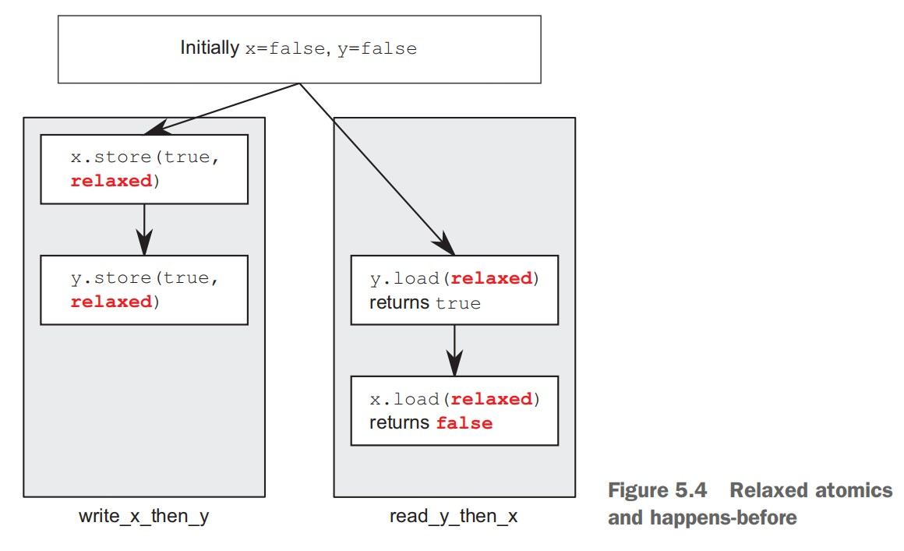
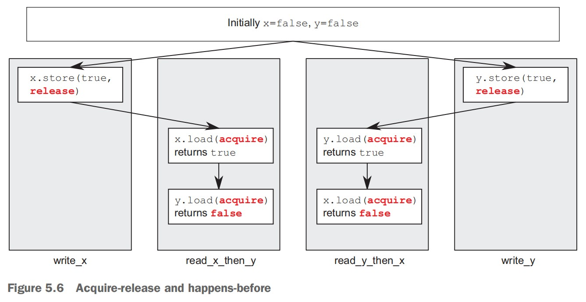

AsynchronousProgramming
Table of Contents
- C++ Concurrency In Action
- 01 hello world of concurrency in c++
- 02 managing threads
- 03 sharing data between threads
- Problems with sharing data between threads
- Protecting data with mutexes
- Using mutexes in C++
- Structuring code for protecting shared data
- Spotting race conditions inherent in interfaces
- Deadlock: the problem and a solution
- Further guidelines for avoiding deadlock
- Flexible locking with std::unique_lock
- Transferring mutex ownership between scopes
- Locking at an appropriate granularity
- Alternative facilities for protecting shared data
- 04 synchronizing concurrent operations on atomic types
- Waiting for an event or other condition
- Waiting for one-off events with futures
- Waiting with a time limit
- Using synchronization of operations to simplify code
- 05 The C++ memory model and operations on atomic types
- Memory model basics
- Atomic operations and types in C++
- Synchronizing operations and enforcing ordering
- 06 designing lock-based concurrent data structures
- 07 designing lock-free concurrent data structures
- 7.1 Definitions and consequences (229)
- 7.2 Examples of lock-free data structures (232)
- Writing a thread-safe stack without locks (233)
- Stopping those pesky leaks: managing memory in lock-free data structures (237)
- Detecting nodes that can’t be reclaimed using hazard pointers (241)
- Detecting nodes in use with reference counting (249)
- Applying the memory model to the lock-free stack (255)
- Writing a thread-safe queue without locks (259)
- 7.3 Guidelines for writing lock-free data structures (271)
- 08 designing concurrent code
- 本章主要内容
- 8.1 Techniques for dividing work between threads (275)
- 8.2 Factors affecting the performance of concurrent code (283)
- 8.3 Designing data structures for multithreaded performance (289)
- 8.4 Additional considerations when designing for concurrency (293)
- 8.5 Designing concurrent code in practice (305)
- 09 advanced thread management
- 本章主要内容
- 9.1 Thread pools (324)
- 9.2 Interrupting threads (338)
- Launching and interrupting another thread (339)
- Detecting that a thread has been interrupted (341)
- Interrupting a condition variable wait (341)
- Interrupting a wait on std::condition_variable_any (344)
- Interrupting other blocking calls (346)
- Handling interruptions (347)
- Interrupting background tasks on application exit (348)
- 10 parallel algorithms
- 11 testing and debugging multithreaded applications
- 本章主要内容
- 11.1 Types of concurrency-related bugs (363)
- 11.2 Techniques for locating concurrency-related bugs (365)
- c++ 多线程编程
- 参考资料
C++ Concurrency In Action
01 hello world of concurrency in c++
What is Concurrency?
将应用程序设计为多进程来实现并发
通信方式：进程之间通过常见的内部进程间通信（例如 信号、socket、files、pipes 等等）来互相交流信息
缺点：
- 进程之间的通信比较复杂或者比较慢，或者又复杂又慢，因为操作系统通常提供了很多保护为了避免一个进程意外修改另一个进程的数据。
- 运行多个进程有天然的消耗，操作系统必须拿一部分内部资源用于管理进程。
优点：
- 操作系统为进程间提供的保护和高阶通信机制，有利于编写安全的同步代码。Erlang 编程语言就是基于进程实现并行的。
- 使用分开的进程来实现并发时，可以将分开的进程在不同的机器上运行，这些机器通过网络链接在一起。
将应用程序设计为多线程来实现并发
通信方式：一个进程内的所有线程共享相同的地址空间，大多数数据可以被多线程直接访问（全局变量依然是全局的，对象或数据的指针或引用可以在线程之间进行传递）
缺点：
- 当数据被多个线程访问时，应用程序开发者需要确保每个线程在任意时刻访问该数据时看到的值是一致的。
- 多线程共享数据可能会引起很多问题，为了避免这些问题，要使用一些工具，还要遵守一些指导原则。
优点：
- 共享地址空间加上线程之间没有数据保护，使得多线程比多进程的开销要小很多，操作系统不需要过多的记录。
- C++标准没有为多进程的通信提供任何内置支持，使用多进程需要开发人员依赖平台相关的特定 API。
并发(concurrency) VS 并行(parallelism)
这两个术语都是指，利用可用的硬件同时执行多个任务。但是并行更多是面向性能的，当人们谈到并行时，他们主要关心的是利用可用硬件的优势来提升大量数据处理的性能。当人们谈到并发时，他们主要关心的是任务的分割(关注点分离 Separation of concerns)。
Why use Concurrency?
使用 concurrency 主要有两个原因：分离关注点（Separation of concerns）和性能。
使用 concurrency 来分离关注点 使用 concurrency 来提高性能
可以利用 concurrency 通过两种方式来提高性能：
第一种方式：将一个整体划分为多个部分。听上去很简单，但是划分可能很复杂，因为各个部分可能会有依赖。划分既可以是对处理流程的划分（任务并行），也可以是对数据的划分（数据并行）。
第二种方式：利用可行的并行解决更大的问题。一次处理不止一个文件，而是处理两个或 10 个或 20 个。尽管这是数据并行的一种应用，但是侧重不同。其使用相同的时间处理一大批数据。
什么时候不要使用 concurrency?
当使用 concurrency 得到的收益比不上付出的代价，就不应该使用 concurrency。
启动一个线程有天生的开销。OS 需要申请对应的内核资源，栈空间，还需要将线程加到 scheduler，这些都需要消耗时间。如果线程上的任务很快就结束了，可能任务消耗的时间还没启动线程消耗的时间多，这可能使得性能更差。
线程是有限的资源。如果你同时运行很多线程，这消耗了 OS 资源，可能使系统整体会变慢。不仅如此，使用太多线程可以耗尽一个进程的可用内存或地址空间，因为每个线程都需要一个独立的栈空间。对于 平坦架构的 32 位进程，地址空间的大小限制为 4GB，如果每个线程的栈占用 1MB，则最多可以有 4096 个线程。尽管可以使用线程池来限制线程的数量，但是并不能解决所有的问题，线程池有其自身的问题。
在 client/server 应用程序中，为每个连接启动一个线程，这对于少量连接来说是可行的，对于需要处理很多连接的高需求服务，这会很快耗尽系统的资源。这种情况下，可以使用线程池来优化性能。
线程越多，操作系统要做的上下文切换就越多。添加额外的线程将会减低应用程序整体的性能。因此，为了达到系统最佳性能，需要依据硬件的并行能力来调整线程数量。
Concurrency and multithreading in C++
History of multithreading in C++
1998 C++ 标准没有包含多线程，当时内存模型也没有正式定义，没有编译器扩展是无法编写多线程应用的。
很多编译器提供商利用当时很流行的平台相关的 C 多线程 API(POSIX C 标准和 Windows API)来支持 C++多线程。编译器的支持只是允许调用对应平台的 C API，以及保证 C++ 运行时库在多线程存在的情况下也可以正确执行。尽管很少有编译器商家提供正式的可感知多线程的内存模型，但是编译器和进程的行为已经足够好，因此编写了大量多线程 C++程序。
不满足于使用平台特定的 C API 来处理多线程，C++程序员指望他们的类库来提供面向对象的多线程设施。MFC、Boost、ACE 等等，都累积了一系列类，对底层平台相关的 API 进行了封装，为多线程提供更高级的设施，来简化多线程编程任务。尽管这些类库的具体细节差异很大，特别是启动新线程的处理，这些类的整体上也有很多共同点。他们都使用了 RAII 惯用方法来管理 mutex。
大部分情况下支持多线程的 C++编译器和平台无关的类库是足够了的。但是缺乏 C++标准的支持,意味着由于缺少多线程感知的内存模型可能会在偶然的地方导致问题，特别是利用处理器硬件知识来获得更高性能的时候，以及编写跨平台代码而编译器在不同平台上行为不同时。
Concurrency support in the C++11 standard
C++11 不止提供了多线程感知内存模型。C++标准库还包含了管理线程的类，保护共享数据的类，在线程之间同步操作的类，以及低级的原子操作。
C++14 中新加了一种 mutex 类型用于保护共享的数据。
C++17 中添加了一整套并行算法。
Efficiency in the C++ Thread Library
高性能计算领域，开发者关心的其中一个问题是 C++的效率。如果你追求极致的性能，那么你需要知道，任何高阶工具都会有一定的消耗，这是抽象的代价。
C++ Standard Library 和 Thread Library 的设计目标之一是和直接使用低阶 API 相比，消耗相同或差距不大。另一个设计目标是提供低阶的工具用于实现极限性能。
Platform-specific facilities
C++ Thread Library 为多线程和并发提供了全面的工具，而总会有平台特定的一些工具，为了便于访问平台特定的工具 C++ Thread Library 提供了 native_handler() 成员函数，其允许底层实现直接操作平台相关的 API。
Getting started
#include <iostream> #include <thread> void hello() { std::cout<<"Hello Concurrent World\n"; } int main() { std::thread t(hello); t.join(); }
每个线程都有一个初始化函数，对于应用程序的初始线程(主线程)来说，这个函数就是 main 函数。其他线程的初始函数是通过 std::thread 对象构造时来指定的。
新的线程被启动后，主线程会继续执行。如果主线程不等待新线程结束，主线程会直接执行完成(可能在新线程获得执行机会之前)。通过调用 join() 来让主线程等待关联的新线程。
02 managing threads
Basic thread management
创建进程
class background_task { public: void operator()() const { do_something(); do_something_else(); } }; // thread 接受任意可调用对象，函数、重载了调用操作符的类、lambda等 background_task f; // f会被copy到属于新线程的存储空间，并被调用 std::thread my_thread(f); // Tips： // 下面的代码会被解析为声明一个名称为my_thread的函数 // 函数参数为函数指针 // 参数函数的参数为空 // 参数函数的返回值类型为background_task std::thread my_thread(background_task()); // 正确的方式如下 std::thread my_thread((background_task())); std::thread my_thread{background_task()}; // 使用 lambda 作为 thread 的执行函数 std::thread my_thread([]{ do_something(); do_something_else(); });
等待进程结束
线程启动后，需要显示地指定是否等待其结束（调用 thread 对象的 join 函数）还是让线程自己运行（调用 thread 对象的 detach 函数）。如果在线程对象销毁前不进行指定，std::thread 的析构函数会调用 std::terminate()，这会导致进程被终止。
case1
创建线程后，执行 detach，线程执行的函数永不结束，当主线程结束后，子线程也会被迫结束。
case2
创建线程后，主线程将局部变量的引用或指针传递给线程，执行 detach，主线程离开局部变量作用域，局部变量会被释放掉，之后线程引用的数据将是错误的。
id: 100504 print ival = 10 // 子线程启动后打印引用变量的值10 id: 89912 main-thread sleep 1 second // 主线程sleep 1s id: 100504 print ival = 10 // 此时主线程还在sleep局部变量还未被释放，子线程此时打印的值依然正确 id: 100504 print ival = 143 // 主线程已经离开创建子线程的作用域，局部变量被释放，子线程打印的值为随机值，每次运行该值都不同 id: 100504 print ival = 143 id: 100504 print ival = 143 id: 100504 print ival = 143 id: 89912 main-thread sleep 5 second
case3
创建线程后，主线程将局部变量的引用或指针传递给线程，执行 join，主线程会等待子线程执行完毕后，才会继续执行，离开局部变量作用域。
id: 97172 print ival = 10 // 子线程启动后打印引用变量的值10，主线程等待子线程执行完毕后，才会继续执行 id: 97172 print ival = 10 id: 97172 print ival = 10 id: 97172 print ival = 10 id: 97172 print ival = 10 id: 93504 main-thread sleep 1 second id: 93504 main-thread sleep 5 second
join() 会清理子线程关联的存储空间，因此 std::thread 对象不再关联结束的线程，其不再关联任意线程。所以，只能对指定的线程调用一次 join，join 之后再调用 joinable 将返回 false。
case4
主线程创建子线程后 sleep 2 秒，然后再调用 join.
子线程只执行一次打印就结束.
主线程创建子线程后 sleep 2 秒，然后再调用 detach.
子线程只执行一次打印就结束.
TIPS: 子线程很快就会完成的情况下，并不会报错。只要在 std::thread 的析构之前调用 join 或 detach 就可以了。
case5
主线程创建子线程 A, 子线程 A 创建子线程 B，子线程 A 完成后，子线程 B 会依然执行，不会被迫结束。
利用 RAII 来等待线程结束
class thread_guard { std::thread& t; public: explicit thread_guard(std::thread& t_):t(t_){} ~thread_guard() { if(t.joinable()) { t.join(); } } thread_guard(thread_guard const&)=delete; thread_guard& operator=(thread_guard const&)=delete; }; struct func; void f() { int some_local_state = 0; func my_func(some_local_state); std::thread t(my_func); // RAII来等待线程结束 thread_guard(t); do_something_in_current_thread(); }
利用 detach 来使线程在后台运行
detached 的线程通常被称为后台线程(daemon threads)，其概念来源于操作系统中后台进程(daemon process)。
下面是利用 detach 线程实现的文字处理器，其可以同时处理多个文件，每个线程处理一个文件。
void edit_document(std::string const& filename) { open_document_and_display_gui(filename); while(!done_editing()) { user_command cmd = get_user_input(); if(cmd.type == open_new_document) { std::string const new_name = get_filename_from_user(); std::thread t(edit_document, new_name); t.detach(); } else { process_user_input(cmd); } } }
Passing arguments to a thread function
传递指针参数给线程非常容易引起访问悬挂指针的问题，指针所指对象已经被回收了，线程还使用指针进行访问。
传递给线程参数的处理分两步：
- 将参数传递给 thread 构造函数，thread 构造函数会将参数 copy 一份记录下来。
- thread 对象再将记录下来的参数传递给线程入口函数。传递给线程入口函数的实参是在子线程的上下文中进行构造的。
- C++的 std::thread 是怎么进行参数传递的？ https://www.zhihu.com/question/40428244
//////////////////////////// // case 1 下面代码将char const* 传递给thread，thread以char const*为参数构造std::string对象 // 因为"hello"为常量字符串，其存储在常量数据区（进程退出时才释放），离开局部作用域后不会被释放，所以如下代码不会存在未定义行为 void f(int i,std::string const& s); void opps(int some_param) { std::thread t(f, 3, "hello"); } //////////////////////////// // case 2.1 下面代码将char* buffer 传递给thread，thread 以 char const*为参数构造std::string对象 // 因为buffer为局部字符数组，离开局部作用域后会被释放，所以当主线程先离开oops子线程才开始运行时，如下代码会存在未定义行为！ // https://www.zhihu.com/question/40428244 // https://www.jianshu.com/p/816df045f93e void oops(int some_param) { char buffer[1024]; sprintf(buffer, "%i", some_param); std::thread t(f, 3, buffer); t.detach(); } //////////////////////////// // case 2.2 下面代码将string对象的构造移到了主线程中，传递给thread构造函数的是string对象，thread构造函数会copy一份string对象保存下来，然后会将copy下来的string对象传递给线程入口函数。这样就不会存在访问对象被释放的情况了 void oops(int some_param) { char buffer[1024]; sprintf(buffer, "%i", some_param); std::thread t(f, 3, std::string(buffer)); t.detach(); } //////////////////////////// // case 3.1 下面代码希望通过子线程去修改data，子线程结束后，主线程再继续处理数据 // 但是，线程构造函数的参数是值类型，所以线程传递给入口函数的实参是data的copy。主线程的data对象并没有被修改 void update_data_for_widget(widget_id w, widget_data& data); void oops_again(widget_id w) { widget_data data; std::thread t(update_data_for_widget, w, data); display_status(); t.join(); process_widget_data(data); } //////////////////////////// // case 3.2 下面代码使用std::ref 将data的引用传递给线程构造函数，使得线程访问的data数据就是主线程的data void update_data_for_widget(widget_id w, widget_data& data); void oops_again(widget_id w) { widget_data data; std::thread t(update_data_for_widget, w, std::ref(data)); display_status(); t.join(); process_widget_data(data); }
通过传递对象指针，就可以使用成员函数作为线程入口函数
class X { public: void do_lengthy_work(); }; X my_x; std::thread t(&X::do_lengthy_work, &my_x);
传递只能 move 而不能 copy 的参数
void process_big_object(std::unique_ptr<big_object>); std::unique_ptr<big_object> p(new big_object); p->prepare_data(42); std::thread t(process_big_object, std::move(p));
std::thread 对象和 std::unique_ptr 对象一样，只能 move 而不能 copy
Transferring ownership of a thread
void some_function(); void some_other_function(); std::thread t1(some_function); std::thread t2=std::move(t1); // 将t1所有权移动给t2 t1 = std::thread(some_other_function); // 通过移动构造函数将新构造的线程所有权移动给t1 std::thread t3; // 默认构造std::thread对象t3，其不关联任何线程 t3 = std::move(t2); // 将t2所有权移动给t3 t1 = std::move(t3); // 首先将t1自身所有权释放（由于没有对t1执行join或detach，所以，这里会直接调用std::terminate 结束进程），==(进程结束，没有然后了！)==
std::thread 支持 move 意味着，可以将 std::thread 的所有权传递到函数外：
std::thread f() { void some_function(); return std::thread(some_function); } std::thread g() { void some_other_function(int); std::thread t(some_other_function, 42); return t; }
同理，也可以将所有权传递到一个函数内：
void f(std::thread t); void g() { void some_function(); f(std::thread(some_function)); std::thread t(some_function); f(std::move(t)); //f(t); // TIPS: 此处调用了thread的copy构造函数，该函数被thread标记为了delete，因此会编译错误 }
scoped_thread
std::thread 支持移动的一个好处是，可以依赖 scoped_thread 类，让其拥有 thread 的所有权。这避免了不好的事情发生，thread_scoped 对象要比其管理的 thread 的生命期长，而且一旦 thread 的所有权移动到 scoped_thread 对象中，其他对象将不能再对线程进行 join 或 detach 操作。因为，该类的目的是让 thread 在作用域内执行完成，因此将该类命名为 scoped_thread。
class scoped_thread { std::thread t; public: explicit scoped_thread(std::thread t_): t(std::move(t_)) { if(!t.joinable()) throw std::logic_error(“No thread”); } ~scoped_thread() { t.join(); } scoped_thread(scoped_thread const&)=delete; scoped_thread& operator=(scoped_thread const&)=delete; }; struct func; // 实现了调用操作符的struct void f() { int some_local_state; scoped_thread t{std::thread(func(some_local_state))}; do_something_in_current_thread(); }
上面 scoped_thread 和前面 thread_guard 类实现类似，不同之处在于，scoped_thread 可以接受直接构造的 thread 对象，而 thread_guard 则需要先创建一个 thread 对象，再将该对象通过引用传递给 thread_guard。
joining_thread
C++17 有一个提议是 joining_thread，其和 thread 类似，但是会在 joining_thread 对象释放时自动执行 join。该提议没有被同意，C++20 有一个相同的提议 jthread。我们可以很容易自己实现 joining_thread,如下：
class joining_thread { std::thread t; public: joining_thread() noexcept=default; template<typename Callable,typename ... Args> explicit joining_thread(Callable&& func,Args&& ... args): t(std::forward<Callable>(func),std::forward<Args>(args)...) {} explicit joining_thread(std::thread t_) noexcept: t(std::move(t_)) {} joining_thread(joining_thread&& other) noexcept: t(std::move(other.t)) {} joining_thread& operator=(joining_thread&& other) noexcept { if(joinable()) join(); t=std::move(other.t); return *this; } joining_thread& operator=(std::thread other) noexcept { if(joinable()) join(); t=std::move(other); return *this; } ~joining_thread() noexcept { if(joinable()) join(); } void swap(joining_thread& other) noexcept { t.swap(other.t); } std::thread::id get_id() const noexcept { return t.get_id(); } bool joinable() const noexcept { return t.joinable(); } void join() { t.join(); } void detach() { t.detach(); } std::thread& as_thread() noexcept { return t; } const std::thread& as_thread() const noexcept { return t; } };
thread and container
thread 支持移动，使得可以用识别移动的 container 来存放 thread。
void do_work(unsigned id); void f() { std::vector<std::thread> threads; for(unsigned i=0;i<20;++i) { threads.emplace_back(do_work,i); } for(auto& entry: threads) entry.join(); }
Choosing the number of threads at runtime
std::thread::hardware_concurrency() 返回真正可以并行执行的线程数量。在一个多核系统中，其返回的可能是 CPU 的核心数量。如果相关信息不可用时，其可能返回 0。
template<typename Iterator,typename T> struct accumulate_block { void operator()(Iterator first,Iterator last,T& result) { result=std::accumulate(first,last,result); } }; template<typename Iterator,typename T> T parallel_accumulate(Iterator first,Iterator last,T init) { unsigned long const length=std::distance(first,last); if(!length) return init; unsigned long const min_per_thread=25; unsigned long const max_threads= (length+min_per_thread-1)/min_per_thread; unsigned long const hardware_threads= std::thread::hardware_concurrency(); unsigned long const num_threads= std::min(hardware_threads!=0?hardware_threads:2,max_threads); unsigned long const block_size=length/num_threads; std::vector<T> results(num_threads); std::vector<std::thread> threads(num_threads-1); Iterator block_start=first; for(unsigned long i=0;i<(num_threads-1);++i) { Iterator block_end=block_start; std::advance(block_end,block_size); threads[i]=std::thread( accumulate_block<Iterator,T>(), block_start,block_end,std::ref(results[i])); block_start=block_end; } accumulate_block<Iterator,T>()( block_start,last,results[num_threads-1]); for(auto& entry: threads) entry.join(); return std::accumulate(results.begin(),results.end(),init); }
Identifying threads
thread 身份标识的类型为 std::thread::id，可以通过两种方式获得 thread 的身份标识。
- 通过 std::thread 的 get_id()成员函数获得 std::thread 关联线程的身份标识。如果 std::thread 对象不关联任何线程，则 get_id()成员函数返回一个默认的 std::thread::id 对象。
- 通过 std::this_thread::get_id() 获得当前线程的身份标识。TIPS: std::this_thread 为一个命名空间。
std::thread::id 类型的对象可以被自由地 copy 和比较。如果两个 std::thread::id 类型的对象相等，说明他们表示相同的线程，或者他们都不关联任何线程。
std::thread::id 提供了完整的比较操作集合，其可以作为关联容器的 key，也可以对其进行排序。标准库还提供了 std::hash<std::thread::id>，因此其还可以作为新的非排序关联容器的 key。
std::thread::id master_thread; void some_core_part_of_algorithm() { if(std::this_thread::get_id()==master_thread) { do_master_thread_work(); } do_common_work(); }
可以将 std::thread::id 输出。TIPS：std::thread::id 的输出是依赖于实现的，不同实现输出可能不同。输出值只用于调试，其没有任何意义。
std::cout<<std::this_thread::get_id();
03 sharing data between threads
使用线程来实现并发的一个关键好处是，线程之间可以更容易，更直接地共享数据。
共享也会带来一些问题。假如你和一个普通朋友共享一间公寓。这间公寓只有一个厨房一个卫生间。你和你的朋友无法同时使用卫生间。如果在你需要使用卫生间时，你的朋友占用卫生间很长时间，这会使你非常沮丧。类似地，假如厨房有一个组合在一起的烤炉和烤架，如果你在烤香肠的同时，你室友在烘培蛋糕。这样做你们得到的结果不会很好。（你室友会得到混有香肠味的蛋糕）
对线程来说也一样。多个线程之间共享数据时，你需要有规则规定，哪个线程可以在什么时候可以访问数据的哪些位，以及任何对该数据的改动如何同步给关心该数据的其他线程。可以很容易地在多线程之间共享数据不只是一个便利，其也是一个很大的麻烦。不正确地使用共享数据是导致并发相关 bug 的最大原因之一。
Problems with sharing data between threads
归根结底，多线程共享数据的问题都是由于修改数据导致的。如果所有共享的数据都是只读的，就不会有任何问题，因为数据被一个线程读取并不会影响其他线程对该数据的读取。但是，如果多个线程之间共享数据，其中一个或多个线程对数据进行修改，这将有很多潜在的问题。
不变性（invariants）被广泛使用，来帮助程序员思考他们的代码。在做数据更新时，这些不变性常常会被破坏，特别是数据结构比较复杂，需要修改不只一个值的时候。考虑一个双向链表，每个节点有两个指针，指针 pre 指向前一个节点，指针 next 指向后一个节点。其包含这样的不变性：假如 A.next = B，则 B.pre=A。当删除一个节点时，被删除节点的两侧的节点都需要更新，只有一个节点更新后，不变性就会被破坏，直到另一个节点也更新完毕，不变性得以再次保持。
在不变性被破坏的时候，从两个方向遍历列表获得的结果是不一致的。不变性被破坏的后果会各不相同；如果一个线程从左到右读列表，其会忽略被删除的节点。另一方面，如果另一个线程试图删除最右边的节点，则其可能永远将数据结构污染，甚至使进程 crash。这是一个 race conditions 的例子，其是在并行代码中最常见的导致 bug 的一种原因。
Race conditions
假如你在一个很大的电影院买电影票，有很多售票员，因此同时有很多人可以购票。如果另一个售票员窗口的购票者正在和你买同一场电影的电影票，那么你可选的座位依赖于你和另一个人谁先订票。如果所剩座位不多，谁先谁后的差别就会非常重要：其甚至是一场竞赛，看谁拿到最后一张票。这是一个 race condition 的例子：你获得哪个座位(或者你是否能得到座位)取决于两次购买的先后顺序。
在并行中，当结果依赖于两个或多个线程上执行的操作的相对顺序时，这种情况就是 race condition。多个线程竞争执行他们各自的操作。大多数时间，这种竞争是良性的，因为各种结果都是可接受的。例如，如果两个线程添加 item 到一个队列中，通常哪个 item 被先添加到队列并不重要，其系统的不变性一直被保持。当 race condition 导致不变性被破坏时，才会产生问题。在并行中谈到 race condition 时，通常是指有问题的 race condition；C++ 标准还定义了 data race 专业术语，用于表示一种特殊的 race condition，其专指对单个对象进行异步修改；data races 会导致可怕的未定义行为。
有问题的 race conditions 通常发生在完成一个操作需要修改两个或多个不同的的数据。例如，上面提到的双向链表中删除节点。因为操作必须访问两个分开的数据，这些修改必须在分开的指令中，因此另一个线程可能在只有其中一个修改完成时就对数据进行访问。Race conditions 通常很难被发现并且很难被复现，因为复现的窗口机会非常小。如果修改是由连续的 CPU 指令完成的，该问题显露的机会在任何一次执行中都很小，即使是该数据结构被另一个线程同步访问。随着系统负载的增加，以及该操作执行次数的增加，有问题的执行次序出现的机会也会增加。这类问题几乎必然会在大多数不顺畅的时候出现。因为 race conditions 通常是时机敏感的，而 debugger 会影响程序的执行时机，因此在调试程序时，race conditions 通常会消失。
Avoiding problematic race conditions
有很多种方式来处理 problematic race conditions,最简单的方式是使用保护机制来封装数据结构，确保只有一个线程可以修改数据结构，只有修改数据结构的线程可以看到 invariants 被破坏的中间状态。从其他访问该数据结构的线程看，对数据结构的修改要么还没开始，要么已经完成。C++标准库提供了很多这样的机制。
另一种方法是，修改你的数据结构的设计和不变性，使得对数据结构的修改是通过一系列不可分的修改来完成的，每个小的修改都保持了不变性。这种方式通常被称为无锁编程(lock-free programming)，其通常很难达到正确结果。如果您在此级别工作，内存模型的细微差别以及识别哪些线程可能会看到哪组值可能会变得复杂。内存模型在第 5 章介绍，无锁编程在第 7 章介绍。
还有一种方法是，将对数据结构的修改当作事务（transaction），就像对数据库的更新是在一个事务内完成的。所需的一系列数据修改和读取存储在事务日志中，然后在一个步骤中提交。如果由于数据结构被其他线程修改提交无法被处理，事务会被重启。这种方法的专业术语名称为 software transactional memory (STM),当前是一个活跃的研究领域。本书不会介绍该方法，因为 c++中没有直接支持 STM（有一个对 c++进行 Transactional Memory 扩展的技术规范）。但是，秘密地做一些事，然后在单个步骤提交的基本理念会在后面提到。
Protecting data with mutexes
为了保护共享数据结构，如果你可以标记所有代码片段，使他们互相排斥地(mutually exclusive)访问共享数据结构，当任何一个线程在执行其中一个代码片段时，其他试图访问共享数据结构的线程必须等待直到第一个线程访问结束。这将会保证除了做修改的线程外，其他线程无法看到不变性被破坏。
使用互斥锁同步原语即可达到上面效果。mutex 是 mutual exclusion 的缩写。
mutex 是 c++中最通用的数据保护机制。但是其不是银弹；你还需要组织你的代码以保护正确的数据，在你的接口中避免固有的 race conditions。mutexs 还会带来 deadlock 的问题。
Using mutexes in C++
mutex
#include <list> #include <mutex> #include <algorithm> std::list<int> some_list; std::mutex some_mutex; void add_to_list(int new_value) { some_mutex.lock(); some_list.push_back(new_value); some_mutex.unlock(); } bool list_contains(int value_to_find) { std::lock_guard<std::mutex> guard(some_mutex); return std::find(some_list.begin(),some_list.end(),value_to_find) != some_list.end(); }
lock_guard
#include <list> #include <mutex> #include <algorithm> std::list<int> some_list; std::mutex some_mutex; void add_to_list(int new_value) { // std::lock_guard 利用RAII的理念来管理 mutex // c++17中引入了增强版本的 lock guard，其为std::scoped_lock // std::scoped_lock guard(some_mutex); std::lock_guard<std::mutex> guard(some_mutex); some_list.push_back(new_value); } bool list_contains(int value_to_find) { std::lock_guard<std::mutex> guard(some_mutex); return std::find(some_list.begin(),some_list.end(),value_to_find) != some_list.end(); }
Structuring code for protecting shared data
使用 mutex 保护数据不单单是在每个成员函数中放置 lock_guard 对象。一个逃逸的指针或引用会使得所有数据保护都是徒劳的。从某种角度看，检查逃逸指针或引用是比较容易的。只要没有成员函数返回共享数据的指针或引用给函数调用者。如果你更深入地挖掘，你会发现并不那么简单。你还要检查成员函数不会将共享数据的指针或引用传递进不受你控制的函数。
class some_data { int a; std::string b; public: void do_something(); }; class data_wrapper { private: some_data data; std::mutex m; public: template<typename Function> void process_data(Function func) { std::lock_guard<std::mutex> l(m); // 将保护数据的引用传递给不受控制的func函数，func函数将保护数据的指针保存下来，导致了共享数据指针的逃逸 func(data); } }; some_data* unprotected; void malicious_function(some_data& protected_data) { unprotected=&protected_data; } data_wrapper x; void foo() { x.process_data(malicious_function); unprotected->do_something(); }
TIPS:
不要通过函数返回共享数据的指针或引用，不要将共享数据的指针或引用存储在外部可见的地方，不要将共享数据的指针或引用当作参数传递给用户提供的函数。总之就是，不要将共享数据的指针或引用传递到锁的作用域外。
Spotting race conditions inherent in interfaces
仅仅使用互斥锁或其他机制来保护共享数据，并不意味着就不会受 race condition 影响。你依然必须确保适当的数据被保护。考虑双向链表的例子，为了使一个线程安全地删除一个节点，必须避免其他线程同步访问 3 个节点：被删除的节点，以及该节点的前后节点。如果你独立地保护访问每个节点的指针，这样做不会比不使用互斥锁的代码更好，因为 race conditions 依然存在。最简单的方式是，使用一个互斥锁保护整个链表。
仅仅使链表上的单个操作是安全的，也并不意味着不受 race condition 影响。考虑一个栈数据结构，如果你修改 top()函数使其返回一个数据 copy 而不是引用，并且使用 mutex 保护内部数据，这个接口本质上依然受 race condition 影响。该问题并不是只存在于基于 mutex 的实现方式，对于 lock-free 的实现方式也存在该问题，该问题是接口的问题。此处的问题是，empty()和 size()不能够被信赖。尽管在调用的时候，他们是正确的，但是一旦返回，其他线程即可自由地访问 stack，他们可能 push 新的元素或者 pop 老元素出来，此时再使用 empty()和 size()返回的结果将是错误的。
template<typename T,typename Container=std::deque<T> > class stack { public: explicit stack(const Container&); explicit stack(Container&& = Container()); template <class Alloc> explicit stack(const Alloc&); template <class Alloc> stack(const Container&, const Alloc&); template <class Alloc> stack(Container&&, const Alloc&); template <class Alloc> stack(stack&&, const Alloc&); bool empty() const; size_t size() const; T& top(); T const& top() const; void push(T const&); void push(T&&); void pop(); void swap(stack&&); template <class... Args> void emplace(Args&&... args); };
stack<int> s; if(!s.empty()) // mark 1 { int const value=s.top(); // mark 2 s.pop(); // mark 3 do_something(value); }
当 stack 实例不被共享时，上面的代码是安全的。当 stack 实例被共享时，上面的代码就会有问题。该问题是由于接口设计导致的，因此需要修改接口。
问题 1: mark1 和 mark2 之间可能有其他线程调用 pop。mark2 处调用 top 时，可能 stack 中已经没有数据了。这是因为 empty 和 top 的竞争导致的。解决该问题最简单的方式是，声明当 stack 中没数据时，top 会抛出异常。这样处理虽然定位了问题，它使得编程更加繁琐，你需要在 empty 返回 false 的情况下也要捕获异常。
问题 2: 假设只有两个线程，且他们按照下面的顺序执行代码，两个线程的 value 变量是相同的值，所以两个线程中 do_something 处理的数据相同。stack 中 pop 出了两个元素，其中一个被处理两次，另一个没有被处理。这也是一种 race condition，其非常隐蔽，很难被发现。解决该问题需要对接口做更激进的修改。
可以将 top 和 pop 合并在一起使用互斥量进行保护。但是，将 top 和 pop 合并也会引入新的问题。假如 stack 的类型为 stack<vector<int>>，vector 是一个尺寸动态变化的容器，当调用 top 时，执行 vector 的 copy，如果此时内存不够，则 copy 构造 vector 会抛出 std::bad_alloc 异常。新的 pop 函数被定义为返回弹出的数据，同时将其从 stack 上删除。你所面对的问题是，返回弹出的数据给调用者在，从 stack 上删除数据之后。如果从 stack 上删除数据成功，而返回数据给调用者抛出异常，则数据会永远丢失。可以通过下面几种方式来解决该问题：
方法 1: Pass in a reference
这种方案在大多数情况下是可行的。但是，其缺点是需要调用者在调用之前构造一个 stack 元素的实例。对一些类型来说，这是不切实际的，构造一个实例是比较昂贵的。而对另外一些类型来说，这是不可行的，因为构造对象需要参数，而此处参数可能是不可行的。最后，其还需要 stack 的元素类型支持赋值。
std::vector<int> result; some_stack.pop(result);
方法 2: REQUIRE A NO-THROW COPY CONSTRUCTOR OR MOVE CONSTRUCTOR
限制 stack 元素的类型具有不抛异常的 copy 构造函数或具有不抛异常的 move 构造函数。这种方案限制了很多类型的元素无法存储在该 stack 中。
方法 3: RETURN A POINTER TO THE POPPED ITEM
返回一个指针而不是返回元素的值。可以使用 std::shared_ptr 来管理指针。这种方案对于简单类型来说，比直接返回值性能要低。
方法 4: PROVIDE BOTH OPTION 1 AND EITHER OPTION 2 OR 3
#include <exception> #include <memory> #include <mutex> #include <stack> struct empty_stack: std::exception { const char* what() const throw(); }; template<typename T> class threadsafe_stack { private: std::stack<T> data; mutable std::mutex m; // mutable 表示可以在const成员函数中修改该成员变量 public: threadsafe_stack(){} threadsafe_stack(const threadsafe_stack& other) { std::lock_guard<std::mutex> lock(other.m); data=other.data; } threadsafe_stack& operator=(const threadsafe_stack&) = delete; // 赋值运算符被删除 因为std::mutex是不能copy 不能move的对象 void push(T new_value) { std::lock_guard<std::mutex> lock(m); data.push(std::move(new_value)); } std::shared_ptr<T> pop() { std::lock_guard<std::mutex> lock(m); if(data.empty()) throw empty_stack(); std::shared_ptr<T> const res(std::make_shared<T>(data.top())); data.pop(); return res; } void pop(T& value) { std::lock_guard<std::mutex> lock(m); if(data.empty()) throw empty_stack(); value=data.top(); data.pop(); } bool empty() const { std::lock_guard<std::mutex> lock(m); return data.empty(); } };
前面讨论的 top 和 pop 接口之间的 race conditions，是因为锁的粒度太小导致的，锁没有覆盖到所有要保护的代码。将 top 和 pop 合为 pop 之后，解决了该问题。锁的粒度过大同样也会带来问题，极端情况下只用一个锁来保护所有的共享数据，这会消除所有并行带来的性能提升，因为同一时间只能执行一个线程。
粒度适当的锁机制，有时候需要你使用多个互斥量来保护一个操作中的所有共享数据。例如，某个操作使用了某个类的多个实例，多个互斥量分别保护某个类的多个实例。在这种情况下，需要在上一级进行锁定，要么把锁定操作留给用户来做，要么就需要对类的所有实例进行锁定。这两种方式都不够好。
当你需要为某个操作对两个或更多互斥量上锁时，这可能会导致死锁。
- C++ 中的 mutable 关键字 https://liam.page/2017/05/25/the-mutable-keyword-in-Cxx/
Deadlock: the problem and a solution
假如你有两个小孩，你为他们买了一个玩具，该玩具有两部分：锣和锤。只有同时获得锣和锤才能玩敲锣的游戏。这时，你的两个孩子一个拿到了锣一个拿到了锤，他们都在等对方不让出拿到的一部分，这导致他们谁也不能玩敲锣游戏。这就是典型的死锁情况。
两个线程也会发生这样的情况。死锁和 race conditions 完全相反，发生死锁后，每个线程都在等待对方完成。导致该问题的核心原因是完成某个操作需要同时对多个互斥量上锁。
解决死锁的最平常的方式是，始终按照一定的顺序对互斥量进行上锁。这样，你将永远不会死锁。但是，有时候不容易做到。例如，某个函数是交换同一个类的两个实例，该函数的两个参数是等价的，调用该函数时，实参顺序可以被调换，这就破坏了上锁的顺序。
C++标准库提供了 std::lock 函数，其可以对多个互斥量同时上锁。
class some_big_object; void swap(some_big_object& lhs,some_big_object& rhs); class X { private: some_big_object some_detail; std::mutex m; public: X(some_big_object const& sd):some_detail(sd){} friend void swap(X& lhs, X& rhs) { // 如果两个参数是同一个对象，则返回。避免对同一个互斥量上锁多次 // 对同一个互斥量上锁多次属于未定义行为 if(&lhs==&rhs) return; std::lock(lhs.m,rhs.m); std::lock_guard<std::mutex> lock_a(lhs.m,std::adopt_lock); std::lock_guard<std::mutex> lock_b(rhs.m,std::adopt_lock); swap(lhs.some_detail,rhs.some_detail); } }; // C++17 引入了 std::scoped_lock<> 可以对上面swap函数进行简化 void swap(X& lhs, X& rhs) { if(&lhs==&rhs) return; // std::scoped_lock 是一个模板类，此处利用了C++17中引入的类模板参数类型推断 std::scoped_lock guard(lhs.m,rhs.m); swap(lhs.some_detail,rhs.some_detail); }
Further guidelines for avoiding deadlock
死锁不止发生在互斥量上锁的时候。当两个线程互相调用对方 std::thread 对象的 join 函数，也会导致死锁。此时两个线程都无法向前执行，因为他们都在等待对方结束。
所有避免死锁的指导原则都可以归结为：如果有机会等着你，那么就不要等另外其他线程。
AVOID NESTED LOCKS
如果你已经对一个互斥量上了锁，不要再对其他互斥量上锁。这样就不会因为对互斥量上锁而导致死锁。如果需要对多个互斥量上锁，应该使用 std::lock。
AVOID CALLING USER-SUPPLIED CODE WHILE HOLDING A LOCK
用户的代码可能执行任何操作，其可能对互斥量上锁。如果你已经对一个互斥量上了锁，若用户的代码又对其他互斥量上锁，这破坏了第一条 guideline，有可能导致死锁。
ACQUIRE LOCKS IN A FIXED ORDER
如果你需要获得多个锁，并且无法同时对这些互斥量进行上锁，那么你需要在所有线程中保证按照相同的顺序对 mutex 进行上锁。
有时候无法很容易做到，考虑双向链表的例子。对于删除一个节点，我们需要获得 3 个节点的锁；遍历列表时，为了避免同时有其他线程对当前节点的 next ptr 有修改，当其获取下一个节点的锁时，其必须保持当前节点的锁。一旦获得下一个节点的锁，则可以释放当前节点的锁，下一个节点变为当前节点。这种 hand-over-hand 上锁方式，可以让多个线程同时访问列表的不同节点。但是，为了避免死锁，节点必须按照相同的顺序上锁。例如：如果一个线程从头到尾遍历列表，另一个线程从尾到头遍历列表，就会出现死锁，详细分析如下：
类似的，假设 A,B,C 是按顺序的三个节点。当删除节点 B 时，需要分别获得 A，B，C 的锁，如果先获得 B 的锁，此时其他线程有可能获得 A 的锁或 C 的锁，从而导致死锁。如果始终遵守获得锁的顺序则可避免死锁的问题。
USE A LOCK HIERARCHY
这是一种特殊的获取锁的顺序。层次锁结构提供了一种方法来检查在运行时约定规则是否被遵守。其理念是，将应用程序分层，确定给定层所有可能被锁定的互斥量。当代码试图对互斥量上锁时，如果其已经持有一个更底层的锁，则不允许其当前的操作。你可以为每个互斥量赋予一个层次编号，并记录哪些互斥量被哪些线程持有。C++标准库，没有直接提供这种机制。
hierarchical_mutex high_level_mutex(10000); hierarchical_mutex low_level_mutex(5000); hierarchical_mutex other_mutex(6000); int do_low_level_stuff(); int low_level_func() { std::lock_guard<hierarchical_mutex> lk(low_level_mutex); return do_low_level_stuff(); } void high_level_stuff(int some_param); void high_level_func() { std::lock_guard<hierarchical_mutex> lk(high_level_mutex); high_level_stuff(low_level_func()); } // thread_a 遵守了规则，其可以正确运行 // 其持有 high level锁，允许再获取low level锁 void thread_a() { high_level_func(); } void do_other_stuff(); void other_stuff() { high_level_func(); do_other_stuff(); } // thread_b 违反了规则，持有 // 其持有middle level锁，又去获取high level锁，这是不被允许的 void thread_b() { std::lock_guard<hierarchical_mutex> lk(other_mutex); other_stuff(); }
class hierarchical_mutex { std::mutex internal_mutex; unsigned long const hierarchy_value; unsigned long previous_hierarchy_value; // 被thread_local 标记的变量，每个线程都有自己的copy // 所有hierarchical_mutex 实例都可以访问该变量，但是不同线程，该变量的值不同。 static thread_local unsigned long this_thread_hierarchy_value; void check_for_hierarchy_violation() { if(this_thread_hierarchy_value <= hierarchy_value) { throw std::logic_error("mutex hierarchy violated"); } } void update_hierarchy_value() { previous_hierarchy_value=this_thread_hierarchy_value; this_thread_hierarchy_value=hierarchy_value; } public: explicit hierarchical_mutex(unsigned long value): hierarchy_value(value), previous_hierarchy_value(0) {} void lock() { // 上锁时，检查线程的锁等级是否高于互斥量锁等级 // this_thread_hierarchy_value <= hierarchy_value 获取更高等级的锁，被禁止 // this_thread_hierarchy_value > hierarchy_value 获取更低等级的锁，被允许 check_for_hierarchy_violation(); internal_mutex.lock(); // 更新当前线程的锁等级 update_hierarchy_value(); } void unlock() { // 释放锁时，检查线程的锁等级是否等于互斥量锁等级 // 乱序解锁，会导致线程的锁等级错误 // // 例如：获取锁的顺序为 high->low，释放锁的顺序也为 high-low // hierachy_value previous_hierachy_value this_thread_hierachy_value // lock high high ULONG_MAX high // lock low low high low // unlock high high ULONG_MAX ULONG_MAX // unlock low low high high // 因此应该逆序释放锁！ if(this_thread_hierarchy_value!=hierarchy_value) throw std::logic_error("mutex hierarchy violated"); this_thread_hierarchy_value=previous_hierarchy_value; internal_mutex.unlock(); } bool try_lock() { check_for_hierarchy_violation(); if(!internal_mutex.try_lock()) return false; update_hierarchy_value(); return true; } }; thread_local unsigned long hierarchical_mutex::this_thread_hierarchy_value(ULONG_MAX);
EXTENDING THESE GUIDELINES BEYOND LOCKS
导致死锁的不止是对互斥量上锁，任何同步操作也会导致循环等待。因此，需要将上面的 guidelines 扩展到其他情况。例如，我们可以扩展 Avoid nested locks 这条 guideline。当线程获得一个锁时，不要去等待其他线程结束（等待的线程，可能正在获取当前线程持有的锁）。类似地，对于 Use a lock hierarchy 这条 guideliine，对于等待线程结束也适用，可以为线程指定 hierarchy，低等级的线程不能等待高等级的线程。
Flexible locking with std::unique_lock
通过放松不变性，std::unique_lock 和 lock_guard 相比，提供了更多的灵活性。std::unique_lock 内部有一个 flag 用来标记其是否拥有 mutex 的所有权，如果其没有，则在析构函数中将不会对 mutex 进行 unlock，否则才会对 mutex 进行 unlock。std::unique_lock 的成员函数 owns_lock()可以用于查询 std::unique_lock 是否对 mutex 具有所有权。
std::unique_lock 内部有 flag，因此，其所占内存大小要比 std::lock_guard 要大。由于 flag 的存在，std::unique_lock 的相关操作中需要对 flag 进行检查或更新，其性能也要比 std::lock_guard 要差一些。如果 std::lock_guard 满足你的需求，尽量使用 std::lock_guard，需要 defer lock 或需要将锁的所有权从一个作用域转移到另外作用域时，再使用 std::unique_lock .
class some_big_object; void swap(some_big_object& lhs,some_big_object& rhs); class X { private: some_big_object some_detail; std::mutex m; public: X(some_big_object const& sd):some_detail(sd){} friend void swap(X& lhs, X& rhs) { if(&lhs==&rhs) return; // std::defer_lock 表示，暂时不对mutex上锁 std::unique_lock<std::mutex> lock_a(lhs.m,std::defer_lock); std::unique_lock<std::mutex> lock_b(rhs.m,std::defer_lock); // 此处使用std::lock对 std::unique_lock 上锁，会调用std::unique_lock的lock成员函数，进而调用mutex的lock成员函数 std::lock(lock_a,lock_b); swap(lhs.some_detail,rhs.some_detail); } };
- std::unique_lock 源代码分析 https://blog.csdn.net/q943520218/article/details/95721696
Transferring mutex ownership between scopes
由于 std::unique_lock 实例可以不拥有其所关联的 mutex，因此可以通过 moving 在 std::unique_lock 实例之间传递 mutex 的所有权。std::unique_lock 类型是 movable 类型，但不是 copyable 类型，当 std::unique_lock 实例为 rvalue 时可以自动传递，当 std::unique_lock 实例为 lvalue 时需要使用 std::move 将其转化为 rvalue。
一种使用 std::unique_lock 传递 mutex 所有权的方式如下，get_lock 函数对 mutex 进行上锁，然后将所有权转移给调用者，调用者在锁的保护下可以继续做一些事情，调用者退出时，std::unique_lock 对象销毁，自动解锁 mutex。
std::unique_lock<std::mutex> get_lock() { // TODO Why extern? extern std::mutex some_mutex; std::unique_lock<std::mutex> lk(some_mutex); prepare_data(); // TODO mutex 无法copy，那么lk对象如何传递其关联的mutex？ return lk; } void process_data() { std::unique_lock<std::mutex> lk(get_lock()); do_something(); }
通常当对 mutex 的上锁依赖于程序状态或传入函数的参数时，会使用这种模式。一种方式是不直接返回 std::unique_lock 对象，而是将其作为一个 gateway 类的数据成员，用于保证正确上锁访问某些保护数据。这种情况下，所有对保护数据的访问都需要通过 gateway 类：当你需要访问数据时，你需要获得一个 gateway 的实例，然后通过该实例的成员函数来访问数据。当你访问结束后，你销毁了 gateway 对象，这样其他线程就可以访问保护数据了。该 gateway 对象很可能是 movable 的，此时锁对象也需要是 movable 的。
std::unique_lock 还允许在对象销毁之前释放锁，只要调用其成员函数 unlock 就可以了。这样可以灵活控制锁的粒度，提高并行性能。
Locking at an appropriate granularity
锁的粒度是一个形象的术语用于描述被一个锁保护的数据的量。细粒度锁保护少量数据，粗粒度锁保护大量数据。 选择足够粗的锁粒度以确保所需数据受到保护很重要，只为那些需要保护的操作持有锁也很重要。
在超市购买商品，排队去结账，结账的时候发现漏买了果酱，其跑去拿果酱，使得其他所有人都等待；付款的时候，其又在包里找信用卡，此时别人也只能等待，这样减低了整体的速度。如果能提前检查购物清单，提前准备好信用卡，就可以消除其他客户不必要的等待。对于多线程也一样，当多个线程都在等待某个资源，如果任何一个线程持有该锁的时间包含了不必要保护的操作，都会导致整体的等待时间上升。尽可能只在访问共享数据时锁定互斥量，尽量在锁外对数据进行处理。特别是不要在持有锁时进行任何耗时的活动，例如文件 I/O。除非锁是用于保护对特定文件的访问。
void get_and_process_data() { std::unique_lock<std::mutex> my_lock(the_mutex); some_class data_to_process=get_next_data_chunk(); my_lock.unlock(); // 获得数据后，释放锁 result_type result=process(data_to_process); my_lock.lock(); // 写数据时，再上锁 write_result(data_to_process,result); }
适当粒度的锁不仅是保护的数据量要尽可能少，持有锁的时间也要尽可能短。当持有锁时，不要去执行耗时很长的操作，例如文件 IO 或获取另一个锁（获取另一个锁时，可能会被阻塞，这样可能会等待很长时间）。
class Y { private: int some_detail; mutable std::mutex m; int get_detail() const { std::lock_guard<std::mutex> lock_a(m); return some_detail; } public: Y(int sd):some_detail(sd){} friend bool operator==(Y const& lhs, Y const& rhs) { if(&lhs==&rhs) return true; // 此处分开对两个参数进行上锁，减低了锁的粒度，提高了性能。 // 但是，也修改了operator==的语意，其不再表示某个时间点两个对象相等，而是表示某两个时间点两个对象相等 int const lhs_value=lhs.get_detail(); int const rhs_value=rhs.get_detail(); return lhs_value==rhs_value; } };
Alternative facilities for protecting shared data
Protecting shared data during initialization
假设你有一个共享资源，构造该共享资源消耗比较大(例如：连接数据库或申请一大块内存)，你希望在使用的时候才执行构造。这种设计方式被称为 Lazy Initialization。单线程情况下，其实现方法如下：
std::shared_ptr<some_resource> resource_ptr; void foo() { if(!resource_ptr) { resource_ptr.reset(new some_resource); } resource_ptr->do_something(); }
上面的方式只能工作在单线程模式下，多线程情况下可能会多次执行初始化。可以通过下面几种方法来实现多线程模式的 Lazy Initialization。
最简单的方式，但性能低下
最简单的方式是，使用互斥量来保护初始化过程，实现方式如下。但是，该方法导致初始化后的后续调用也会加锁解锁。
std::shared_ptr<some_resource> resource_ptr; std::mutex resource_mutex; void foo() { std::unique_lock<std::mutex> lk(resource_mutex); if(!resource_ptr) { resource_ptr.reset(new some_resource); } lk.unlock(); resource_ptr->do_something(); }
double-checked locking 方式，尝试优化性能，但引入了 data race
很多人使用 double-checked locking 模式来优化该问题，但是，该方法是错误的，其会导致更严重的未定义行为：
void undefined_behaviour_with_double_checked_locking() { if(!resource_ptr) // mark 1 { std::lock_guard<std::mutex> lk(resource_mutex); if(!resource_ptr) // mark 2 { // 下面代码执行了3步操作： // 1. 为 some_resource 对象分配内存 // 2. 在分配的内存上调用 some_resource的构造函数，构造一个some_resource对象 // 3. 返回该内存的指针，让resource_ptr指向该内存 // 编译器不一定按23顺序执行，可能32 resource_ptr.reset(new some_resource); // mark 3 } } resource_ptr->do_something(); // mark 4 }
这个方案也存在潜在的 race condition，第一次的检查没上锁，可能与其他线程中被保护的 reset 操作产生竞争。如果当前线程看见其他线程写入了指针，但没看到新创建的对象实例，调用 do_something 就会出错。这个例子就是 c++中定义的 data race 问题。
std::call_once std::once_flag 方案
std::once_flag 中存储了同步数据。使用 std::call_once std::once_flag 要比上面第一个最简单方案性能要好很多。
std::shared_ptr<some_resource> resource_ptr; std::once_flag resource_flag; void init_resource() { resource_ptr.reset(new some_resource); } void foo() { // std::call_once(resource_flag,init_resource); resource_ptr->do_something(); }
下面是使用 std::call_once std::once_flag 实现类成员的 lazy initialization
class X { private: connection_info connection_details; connection_handle connection; std::once_flag connection_init_flag; void open_connection() { connection=connection_manager.open(connection_details); } public: X(connection_info const& connection_details_): connection_details(connection_details_) {} void send_data(data_packet const& data) { std::call_once(connection_init_flag,&X::open_connection,this); connection.send_data(data); } data_packet receive_data() { std::call_once(connection_init_flag,&X::open_connection,this); return connection.receive_data(); } };
TIPS： std::once_flag 和 std::mutex 类似，他们的实例都不可以被 copy 和 move。因此，当你使用这些实例作为成员变量，并且你还需要 copy 构造函数或移动构造函数等时，你需要自己显示实现这些成员函数，编译器不会生成。
static 方案
当一个局部变量被声明为 static 时，第一次执行到定义该变量的时候，对该变量执行初始化。当多个线程调用该函数时，可能会对该变量初始化多次，每个线程可能都会认为自己是第一次执行到定义该变量的线程，或者一个线程开始初始化该变量但还没初始化完成，而另一个线程已经在使用该对象。c++11 之前的很多编译器都会有该问题，c++11 之后规定 static 变量的初始化只完全发生在一个线程内，直到初始化完成前其他线程都不会做处理，从而避免了 race condition。只有一个全局实例时可以不使用 std::call_once 而直接用 static。
class my_class; // 多个线程可以调用 get_my_class_instance() ，而不用担心 instance初始化时有race condition问题。 my_class& get_my_class_instance() { static my_class instance; return instance; }
Protecting rarely updated data structures
DNS 表就属于很少需要更新的数据结构。DNS 表中存储了很多条数据项，每条数据项存储一条域名和其对应的 IP 地址。尽管，当用户访问新的不同的网站时，会增加新的数据项目，通常一条数据项会保持一段时间都不变。系统会定期检查每条数据项的有效性，只有域名对应的 IP 地址变更或者域名不可用时，才需要对数据项进行更新。尽管更新很少发生，但是当多个线程访问 DNS 表时，依然需要在更新数据期间对 DNS 表进行适当保护，避免其他线程看到破坏了的数据（更新只完成一部分，没有完全完成）。
使用 std::mutex 来保护 DNS 表，有些过度悲观了，这使得多个线程对 DNS 表的读取操作也无法并行执行。此处，我们需要一种通常被称为 reader-writer mutex 的互斥量，其允许单个写者互斥访问，多个读者同步访问。
C++11 中没有提供这样的互斥量。C++14 中提供了 std::shared_timed_mutex。C++17 中提供了 std::shared_mutex。std::shared_timed_mutex 比 std::shared_mutex 提供了额外的操作，当不需要该额外操作时，某些平台上 std::shared_mutex 的效率会更高。
对于更新操作，使用 std::lock_guard <std::shared_mutex> 和 std::unique_lock<std::shared_mutex> 来进行保护，保证互斥访问。对于读取操作，使用 std::shared_lock<std::shared_mutex>来进行保护，保证共享访问。std::shared_lock<std::shared_mutex> 是 C++14 中加入的。
当任何一个线程对 reader-writer 互斥量上了共享锁，请求对该 reader-writer 互斥量上互斥锁的线程会一直被阻塞，直到所有拥有共享锁的线程释放了共享锁。当任何一个线程对 reader-writer 互斥量上了互斥锁，请求对该 reader-writer 互斥量上共享锁或互斥锁的其他线程会一直被阻塞，直到拥有互斥锁的线程释放了互斥锁。
#include <map> #include <string> #include <mutex> #include <shared_mutex> class dns_entry; class dns_cache { std::map<std::string,dns_entry> entries; // reader-writer 互斥量 mutable std::shared_mutex entry_mutex; public: dns_entry find_entry(std::string const& domain) const { // 获取共享锁，多个线程可以并行执行find_entry，但会阻塞调用update_or_add_entry的线程 std::shared_lock<std::shared_mutex> lk(entry_mutex); std::map<std::string,dns_entry>::const_iterator const it= entries.find(domain); return (it==entries.end())?dns_entry():it->second; } void update_or_add_entry(std::string const& domain, dns_entry const& dns_details) { // 获取互斥锁，只有一个线程可以执行 update_or_add_entry。会阻塞其他调用 update_or_add_entry 或 find_entry 的线程 std::lock_guard<std::shared_mutex> lk(entry_mutex); entries[domain]=dns_details; } };
Recursive locking
当已经对一个 std::mutex 上锁后，再对该互斥量上锁会导致未定义行为。C++标准库提供了 std::recursive_mutex 互斥量，可以对其多次上锁，但是 lock 次数必须和 unlock 次数相匹配。正确使用 std::lock_guard<std::recursive_mutex> 和 std::unique_lock<std::recursive_mutex> 就可以保证 lock 和 unlock 次数的匹配。
大多数情况下，当你想使用 std::recursive_mutex 时，你可能真正需要的是换一种设计。下面这种情况可以使用 std::recursive_mutex ：一个类被设计为可以有多个线程并发访问，该类有一个互斥量用于保护数据成员，每个成员函数都会先对互斥量上锁，然后执行操作，之后再对互斥量解锁，当一个成员函数需要调用另一个成员函数时，那么就需要对一个互斥量多次上锁了。但是，通常不推荐这种使用方式，这种方式会导致不好的设计。当上锁后，类的不变性通常会被破坏，这意味着第二个成员函数是在不变性被破坏之后的基础上工作的。更好的方式是，从第二个成员函数分离出来一个 private 的成员函数，让上锁的这两个成员函数分别调用这个私有的成员函数。
04 synchronizing concurrent operations on atomic types
有时候不止需要保护多个线程之间共享数据，还需要同步多个线程的不同行为。一个线程等待特定事件发生或某个条件为真的情况很常见。尽管可以定期去检查事件是否发生或条件是否为真，但是这种实现性能太差了。C++标准库提供了 condition variables 和 futures , C++ Technical Specification 中提供了对 condition variables 和 futures 的扩展，还提供了 latches 和 barriers，这些都是用于处理多线程行为同步的工具。
Waiting for an event or other condition
假设你正在乘坐夜间火车进行旅行。为了保证你可以在正确站台下车，有如下几个方案：
方案 1：一晚上不睡觉，并注意每次停车是在哪个站台。一晚无法睡觉，会很累。
方案 2：查看列车到站时刻表，定一个在到站时刻之前的闹钟。如果列车延迟，则你会提早醒来。如果闹钟电池不足，则你可能会坐过站。
方案 3：最理想的方式是，列车到达你下车的站台后，有人可以通知你下车。
对于线程也一样，如果一个线程 A 在等待另一个线程 B 完成一个任务。为了保证线程 B 完成任务后，线程 A 可以马上执行，有如下几个方案：
方案 1：线程 A 不停去检查一个共享变量标记(使用 mutex 保护该共享变量)，线程 B 完成任务后会写入该共享变量标记。线程 A 浪费了珍贵的执行时间去检查标记；线程 A 对共享变量上锁，导致其他线程阻塞。
方案 2：线程 A 在每次检查之间使用 sleep_for，让自己 sleep 一段时间。该方案一定程度上改善了执行时间的浪费，但是 sleep 的时间很难是恰到好处的。sleep 时间过短，会导致执行时间浪费；sleep 时间过长，会导致线程 A 无法及时处理后续工作。
方案 3：使用 c++标准库提供的 condition variable 来实现。概念上讲，一个条件变量和一个事件或其他条件相关联，一个线程或多个线程可以等待该条件被满足，此时，其可以通知一个或多个等待该条件的线程，将他们唤醒从而让他们继续执行。
Waiting for a condition with condition variables
C++标准库提供了两种条件变量：std::condition_variable 和 std::condition_variable_any。他们都需要和互斥量配合来实现适当的同步，std::condition_variable 只能和 std::mutex 一起使用；std::condition_variable_any 可以和任意满足最小条件的类 mutex 一起工作。std::condition_variable_any 在内存占用、性能以及 OS 资源消耗上都比 std::condition_variable 要多。因此，应该优先使用 std::condition_variable，除非需要 std::condition_variable_any 提供的额外灵活性。
下面实例使用 std::condition_variable 和 std::mutex 配合实现了 data_preparation_thread 和 data_processing_thread 两个线程的同步：
std::mutex mut; std::queue<data_chunk> data_queue; std::condition_variable data_cond; void data_preparation_thread() { while(more_data_to_prepare()) { data_chunk const data=prepare_data(); { // 对互斥量进行上锁 std::lock_guard<std::mutex> lk(mut); data_queue.push(data); } // 调用condition_variable的notify_one函数通知等待线程 // 等待解锁后再调用notify_one，避免等待线程立即wake后，由于互斥量未被解锁而又被阻塞。 // 解锁一个等待该条件变量的线程。如果不存在等待线程，则什么也不发生；如果存在多个等待线程，则无法确定唤醒哪个等待线程 data_cond.notify_one(); } } void data_processing_thread() { while(true) { // 对互斥量进行上锁 // Tips: 此处使用的是 std::unique_lock<std::mutex>，不能使用 std::lock_guard<std::mutex>(该函数没有提供unlock函数) std::unique_lock<std::mutex> lk(mut); // 第一个参数：std::unique_lock<std::mutex> // 第二个参数：lambda 函数用于表示等待的条件 // wait 函数的实现：先调用lambda函数检查条件是否满足，如果满足，则返回；如果不满足，则调用 lk.unlock 释放锁，并且将线程状态转换为阻塞或等待状态。当 data_preparation_thread 线程调用条件变量 data_cond 的 notify_one 函数时，data_processing_thread 从睡眠状态醒来，调用 lk.lock 上锁，然后再次调用 lambda 函数检查条件是否满足。 data_cond.wait(lk,[]{return !data_queue.empty();}); data_chunk data=data_queue.front(); data_queue.pop(); // 当前面 wait 没有阻塞过时，此处 unlock 对应与开始的 lock // 当前面 wait 阻塞过时，此处的 unlock 对于与 wait 中的 lock lk.unlock(); process(data); if(is_last_chunk(data)) break; } }
不是直接响应另一个线程的通知而执行上锁和检查(等待线程重新获取互斥量并检查条件变量)的情况，被称为 spurious wake（伪唤醒）。伪唤醒的数量和频率都是不确定的，所以不建议使用有副作用的函数做条件检查（如果条件检查很耗时，对性能影响会很大）。
本质上来说 std::condition_variable::wait 是对忙等的优化。下面代码是使用忙等实现的 wait，你的代码既应该能适用于 minimal_wait ，也应该能适用于杜绝了伪唤醒的 wait。
template<typename Predicate> void minimal_wait(std::unique_lock<std::mutex>& lk,Predicate pred) { while(!pred()) { lk.unlock(); lk.lock(); } }
Building a thread-safe queue with condition variables
#include <queue> #include <memory> // 为了使用std::shared_ptr #include <mutex> #include <condition_variable> template<typename T> class threadsafe_queue { private: mutable std::mutex mut; // bool empty() const成员函数中使用了该变量，因此需要使用mutable修饰 std::queue<T> data_queue; std::condition_variable data_cond; public: threadsafe_queue() {} threadsafe_queue(threadsafe_queue const& other) { std::lock_guard<std::mutex> lk(other.mut); data_queue=other.data_queue; } threadsafe_queue& operator=(const threadsafe_queue&) = delete; // 为了简单起见，不允许赋值操作符 void push(T new_value) { { std::lock_guard<std::mutex> lk(mut); data_queue.push(new_value); } // 通知等待线程 队列中有数据了 // notify_one 无法保证会通知哪个等待线程 data_cond.notify_one(); } void wait_and_pop(T& value) { std::unique_lock<std::mutex> lk(mut); data_cond.wait(lk,[this]{return !data_queue.empty();}); value=data_queue.front(); data_queue.pop(); } std::shared_ptr<T> wait_and_pop() { std::unique_lock<std::mutex> lk(mut); data_cond.wait(lk,[this]{return !data_queue.empty();}); std::shared_ptr<T> res(std::make_shared<T>(data_queue.front())); data_queue.pop(); return res; } bool try_pop(T& value) { std::lock_guard<std::mutex> lk(mut); if(data_queue.empty()) return false; value=data_queue.front(); data_queue.pop(); return true; } std::shared_ptr<T> try_pop() { std::lock_guard<std::mutex> lk(mut); if(data_queue.empty()) return std::shared_ptr<T>(); std::shared_ptr<T> res(std::make_shared<T>(data_queue.front())); data_queue.pop(); return res; } bool empty() const { // std::lock_guard<std::mutex> lk(mut); return data_queue.empty(); } }; threadsafe_queue<data_chunk> data_queue; void data_preparation_thread() { while(more_data_to_prepare()) { data_chunk const data=prepare_data(); data_queue.push(data); } } void data_processing_thread() { while(true) { data_chunk data; data_queue.wait_and_pop(data); process(data); if(is_last_chunk(data)) break; } }
Waiting for one-off events with futures
假设你要乘飞机去国外度假，当到达机场办理完各种登机手续后，还需要等待机场广播通知登机。这段时间内，你可能会在候机室里面找一些事情来打发时间，比如：读书，上网，或者来一杯咖啡。但本质上讲，你只是在等待一件事情：机场广播通知登机。另外，指定的航班只会出发一次，下次你再乘飞机去度假时，乘坐的可能就是其他航班了。
C++标准库使用 future 来表示这种一次性事件。当线程需要等待特定事件时，其会以某种方式获得代表该事件的 future。之后，线程可以周期性地(以很短的周期)在 future 上进行等待，来检查事件是否触发(检查信息板)，检查期间也会执行其他任务(品尝机场昂贵的咖啡)。或者，线程可以先执行其他任务，直到该任务需要此事件发生时，再等待此事件对应的 future 的状态会变为就绪状态。future 可能是和数据相关(比如，登机口编号)，也可能不是。一旦事件发生后(future 状态变为就绪)，这个 future 将不能被重置。
C++标准库提供了两类 future：unique futures (std::future<>) 和 shared futures (std::shared_future<>)。这两个类和 std::unique_ptr<>、std::shared_ptr<>这两个类很类似。对于指定事件，只能有一个 std::future<> 实例与该事件关联；但是，可以有多个 std::shared_future<>实例关联同一个事件，当事件发生后，其对应的多个 std::shared_future<>实例会同时变为 ready 状态。
std::future<T>和 std::shared_future<T>的模版参数类型为他们所关联的数据的类型。std::future<void>和 std::shared_future<void>表示 future 不关联任何数据。尽管，future 对象可用于不同线程之间交流信息，但是，future 对象本身并没有提供同步访问保护，需要使用 mutex 或其他同步机制来保护多个线程对同一个 future 对象的访问。但是，每个线程可以拥有自己的 std::shared_future<>实例，这样就不需要同步机制保护了。
Concurrency Technical Specification 提供了 std::future<T>和 std::shared_future<T> 的扩展版本 std::experimental::future<> 和 std::experimental::shared_future<>。它们的行为与 std 命名空间中的对应项相同，但它们具有额外的成员函数以提供额外的功能。重要的是要注意 std::experimental 名称并不意味着代码质量有任何问题（我希望实现将与您的库供应商提供的其他所有东西的质量相同）。强调这些是非标准的类和函数，因为，它们可能和最终未来被 C++ 标准采用的版本，在语法和语义上有差别。包含头文件 <experimental/future> 就可以使用这两个类了。
Returning values from background tasks
假设你有一个耗时的计算，其最终会返回一个有用的结果，你当前还不需要这个结果值。你可以开启一个线程来执行计算，但是，其没有提供直接返回结果的机制。std::async 实现了该功能。你可以使用 std::async 开启一个异步任务，其会返回一个 std::future 对象，该 std::future 对象最终会持有异步任务计算的结果。当你需要计算结果的时候，可以在该 std::future 对象上执行 get() 方法，这会导致当前线程阻塞，直到 std::future 对象变为 ready 状态，然后返回结果值。
#include <future> #include <iostream> int find_the_answer_to_ltuae(); void do_other_stuff(); int main() { std::future<int> the_answer=std::async(find_the_answer_to_ltuae); do_other_stuff(); std::cout<<"The answer is "<<the_answer.get()<<std::endl; }
std::async 和 std::thread 一样，也允许传递额外的参数，如果参数为 rvalue，会使用移动构造函数。
#include <string> #include <future> struct X { void foo(int,std::string const&); std::string bar(std::string const&); }; X x; auto f1=std::async(&X::foo,&x,42,"hello"); // 调用p->foo(42, "hello")，p是指向x的指针 auto f2=std::async(&X::bar,x,"goodbye"); // 调用tmpx.bar("goodbye")， tmpx是x的拷贝副本 struct Y { double operator()(double); }; Y y; auto f3=std::async(Y(),3.141); // 调用tmpy(3.141)，tmpy通过Y的移动构造函数得到 auto f4=std::async(std::ref(y),2.718); // 调用y(2.718) X baz(X&); std::async(baz,std::ref(x)); // 调用baz(x) class move_only { public: move_only(); move_only(move_only&&) move_only(move_only const&) = delete; move_only& operator=(move_only&&); move_only& operator=(move_only const&) = delete; void operator()(); }; auto f5=std::async(move_only()); // 调用tmp()，tmp是通过std::move(move_only())构造得到
默认情况下，std::async 是否会开启一个新的线程，future 所等待的任务是否是异步执行，取决于实现。你可以通过为 std::async 指定额外的参数来控制。参数的类型为 std::launch。参数 std::launch::deferred 表示延迟调用，其指定在 future 对象上执行 get 或 wait 时才调用任务。std::launch::async 表示异步调用，其指定任务必须是异步执行的。std::launch::deferred | std::launch::async 参数表示异步延迟调用，该参数是默认参数。
Tips:
- 延迟调用的函数，可能永远都不会被调用（因为，没有执行 future 的 wait 或 get 方法）。
- c++标准指出，std::launch::deferred | std::launch::async 参数表示自动策略模式。具体实现取决于系统和 libray。通常实现会考虑系统的并行能力来进行优化。
- https://www.cplusplus.com/reference/future/async/
auto f6=std::async(std::launch::async, Y(), 1.2); // 在新线程上执行 auto f7=std::async(std::launch::deferred, baz, std::ref(x)); // 在wait()或get()调用时执行 auto f8=std::async(std::launch::deferred | std::launch::async, baz, std::ref(x)); // 异步、延迟调用 auto f9=std::async(baz, std::ref(x)); f7.wait(); // 调用延迟函数
Associating a task with a future
std::packaged_task<> 可以将 std::future 和一个函数或可调用对象绑在一起。当 std::packaged_task<>被调用调用后，其会调用关联的函数或可调用对象，并将 std::future 的状态变为 ready，返回值被存储为 future 所关联的数据。这可用于实现线程池 (thread pool) 或其他的任务管理机制。如果一个大任务可以被分解为多个子任务，可以将每个子任务封装为一个 std::packaged_task<> 实例，然后将实例传递给任务调度器或线程池。这样的抽象，使得调度器只需要处理 std::packaged_task<> 实例，而不是各个独立的函数，也就不用关心任务的具体细节了。
std::packaged_task<>的目标参数是函数签名。例如：void()表示不需要参数，没有返回值的函数。int(std::string&,double*)表示需要 string 和 double*参数，返回值为 int 的函数。传递给 std::packaged_task<>的函数的参数必须和 std::packaged_task<>的模板参数匹配，函数返回值只要可以转化为对应模板参数函数签名的返回值即可。模板参数函数签名的返回值对应了 std::future 所关联的数据类型。
template<> class packaged_task<std::string(std::vector<char>*,int)> { public: template<typename Callable> explicit packaged_task(Callable&& f); std::future<std::string> get_future(); void operator()(std::vector<char>*,int); };
Passing Task between thread
很多 GUI frameworks 要求对 GUI 的更新必须在指定线程上执行，当其他线程需要更新 GUI 时，其必须发送消息给指定线程。std::packaged_task<> 提供了一种方式可以实现该需求，而不需要自定义消息。
#include <deque> #include <mutex> #include <future> #include <thread> #include <utility> std::mutex m; std::deque<std::packaged_task<void()> > tasks; bool gui_shutdown_message_received(); void get_and_process_gui_message(); void gui_thread() // 1 { while(!gui_shutdown_message_received()) // 2 { get_and_process_gui_message(); // 3 std::packaged_task<void()> task; { std::lock_guard<std::mutex> lk(m); if(tasks.empty()) // 4 continue; task=std::move(tasks.front()); // 5 tasks.pop_front(); } task(); // 6 } } std::thread gui_bg_thread(gui_thread); template<typename Func> std::future<void> post_task_for_gui_thread(Func f) { std::packaged_task<void()> task(f); // 7 std::future<void> res=task.get_future(); // 8 std::lock_guard<std::mutex> lk(m); tasks.push_back(std::move(task)); // 9 return res; // 10 }
Making (std::)promises
当应用程序需要处理很多网络连接时，为每个连接分配一个线程，这样使得网络交互更容易理解，也容易代码编写。不幸的是，随着连接数量的增长，这种方式变的不再适用。因为大量的线程会消耗大量的系统资源，还有可能造成线程上下文频繁切换(当线程数量超出硬件可接受的并发数时)，这都会对性能有影响。极端情况下，操作系统可能会在其网络连接容量耗尽之前耗尽用于运行新线程的资源。因此只使用少数线程处理网络连接，每个线程同时处理多个连接，对需要处理大量网络连接的应用而言，这是一种比较普遍的做法。
std::promise<T> 提供了一种方式可以设置一个 T 类型的值，随后可以通过关联的 std::future<T>读取该值。一对 std::promise<T>和 std::future<T> 可以提供一种机制实现如下功能：等待线程可以阻塞在 future 上，提供数据的线程可以使用 promise 来设置关联的数据，使得 future 的状态变为 ready。你可以通过调用 std::promise<T>的成员函数 get_future 来获得其关联的 future。当使用 std::promise<T>的成员函数 set_value()设置 std::promise 的值后，std::future<T>的状态变为 ready，此时就可以通过 future 获得存储的值。
#include <future> void process_connections(connection_set& connections) { while(!done(connections)) // 1 { for(connection_iterator connection=connections.begin(),end=connections.end(); // 2 connection!=end; ++connection) { if(connection->has_incoming_data()) // 判断是否收到数据 { data_packet data=connection->incoming(); // 此处假设收到的数据包含一个id和一个payload数据 每个id都对应一个promise对象 std::promise<payload_type>& p = connection->get_promise(data.id); p.set_value(data.payload); // 将payload数据设置为 promise 的值 } if(connection->has_outgoing_data()) // 判断是否发送数据 { outgoing_packet data = connection->top_of_outgoing_queue(); connection->send(data.payload); // 发送数据完成后，设置 promise 的值为ture data.promise.set_value(true); } } } }
Tips: 上面的代码没有处理异常情况。
#include <vector> #include <thread> #include <future> #include <numeric> #include <iostream> #include <chrono> void accumulate(std::vector<int>::iterator first, std::vector<int>::iterator last, std::promise<int> accumulate_promise) { int sum = std::accumulate(first, last, 0); accumulate_promise.set_value(sum); // Notify future } void do_work(std::promise<void> barrier) { std::this_thread::sleep_for(std::chrono::seconds(1)); barrier.set_value(); } int main() { // Demonstrate using promise<int> to transmit a result between threads. std::vector<int> numbers = { 1, 2, 3, 4, 5, 6 }; std::promise<int> accumulate_promise; std::future<int> accumulate_future = accumulate_promise.get_future(); std::thread work_thread(accumulate, numbers.begin(), numbers.end(), std::move(accumulate_promise)); // future::get() will wait until the future has a valid result and retrieves it. // Calling wait() before get() is not needed //accumulate_future.wait(); // wait for result std::cout << "result=" << accumulate_future.get() << '\n'; work_thread.join(); // wait for thread completion // Demonstrate using promise<void> to signal state between threads. std::promise<void> barrier; std::future<void> barrier_future = barrier.get_future(); std::thread new_work_thread(do_work, std::move(barrier)); barrier_future.wait(); new_work_thread.join(); }
Saving an exception for the future
如果函数作为 std::async 的一部分被调用时，抛出了异常，异常会被保存到关联的 std::future 中，并且 future 状态会变为 ready，当调用 future 的 get()成员函数时，会再次抛出存储的异常（注意：标准没有指明，再次抛出的异常为原始异常对象还是原始异常对象的克隆体，不同编译器或库可能会有不同选择）。类似地，如果使用 std::packaged_take<>封装一个函数，调用任务时，如果抛出异常，异常也会被保存到关联的 std::future 中。std::promise 也提供了类似的机制。如果你希望保存一个异常而不是值，你可以调用 std::promise 的 set_exception() 成员函数
extern std::promise<double> some_promise; try { some_promise.set_value(calculate_value()); } catch(...) { // 此处使用了std::current_exception() 来获得当前抛出的异常 some_promise.set_exception(std::current_exception()); }
如果异常是可知的，则应该使用 std::make_exception_ptr(…)，这样可以允许编译器有更多机会来优化代码。
extern std::promise<double> some_promise; bool result = process_data(); if (result) { some_promise.set_value(true); } else { some_promise.set_exception(std::make_exception_ptr(std::logic_error("process data error"))); }
另一种存储异常到 future 对象的方法是，在调用 std::promise 的 set_value 方法之前或者在调用 std::packaged_task 封装的任务之前销毁 std::promise 或 std::packaged_task 对象。此时 std::promise 或 std::packaged_task 的析构函数会将 std::future_error 异常存入 future，该异常会携带一个 std::future_errc::broken_promise 的错误码。如果编译器没有写入任何异常，等待线程会一直等待。
Waiting from multiple threads
尽管从一个线程传递数据到另一个线程时，必须使用 future，但是，future 对象本身并不是多线程安全的，多个线程访问同一个 future 实例的成员函数会导致 data race。设计上 future 对象就是不可以由多个线程访问的，future 的 get 成员函数只能调用一次，只有一个线程可以调用 future 对象的 get 成员函数来获得计算结果，第一次调用 get 成员函数后，内部的共享状态会被释放，再次调用 get 成员函数将导致未定义行为。
如果你需要多个线程等待同一事件，可以使用 std::shared_future。std::future 是只 movable 的，所有权可以在多个实例之间转移，但是，同一时间只有一个实例引用到特定的异步结果；std::shared_future 是 copyable 的，多个实例可以引用到同一个异步结果。
多个线程同时访问单个 std::shared_future 时，依然是存在 data race 的。使用锁进行保护可以避免 data race。但是，更好的方式是为每个线程传入克隆的 std::shared_future 实例，这样每个线程可以安全地访问其局部的 std::shared_future 实例，而不需要锁的保护。
使用 std::shared_future 的一个例子是 Excel。Excel 中多个 cell 最终的值可能是通过公式计算得到的，而这些 cell 可能都会引用某一个 cell 的值，我们可以使用 std::shared_future 表示每个 cell，这样每个 cell 的计算可以并行执行，当 cell A 引用另一个 cell B 时，cell A 调用 cellBFuture.get() 时会阻塞，直到 cell A 的计算完成。
引用某个异步状态的 std::shared_future 实例是从引用该状态的 std::future 实例构造的。 由于 std::future 对象不与任何其他对象共享异步状态的所有权，因此必须使用 std::move 将所有权转移到 std::shared_future 中，使 std::future 处于空状态:
std::promise<int> p; std::future<int> f(p.get_future()); assert(f.valid()); // f 是合法的 std::shared_future<int> sf(std::move(f)); assert(!f.valid()); // f 现在是不合法的 assert(sf.valid()); // sf 现在是合法的
如其他可移动对象一样，转移所有权对右值来说是隐式操作（不需要 std::move），所以可以使用 std::promise 对象的成员函数 get_future()的返回值，直接构造一个 std::shared_future 对象:
std::promise<std::string> p; std::shared_future<std::string> sf(p.get_future()); // 隐式转移所有权 使用std::future右值对象构造一个std::shared_future 对象
std::future 有一个额外的特性，其可以方便 std::shared_future 的使用。该特性可以从初始化器自动推断变量的类型。share() 成员函数就利用了该特性，其创建一个新的 std::shared_future 对象，直接将自己的所有权传递给新对象。这有效简化了代码：
std::promise< std::map< SomeIndexType, SomeDataType, SomeComparator, SomeAllocator>::iterator> p; // 推断 sf 的类型为 std::shared_future< std::map<SomeIndexType, SomeDataType, SomeComparator, SomeAllocator>::iterator > // 如果 Comparator 或Allocator改变了，只需要修改promise的类型，std::shared_future的类型会自动更新 auto sf=p.get_future().share();
Waiting with a time limit
前面介绍的阻塞调用都会将线程阻塞一段不确定长度的时间，直到等待的特定事件发生才会唤醒等待线程。大多数情况下这样做都是可行的，但是有时候你希望能指定等待的最长时长。这样你就可以发送“正在处理中…”这样的消息给交互的用户或其他进程，甚至当用户放弃等待并点击了取消按钮后，你可以直接退出等待。
你可以指定两种类型的超时：时间段超时(duration-based timeout)，例如：等待 30 秒，绝对超时(absolute timeout)，例如：等到 2021 年 1 月 1 日 0 时 0 分 0 秒。等待函数的变体提供了指定超时的功能。_for 处理时间段超时，_until 处理绝对超时。
Clocks
就 C++ 标准库而言，时钟是时间信息的来源。 具体来说，时钟类提供了四种不同的时间信息：
- 当前的时间信息
- 时间值的类型信息
- 时钟的嘀嗒周期
- 时钟嘀嗒的周期是否是固定不变的（如果 tick 周期固定不变，则称时钟是稳定的）
调用时钟类的 now() 静态成员函数可以获得当前时间。例如：std::chrono::system_clock::now() 返回系统时钟的当前时间。
时间值(时间点)的类型信息为时钟的 time_point 类型成员。例如：std::chrono::system_clock::now() 返回的时间点类型为 std::chrono::system_clock::time_point。
时钟的嘀嗒周期被指定为 n 秒 m 次，时钟周期的类型为时钟的 period 类型成员，其为 std::ratio<int,int>。例如：std::ratio<5,2> 表示 5 秒钟嘀嗒 2 次。如果时钟 tick 的周期到运行时才能确定，或者时钟 tick 周期会变化，则时钟周期可能被指定为平均的 tick 周期或者最小的 tick 周期或者库实现者认为合适的值。
如果 tick 周期固定不变，且不可调节，则称时钟为稳定的(steady)时钟。该时钟类对应的静态成员函数 is_steady() 返回 true。通常来说 std::chrono::system_clock 时钟不是稳定的，该时钟的 tick 是可调节的（该时钟类 tick 的调节是自动执行的）。这样的调节可能导致，依次调用两次 now() 成员函数，后一次的时间点在前一次之前。稳定的时钟对于超时计算来说非常重要。c++标准库提供的稳定时钟为 std::chrono::steady_clock。std::chrono::system_clock 表示系统的实时时钟。std::chrono::high_resolution_clock 为标准库能提供的精度最高的时钟(该时钟可能是其他类型时钟的 typedef)。
struct system_clock // wraps GetSystemTimePreciseAsFileTime/GetSystemTimeAsFileTime { using rep = long long; using period = ratio<1, 10'000'000>; // 100 nanoseconds using duration = _CHRONO duration<rep, period>; using time_point = _CHRONO time_point<system_clock>; static constexpr bool is_steady = false; _NODISCARD static time_point now() noexcept { // get current time return time_point(duration(_Xtime_get_ticks())); } _NODISCARD static __time64_t to_time_t(const time_point& _Time) noexcept { // convert to __time64_t return duration_cast<seconds>(_Time.time_since_epoch()).count(); } _NODISCARD static time_point from_time_t(__time64_t _Tm) noexcept { // convert from __time64_t return time_point{seconds{_Tm}}; } };
cout << chrono::system_clock::period::num << "/" << chrono::system_clock::period::den << endl;
// system_clock::to_time_t #include <iostream> #include <ctime> #include <ratio> #include <chrono> int main () { using namespace std::chrono; duration<int,std::ratio<60*60*24> > one_day (1); system_clock::time_point today = system_clock::now(); system_clock::time_point tomorrow = today + one_day; time_t tt; tt = system_clock::to_time_t ( today ); std::cout << "today is: " << ctime(&tt); tt = system_clock::to_time_t ( tomorrow ); std::cout << "tomorrow will be: " << ctime(&tt); return 0; } ////////// // OUTPUT: // today is: Wed May 30 12:38:06 2012 // tomorrow will be: Thu May 31 12:38:06 2012
Durations
Durations 是时间支持中最简单的部分。std:: chrono::duration<> 模板类用于表示持续的时间间隔。第一个模板参数是表示时间间隔数量的类型，第二个参数表示单位时间间隔对应多少秒，是一个 ratio 类型。例如：std::chrono::duration<short,std:: ratio<60,1>> 表示单位时间间隔为 1 分钟(60/1 秒)，时间间隔数量使用 short 类型来存储。std::chrono::duration<double,std::ratio <1,1000>>表示单位时间间隔为 1 毫秒(1/1000 秒)，时间间隔数量使用 double 类型来存储。
template <class _Rep, class _Period> class duration { // represents a time duration public: using rep = _Rep; using period = typename _Period::type; static_assert(!_Is_duration_v<_Rep>, "duration can't have duration as first template argument"); static_assert(_Is_ratio_v<_Period>, "period not an instance of std::ratio"); static_assert(0 < _Period::num, "period negative or zero"); // ...... private: _Rep _MyRep; // the stored rep };
标准库定义了一些常见的时间间隔：nanoseconds, microseconds, milliseconds, seconds, minutes, and hours。标准库还定义了一些 ratio：std::atto(10 的负 18 次方)、std::exa(10 的 18 次方)、std::centi(百分之一)。
在 c++14 中还引入了一些后缀操作符。可以很方便地定义 duration 常量。当使用整型字面值常量时，对应的类型为预定义的时间间隔。当使用浮点字面值常量时，会特化适当类型的 duration 模板类。如果对于 duration::rep 的精度有要求，应该自己特化 duration 模板类。
using namespace std::chrono_literals; auto one_day=24h; // 相当于 std::chrono::hours(24) auto half_an_hour=30min; // 相当于 std::chrono::minutes(30) auto max_time_between_messages=30ms; // 相当于 std::chrono::milliseconds(30) auto float_literal_dur = 2.5min; // 相当于 std::chrono::duration<float, std::ratio<60,1>>
当 duration 类型转换不会产生截断时，转化可以隐式进行，否则需要显示指定转化。例如：hours 转化为 seconds 可以隐式转化。显示转化的结果是截断后的结果，而不是执行四舍五入的结果。
std::chrono::milliseconds ms(54802); std::chrono::seconds s = std::chrono::duration_cast<std::chrono::seconds>(ms); // 使用std::chrono::duration_cast<> 进行显示转化
基于时间段的等待（duration-based wait）是通过使用 std::chrono::duration<> 实例来实现的。wait 函数会返回一个状态来指示等待结果。例如，对于 future 来说，状态类型为 std::future_status，std::future_status::timeout 表示等待超时；std::future_status::ready 表示等待的事件发生 future 状态为 ready；std::future_status::deferred 表示 future 对应的任务延时了。duration-based wait 使用的时钟是标准库中的稳定时钟(steady clock)，因此 35 毫秒就是意味着经过 35 毫秒，即使系统时钟可能向前或向后进行调节，都不会受到影响。当然，系统调度的变幻莫测以及操作系统时钟精度的变化可能会导致时间间隔比 35 毫秒要长。
std::future<int> f=std::async(some_task); if(f.wait_for(std::chrono::milliseconds(35))==std::future_status::ready) { do_something_with(f.get()); }
Time points
时钟的时间点是通过 std::chrono::time_point<>模板类来表示的。第一个模板参数指定了时钟的类型，第二个模板参数指定了时钟对应的 duration，duration 表示了时间间隔数量的类型、时钟的嘀嗒周期。时间点的值(time_point)存储的是从某个特定时间点开始的时间长度，该特定的时间点被称为时钟纪元。时钟纪元是时钟的基础属性，但是时钟纪元无法被直接查询，其也不是由 c++标准指定的。典型的时间纪元包括 1970 年 1 月 1 日 0 时 0 分 0 秒 和 计算机启动的时刻。多个时钟可能共享同一个时间纪元也可能使用各自不同的时间纪元。 time_since_epoch()成员函数可以返回从时间纪元到给定时间点的时间间隔。
template<class Clock, class Duration = typename Clock::duration> class time_point; // some_time_point 保存了 std::chrono::system_clock 相关的时间点，并且以分为单位来衡量而不是 std::chrono::system_clock 指定的时钟滴答周期。 std::chrono::time_point<std::chrono::system_clock, std::chrono::minutes> some_time_point; // 创建 time_point const auto p0 = std::chrono::time_point<std::chrono::system_clock>{}; std::time_t epoch_time = std::chrono::system_clock::to_time_t(p0); std::cout << "epoch: " << std::ctime(&epoch_time); // OUTPUT--> epoch: Thu Jan 1 00:00:00 1970 // time_point to unix-timestamp auto microsecondsUTC = std::chrono::duration_cast<std::chrono::microseconds>(std::chrono::system_clock::now().time_since_epoch()).count(); // time_point + duration std::chrono::high_resolution_clock::now() + std::chrono::nanoseconds(500) // 打印代码执行时长 // time_point - time_point --> duration auto start=std::chrono::high_resolution_clock::now(); do_something(); auto stop=std::chrono::high_resolution_clock::now(); std::cout<<"do_something() took " << std::chrono::duration<double>(stop-start).count() << " seconds"<<std::endl;
当将 time_point 传递给 wait 函数时，其指定了一个绝对的超时，time_point 的 clock 参数用于衡量超时。wait 函数会跟踪 clock 的改变，直到 clock 的 now 成员函数返回的值为 time_point 之后的值，wait 函数才会返回。如果 clock 被向前调整，会导致等待时长变短，如果 clock 被向后调整，等待时长则会变长。
#include <condition_variable> #include <mutex> #include <chrono> std::condition_variable cv; bool done; std::mutex m; bool wait_loop() { auto const timeout= std::chrono::steady_clock::now()+std::chrono::milliseconds(500); std::unique_lock<std::mutex> lk(m); // 当使用条件变量时，没有传入predicate，就需要使用循环来处理伪唤醒的情况 while(!done) { // Tips: 在循环中使用 wait_for，可能在伪唤醒之前就等待超时，下次再进入等待后，又重新开始等待一段时间。这样的情况可能重复任意多次，使得总的等待时长是无界限的。而wait_util则不会出现这种情况 if(cv.wait_until(lk,timeout)==std::cv_status::timeout) break; } return done; }
Functions that accept timeouts
| 类型/命名空间 | 函数 | 返回值 |
|---|---|---|
| std::this_thread 命名空间 | sleep_for(duration) | N/A |
| sleep_until(time_point) | ||
| std::condition_variable | wait_for(duration) | std::cv_status::time_out |
| 或 std::condition_variable_any | wait_until(time_point) | 或 std::cv_status::no_timeout |
| wait_for(lock, duration, predicate) | bool —— 当唤醒时，返回谓词的结果 | |
| wait_until(lock, duration, predicate) | ||
| std::timed_mutex | try_lock_for(duration) | bool —— 获取锁时返回 true，否则返回 fasle |
| 或 std::recursive_timed_mutex | try_lock_until(time_point) | |
| std::unique_lock<TimedLockable> | ||
| unique_lock(lockable, duration) | owns_lock() | bool —— 当获取锁时返回 true，否则返回 false |
| unique_lock(lockable, time_point) | ||
| try_lock_for(duration) | ||
| try_lock_until(time_point) | ||
| std::future<ValueType> | wait_for(duration) | 当等待超时，返回 std::future_status::timeout |
| std::shared_future<ValueType> | wait_until(time_point) | 当共享状态的标记已经为 ready(即 Provider 在共享状态上设置了值或者异常)，返回 std::future_status::ready |
| 当共享状态包含一个 deferred 函数，返回 std::future_status::deferred |
Using synchronization of operations to simplify code
使用前面提到的这些同步工具，你可以专注于需要同步的操作上，而不用关心同步的实现机制。这些同步工具提供了一种更加函数式地并发编程的方法，该方法可以简化你的代码。
Functional programming with futures
函数式编程是指一种编程分格，函数结果只依赖于该函数的参数，而不依赖外部的任何状态。这和数学上的函数概念相关，如果你使用相同的参数调用函数两次，则函数的结果相同。C++标准库中的很多函数具备该性质，例如：math::sin math::cos math::sqrt 等等。直接作用于基础类型的操作也具备该性质，例如：3+3 6*9 等等。我们将满足这种性质的函数称为纯函数（pure function）。
函数式编程不会修改函数外部的状态，因此，可以避免共享内存相关的很多问题。因为不会对共享数据进行修改，所以就不会有 race conditions，也就不需要使用互斥量对共享数据进行保护了。编程语言 Haskell 中，所有函数默认都为 prue function。因为大部分函数是纯函数，修改共享数据的非纯函数就会显得更加突出，因此更容易推理这些非纯函数是如何和整个程序结构配合的。
c++是一种多范式编程语言，完全可以使用 c++进行函数式编程。特别是 c++11 的到来，其引入了 lambda 函数，合并了 Boost 和 TR1 中的 std::bind，引入了变量类型的自动推断。future 又使得函数式并发在 c++中变的可行。
下面展示了函数式风格的、顺序执行的 QuickSort:
template<typename T> // 函数式编程风格的接口，函数不会修改任何外部状态，函数的执行结果通过返回值返回 std::list<T> sequential_quick_sort(std::list<T> input) { if(input.empty()) { return input; } // 因为使用了函数式风格的接口，此处需要创建新的list 存放结果 std::list<T> result; // splice(pos, from_list, from_list_pos) // 将input中开始的元素移动到result的开始位置 result.splice(result.begin(),input,input.begin()); T const& pivot=*result.begin(); auto divide_point=std::partition(input.begin(),input.end(), [&](T const& t){return t<pivot;}); // 因为使用了函数式风格的接口，此处需要创建新的list std::list<T> lower_part; lower_part.splice(lower_part.end(),input,input.begin(), divide_point); auto new_lower(sequential_quick_sort(std::move(lower_part))); auto new_higher(sequential_quick_sort(std::move(input))); result.splice(result.end(),new_higher); result.splice(result.begin(),new_lower); return result; }
下面展示了函数式风格的、并行执行的 QuickSort:
template<typename T> std::list<T> parallel_quick_sort(std::list<T> input) { if(input.empty()) { return input; } std::list<T> result; result.splice(result.begin(),input,input.begin()); T const& pivot=*result.begin(); auto divide_point=std::partition(input.begin(),input.end(), [&](T const& t){return t<pivot;}); std::list<T> lower_part; lower_part.splice(lower_part.end(),input,input.begin(), divide_point); // 使用future保存异步计算的结果 std::future<std::list<T>> new_lower(std::async(¶llel_quick_sort<T>,std::move(lower_part))); auto new_higher(parallel_quick_sort(std::move(input))); result.splice(result.end(),new_higher); result.splice(result.begin(),new_lower.get()); return result; }
函数式编程不是并发编程的唯一范式。另一种范式名为 CSP(Communicating Sequential Processes)，其从概念上将线程完全分开，多个线程完全没有共享数据，他们通过通信通道来互相发送消息。Erlang 编程语言以及 MPI(Message Passing Interface)使用了这种范式。
Synchronizing operations with message passing
CSP(Communicating Sequential Processes) 的理念很简单：如果没有共享数据，每个线程就可以独立地进行推断，其行为完全依赖于它对收到消息是如何响应的。因此，每个线程相当于一个状态机：当收到一个消息后，其以某种方式更新自己的状态，还可能会给其他线程发送一个或多个消息。
CSP 完全没有共享数据，所有的交流通过消息队列来实现。但是 c++线程共享同一个地址空间，无法强制要求。因此，library 或应用程序的作者需要保证多个线程之间没有共享数据。当然，消息队列是需要被共享的，这样多个线程才能互相交互。
假设需要为 ATM 编写代码。代码需要处理 ATM 和取款人的交互，ATM 和银行柜台的交互，还需要控制物理机器接受取款人插入的磁卡，显示合适的信息，处理按键的点击，发放纸币，返还磁卡。可以将代码划分到 3 个独立线程中：一个处理物理机器，一个处理 ATM 逻辑，一个处理和银行的交互。
下图为将 ATM 逻辑线程建模为一个简单的状态机器：
class atm { messaging::receiver incoming; messaging::sender bank; messaging::sender interface_hardware; void (atm::*state)(); std::string account; unsigned withdrawal_amount; std::string pin; // 处理取款 void process_withdrawal() { incoming.wait() .handle<withdraw_ok>( [&](withdraw_ok const& msg) { interface_hardware.send( issue_money(withdrawal_amount)); bank.send( withdrawal_processed(account,withdrawal_amount)); state=&atm::done_processing; }) .handle<withdraw_denied>( [&](withdraw_denied const& msg) { interface_hardware.send(display_insufficient_funds()); state=&atm::done_processing; }) .handle<cancel_pressed>( [&](cancel_pressed const& msg) { bank.send( cancel_withdrawal(account,withdrawal_amount)); interface_hardware.send( display_withdrawal_cancelled()); state=&atm::done_processing; }); } // 处理余额查询 void process_balance() { incoming.wait() .handle<balance>( [&](balance const& msg) { interface_hardware.send(display_balance(msg.amount)); state=&atm::wait_for_action; }) .handle<cancel_pressed>( [&](cancel_pressed const& msg) { state=&atm::done_processing; }); } // 等待用户取款|查看余额|退出 void wait_for_action() { interface_hardware.send(display_withdrawal_options()); incoming.wait() .handle<withdraw_pressed>( [&](withdraw_pressed const& msg) { withdrawal_amount=msg.amount; bank.send(withdraw(account,msg.amount,incoming)); state=&atm::process_withdrawal; }) .handle<balance_pressed>( [&](balance_pressed const& msg) { bank.send(get_balance(account,incoming)); state=&atm::process_balance; }) .handle<cancel_pressed>( [&](cancel_pressed const& msg) { state=&atm::done_processing; }); } // 验证密码 void verifying_pin() { incoming.wait() .handle<pin_verified>( [&](pin_verified const& msg) { state=&atm::wait_for_action; }) .handle<pin_incorrect>( [&](pin_incorrect const& msg) { interface_hardware.send( display_pin_incorrect_message()); state=&atm::done_processing; }) .handle<cancel_pressed>( [&](cancel_pressed const& msg) { state=&atm::done_processing; }); } // 等待输入密码 void getting_pin() { incoming.wait() .handle<digit_pressed>( [&](digit_pressed const& msg) { unsigned const pin_length=4; pin+=msg.digit; if(pin.length()==pin_length) { bank.send(verify_pin(account,pin,incoming)); state=&atm::verifying_pin; } }) .handle<clear_last_pressed>( [&](clear_last_pressed const& msg) { if(!pin.empty()) { pin.pop_back(); } }) .handle<cancel_pressed>( [&](cancel_pressed const& msg) { state=&atm::done_processing; }); } // 等待插入磁卡 void waiting_for_card() { interface_hardware.send(display_enter_card()); incoming.wait() .handle<card_inserted>( [&](card_inserted const& msg) { account=msg.account; pin=""; interface_hardware.send(display_enter_pin()); state=&atm::getting_pin; }); } void done_processing() { interface_hardware.send(eject_card()); state=&atm::waiting_for_card; } atm(atm const&)=delete; atm& operator=(atm const&)=delete; public: atm(messaging::sender bank_, messaging::sender interface_hardware_): bank(bank_),interface_hardware(interface_hardware_) {} void done() { get_sender().send(messaging::close_queue()); } void run() { state=&atm::waiting_for_card; try { for(;;) { (this->*state)(); } } catch(messaging::close_queue const&) { } } messaging::sender get_sender() { return incoming; } };
这种编程风格可以极大简化并发系统的设计，可以独立地考虑每个线程。这也是使用多线程来分离关注点(Separate Concerns)的一个例子，你需要明确如何将多个任务划分到不同的线程中。
Continuation-style concurrency with the Concurrency TS
Concurrency TS 提供了新版本的 promise 和 packaged_task（std::experimental::promise 和 std::experimental::packaged_task.）。他们返回的实例为 std::experimental::future，其允许 Continuation-style 的并发编程。
std::experimental::future<int> find_the_answer; auto fut=find_the_answer(); // 当fut状态变为ready后，find_the_question函数会被调度，从而在某个未指明的线程上执行。 // 此处给了实现者自由来决定函数是在一个线程池上执行还是在库管理的线性上执行。这样做是有意而为之，当continuations被加到c++标准库后，实现者就可以根据他们的经验来更好地指定线程的选择并为用户提供合适的机制来控制线程的选择 auto fut2=fut.then(find_the_question); assert(!fut.valid()); assert(fut2.valid());
和直接调用 std::async 或 std::thread 不同，你不能传递参数给一个 continuation 函数，因为参数已经由 library 定义了——其接受一个 ready 状态的 future，该 future 持有触发 continuation 的函数的结果。例如：上面例子中 find_the_question 的签名为：
std::string find_the_question(std::experimental::future<int> the_answer);
Concurrency TS 没有实现一个类似于 std::async 的模板函数，实现这样的一个模板函数很简单，如下：
template<typename Func> std::experimental::future<decltype(std::declval<Func>()())> spawn_async(Func&& func){ std::experimental::promise<decltype(std::declval<Func>()())> p; auto res=p.get_future(); std::thread t( [p=std::move(p),f=std::decay_t<Func>(func)]() mutable { try { p.set_value_at_thread_exit(f()); } catch(...) { p.set_exception_at_thread_exit(std::current_exception()); } }); t.detach(); return res; } // TIPS: 使用p.set_value_at_thread_exit 和 p.set_exception_at_thread_exit 保证 future 状态变为 ready 时，线程的局部变量已经被清除。
Chaining continuations
std::experimental::future continuation
std::experimental::future 对象的 then 成员函数的返回值依然是一个 std::experimental::future 对象。这意味着，可以链接多个 continuations。
考虑如下这个例子：当用户请求登录应用程序时，你需要发送证书到后端做验证，当认证成功后，你需要向后端进一步请求用户账户相关的信息，最后，获得用户信息后，需要将相关信息展示出来。如果使用顺序方式编码，该过程对应的实现如下：
void process_login(std::string const& username, std::string const& password) { try { user_id const id = backend.authenticate_user(username, password); // 等待认证成功后，才能执行下面代码 user_data const info_to_display = backend.request_current_info(id); // 等待获取到用户信息后，才能执行下面代码 update_display(info_to_display); } catch(std::exception& e) { display_error(e); } }
但是，为了不阻塞 UI 线程，我们希望使用异步的代码。如果使用简单的 std::async，将所有逻辑都抛到后台线程。这样会阻塞后台线程，等待任务完成的过程中，依然消耗资源。如果当前有很多这样的任务，最终你将会有很多线程都在等待。下面是简单地使用 async 的方式：
std::future<void> process_login( std::string const& username, std::string const& password) { return std::async(std::launch::async,[=](){ try { user_id const id = backend.authenticate_user(username, password); user_data const info_to_display = backend.request_current_info(id); update_display(info_to_display); } catch(std::exception& e) { display_error(e); } }); }
为了避免线程的阻塞等待，需要某种机制(continuations)可以将多个 task 链接在一起，当一个任务完成后紧接着执行下一个任务，这样就可以避免阻塞等待或浪费资源在轮询上。下面代码使用了这种方式：
std::experimental::future<void> process_login(std::string const& username, std::string const& password) { return spawn_async([=](){ return backend.authenticate_user(username, password); // 从continuation 返回一个future 类型为 std::experimental::future<user_id> id }).then([](std::experimental::future<user_id> id){ // continuation 提供了future-unwrapping 特性，可以将 future<future<user_id>> 解包为 future<user_id> return backend.request_current_info(id.get()); }).then([](std::experimental::future<user_data> info_to_display){ try { update_display(info_to_display.get()); } catch(std::exception& e){ display_error(e); } }); }
如果编译器支持 c++14 引入的泛型 lambda，上面的代码可以简化为：
std::experimental::future<void> process_login(std::string const& username, std::string const& password) { return spawn_async([=](){ return backend.authenticate_user(username, password); }).then([](auto id){ // lambda 参数类型可以使用auto return backend.request_current_info(id.get()); }).then([](auto info_to_display){ // lambda 参数类型可以使用auto try { update_display(info_to_display.get()); } catch(std::exception& e){ display_error(e); } }); }
std::experimental::shared_future continuation
std::experimental::shared_future 也支持 continuations。std::experimental::shared_future 对象可以有多个 continuation，continuation 的参数类型为 std::experimental::shared_future。
// std::experimental::future的share()成员函数返回 std::experimental::shared_future 对象 auto fut = spawn_async(some_function).share(); auto fut2 = fut.then([](std::experimental::shared_future<some_data> data){ do_stuff(data); }); auto fut3 = fut.then([](std::experimental::shared_future<some_data> data){ return do_other_stuff(data); });
Waiting for more than one future
假设你有大量数据需要处理，并且可以独立处理每个数据项。
std::future<FinalResult> process_data(std::vector<MyData>& vec) { size_t const chunk_size = whatever; std::vector<std::future<ChunkResult>> results; for (auto begin=vec.begin(), end=vec.end(); beg!=end;) { size_t const remaining_size = end - begin; size_t const this_chunk_size = std::min(remaining_size, chunk_size); results.push_back(std::async(process_chunk, begin, begin+this_chunk_size)); begin += this_chunk_size; } return std::async([all_results=std::move(results)](){ std::vector<ChunkResult> v; v.reserve(all_results.size()); for (auto& f : all_results) { v.push_back(f.get()); // 此处会不断地阻塞唤醒 } return gather_results(v); }); }
上面这种实现方式独立地等待每个任务，导致合并结果的线程会被反复阻塞唤醒。这不仅使合并线程被等待占满，而且还导致额外的上下文切换。使用 std::experimental::when_all 可以避免阻塞等待和频繁的上下文切换。
std::experimental::future<FinalResult> process_data( std::vector<MyData>& vec) { size_t const chunk_size = whatever; std::vector<std::experimental::future<ChunkResult>> results; for (auto begin = vec.begin(), end = vec.end(); beg != end) { size_t const remaining_size = end - begin; size_t const this_chunk_size = std::min(remaining_size, chunk_size); results.push_back(spawn_async(process_chunk, begin, begin+this_chunk_size)); begin += this_chunk_size; } return std::experimental::when_all( results.begin(), results.end()).then( [](std::future<std::vector<std::experimental::future<ChunkResult>>> ready_results) { std::vector<std::experimental::future<ChunkResult>> all_results = ready_results.get(); std::vector<ChunkResult> v; v.reserve(all_results.size()); for (auto& f: all_results){ v.push_back(f.get()); // 此处不会阻塞 } return gather_results(v); }); }
Waiting for the first future in a set with when_any
假设你从一个巨大的数据集中搜索一个满足特定条件的值，如果有多个这样的值，则任何一个值都可以。
std::experimental::future<FinalResult> find_and_process_value(std::vector<MyData> &data) { unsigned const concurrency = std::thread::hardware_concurrency(); unsigned const num_tasks = (concurrency > 0)? concurrency : 2; std::vector<std::experimental::future<MyData *>> results; auto const chunk_size = (data.size() + num_tasks - 1) / num_tasks; auto chunk_begin = data.begin(); std::shared_ptr<std::atomic<bool>> done_flag = std::make_shared<std::atomic<bool>>(false); // 标记找到满足特定条件的值 for (unsigned i = 0; i < num_tasks; ++i) // 生成 num_tasks 个线程 { auto chunk_end = (i < (num_tasks - 1)? chunk_begin + chunk_size : data.end()); results.push_back(spawn_async([=]{ // lambda 使用copy capture，这样传入的变量就不会有 lifetime 问题了 for (auto entry = chunk_begin; !*done_flag && (entry != chunk_end); ++entry) { if (matches_find_criteria(*entry)) { *done_flag = true; return &*entry; } } return (MyData *)nullptr; })); chunk_begin = chunk_end; } std::shared_ptr<std::experimental::promise<FinalResult>> final_result = std::make_shared<std::experimental::promise<FinalResult>>(); struct DoneCheck { std::shared_ptr<std::experimental::promise<FinalResult>> final_result; DoneCheck(std::shared_ptr<std::experimental::promise<FinalResult>> final_result_) : final_result(std::move(final_result_)) {} void operator()(std::experimental::future<std::experimental::when_any_result<std::vector<std::experimental::future<MyData *>>>> results_param) { auto results = results_param.get(); MyData *const ready_result = results.futures[results.index].get(); // 从 future 中获得对应的值 if (ready_result) // 如果值不为空，则已经找到符合条件的值 { final_result->set_value(process_found_value(*ready_result)); } else { results.futures.erase(results.futures.begin() + results.index); // 移除处理过的结果 if (!results.futures.empty()) { std::experimental::when_any(results.futures.begin(), results.futures.end()).then(std::move(*this)); // 继续处理完成的任务 } else { final_result->set_exception(std::make_exception_ptr(std::runtime_error("Not found"))); } } } }; std::experimental::when_any(results.begin(), results.end()).then(DoneCheck(final_result)); // 当任何一个任务返回后，执行DoneCheck return final_result->get_future(); }
when_all 和 when_any 函数还支持不同类型的多个 future 作为参数，此时这两个函数的返回值为 future<tuple>
std::experimental::future<int> f1=spawn_async(func1); std::experimental::future<std::string> f2=spawn_async(func2); std::experimental::future<double> f3=spawn_async(func3); std::experimental::future< std::tuple< std::experimental::future<int>, std::experimental::future<std::string>, std::experimental::future<double>>> result = std::experimental::when_all(std::move(f1),std::move(f2),std::move(f3));
Latches and barriers in the Concurrency TS
latch（门闩）是一个同步对象，但其计数减为 0 时，它的状态变为 ready。一旦其状态变为 ready 后，其会一直保持 ready 状态，直到该 latch 对象被销毁。latch 是等待一系列事件都发生的轻量级工具。同一个线程可以多次减少计数，多个线程也可以每个减少一次计数，或者前面两种情况的组合。
barrier (栅栏) 是可复用的同步对象，其可用于一组线程之间的同步。每个线程在每次循环中只能有一次到达 barrier，当线程到达 barrier 后，其会被阻塞，直到所有线程都到达后，所有阻塞线程再次激活，开始下一次循环，这样 barrier 就可以被复用。
A basic latch type: std::experimental::latch
#include <experimental/latch> using std::experimental; void foo() { unsigned const thread_count=...; // thread_count 指定了latch的计数 latch done(thread_count); my_data data[thread_count]; std::vector<std::future<void> > threads; for(unsigned i=0;i<thread_count;++i) { // 除了i变量外，其他变量都是按照引用捕获 // 变量i是循环中的的变量，按照引用捕获会导致data race // data 和 done变量，则是需要共享的变量 threads.push_back(std::async(std::launch::async,[&,i]{ data[i]=make_data(i); // 调用 count_down 减少计数 done.count_down(); do_more_stuff(); // 和下面 process_data(data,thread_count); 会同步执行 })); } // 调用 wait 等待所有事件发生 done.wait(); process_data(data,thread_count); // 和上面 do_more_stuff(); 会同步执行 }
std::experimental::barrier: a basic barrier
// 构造函数 num_threads 指定参与同步的线程数量 // explicit std::experimental::barrier::barrier(std::ptrdiff_t num_threads); // 到达同步点并阻塞。该函数的调用和barrier完成阶段的开始相同步。该函数的返回和barrier完成阶段结束相同步。 // void std::experimental::barrier::arrive_and_wait() // 到达同步点，并将当前线程从参与同步线程集合中移除。该函数是否阻塞至barrier完成阶段结束是未指定的。 // 该函数的调用和barrier完成阶段的开始相同步。如果该函数阻塞，则该函数的返回和barrier完成阶段结束相同步。 // void std::experimental::barrier::arrive_and_drop() #include <experimental/barrier> result_chunk process(data_chunk); std::vector<data_chunk> divide_into_chunks(data_block data, unsigned num_threads); void process_data(data_source &source, data_sink &sink) { unsigned const concurrency = std::thread::hardware_concurrency(); unsigned const num_threads = (concurrency > 0) ? concurrency : 2; std::experimental::barrier sync(num_threads); std::vector<joining_thread> threads(num_threads); std::vector<data_chunk> chunks; result_block result; for (unsigned i = 0; i < num_threads; ++i) { threads[i] = joining_thread([&, i] { // 数据没有全部处理完，开始下一次循环 while (!source.done()) { // i==0 的线程将 block 分解为多个 chunk if (!i) { data_block current_block = source.get_next_data_block(); chunks = divide_into_chunks(current_block, num_threads); } // i!=0 的线程等待 i==0 的线程，所有线程全部到达后，重置barrier，开始下一次同步 sync.arrive_and_wait(); // 各个线程完成各自的数据处理 result.set_chunk(i, num_threads, process(chunks[i])); // i==0 的线程等待 i!=0 的线程，所有线程全部到达后，重置barrier，开始下一次同步 sync.arrive_and_wait(); // i==0 的线程将处理结果写入 sink if (!i) { sink.write_data(std::move(result)); } } }); } }
std::experimental::flex_barrier—std::experimental::barrier’s flexible friend
void process_data(data_source &source, data_sink &sink) { unsigned const concurrency = std::thread::hardware_concurrency(); unsigned const num_threads = (concurrency > 0) ? concurrency : 2; std::vector<data_chunk> chunks; // 如果没有处理完数据，则获得下一个要处理的block，将该block分解为num_threads 个chunk auto split_source = [&] { if (!source.done()) { data_block current_block = source.get_next_data_block(); chunks = divide_into_chunks(current_block, num_threads); } }; // 执行第一次分解 split_source(); result_block result; // flex_barrier 构造函数可以有两个参数，第一个参数为参与同步的线程数量，第二个参数为完成函数(可以为任意可调用对象) // 当所有线程都到达同步点后，会在当前线程调用完成函数 std::experimental::flex_barrier sync(num_threads, [&] { // 将所有线程处理后的数据写入 sink sink.write_data(std::move(result)); // 判断数据是否处理完成，如果没有完成，则继续处理 split_source(); // 返回下一次参与同步的线程数量，-1表示数量不变 return -1; }); std::vector<joining_thread> threads(num_threads); for (unsigned i = 0; i < num_threads; ++i) { threads[i] = joining_thread([&, i] { while (!source.done()) { // 处理分配给当前线程的 chunk result.set_chunk(i, num_threads, process(chunks[i])); // 等待其他线程完成 sync.arrive_and_wait(); } }); } }
std::experimental::flex_barrier 的完成函数可以修改参与线程的数量。这可用于实现 pipeline 风格的代码。线程数量在管线初始化填充阶段和管线最后排空阶段都比管线主要处理阶段要少。
05 The C++ memory model and operations on atomic types
designing lock-based concurrent data structures
多线程感知的内存模型(multithreading-aware memory model)是 c++标准最重要的特性之一。如果没有内存模型准确定义基本构建块是如何工作的，则无法实现前面章节使用的各种工具(mutexes condition_variables futures latches barriers)。
Memory model basics
可以从两个角度来看内存模型：结构的角度和并发的角度。结构的角度看内存模型，主要考虑数据在内存中是如何分布的。从结构角度考虑内存模型对于并发来说是非常重要的，特别是分析低级的原子操作时。
Objects and memory locations
c++ 程序中的所有数据都是由对象组成的，这里并不是说你可以从 int 派生一个新类，也不是说基础类型有成员函数，总之此处并不是面向对象编程中所说的一切皆对象。此处是说，c++中数据的构建块是对象。c++标准将一个对象定义为一个存储区域，c++标准还会为对象赋予各种属性，如类型、生命周期等等。
一些对象属于基础类型，例如 int 或 float。而另一些对象则属于用户自定义类型。一些对象（如数组对象，派生类对象）包含子对象，另一些则没有子对象。无论对象的类型是什么，一个对象都会被存储到一个或多个内存位置。下图展示了一个结构体被划分为对象和内存位置。
struct my_data { int i; double d; unsigned bf1 :10; int bf2 :23; int /*bf3*/ :0; int bf4 :5; int i2; char c1,c2; std::string s; };
整个结构体是一个对象，其包含多个子对象，每个数据成员也为一个对象。bf1 和 bf2 两个 bit fields 共享一个内存位置。std::string 类型的 s 对象由多个内存位置组成。c++规定占用位数为 0 的位域不能被命名，因此 bf3 必须被注释掉。另外，bf3 会将位域共享隔断，使得 bf4 不能和 bf2 共享一个内存位置。
总之：
- 每个变量都是一个对象。对象的成员变量也是对象。
- 每个对象至少占用一个内存位置。
- 基础类型的变量刚好占用一个内存位置，无论其大小如何，即使他们是相邻的或者是数组的一部分。
- 相邻的位域(bit fields)共享同一个内存位置。
- https://en.cppreference.com/w/cpp/language/bit_field
Objects, memory locations, and concurrency
对于 c++ 多线程应用程序来说，至关重要的是所有的一切都取决于内存位置。如果两个线程访问分开的内存位置，则没有问题。如果两个线程访问相同的内存位置，则需要倍加小心。如果这两个线程没有更新内存位置中的内容，也不会出问题；只读的数据不需要保护或同步。如果任何其中一个线程修改数据，就会有机会出现 race condition。
为了避免 race condition，两个线程对同一个内存位置的访问必须有强制排序。该顺序可以是固定的顺序，如线程 A 总是在线程 B 之前访问，也可以是不固定的，有时 A 线程先访问，有时 B 线程先访问，但是必须保证有某个确定的访问顺序(确保不会同时访问)。使用 mutex 可以保证有一个确定的访问顺序；使用 mutex 保护一个内存位置时，同一时间只有一个线程可以访问该内存位置，因此，多个线程之间必定有一个先后顺序。另一种方式是使用原子操作的同步属性来对两个线程的访问进行强制排序。如果多个线程同时访问同一个内存位置，任意两个线程的访问必须有某个确定的访问顺序。
如果两个线程对同一个内存位置的访问没有被强制排序，并且两个访问中有任意一个不是原子的，并且两个访问中有任意一个是写操作，则这种情况属于 data race，会导致未定义行为。
Modification orders
C++ 程序中的每个对象都有一个修改顺序，该修改顺序由程序中所有线程对该对象的所有写入组成，这些写入操作从对象的初始化开始。在大多数情况下，每次执行之间该修改顺序会有所不同，但是程序的在给定执行中，系统的所有线程必须对该修改次序达成一致。如果对象类型不是原子类型，则你有责任确保线程对每个变量的修改顺序达成一致。 如果不同的线程看到单个变量的不同值序列，则存在 data races 和未定义行为。 如果你确实使用了原子操作，则编译器负责确保在恰当的地方实施必要的同步。
这个要求意味着某些类型的预测执行是不被允许的，因为一旦一个线程看到了修改顺序中的特定条目，从该线程的后续读取必须返回后面的值，并且从该线程对该对象的后续写入必须发生在修改顺序的后面。 此外，在同一线程中写入该对象之后对该对象的读取必须返回写入的值或在该对象的修改顺序中稍后出现的另一个值。尽管所有线程必须对程序中每个单独对象的修改顺序达成一致，但它们不必对多个对象上操作的相对顺序达成一致。
Atomic operations and types in C++
原子操作是不可分割的操作。在系统中的任何一个线程中，你都不会观察到该操作只完成了一半的情况。原子操作要么没完成，要么完成。如果读取某个对象的值的操作是原子的，并且所有修改该对象的操作也是原子的，则读取该对象的值时，要么获得对象初始的值，要么获得某个修改操作存入该对象的值。
原子操作的反面就是非原子操作，非原子操作意味着可以观察到操作只完成了一半的情况。如果非原子操作是由多个原子操作组成的（例如，对一个结构体进行赋值，该结构体的所有成员都是原子类型的），此时其他线程可能会观察到一部分原子操作已经完成，而另一部分原子操作还没开始。在任何情况下，未同步访问非原子变量会导致有问题的 race condition，而且其可能构成一个 data race，进而导致未定义行为。
The standard atomic types
c++标准原子类型被放置在<atomic>头文件中。在这些类型上的操作都是原子的，这里所说的操作是原子的是指 c++语言定义意义上的原子性，并不是 cpu 指令的原子性。你可以使用 mutexes 使得操作看起来是原子的。c++标准的原子类型都提供了 is_lock_free() 成员函数，如果原子类型的操作是直接通过原子指令实现的，则返回 true；如果是通过使用编译器和 libarary 内部的锁实现的，则返回 false。
使用原子操作的主要用途是代替用 mutex 来同步非原子操作，从而提高性能。如果原子操作自身实现使用了内部的 mutex，则可能并不会提升性能，还不如直接使用更简单的基于 mutex 的实现方式。
c++ 标准库提供了一系列宏，其可以在编译期确定各种整型对应的原子类型是否是 lock-free 的。从 c++17 开始，所有原子类型都有一个 static constexpr 成员变量: X::is_always_lock_free，当原子类型 X 对于所有支持的平台都是 lock-free 时，该成员变量的值才为 true。ATOMIC_BOOL_LOCK_FREE , ATOMIC_CHAR_LOCK_FREE , ATOMIC_CHAR16_T_LOCK_FREE , ATOMIC_CHAR32_T_LOCK_FREE ，ATOMIC_WCHAR_T_LOCK_FREE，ATOMIC_SHORT_LOCK_FREE , ATOMIC_INT_LOCK_FREE , ATOMIC_LONG_LOCK_FREE , ATOMIC_LLONG_LOCK_FREE 和 ATOMIC_POINTER_LOCK_FREE。前面这些宏指定了原子类型的 lock-free 状态，宏的值为 0 表示原子类型永远不是 lock-free 的; 值为 2 表示原子类型总是 lock-free 的; 值为 1 表示 lock-free 状态为运行时属性。
唯一没有提供 is_lock_free 成员函数的原子类型是 std::atomic_flag。该类是一个简单的 Boolean 标记，该类上的操作要求必须为 lock-free 的。说它简单是指 std::atomic_flag 类型的对象初始化是被清除的，对象只能被查询并设置(使用 test_and_set() 成员函数)，以及清除(使用 clear()成员函数)。不支持赋值、copy 构造、查询并清除(test_and_clear)等等。
其他所有原子类型都是通过特化模板类 std::atomic<> 来访问的。在大多数流行的平台上，所有内置类型的原子变体确实是无锁的，但这不是必需的。模板类 std::atomic<> 的每种特化版本的接口都反应了对应类型的属性，例如位操作&=对于普通的指针类型是未定义的，因此，指针类型对应的原子类型也不会定义这些位操作。
除了直接使用 std::atomic<>模板外，也可以使用在下表中所示的原子类型备选名称。由于历史原因，这些原子类型备选名可能引用相应的 std::atomic<>特化类型，也可能引用特化类型的基类。因此，同一程序中混合使用备选名与 std::atomic<>特化类名，会导致代码不可移植。但是，从 c++17 开始，备选名称都引用相应的 std::atomic<>特化类型。
| 原子类型 替代名称/备选名称 | 特化版本的原子类型 |
|---|---|
| atomic_bool | std::atomic<bool> |
| atomic_char | std::atomic<char> |
| atomic_schar | std::atomic<signed char> |
| atomic_uchar | std::atomic<unsigned char> |
| atomic_int | std::atomic<int> |
| atomic_uint | std::atomic<unsigned> |
| atomic_short | std::atomic<short> |
| atomic_ushort | std::atomic<unsigned short> |
| atomic_long | std::atomic<long> |
| atomic_ulong | std::atomic<unsigned long> |
| atomic_llong | std::atomic<long long> |
| atomic_ullong | std::atomic<unsigned long long> |
| atomic_char16_t | std::atomic<char16_t> |
| atomic_char32_t | std::atomic<char32_t> |
| atomic_wchar_t | std::atomic<wchar_t> |
c++标准库还提供了一系列原子类型的 typedefs，他们和非原子类型的 typedefs 对应如下：
| 原子类型的 typedefs | 非原子类型的 typedefs |
|---|---|
| atomic_int_least8_t | int_least8_t |
| atomic_uint_least8_t | uint_least8_t |
| atomic_int_least16_t | int_least16_t |
| atomic_uint_least16_t | uint_least16_t |
| atomic_int_least32_t | int_least32_t |
| atomic_uint_least32_t | uint_least32_t |
| atomic_int_least64_t | int_least64_t |
| atomic_uint_least64_t | uint_least64_t |
| atomic_int_fast8_t | int_fast8_t |
| atomic_uint_fast8_t | uint_fast8_t |
| atomic_int_fast16_t | int_fast16_t |
| atomic_uint_fast16_t | uint_fast16_t |
| atomic_int_fast32_t | int_fast32_t |
| atomic_uint_fast32_t | uint_fast32_t |
| atomic_int_fast64_t | int_fast64_t |
| atomic_uint_fast64_t | uint_fast64_t |
| atomic_intptr_t | intptr_t |
| atomic_uintptr_t | uintptr_t |
| atomic_size_t | size_t |
| atomic_ptrdiff_t | ptrdiff_t |
| atomic_intmax_t | intmax_t |
| atomic_uintmax_t | uintmax_t |
标准的原子类型是不可 copy 或赋值的，因为他们没有 copy 构造函数或 copy 赋值运算符。但是，支持显示转化为对应内置类型，也支持使用对应内置类型为原子类型赋值，这些操作对应于 load() store() exchange() compare_exchange_weak() compare_exchange_strong() 函数。也支持类似+=，-=，*=，|=这样的组合赋值操作，以及适用于整型和指针类型的++，–组合赋值操作。这些操作对应于 fetch_add() fetch_or() 等函数。这些函数返回值要么是当前存储的值，要么是之前存储的值，这避免了一些潜在的问题。通常这些赋值运算符原本应该返回被赋值对象的引用，但是，为了获得引用所指对象中存储的值，代码必须执行一次单独的读取，而其他线程可以在赋值和读取之间修改对象中存储的值，这会导致 race condition，所以原子类型的操作直接返回值而不是引用。
std::atomic<> 类模板不只是一组特化版本的类。其也是一个原始模板，使用该模板类可以创建一个用户自定义的原子类型。因为其为泛型类模板，操作被限定为 load(), store(), exchange(), compare_exchange_weak(), 以及 compare_exchange_strong().
原子类型的每个操作都有一个可选的 memory-ordering 参数，该参数为 std::memory_order 枚举类型。std::memory_order 枚举类型包含 6 个枚举值：std::memory_order_relaxed, std::memory_order_acquire, std::memory_order_consume, std::memory_order_acq_rel, std::memory_order_release, std::memory_order_seq_cst。如果没有指定任何枚举值，则使用默认的 std::memory_order_seq_cst。可以将原子操作分成下面 3 类，每类操作只能使用对应的几个 std::memory_order 枚举值:
- Store 类型操作。该类型操作可以使用 memory_order_relaxed, memory_order_release, memory_order_seq_cst
- Load 类型操作。该类型操作可以使用 memory_order_relaxed, memory_order_consume, memory_order_acquire, memory_order_seq_cst
- Read-modify-write 类型操作。该类型操作可以使用 memory_order_relaxed, memory_order_consume, memory_order_acquire, memory_order_release, memory_order_acq_rel, memory_order_seq_cst
Operations on std::atomic_flag
std::atomic_flag 是标准库中最简单的原子类型，其表示一个 Boolean 标签。std::atomic_flag 类型的对象只有两个状态：设置和清除。故意将其设计的很基础，目的就是作为一个基础构建块。
必须使用 ATOMIC_FLAG_INIT 来初始化 std::atomic_flag 类型的对象，这会将其初始化为 clear 状态，Tips：无法将其初始化为其他状态。如果 std::atomic_flag 对象是静态变量，其会被静态初始化，这意味着不会有初始化顺序问题，其总会被第一次执行的操作初始化。std::atomic_flag 对象被初始化后，就可以在其上执行 3 种操作：销毁（对应析构函数），清除（对应 clear()成员函数）以及设置并查询前一次值（对应 test_and_set()成员函数）。你不能使用一个 std::atomic_flag 对象来 copy 构造另一个 std::atomic_flag 对象。这并非只适用于 std::atomic_flag 类型，对于所有原子类型都适用。原子类型上的所有操作都是原子的，而赋值和 copy 构造会涉及到两个对象。作用到两个不同对象的单个操作不可能是原子的，以赋值和 copy 构造操作来说，其必须先从一个对象读取值，然后再写入到另一个对象，这至少涉及到两个 cpu 指令。
利用 std::atomic_flag 可以实现 spinlock mutex(自旋锁)：
class spinlock_mutex { std::atomic_flag flag; public: spinlock_mutex(): flag(ATOMIC_FLAG_INIT) {} void lock() { // 检查flag是否被设置（即flag是否为true） // 若被设置直接返回true，若没有设置则设置flag为true后再返回false while(flag.test_and_set(std::memory_order_acquire)); } void unlock() { // 清除flag标志即flag=false flag.clear(std::memory_order_release); } };
上面实现的 spinlock_mutex 虽然比较基础，但是已经可以配合 std::lock_guard<>一起使用。不过其本质上是一个忙等的锁，从效率上来看，是一个不好的选择。
Operations on std::atomic<bool>
最基本的整型原子类型是 std::atomic<bool>. 比起 std::atomic_flag，std::atomic<bool> 是提供了更加完整特性的 Boolean 标签。其支持如下额外的成员函数：
- load() 读取值。属于 load 操作
- store(desiredValue) 写入值。属于 store 操作
- exchange(desiredValue) 写入值并返回原始值。属于 read-modify-write 操作
- compare_exchange_strong(expectedValue, desiredValue) 比较原始值和预期值来决定写入。属于 read-modify-write 操作
- compare_exchange_weak(expectedValue, desiredValue) 比较原始值和预期值来决定写入。属于 read-modify-write 操作
compare-exchange
compare-exchange 操作是原子类型编程的基石。其会比较原始值和预期值(expected value)，如果他们相等，则会将需要的值(desired value)写入，并返回 true；如果他们不相等，会使用原始值来更新预期值，并返回 false。
对于 compare_exchange_weak 函数来说，当原始值和预期值相等时，也可能会写入失败。这很可能发生在缺乏单个 compare-and-exchange 指令的机器上，此时处理器无法保证指令被原子地执行，执行完比较后线程被调度出去，另一个线程之前判断出原始值和预期值不同，此时被调度进来继续执行就会返回 false。这种失败被称为假性失败，因为失败的原因是函数的执行时机导致的，而不是变量的值不相等导致的。因为 compare_exchange_weak 函数可能会假性失败，因此通常必须循环进行判断：
bool expected=false; extern atomic<bool> b; // set somewhere else while(!b.compare_exchange_weak(expected,true) && !expected);
对于 compare_exchange_strong 函数来说，其可以保证只有原始值和预期值不同时才会写入失败，返回 false。
如果你想修改变量而不论初始值是什么，那么更新预期值就变得很有用。每次进入循环，预期值都会被重新加载，因此，如果没有其他线程修改该值，compare_exchange_weak() 或 compare_exchange_strong() 的调用，会在下次循环时返回 true。若被存储的值的计算很简单，使用 compare_exchange_weak 可能更有益；若被存储的值的计算比较耗时，可能使用 compare_exchange_strong g 更合适，当预期值不变时，其可以避免对存储值的重新计算。对 std::atomic<bool> 来说，他们的差异并不重要，因为其只有两种可能的值，但是对于更大的原子类型来说，他们的差异会导致很大不同。
compare-exchange 函数可以有两个 memory_order 参数，用于分别指定写入成功时和失败时的内存模型。可能希望在调用成功时使用 memory_order_acq_rel 语义，在调用失败时使用 memory_order_relaxed 语义。如果不指定内存模型，则使用默认的 memory_order_seq_cst。
Tips: std::atomic<bool> 可能不是 lock-free 的。
Operations on std::atomic<T*>: pointer arithmetic
std::atomic<T*> 是指针原子类型。除了和 std::atomic<bool> 一样的接口外，其还包含如下指针算术操作接口：
- fetch_add 执行地址增加操作，返回原始地址值. 也被称为 exchange-and-add 操作，属于 read-modify-write 操作。
- fetch_sub 执行地址减少操作，返回原始地址值. 也被称为 exchange-and-sub 操作，属于 read-modify-write 操作。
- += 执行地址增加操作，返回新地址
- -= 执行地址减少操作，返回新地址
- ++ pre-increment post-increment
- – pre-decrement post-decrement
class Foo{}; Foo some_array[5]; std::atomic<Foo*> p(some_array); Foo* x=p.fetch_add(2); // p加2，并返回原始值 assert(x==some_array); assert(p.load()==&some_array[2]); x=(p-=1); // p减1，并返回新值 assert(x==&some_array[1]); assert(p.load()==&some_array[1]);
fetch_add fetch_sub 都是 read-modify-write 操作，因此可以使用任意一个 memory-ordering 作为参数。无法为操作符形式的操作指定 memory-ordering，因为他们没有 memory-ordering 参数，因此操作符形式的操作使用默认的 memory_order_seq_cst。
Operations on standard atomic integral types
原子整型类型如 std::atomic<int>和 std::atomic<unsigned long long>有相当全面的一整套可用的操作：fetch_add(), fetch_sub(), fetch_and(), fetch_or(), fetch_xor()，还有复合赋值形式的操作(\+=, -, &, |=和^=)，以及++和–。但不包括除法、乘法和移位操作符。因为原子整数值通常用作计数器或位掩码，所以这也不是一个特别明显的损失；如果需要的话，可以在循环中使用 compare_exchange_weak()轻松完成其他操作。
The std::atomic<> primary class template
元模板类 std::atomic<> 可用于实现用户自定义的原子类型。给定用于自定义类型 UDT，std::atomic<UDT> 提供了和 std::atomic<bool> 一样的接口。你无法为任意用户自定义类创建对应的原子类型，为了创建用户自定义类的原子类型，用户自定义类型必须有一个 trivial copy 赋值操作符。这意味着用户自定义的类不能包含虚函数或虚基类，其必须使用编译器生成的 copy 赋值操作符，并且每个基类以及非静态成员都需要使用 trivial copy 赋值操作符。这样就可以允许编译器使用 memcpy()或等价的操作来执行赋值操作，赋值操作中就不会有用户代码执行(持有锁时，不要去执行用户代码)。
值得注意的是，compare-exchange 操作执行逐位比较(就如使用 memcmp)，而不是使用用户自定义的比较操作符。如果类型提供的比较操作和逐位比较的语义不同，或者类型有一些位填充不参与正常的比较，则即使比较操作得出值相等，也能导致 compare-exchange 操作失败。
之所以添加这些限制，其背后原因就是不要将受保护数据的指针和引用传递到锁区域之外。通常编译器无法为用户自定义类型生成 lock-free 的原子类型，因此会为所有操作使用内部锁。如果允许用户提供 copy 赋值操作或比较操作，这就需要传递被保护数据的引用给用户提供的函数。此外，库完全可以自由地对所有需要锁的原子操作使用单个锁，允许在持有该锁的同时调用用户提供的函数可能会导致死锁或因为比较操作花费了很长时间从而导致其他线程阻塞。最后，这些限制增加了编译器直接为 std::atomic<UDT>使用原子指令的机会(并使特定的实例化无锁)，因为它可以将用户自定义的类型视为一组原始字节。
尽管内置的浮点数（float double）满足可以使用 memcpy 和 memcmp 执行赋值和比较的条件，std::atomic<float>和 std::atomic<double> 的 compare_exchange_strong 的行为可能依然令人感到惊讶。如果原子类型对象存储的浮点值和预期值有不同的表示形式，即使这两个值相等 compare_exchange_strong 依然会返回 false。另外需要注意的是，在浮点数上，不存在原子操作的算术运算。使用用户自定义的原子类型时，也会遇到类似情况。如果用户类型定义的相等比较操作和 memcmp 不同，则 memcmp 会因为相等值有不同的表示而返回 false。
如果用户类 UDT 的大小和 int 或 void*相等或者更小，大多数平台可以为 std::atomic<UDT>使用原子指令。有些平台可以为大小为 int 或 void*尺寸的两倍的用户类使用原子指令，这些平台通常支持一种被称为 double-word-compare-and-swap 的指令。
你不能创建诸如 std::atomic<std::vector<int>> 这样的原子类（因为其有一个 non-trivial copy 构造函数和 copy 赋值操作符），但是用户类包含计数、标记、指针甚至简单类型数据的数组是可以的。
下图展示了各种原子类型所支持的操作：
Free functions for atomic operations
为了兼容 c 语言编译，标准库还支持 free function 形式的原子操作。
std::atomic_store(&atomic_var,new_value); std::atomic_store_explicit(&atomic_var,new_value,std::memory_order_release); // 下面代码返回值相同 std::atomic_is_lock_free(&a); a.is_lock_free(); // atomic_flag 对应的 free function如下，名称中包含了flag std::atomic_flag_test_and_set(); std::atomic_flag_test_and_set_explicit()
c++标准库为访问 std::shared_ptr<>实例提供了原子风格的自由函数。这违反了只有原子类型才支持原子操作的原则，而 std::shared_ptr<>并不是原子类型。但是，c++标准委员会认为提供这些额外的函数是非常重要的。
std::shared_ptr<my_data> p; void process_global_data() { // 还可以使用 std::atomic_load_explicit 版本来指定 memory-ordering // 同样可以使用 std::atomic_is_lock_free(&p) 来判断，实现是否是lock-free的 std::shared_ptr<my_data> local=std::atomic_load(&p); process_data(local); } void update_global_data() { std::shared_ptr<my_data> local(new my_data); // 还可以使用 std::atomic_store_explicit 版本来指定 memory-ordering std::atomic_store(&p,local); }
Concurrency TS 还提供了 std::experimental::atomic_shared_ptr<T> 原子类型。要使用它，必须包含<experimental/atomic>头文件。它提供了和 std::atomic<UDT>一样的操作集合：load，store，exchange，compare-exchange。
Synchronizing operations and enforcing ordering
假设你有两个线程，一个用于填充数据，另一个读取。为了避免有问题的 race condition, 第一个线程会设置一个标记用于指示数据已经填充好，第二个线程则在标记设置后，才进行读取。如下面代码所示：
#include <vector> #include <atomic> #include <iostream> std::vector<int> data; std::atomic<bool> data_ready(false); void reader_thread() { while(!data_ready.load()) // 1 { std::this_thread::sleep(std::milliseconds(1)); } std::cout<<"The answer="<<data[0]<<"\m"; // 2 } void writer_thread() { data.push_back(42); // 3 data_ready=true; // 4 }
先不考虑循环等待数据准备好的低效性(1)，你需要这么做，否则在线程之间共享数据将变得不切实际，因为那就要求每个数据项都必须是原子的。在没有强制顺序的情况下让非原子读(2)和写(3)访问相同的数据是未定义的行为，因此要使其工作，必须在某些地方强制排序。
std::atomic<bool>变量 data_ready 借助内存模型关系(memory model relations) happens-before 和 synchronizes-with 提供了必要的强制排序。数据的写操作(3)发生在 data_ready 标记的写操作(4)之前，而 data_ready 标记的读操作(1)发生在数据的读操作(2)之前。当 data_ready 标记为 true 时，写操作(4)和读操作(1)相同步，其创建了一个 happens-before 关系。因为 happens-before 是可传递的，数据的写入操作(3)发生在标记的写入操作(4)之前，而(4)发生在读取标记为 true(1)之前，(1)又发生在读取数据(2)之前，因此，你就会得到一个强制的排序：数据写入(3)肯定发生在数据读取(2)之前，这样就不会出现 race condition 了。
所有的一切可能看起来很直观：写入某个值的操作发生在读取该值的操作之前。使用默认的原子操作时(此时使用的是 memory_order_seq_cst)，前面的说法确实是正确的，但是必须指出：原子操作还有其他可选的内存顺序模型。
The synchronizes-with relationship
sychronizes-with 关系只存在于原子类型上的两个操作之间。通过使用 mutex，数据结构上的操作也可以提供这样的关系，但本质上来讲其依然来自于原子类型的操作之间。其基础理念是：在变量 x 上执行的适当标记的原子写操作 W 和在变量 x 上执行的适当标记的原子读操作 R 相同步（该 R 读操作读取 W 操作写入 x 的值，或者 W 操作之后的同一线程的写操作写入 x 的值，亦或是任意线程上一系列 read-modify-write 原子操作写入 x 的值）。
c++内存模型允许各种各样的顺序约束应用于原子操作上，这些顺序约束就是上面提到的适当的标记。
The happens-before relationship
happens-before 和 strongly-happens-before 关系是操作顺序的基础构建块，他们指定了哪些操作可以看到另外的哪些操作的结果。
对于单线程来说，其非常直白：如果一个操作 A 从顺序上在另一个操作 B 之前（A sequenced-before B），则 A 在 B 前发生(A happens-before B)，并且 A strongly-happens-before B。如果多个操作出现在同一个语句中，通常这些操作之间没有 happens-before 关系。如下代码所示：
#include <iostream> void foo(int a,int b) { std::cout<<a<<","<<b<<std::endl; } int get_num() { static int i=0; return ++i; } int main() { // 可能输出 2, 1 也可能输出 1, 2 foo(get_num(),get_num()); }
有些情况下，多个操作即使在同一个语句中也会有先后顺序，例如：使用逗号操作符分割的操作之间，一个表达式的结果作为另一个表达式的参数。
对于多线程来说，如果线程 a 上的操作 A inter-thread happens before 线程 b 上的操作 B，则操作 A happens-before 操作 B。这种关系(inter-thread happens before)对于编写多线程的代码来说非常重要。从底层上来讲，inter-thread happens before 依赖于 synchronizes-with 关系：如果线程 a 上的操作 A 和线程 b 上的操作 B 相同步，则操作 A inter-thread happens before 操作 B。其还具有传递性：如果 A inter-thread happens before B，B inter-thread happens before C，则 A inter-thread happens before C。inter-thread happens before 还可以和 sequence-before 关系进行组合：如果 A sequenced-before B，而 B inter-thread happens before C，则 A inter-thread happens before C。同样，如果 A synchronizes-with B，而 B sequenced-before C，则 A inter-thread happens before C。这意味着，如果你在一个线程中对数据做了一系列修改，你只需要一个 synchronizes-with 关系就可以将数据的可见性传递给 C 操作后续的操作。
strongly-happens-before 关系在大多数情况下和 happens-before 相同，但也有略微差别。相同的规则如下：如果 A synchronizes-with operation B 或 A sequenced-before B，则 A strongly-happens-before B。如果 A strongly-happens-before B，B strongly-happens-before C，则 A strongly-happens-before C。不同之处在于：使用 memory_order_consume 标记操作时，依然满足 inter-thread-happens-before 关系，但是不满足 strongly-happens-before 关系。因为，大部分代码都不应该使用 strongly-happens-before 关系，因此本书在剩余章节将使用 happens-before 来统一指代 happens-before 和 inter-thread-happens-before。
Memory ordering for atomic operations
有 6 种可选的 memory ordering 可被用于原子类型的操作上：
- memory_order_relaxed
- memory_order_consume
- memory_order_acquire
- memory_order_release
- memory_order_acq_rel
- memory_order_seq_cst 默认选项
以上 6 种顺序选项可分为 3 类：
- sequentially consistent ordering (memory_order_seq_cst)
- acquire-release ordering (memory_order_consume, memory_order_acquire, memory_order_release, memory_order_acq_rel)
- relaxed ordering (memory_order_relaxed)
不同的 memory-ordering models 在不同 CPU 架构系统上消耗差别变化很大。例如，对处理器操作的可见性有精细控制的架构系统，要实现 sequentially consistent ordering 就需要在 acquire-release ordering 或 relaxed ordering 上执行额外的同步指令，而要实现 acquire-release ordering 就需要在 relaxed ordering 上执行额外的同步指令。如果这些系统上有很多个处理器，则这些额外的同步操作的时间消耗可能会很明显，这会导致系统整体性能下降。另一方面，使用了 x86 或 x8664 架构的 CPUs(例如：桌面 PC 平台使用的 Intel 和 AMD 处理器)除了哪些必要的保证原子性的指令外不需要任何额外的同步指令就可以达到 acquire-release ordering，甚至对于 sequentially consistent ordering，也只需要在 store 操作上花费额外的一点点消耗，而在 load 操作上则不需要任何特殊对待。
memory-ordering 模型的差异使得专家可以利用更细粒度的 ordering 关系来提升性能。同时允许在性能不关键的地方使用默认的 sequentially consistent ordering。
为了选择合适的 ordering 模型，或为了理解使用不同的顺序模型时，代码中的 ordering 关系，就需要知道这些不同的 ordering 模型如何影响程序。
sequentially consistent ordering
默认的 sequentially consistent ordering 表示程序的行为和现实世界的简单顺序观点是一致的。如果所有原子类型实例上的操作是顺序一致的，则多线程程序的行为就好像是所有这些操作都以某个特定的顺序在单个线程上执行（所有线程必须看到相同的操作排序）。其为最容易理解的 memory ordering，这也是为什么其作为默认选项的原因。这样就很容易推理使用原子变量编写的代码。你可以列出来不同线程上所有可能的操作顺序，消除哪些顺序不一致的序列，从而验证你代码的行为在其他线程中是否符合预期。
从同步的观点来看，顺序一致的 store 操作 W 和顺序一致的 load 操作 R(load 操作读取 store 操作写入的值)相同步。其为两个或多个线程的操作提供了一种顺序约束，但是，顺序一致不止如此，其还提供了更强大的功能。任何在 load 操作 R 之后的顺序一致的原子操作必须出现在另一个线程的 stroe 操作 W 之后。这个约束不会扩展到使用 relaxed memory orderings 的原子操作，使用 relaxed memory orderings 的这些原子操作在不同的线程上依然会有不同的排序。因此，为了获得顺序一致的好处你需要在所有线程上使用 sequentially consistent ordering 的操作。
不过，易于理解是要付出代价的。在一个弱序的多处理器机器上，sequentially consistent ordering 会导致明显的性能开销，为了保证所有处理器上的所有顺序操作(所有被标记为 sequentially consistent ordering 的操作)都必须保持一致，可能需要额外的且昂贵的同步操作。而一些处理器架构(例如 x86 和 x86-64 架构)提供的 sequentially consistent ordering 消耗则相对比较小。因此，如果你比较关心使用 sequentially consistent ordering 对性能的影响，你最好查看一下目标处理器架构的相关文档。
如下代码展示了 sequentially consistent ordering 的行为方式。对 x 和 y 的 load store 操作都显示使用了 memory_order_seq_cst 标记，此处的标记是可以省略的，因为默认的标记就是 memory_order_seq_cst：
#include <atomic> #include <thread> #include <assert.h> std::atomic<bool> x,y; std::atomic<int> z; void write_x() { x.store(true,std::memory_order_seq_cst); // 1 } void write_y() { y.store(true,std::memory_order_seq_cst); // 2 } void read_x_then_y() { while(!x.load(std::memory_order_seq_cst)); // 6 if(y.load(std::memory_order_seq_cst)) // 3 ++z; } void read_y_then_x() { while(!y.load(std::memory_order_seq_cst)); if(x.load(std::memory_order_seq_cst)) // 4 ++z; } int main() { x=false; y=false; z=0; std::thread a(write_x); std::thread b(write_y); std::thread c(read_x_then_y); std::thread d(read_y_then_x); a.join(); b.join(); c.join(); d.join(); assert(z.load()!=0); // 5 }
虽然无法确定(1)和(2)谁先发生，但是可以确定(1)和(2)在++z 之前都会先发生，因此上面(5)处的 assert 永远都不会被触发。如果读取 y 的操作(3)返回 false，则写入 x 的操作(1)必须发生在写入 y 的操作(2)之前，此时操作 4 必定返回 true。memory_order_seq_cst 的语义要求所有标记为 memory_order_seq_cst 的操作都有唯一总的排序，因此在(3)读取 y 返回 false 和(1)写入 y 之间有隐含的顺序关系。如果(6)处的 x==true 而后续(3)处的 y==false，说明写入 x(1)发生在写入 y(2)之前。对称地，如果读取 x 的操作(4)返回 false，则写入 y 的操作(2)必须发生在写入 x 的操作(1)之前，此时操作 3 必定返回 true。两种情况下，最终 z 的值都为 1；如果(3)和(4)两次读取操作都返回 true，则 z 的值为 2；没有任何一种情况会使得 z 的值为 0.
Non-Sequentially consistent Memory orderings
一旦踏出 sequentially-consistent 的世界，事情就会变得复杂起来。最大的问题可能是再也没有唯一的全局排序了。这意味着不同的线程对于相同的一系列操作可能看到不同的排序，来自不同线程的操作会一个接一个整齐交错执行的思维模式必须丢弃。你不仅需要考虑到事情可能真的同步发生，而且多个线程也不必就事件的顺序达成一致。为了编写或理解没有使用默认内存模型(memory_order_seq_cst)的代码，弄明白这一点绝对是至关重要的。不止编译器可以对指令进行重新排序，即使多个线程执行的指令完全一样，他们依然可以不必就事件顺序达成一致，因为线程上的操作没有显示的顺序约束，也因为不同的 CPU caches 和内部缓存可以为相同的内存持有不同的值。总之，多个线程不需要对事件顺序达成一致。
在没有其他顺序约束的情况下，唯一需要满足的是所有线程对于单个变量的修改顺序需要达成一致，而不同线程上不同变量上的操作可以有不同的顺序。
- Relaxed ordering
使用 relaxed ordering 内存模型的原子操作之间不会有 synchronizes-with 关系。在 单个线程内 同一个变量上 的操作依然遵守 happens-before 关系（同一个线程上对单个原子变量的多个访问的顺序不能被重排，在给定线程上，一旦其看到了原子变量的某个值，则该线程上后续对该变量的读取不能得到比该值更早的值），但是对其他线程在顺序上几乎没有任何要求。在没有任何额外同步的情况下，使用 memory_order_relaxed 的线程间唯一达成一致的是单个变量的修改顺序（即不同线程上，观察到的单个变量的修改操作的顺序是一致的）。 不同变量 上的 Relaxed 操作所产生值的可见性在其他线程上可以被自由地重新排列，使得他们在其他线程上可以违反任何 happens-before 关系，因此 memory_order_relaxed 不会引入 synchronizes-with 关系。
#include <atomic> #include <thread> #include <assert.h> std::atomic<bool> x,y; std::atomic<int> z; void write_x_then_y() { x.store(true,std::memory_order_relaxed); // 1 y.store(true,std::memory_order_relaxed); // 2 } void read_y_then_x() { while(!y.load(std::memory_order_relaxed)); // 3 if(x.load(std::memory_order_relaxed)) // 4 ++z; } int main() { x=false; y=false; z=0; std::thread a(write_x_then_y); std::thread b(read_y_then_x); a.join(); b.join(); assert(z.load()!=0); // 5 }
上面(5)处的 assert 可能被触发，因为，即使(3)处对 y 的读取返回 true，(4)处的 x 读取操作也可能返回 false。x 和 y 是不同的变量，因此，对于每个变量上操作所产生值的可见性没有顺序保证。即使(1)和(2) (3)和(4) 有 happens-before 关系，但是(2)和(3) (1)和(4)之间没有任何顺序关系。

#include <thread> #include <atomic> #include <iostream> std::atomic<int> x(0),y(0),z(0); // 1 std::atomic<bool> go(false); // 2 unsigned const loop_count=10; struct read_values { int x,y,z; }; read_values values1[loop_count]; read_values values2[loop_count]; read_values values3[loop_count]; read_values values4[loop_count]; read_values values5[loop_count]; void increment(std::atomic<int>* var_to_inc,read_values* values) { while(!go) std::this_thread::yield(); // 3 自旋，等待信号 for(unsigned i=0;i<loop_count;++i) { values[i].x=x.load(std::memory_order_relaxed); values[i].y=y.load(std::memory_order_relaxed); values[i].z=z.load(std::memory_order_relaxed); var_to_inc->store(i+1,std::memory_order_relaxed); // 4 std::this_thread::yield(); } } void read_vals(read_values* values) { while(!go) std::this_thread::yield(); // 5 自旋，等待信号 for(unsigned i=0;i<loop_count;++i) { values[i].x=x.load(std::memory_order_relaxed); values[i].y=y.load(std::memory_order_relaxed); values[i].z=z.load(std::memory_order_relaxed); std::this_thread::yield(); } } void print(read_values* v) { for(unsigned i=0;i<loop_count;++i) { if(i) std::cout<<","; std::cout<<"("<<v[i].x<<","<<v[i].y<<","<<v[i].z<<")"; } std::cout<<std::endl; } int main() { std::thread t1(increment,&x,values1); std::thread t2(increment,&y,values2); std::thread t3(increment,&z,values3); std::thread t4(read_vals,values4); std::thread t5(read_vals,values5); // 使用go原子变量来保证所有线程能几乎在同一时间开始进入各自的循环。启动一个线程是消耗比大的操作，如果没有显示的延迟，第一个线程可能在最后一个开始的时候就结束了 go=true; // 6 所有线程开始后，设置go为true t5.join(); t4.join(); t3.join(); t2.join(); t1.join(); print(values1); // 7 打印最终结果 print(values2); print(values3); print(values4); print(values5); } // 下面为代码可能的一种输出结果: // (0,0,0),(1,0,0),(2,0,0),(3,0,0),(4,0,0),(5,7,0),(6,7,8),(7,9,8),(8,9,8),(9,9,10) // (0,0,0),(0,1,0),(0,2,0),(1,3,5),(8,4,5),(8,5,5),(8,6,6),(8,7,9),(10,8,9),(10,9,10) // (0,0,0),(0,0,1),(0,0,2),(0,0,3),(0,0,4),(0,0,5),(0,0,6),(0,0,7),(0,0,8),(0,0,9) // (1,3,0),(2,3,0),(2,4,1),(3,6,4),(3,9,5),(5,10,6),(5,10,8),(5,10,10),(9,10,10),(10,10,10) // (0,0,0),(0,0,0),(0,0,0),(6,3,7),(6,5,7),(7,7,7),(7,8,7),(8,8,7),(8,8,9),(8,8,9)
上面输出结果中，前面 3 行是执行修改的线程的结果，后面 2 行是执行读取线程的结果。每个三元组对应着(x,y,z)变量组合。从这个输出可以观察到一下几点：
- 第 1 行数据可以观察到 x 变量，从前到后每次增加 1; 第 2 行数据可以观察到 y 变量，从前到后每次增加 1; 第 3 行数据可以观察到 z 变量，从前到后每次增加 1.
- x 变量在第 2、3 行输出中，从前到后值是逐渐增大的，但是增大的幅度不均匀，并且 1、2、3 行中，x变量值出现的相对顺序都不同。对于 y,z 变量也如此。
- 线程 3 看不到 x 或 y 的任何更新；它只看到它对 z 的更新。这并不妨碍别的线程观察到 z 的更新与对 x 和 y 的更新混在一起。
对于 relaxed 操作来说，上面并不是唯一有效的输出结果。只要 t1 观察到 x 的值为从 0 到 9 依次增大 1，t1 观察到 y,z 的值在 0 到 10 之间，且逐渐增大（增大幅度可以不固定），符合这些规则的输出就是有效的。对于 t2,t3 也一样。
- 第 1 行数据可以观察到 x 变量，从前到后每次增加 1; 第 2 行数据可以观察到 y 变量，从前到后每次增加 1; 第 3 行数据可以观察到 z 变量，从前到后每次增加 1.
- Understanding relaxed ordering
为了方便理解 relexed ordering 的工作方式，可以做如下比拟。每个变量就如一个在小隔间里拿着记事本的人。他的记事本上是多个值的列表。你可以通过打电话的方式让他给你一个值，或你可以告诉他，让他写下一个新值。如果你告诉他写下一个新值，他会将这个新值写在列表的最后。如果你让他给你一个值，他会从列表中读取一个值给你。
当你第一次与这个人交谈时，如果你问他要一个值，他可能会给你那时列表中的任意值。如果之后你再问他要一个值，它可能会再给你同一个值，或将列表更下面的值给你，但他不会给你列表更上端的值。如果你让他写下一个数字，并且随后再问他要一个值，他要不就给你你刚告诉他写下的那个数字，要不就是清单上比这个值更靠下的一个值。
想像一下，他的列表上开始有 5，10，23，3，1，2 这几个值。如果你问他要一个值，你可能获取这几个数中的任意一个。如果他给你 10，下次你再查询时，他依然可能给你 10，也可能给你 10 之后的任意一个值，但不会给你 5.如果你向他询问 5 次，他可能给你的回复是"10, 10, 1, 2, 2"。如果你让他写下 42，他会将其添加到列表最下面，你再向他查询值时，他会一直给你 42，直到他的记事本上有新的值，且他愿意将新值给你。假如你的朋友 Carl 也有记数员的电话号，他也可以给记数员打电话查询值或让记数员记录值。记数员只有一个电话，他同一时间只能处理一个人的请求，因此他的记事本上是一个简单的列表(不会有值并排出现)。但是，你让他写下的新值，并不意味着他需要将新值告诉 Carl，反之亦然。假如 Carl 向他查询值，他将 32 给 Carl，然后你让他写下 42，之后 Carl 再查询值时，他不是必须将 42 给 Carl，其可能给 Carl “23, 3, 1, 2, 42”中的任何一个值，他甚至可以将 67 给 Carl(你写入 42 后，Fred 让记数员写入 67)。如果 Carl 也查询 5 次，他告诉 Carl 的序列可能是“23 3, 3, 1, 67”，可以和你得到的值序列不一致。就好像记数员为每个人使用一个可移动的便利贴分别标记当前记数员告诉他的值是哪个值，如下图所示：
多个原子变量的情况对应于多个小隔间，每个小隔间中都有记数员。每个变量都有自己的修改顺序(对应记事本上的值列表)，但是不同变量之间没有任何关系。假设每个查询者都是一个线程(you，Carl, Anne, Dave, and Fred)，所有操作都使用 memory_order_relaxed 时的情况就是这样。你和记数员的沟通还可以包含一些额外信息，例如：写下这个值并告诉我列表中最下面的值是什么（对应 exchange）; 或者 如果列表最下面的值是预期值则写下给定值，否则将列表最下面的值赋值给期望值（对应 compare_exchange_strong）。
- T exchange(T val); 写入新值 val，并返回原始值
- bool compare_exchange_strong(T& expected, T val); 如果原子变量中的值和预期值相等，则写入 val，并返回 true;如果原子变量中的值和预期值不相等，则将原子变量中的值赋给 expected，并返回 false。
#include <atomic> #include <thread> #include <assert.h> std::atomic<bool> x,y; std::atomic<int> z; void write_x_then_y() { x.store(true,std::memory_order_relaxed); // 1 y.store(true,std::memory_order_relaxed); // 2 } void read_y_then_x() { while(!y.load(std::memory_order_relaxed)); // 3 if(x.load(std::memory_order_relaxed)) // 4 ++z; } int main() { x=false; y=false; z=0; std::thread a(write_x_then_y); std::thread b(read_y_then_x); a.join(); b.join(); assert(z.load()!=0); // 5 }
考虑上面代码，write_x_then_y 就好比是某个人给“记数员 x”打电话让他写入 true，然后又打电话给“记数员 y”让他写入 true。执行 read_y_then_x 的线程不断给“记数员 y”打电话，直到其告诉你 y 的值为 true，然后再打电话给“记数员 x”询问 x 的值。“记数员 x” 没有任何责任告诉你其记事本上的某个特定的值，其完全可以和你说 x 的值为 false。
从上面可以看出，relaxed 原子操作很难处理。他们必须和有更强排序语义特性的原子操作结合使用，才能使得线程间操作得到同步。我强烈建议最好不要使用 relaxed 的原子操作，除非必要，而且使用时一定要倍加谨慎。
- T exchange(T val); 写入新值 val，并返回原始值
- Acquire-release ordering
Acquire-release ordering 是 relaxed ordering 的提升。多个操作依然没有完全唯一的顺序，但依然引入了一些同步。在该模型下，原子 loads 是 acquire 操作(memory_order_acquire), 原子 stores 为 release 操作(memory_order_release)，原子 read-modify-write 操作(如 fetch_add() exchange()) 既可以只是 acquire，也可以只是 release，还可以是 acquire 和 release（memory_order_acq_rel）。线程间的同步是成对的，执行 release 的线程和执行 acquire 的线程相同步。一个 release 操作和一个 acquire 操作(acquire 操作读取 release 写入的值)相同步。不同线程依然可以看到不同的排序，但是这些顺序是有限制的。
#include <atomic> #include <thread> #include <assert.h> std::atomic<bool> x,y; std::atomic<int> z; void write_x() { x.store(true,std::memory_order_release); // 3 } void write_y() { y.store(true,std::memory_order_release); // 4 } void read_x_then_y() { while(!x.load(std::memory_order_acquire)); // 5 if(y.load(std::memory_order_acquire)) // 1 ++z; } void read_y_then_x() { while(!y.load(std::memory_order_acquire)); // 6 if(x.load(std::memory_order_acquire)) // 2 ++z; } int main() { x=false; y=false; z=0; std::thread a(write_x); std::thread b(write_y); std::thread c(read_x_then_y); std::thread d(read_y_then_x); a.join(); b.join(); c.join(); d.join(); assert(z.load()!=0); // 7 }
上面(7)处的 assert 可能触发(和使用 relaxed-ordering 时一样)，因为(2)处读取 x 和(1)处读取 y 可能都会返回 false。x 和 y 的写操作是由不同线程执行的，从 release 到 acquire 的排序对于其他线程上的操作是没影响的(3 和 5 会同步，4和 6 会同步；但是 4 和 1 不会同步，3和 2 也不会同步)。下图展示了一种执行顺序，因为没有 happens-before 关系来进行强制排序，因此此执行顺序是有可能发生的：

#include <atomic> #include <thread> #include <assert.h> std::atomic<bool> x,y; std::atomic<int> z; void write_x_then_y() { x.store(true,std::memory_order_relaxed); // 1 y.store(true,std::memory_order_release); // 2 } void read_y_then_x() { while(!y.load(std::memory_order_acquire)); // 3 自旋，等待y被设置为true if(x.load(std::memory_order_relaxed)) // 4 ++z; } int main() { x=false; y=false; z=0; std::thread a(write_x_then_y); std::thread b(read_y_then_x); a.join(); b.join(); assert(z.load()!=0); // 5 }
上面(5)处的 assert 不会被触发。通过循环判断，(3)处最终会看到(2)处写入 y 的 true。而(2)使用了 memory_order_release，(3)使用 memory_order_acquire，因此(2)和(3)就是 store 和 load 相同步。(1)和(2)又在同一个线程中，所以(1)happens-before (2)，因此(1)happens before(3)，(1)也就 happens before (4)。这样(4)读到的 x 的值就一定是 true，(5)处的 assert 就不会被触发。如果(3)处对 y 的读取没有使用 while 循环，情况就不一样了，此时 3 处读取的 y 可能是 false，此时就不能确定 4 处 x 读到的值了。为了达到线程之间的同步，acquire 操作和 release 操作必须配对，被 release 操作写入的值必须被 acquire 操作读取到(即，3必须看到 2 写入的 true)。如果 2 和 3 任何一个使用了 relaxed ordering，则对 x 的访问将不会被排序，也就不能保证 4 处读取的 x 返回 true，assert 就有可能被触发。
你依然可以使用小隔间的记数员来类比 acquire-release ordering，但是需要增加一些限制。首先，每次写入操作都是某个更新批次的一部分。当你叫记数员写下一个数字时，你同时会告诉他这次写入所属的批次编号。例如，“请写入 99，其属于 423 批次”。某个批次的最后一次写入也需要通知给记数员：“请写入 147，其为 423 批次的最后一次写入”。记数员会将这些信息都记录下来。你再次让记数员写下数字时，你需要增加批次编号：“请写入 41，其属于 424 批次”。当你查询某个值时，你可以简单查询变量的值(relaxed load）此时记数员只是给你一个列表中的值，你还可以查询变量的值和相关的信息(load-acquire 模型，相关的信息为获取到的值是否为某个批次中最后一个写入的值)。例如，记数员给你的消息可能是，"您查询的值为 987，其为一个普通值"，如果查询到的值为批次中最后一次写入的值时，消息可能是，“您查询的值为 987，其为 956 批次的最后写入的值(956 批次对应于 Anne 让记数员写入的值)”。以前面描述做基础，可以描述 acquire-release 的语义为：你查询一个变量的值时，告诉记数员你所知道的所有的批次，他将会在他的值列表中查找一个最下面的值且该值属于你知道的批次，他可能会将查找到的值返回给你也可能将该值下面的值返回给你。
用这种比拟方式来看上面代码：线程 a 执行 write_x_then_u 相当于 a 对记数员 x 说：“请写入 true，其属于来自 a 的批次 1”，然后，a对记数员 y 说：“请写入 true，其属于来自 a 的批次 1”。同时，线程 b 执行 read_y_then_x。线程 b 通过提供 batch 信息不停地向记数员 y 查询，直到返回 true。此时，记数员 y 不只是说 y 的值为 true，其还指出"这是批次 1 的最后一次写入，该批次来自 a"。线程 b 继续向记数员 x 查询值，这好比在说“我知道来自 a 的批次 1，请给我 x 的值”。此时，记数员 x 会查询他的值列表，从下到上查找标记为批次 1 的值，得到的值为 true，并且其也是记数员 x 列表中最下面的值，因此，只能返回 true。
- Transitive synchronization with acquire-release ordering
前面介绍过，如果 A inter-thread-happens-before B，并且 B inter-thread-happens-before C，则 A inter-thread-happens-before C。由此 acquire-release ordering 可用于在多个线程之间同步数据，即使是中间线程不碰数据的情况下，也可行。
第一个线程对某些共享变量进行修改，并对其中一个变量的修改使用 store-release。第二个线程使用 load-accquire 读取第一个线程使用 store-release 写入的值，并对第二个共享变量执行 store-release 操作。最后，第三个线程使用 load-accquire 读取第二个线程使用 store-release 写入第二个共享变量的值。为了保证同步关系，只要 load-acquire 操作看到被 store-release 操作写入的值，第三个线程就可以读到其他变量的值(该值由第一个线程写入)，即使中间线程没有访问任何其中一个数据。下面代码就展示了这种情况：
std::atomic<int> data[5]; std::atomic<bool> sync1(false),sync2(false); void thread_1() { data[0].store(42,std::memory_order_relaxed); data[1].store(97,std::memory_order_relaxed); data[2].store(17,std::memory_order_relaxed); data[3].store(-141,std::memory_order_relaxed); data[4].store(2003,std::memory_order_relaxed); sync1.store(true,std::memory_order_release); // 1.设置sync1 } void thread_2() { while(!sync1.load(std::memory_order_acquire)); // 2.直到sync1设置后，循环结束 sync2.store(true,std::memory_order_release); // 3.设置sync2 } void thread_3() { while(!sync2.load(std::memory_order_acquire)); // 4.直到sync1设置后，循环结束 assert(data[0].load(std::memory_order_relaxed)==42); assert(data[1].load(std::memory_order_relaxed)==97); assert(data[2].load(std::memory_order_relaxed)==17); assert(data[3].load(std::memory_order_relaxed)==-141); assert(data[4].load(std::memory_order_relaxed)==2003); }
你还可以通过使用 read-modify-write 操作(用 memory_order_acq_rel 内存模型)用一个 sync 变量来代替 sync1 和 sync2 两个变量。如下面代码所示：
std::atomic<int> sync(0); void thread_1() { // ... sync.store(1,std::memory_order_release); } void thread_2() { int expected=1; while(!sync.compare_exchange_strong(expected, 2, std::memory_order_acq_rel)) expected=1; } void thread_3() { while(sync.load(std::memory_order_acquire)<2); // ... }
使用 read-modify-write 操作时，挑选你期望的语义很重要。在上面代码中，你既需要 acquire 语义也需要 release 语义，因此 memory_order_acq_rel 是合适的选择。而一个使用了 memory_order_acquire 语义的 fetch_sub 操作不会同步任何操作，尽管其写入了一个值，但是其不是 release 操作。类似地，一个 store 操作无法和使用了 memory_order_release 语义的 fetch_or 的相同步，因为 fetch_or 读操作的部分不是 acquire 操作。
如果你混合使用 acquire-relase 操作和 sequentially-consistent 操作，sequentially-consistent loads 的行为将和 acquire 语义的 loads 一样，sequentially-consistent stores 的行为将和 release 语义的 stores 一样，sequentially-consistent read-modify-write 操作的行为将同时具有 acquire 和 release 语义。Relaxed 操作依然是 relaxed，但是通过使用 acquire-release 语义引入的 synchronizes-with 和 happens-before 关系会限制 Relaxed 操作。
尽管不是太直观，使用锁的人也需要处理相同的顺序问题：对互斥量上锁是一个 acquire 操作，对互斥量解锁是一个 release 操作。必须确保读取值时锁住的互斥锁和修改值时锁住的互斥锁是同一个互斥锁。对于原子操作也一样，为了确保顺序，acquire 操作和 release 操作必须作用在同一个变量上。如果使用互斥锁保护数据，互斥锁的互斥性质意味着结果是顺序一致的，而上锁和解锁是否使用了顺序一致性操作则是无法确定的（TODO 不确定翻译是否正确）。同样地，如果在原子变量上使用 acquire 和 release orderings 来构建一个简单的锁，从使用锁的角度看，代码的行为是顺序一致的，尽管内部操作可能并非如此。
如果你的原子操作不需要严格的 sequentially consistent ordering，那么 acquire-release ordering 的成对同步可能会比需要全局顺序的 sequentially consistent ordering 操作的同步成本低得多。这里需要权衡的是为了确保操作顺序正确，以及确保多个线程上非直观的行为没有问题而付出的脑力成本。
- Data dependency with acquire-release ordering and memory_order_consume
memory_order_consume 也属于 acquire-relase ordering 模型，但是其比较特殊：其和数据依赖相关，其在 inter-thread-happens-before 关系中引入了数据依赖的细微差别。另外，C++17 标准中显示地建议不要使用该选项。
数据依赖的概念很直白：两个操作中，如果第二个操作的输入是第一个操作的结果，则称他们之间有数据依赖。对应有两种关系：dependency-ordered-before 和 carries-a-dependeny-to。类似 sequenced-before 和 carries-a-dependency-to 被严格应用于单个线程时，建模操作之间的数据依赖。如果操作 A 的结果被操作 B 使用，则 A 携带了到 B 的依赖。如果 A 的结果是一个标量类型的值（如 int 类型的值），该值被存储在一个变量中，B使用了该变量，则 A 和 B 之间的关系依然成立。这种关系也具有传递性，如 A 携带了到 B 的依赖，B携带了到 C 的依赖，则 A 携带了到 C 的依赖。
dependency-ordered-before 关系可被用于多个线程之间。原子 load 操作被标记为 memory_order_consume 即可引入该关系。其相当于使用 memory_order_acquire 时，限制同步的数据需要具有数据依赖。当操作 A 被标记为 memory_order_release, memory_order_acq_rel,或 memory_order_seq_cst，操作 B 被标记为 memory_order_consume，且操作 B 读取 A 写入的值，则 A dependency-ordered-before B。如果 dependency-ordered-before 不影响 inter-thread happens-before 关系，则对于同步没有任何用处，然而，如果 A dependency-ordered-before B，A 就会 inter-thread-happens-before B。
memory_order_consume 模型适用于原子操作 loads 一个指向某个数据的指针的情况。写入指针的操作 store 使用 memory_order_release，读取指针的操作 load 使用 memory_order_consume，你就可以保证指针指向的数据被正确同步，而不需要强加其他任何同步到其他任何不相关的数据上。下面代码展示了这种情况：
struct X { int i; std::string s; }; std::atomic<X*> p; std::atomic<int> a; void create_x() { X* x=new X; x->i=42; x->s="hello"; a.store(99,std::memory_order_relaxed); // 1 p.store(x,std::memory_order_release); // 2 } void use_x() { X* x; while(!(x=p.load(std::memory_order_consume))) // 3 std::this_thread::sleep(std::chrono::microseconds(1)); assert(x->i==42); // 4 assert不会触发 assert(x->s=="hello"); // 5 assert不会触发 assert(a.load(std::memory_order_relaxed)==99); // 6 assert可能触发 } int main() { std::thread t1(create_x); std::thread t2(use_x); t1.join(); t2.join(); }
尽管(1)在(2)之前，并且 store 操作(2)被标记为 memory_order_release，load 操作(3) 被标记为 memory_order_concume ，但是，(1) 只 happens-before 那些依赖于从 p 中取值的操作。因此，(4)(5)处的 assert 不会被触发，p 的 load 操作携带了到(4)和(5)的数据依赖。另一方面，(6)处的 assert 则可能被触发。
有时候你不想要携带依赖带来的额外开销。你希望编译器可以在寄存器中缓存值并且对操作顺序进行重排从而优化代码，而不是为了依赖而忙乱。这种情况下，你可以使用 std::kill_dependency() 来显示地将依赖链给切断。该函数是一个简单模板函数，其会将参数的值 copy 到返回值，并且将依赖链切断。例如：假设有一个全局的 read-only 数组，在另一个线程使用 memory_order_consume 来获得数组的索引，你可以使用 std::kill_dependency() 来告诉编译器，不需要重新读取该数组元素的内容。下面代码展示了这种情况：
int global_data[]={ … }; std::atomic<int> index; void f() { int i=index.load(std::memory_order_consume); do_something_with(global_data[std::kill_dependency(i)]); }
在实际代码中，你应该总是在可能试图使用 memory_order_consume 的地方使用 memory_order_acquire，并且 std::kill_dependency 是不必要的。
Release sequences and synchronizes-with
原子变量的 store 操作可以和另一个线程上该原子变量上的 load 操作相同步，即使在 store 和 load 之间有一系列的 read-modify-write 操作，只要所有操作都被适当标记就没问题。如果 store 操作被标记为 memory_order_release，memory_order_acq_rel 或 memory_order_seq_cst，load 操作被标记为 memory_order_consum，memory_order_acquire 或 memory_order_seq_cst，并且链上的每个操作加载的值都是被前面操作写入的值，则整个操作链组成了一个 release sequence 并且初始的 store 操作和最终的 load 操作相同步。该操作链中任意一个 read-modify-write 操作都可以使用任意内存顺序，包括 memory_order_relaxed.
#include <atomic> #include <thread> std::vector<int> queue_data; std::atomic<int> count; void populate_queue() { unsigned const number_of_items=20; queue_data.clear(); for(unsigned i=0;i<number_of_items;++i) { queue_data.push_back(i); } count.store(number_of_items, std::memory_order_release); // 1 初始化存储 } void consume_queue_items() { while(true) { int item_index; if((item_index=count.fetch_sub(1,std::memory_order_acquire))<=0) // 2 一个“读-改-写”操作 { wait_for_more_items(); // 3 等待更多元素 continue; } process(queue_data[item_index-1]); // 4 安全读取queue_data } } int main() { std::thread a(populate_queue); std::thread b(consume_queue_items); std::thread c(consume_queue_items); a.join(); b.join(); c.join(); }
(1)处执行 count.store(number_of_items, std::memory_order_release); 让其他线程知道有数据可用。消费队列中数据项的消费者线程会在读取共享缓存(4)之前在(2)处执行 count.fetch_sub(1,std::memory_order_acquire) 从队列中获取一个数据项。一旦 count 变为 0，说明没有更多的数据项了，线程在(3)处就必须执行等待。
如果只有一个消费者线程，上面代码可以很好工作(只有 a、b 两个线程的时候)；此时，fetch_sub()的读操作具有 memory_order_acquire 语义，(1)处的写操作具有 memory_order_release 语义，因此，store 同步于 load，线程可以从共享缓存中读取数据项。如果有两个消费者线程，第二个线程的 fetch_sub() A 将会看到第一个线程的 fetch_sub() B 写入的值而不是(1)写入的值。如果没有 release sequence, 第二个线程和第一个线程之间就不会有 happens-before 关系，读取共享内存就会不安全，除非第一个 fetch_sub()也具有 memory_order_release 语义。如果 release sequence 不存在或 fetch_sub()没有 memory_order_release 语义，则第二个线程对 存入 queue_data 中的值的可见性没有任何要求，这样就会导致 data race。幸好第一个线程的 fetch_sub() 确实参与到了 release sequence 中，所以(1)处的 store()可以和第二个线程的 fetch_sub()相同步。而两个消费线程之间依然没有 synchronizes-with 关系。如下图所示：
操作链中可以有任意数量的链接，他们必须是 read-modify-write 类型的操，如 fetch_sub()，store()仍然会与标记为 memory_order_acquire 的每个操作同步。上面这个例子中所有链接都是一样的，并且都是 acquire 操作，但实际上它们可以是具有不同内存顺序语义的不同操作的混合。
Fences
没有栅栏(fences)原子操作库是不完整的。有一些操作可以不修改任何数据而强制实施内存顺序约束(memory-ordering constrains)。通常会将使用 memory_order_relaxed 的原子操作和他们合并使用。栅栏(Fences)属于全局操作，其会影响执行该栅栏的线程中的原子操作的排序。通常也会将栅栏称作内存屏障(memory barriers)，其得名于它会在代码中放置一条线，特定的操作不能跨越这条线。不同变量上的 relaxed 操作通常会被编译器或硬件任意地重新排序。栅栏限制了这种自由，并引入 happens-before 和 synchronizes-with 关系。
#include <atomic> #include <thread> #include <assert.h> std::atomic<bool> x,y; std::atomic<int> z; void write_x_then_y() { x.store(true,std::memory_order_relaxed); // 1 std::atomic_thread_fence(std::memory_order_release); // 2 y.store(true,std::memory_order_relaxed); // 3 } void read_y_then_x() { while(!y.load(std::memory_order_relaxed)); // 4 std::atomic_thread_fence(std::memory_order_acquire); // 5 if(x.load(std::memory_order_relaxed)) // 6 ++z; } int main() { x=false; y=false; z=0; std::thread a(write_x_then_y); std::thread b(read_y_then_x); a.join(); b.join(); assert(z.load()!=0); // 7 }
(4)处读取 y 的操作读取了(3)处写入 y 的值，因此 release fence(2)和 acquire fence(5)相同步。这意味着(1)处写入 x 的操作 happens before (6)处读取 x 的操作，因此，(7)处的 assert 不会被触发。如果没有栅栏，x的 store 操作和 load 操作就不会同步，assert 就会被触发。需要注意的是上面代码中两个栅栏都是必须的：你需要一个 release 栅栏在一个线程中，以及一个 acquire 栅栏在另一个线程中，才能得到 synchronizes-with 关系。
栅栏的总体理念为：如果 acquire 操作看到发生在 release 栅栏之后的 store 操作的结果，栅栏会和 acquire 操作相同步;如果发生在 acquire 栅栏之前的 load 操作看到了一个 release 操作的结果，则 release 操作和 acquire 栅栏相同步。你也可以在两边都使用栅栏(如同上面代码)，如果发生在 acquire 栅栏之前的 load 操作看到发生在 release 栅栏之后的 store 操作写入的值，则 release 栅栏和 acquire 栅栏相同步。
虽然栅栏的同步依赖于栅栏前后执行的读值写值操作，但是同步点是栅栏自身。如果你将上面代码中的(1)移到(2)下面，虽然(1)依然在(3)前面（写入 x 在写入 y 之前），但是 assert 还是有可能被触发。这两个操作不再被栅栏分开，也就不再有先后顺序了。只有栅栏在写入 x 和写入 y 之间才能保证排序。栅栏的存在与否对于 happens-before 关系中的强制排序没有任何影响。
Ordering non-atomic operations with atomics
#include <atomic> #include <thread> #include <assert.h> bool x=false; // x现在是一个非原子变量 std::atomic<bool> y; std::atomic<int> z; void write_x_then_y() { x=true; // 1 在栅栏前存储x std::atomic_thread_fence(std::memory_order_release); y.store(true,std::memory_order_relaxed); // 2 在栅栏后存储y } void read_y_then_x() { while(!y.load(std::memory_order_relaxed)); // 3 在#2写入前，持续等待 std::atomic_thread_fence(std::memory_order_acquire); if(x) // 4 这里读取到的值，是#1中写入 ++z; } int main() { x=false; y=false; z=0; std::thread a(write_x_then_y); std::thread b(read_y_then_x); a.join(); b.join(); assert(z.load()!=0); // 5 断言将不会触发 }
上一节例子中的 x 变量换为非原子变量，assert 依然不会被触发。栅栏会对 x 的写入(1)、y的写入(2)、y的读取(3)、x的读取(4)进行强制排序，并且 x 的写入(1)和 x 的读取(4)之间依然存在 happens-before 关系，因此(5)处的 assert 依然不会被触发。y的写入和读取必须是原子的，否则在 y 上就存在 data race 不过一旦读取线程看到 y 中存储的值，栅栏将会对 x 上的操作强制一个顺序。这里的强制顺序意味着，尽管 x 被一个线程修改并被另外一个线程读取，x上也不存在 data races 。
Ordering non-atomic operations
能够使用原子操作对非原子操作进行排序是 happens-before 中的 sequenced-before 部分显得非常重要的地方。如果非原子操作 A seqenced-before 原子操作 B，并且该原子操作 B happens-before 另一个线程中的操作 C，则非原子操作 A happens-before 操作 C。这是 c++标准库中所有高级同步工具(mutexes condition variables 等等)的基础。
class spinlock_mutex { std::atomic_flag flag; public: spinlock_mutex(): flag(ATOMIC_FLAG_INIT) {} void lock() { // 检查flag是否被设置（即flag是否为true） // 若被设置直接返回true，若没有设置则设置flag为true后再返回false while(flag.test_and_set(std::memory_order_acquire)); } void unlock() { // 清除flag标志即flag=false flag.clear(std::memory_order_release); } };
lock()是使用 std::memory_order_acquire 顺序的 flag.test_and_set()上的一个循环，并且 unlock()是使用 std::memory_order_release 顺序 flag.clear()的一个调用。第一个线程调用 lock()时，标志最初是 clear 状态，所以第一次调用 test_and_set()将会设置标志，并且返回 false，表示这个线程持有锁，并且结束循环。然后，线程可以自由的修改由互斥锁保护的数据。这时，任何调用 lock()的线程，将会看到已设置的标志，并且将阻塞在 test_and_set()的循环中。
当持有锁的线程完成对保护数据的修改，它会调用 unlock()，这会调用带有 std::memory_order_release 语义的 flag.clear()。其和随后对 flag.test_and_set()的调用相同步，这个 flag.test_and_set()调用来源于另一个线程调用 lock()，并且这个调用具有 std::memory_order_acquire 语义。因为对保护数据的修改，必须 sequenced before unlock()调用，这些对保护数据的修改先 happens-before unlock()，然后 happens-before 第二个线程的 lock()调用 (因为 synchronizes with 关系是在 unlock()和 lock()之间)，并且也 happens-before 于第二个线程在获得锁后对保护数据的任何操作。
尽管其他互斥锁的实现有不同的内部操作，但基本原理是一样的：lock()是一个内部内存位置上的 acquire 操作，而 unlock 是相同内存位置上的一个 release 操作。
从 synchronizes-with 关系的角度看，每个在第 2、3、4 章中描述的同步机制都提供了顺序保障，这使你能够使用它们来同步你的数据，并提供顺序保障。以下是这些设施提供的同步关系：
- std::thread
- thread 构造函数完成 和 新线程对函数参数或可调用对象的调用 相同步。
- 线程的结束和成功调用 join 的返回相同步
- thread 构造函数完成 和 新线程对函数参数或可调用对象的调用 相同步。
- std::mutex,std::timed_mutex,std::recursive_mutex,std::recursive_timed_mutex
- 对给定互斥锁对象的 lock 和 unlock 的调用，以及对 try_lock，try_lock_for 或 try_lock_until 的成功调用，构成单一全序：互斥锁的锁序。
- 在给定的互斥锁对象上调用 unlock 和 随后对 lock 的调用或者随后对 try_lock，try_lock_for 或 try_lock_until 的成功调用相同步。
- 对 try_lock，try_lock_for 或 try_lock_until 失败的调用，不参与任何同步关系。
- 对给定互斥锁对象的 lock 和 unlock 的调用，以及对 try_lock，try_lock_for 或 try_lock_until 的成功调用，构成单一全序：互斥锁的锁序。
- std::shared_mutex,std::shared_timed_mutex
- 在给定互斥锁对象上的 lock、unlock、lock_shared 和 unlock_shared 的调用，以及对 try_lock , try_lock_for , try_lock_until , try_lock_shared , try_lock_shared_for 或 try_lock_shared_until 的成功调用，构成单一全序：互斥锁的锁序。
- 在给定的互斥锁对象上的 unlock 调用 和 随后对 lock 或 shared_lock 的调用，或是对 try_lock , try_lock_for, try_lock_until, try_lock_shared, try_lock_shared_for 或 try_lock_shared_until 的成功调用相同步。
- 对 try_lock，try_lock_for，try_lock_until，try_lock_shared，try_lock_shared_for 或 try_lock_shared_until l 失败的调用，不参与任何同步关系。
- 在给定互斥锁对象上的 lock、unlock、lock_shared 和 unlock_shared 的调用，以及对 try_lock , try_lock_for , try_lock_until , try_lock_shared , try_lock_shared_for 或 try_lock_shared_until 的成功调用，构成单一全序：互斥锁的锁序。
- std::promise,std::future and std::shared_future
- 给定 std::promise 对象上调用 set_value 或 set_exception 成功完成和相关 future 对象上调用 wait 和 get，或 wait_for，wait_until 成功相同步（tips：wait_for wait_until 返回 std::future_status::ready 表示成功）
- 析构给定 std::promise 对象会在共享异步状态中写入一个 std::future_error 异常，其和相关 future 对象上调用 wait 和 get，或 wait_for，wait_until 成功相同步（tips：wait_for wait_until 返回 std::future_status::ready 表示成功）
- 给定 std::promise 对象上调用 set_value 或 set_exception 成功完成和相关 future 对象上调用 wait 和 get，或 wait_for，wait_until 成功相同步（tips：wait_for wait_until 返回 std::future_status::ready 表示成功）
- std::packaged_task, std::future and std::shared_future
- 调用给定 std::packaged_task 对象的调用操作符成功完成和相关 future 对象上调用 wait 和 get，或 wait_for，wait_until 成功相同步（tips：wait_for wait_until 返回 std::future_status::ready 表示成功）
- 析构给定 std::packaged_task 对象会在共享异步状态中写入一个 std::future_error 异常，其和相关 future 对象上调用 wait 和 get，或 wait_for，wait_until 成功相同步（tips：wait_for wait_until 返回 std::future_status::ready 表示成功）
- 调用给定 std::packaged_task 对象的调用操作符成功完成和相关 future 对象上调用 wait 和 get，或 wait_for，wait_until 成功相同步（tips：wait_for wait_until 返回 std::future_status::ready 表示成功）
- std::async, std::future and std::shared_future
- 使用 std::launch::async 策略调用 std::async 启动线程执行任务完成和相关 future 对象上调用 wait 和 get，或 wait_for，wait_until 成功相同步（tips：wait_for wait_until 返回 std::future_status::ready 表示成功）
- 使用 std::launch::deferred 策略调用 std::async 启动线程执行任务完成和相关 future 对象上调用 wait 和 get，或 wait_for，wait_until 成功相同步（tips：wait_for wait_until 返回 std::future_status::ready 表示成功）
- 使用 std::launch::async 策略调用 std::async 启动线程执行任务完成和相关 future 对象上调用 wait 和 get，或 wait_for，wait_until 成功相同步（tips：wait_for wait_until 返回 std::future_status::ready 表示成功）
- std::experimental::future , std::experimental::shared_future and continuations
- 使异步共享状态变为就绪的事件和在该共享状态上的调度的 continuation 函数的调用相同步
- 一个 continuation 函数和相关 future 对象上调用 wait 和 get，或 wait_for，wait_until 成功相同步（tips：wait_for wait_until 返回 std::future_status::ready 表示成功）
- 使异步共享状态变为就绪的事件和在该共享状态上的调度的 continuation 函数的调用相同步
- std::experimental::latch
- 在给定 std::experimental::latch 实例上的 每个 count_down 或 count_down_and_wait 调用和每个在该锁存器上对 wait 或 count_down_and_wait 成功调用的完成相同步。
- 在给定 std::experimental::latch 实例上的 每个 count_down 或 count_down_and_wait 调用和每个在该锁存器上对 wait 或 count_down_and_wait 成功调用的完成相同步。
- std::experimental::barrier
- 在给定 std::experimental::barrier 实例上的每次 arrive_and_wait 或 arrive_and_drop 调用和每个随后在该屏障上对 arrive_and_wait 调用的完成相同步。
- 在给定 std::experimental::barrier 实例上的每次 arrive_and_wait 或 arrive_and_drop 调用和每个随后在该屏障上对 arrive_and_wait 调用的完成相同步。
- std::experimental::flex_barrier
- 在给定 std::experimental::flex_barrier 实例上的每次 arrive_and_wait 或 arrive_and_drop 调用和每个随后在该屏障上对 arrive_and_wait 成功调用的完成相同步。
- 在给定 std::experimental::flex_barrier 实例上的每次 arrive_and_wait 或 arrive_and_drop 调用和在该屏障上随后调用的完成函数相同步。
- 在给定 std::experimental::flex_barrier 实例上从完成函数的返回和每个在该屏障上对 arrive_and_wait 调用的完成相同步，当完成函数被调用的时候，arrive_and_wait 会在这个屏障处阻塞等待。
- 在给定 std::experimental::flex_barrier 实例上的每次 arrive_and_wait 或 arrive_and_drop 调用和每个随后在该屏障上对 arrive_and_wait 成功调用的完成相同步。
- std::condition_variable and std::condition_variable_any
- 条件变量不提供任何同步关系。他们是对循环忙等的优化，所有的同步都是由相关的 mutex 操作提供的。
- 条件变量不提供任何同步关系。他们是对循环忙等的优化，所有的同步都是由相关的 mutex 操作提供的。
06 designing lock-based concurrent data structures
对于编程问题来说，数据结构的选择是整个解决方案中的重要部分，对于并行编程问题也不例外。若多线程访问一个数据结构时，要么该数据是完全不变的，这样就不需要同步了，要么必须保证多个线程对数据的修改能被正确同步。一种方案是使用 mutex 对数据进行保护，另一种方案是设计一种数据结构，其自身允许并发访问。设计并发数据结构时，你可以利用多线程应用程序的基础构建块(如 mutexes、condition variables 等)。
What does it mean to design for concurrency? (197)
设计一个并发的数据结构意味着多个线程可以并发访问该数据结构，多个线程可以同时执行相同的操作，也可以执行不同的操作，并且每个线程看到的数据结构是自洽的，没有数据被丢失或损坏，所有的不变性都被支持，并且没有错误的 race conditions 存在。这样的数据结构也被称为是线程安全的(thread-safe)。
真正的并发意味着为多个线程访问数据结构提供并发的机会。而使用 mutex 保护数据结构，同一时间只允许一个线程对 mutex 进行上锁，其禁止了真正的并发访问。这被称为串行化：多个线程必须轮流访问被 mutex 保护的数据。因此，你必须仔细思考数据结构的设计，从而可以达到真正的并发访问。一些数据结构比另外一些数据结构有更好的并发空间，就普遍性来说：保护的区域越小，串行的操作越少，并发的机会就越大。
Guidelines for designing data structures for concurrency (198)
设计并发访问的数据结构时，可以从两个角度来考虑：1 确保访问的多线程安全性。2 提高并发的可能性。
本书第 3 章讲了多线程安全的一些准则：
- 当一个线程破坏了数据结构的不变性时，确保其他线程无法观测到该情况。
- 避免数据结构的接口存在固有的 race conditions。（如：将 stack 数据结构的 top()和 pop()函数合在一起）
- 注意数据结构在出现异常时的行为，以确保不变性不被破坏。
- 限制加锁的区域并尽量避免嵌套加锁，从而最小化死锁的机会。
另外，你对使用数据结构的用户所加的限制对于线程安全也很重要。当一个线程使用特定函数访问数据结构时，其他线程调用哪些函数是安全的？ 通常构造函数和析构函数需要互斥访问数据结构，但是，只能由用户保证不在构造完成前访问数据结构，也不在析构开始后访问数据结构。如果数据结构支持赋值、swap()、copy 构造，则数据结构的设计者需要确定这些操作和其他操作是否可以并发执行，或者是否要求用户保证这些操作需要互斥执行。
对于提高并发的可能性来说，无法提供可行的准则，但是设计者可以通过回答下面的问题得到一些帮助：
- 加锁的区域是否可以被限制，从而让一部分操作在锁区域外执行？
- 是否数据结构的不同部分可以使用不同的 mutexes？
- 是否所有的操作都需要相同等级的保护？
- 对数据结构的简单更改能否在不影响操作语义的情况下提高并发的机会？
上面这些问题都基于一个理念：尽量减少必要的串行，最大化真正的并行。
通常数据结构支持读取数据的多个线程并发访问，而修改数据的线程必须互斥访问数据结构（可以使用 std::shared_mutex 来实现）。类似地，通常数据结构支持多个线程的不同操作并发访问，而多个线程的相同操作则需要串行。
Lock-based concurrent data structures (199)
基于锁设计并发数据结构需要保证访问数据时正确的 mutex 被上锁，并且上锁的持续时间能最小。当使用一个 mutex 保护数据结构时，你需要确保在 mutex 保护区域外不访问数据结构，并且接口之间不存在固有的 race conditions。当使用多个 mutex 保护数据结构时，如果某些操作需要对多个 mutex 上锁，你还需要确保处不出现死锁。因此，使用多个 mutex 时需要更加谨慎小心。
A thread-safe stack using locks (199)
下面代码实现了类似 std::stack<> 的线程安全的数据结构。
#include <exception> struct empty_stack: std::exception { const char* what() const throw(); }; template<typename T> class threadsafe_stack { private: std::stack<T> data; mutable std::mutex m; public: threadsafe_stack(){} threadsafe_stack(const threadsafe_stack& other) { std::lock_guard<std::mutex> lock(other.m); data=other.data; } threadsafe_stack& operator=(const threadsafe_stack&) = delete; void push(T new_value) { std::lock_guard<std::mutex> lock(m); data.push(std::move(new_value)); // 1 } std::shared_ptr<T> pop() { std::lock_guard<std::mutex> lock(m); if(data.empty()) throw empty_stack(); // 2 std::shared_ptr<T> const res(std::make_shared<T>(std::move(data.top()))); // 3 data.pop(); // 4 return res; } void pop(T& value) { std::lock_guard<std::mutex> lock(m); if(data.empty()) throw empty_stack(); value=std::move(data.top()); // 5 data.pop(); // 6 } bool empty() const { std::lock_guard<std::mutex> lock(m); return data.empty(); } };
按照前面提供的 Guidelines 进行分析：
- 每个成员函数都使用 mutex m 来进行保护，其保证了任何一个时间点只有一个线程可以访问数据，因此每个成员函数都维持了数据的不变性，没有其他线程可以观察到不变性被破坏的情况。
- empty() 和 pop() 函数之间有潜在的 race condition，但是，pop 中显示检查了数据是否为空，因此，这里的 race condition 不会导致问题。此处的 pop() 函数还通过返回值或引用直接将 pop 的值返回，避免了 top()和 top()函数的 race condition。
- 有些地方可能会抛出异常。
- 对 mutex 上锁可能会抛出异常。这种情况极其少见(这表示 mutex 有问题或者缺少系统资源)，对 mutex 上锁的操作是所有成员函数的第一个操作，该操作发生时，数据还没被修改，因此就算发生异常也是安全的。
- 对 mutex 解锁是不会失败的，其总是安全的，并且这里使用了 std::lock_guard<>，其保证退出成员函数后 mutex 总是会被解锁。
- (1)处的 data.push()可能会抛出异常。但是 std::stack<> 保证了安全性（即使发生异常，数据不会出问题），因此也不会导致问题。
- (2)处会抛出 empty_stack 的异常，但是，此时数据还没有被修改，因此也是安全的。
- (3)处也可能抛出异常，可能情况有两个：1-调用 make_shared 时没有足够内存；2-将数据 copying/moving 到新分配的内存时出错。这两种情况下，c++运行时和标准库都可以保证没有内存被泄露并且新创建的对象可以正确被销毁。此时数据还没有被修改，因此也是安全的。
- (4)处的代码不会抛出异常
- (5)处的 copy 赋值或 move 赋值操作符可能会抛出异常，但是，此时数据还没有被修改，因此也是安全的。
- (6)处的代码不会抛出异常
- empty()成员函数不修改任何数据，因此也是安全的。
- 对 mutex 上锁可能会抛出异常。这种情况极其少见(这表示 mutex 有问题或者缺少系统资源)，对 mutex 上锁的操作是所有成员函数的第一个操作，该操作发生时，数据还没被修改，因此就算发生异常也是安全的。
- 上面成员函数对 mutex 加锁后，调用了用户的代码，因此可能会导致死锁。例如：(1)(3)(5)处的 copy 赋值操作符，move 赋值操作符，并且用户可能自定义了 new 操作符。如果这些函数或者调用了栈上的成员函数（而栈正在插入或移除数据项），或者需要任何类型的锁，而在调用栈成员函数时又持有了另一把锁，那么就有可能出现死锁。但明智的做法是要求栈的用户负责确保这一点；你不能期望在不拷贝或不为它分配内存的情况下将数据项添加到栈或从栈中删除。
由于所有成员函数都使用 std::lock_guard<>保护数据，所以不管多少线程调用栈成员函数都是安全的。唯一不安全的成员函数是构造函数和析构函数，但这不是问题：对象只能被构造一次，也只能被销毁一次。不管并发与否，调用一个不完全构造的对象或是部分销毁的对象的成员函数永远都不可取。因此，用户必须确保其他线程直到栈完全构造才能访问它，并且必须确保在栈对象销毁前，所有线程都已经停止访问栈。虽然，多个线程可以并发调用栈的成员函数，但是，由于使用了 mutex，同一时间只有一个线程可以在栈上执行操作。多个线程的串行限制了应用程序的性能：当一个线程等待上锁时，其无法执行任何有意义的工作。而且，栈没有提供任何方法用于获取有 item 被添加到栈的消息，线程只能周期性的调用 empty()或 pop() 方法进行检查。当这样的需求出现时，该 stack 是一个非常不好的选项。因为等待线程必须消耗宝贵的资源检查数据或者编写额外的等待和通知代码（例如，使用条件变量），这就使内部上锁没有必要，因而造成浪费。
A thread-safe queue using locks and condition variables (202)
下面代码实现了类似 std::queue<> 的线程安全的数据结构。
template<typename T> class threadsafe_queue { private: mutable std::mutex mut; std::queue<T> data_queue; std::condition_variable data_cond; public: threadsafe_queue() {} void push(T data) { std::lock_guard<std::mutex> lk(mut); data_queue.push(std::move(data)); data_cond.notify_one(); // 1 } void wait_and_pop(T& value) // 2 { std::unique_lock<std::mutex> lk(mut); data_cond.wait(lk,[this]{return !data_queue.empty();}); value=std::move(data_queue.front()); data_queue.pop(); } std::shared_ptr<T> wait_and_pop() // 3 { std::unique_lock<std::mutex> lk(mut); data_cond.wait(lk,[this]{return !data_queue.empty();}); // 4 std::shared_ptr<T> res(std::make_shared<T>(std::move(data_queue.front()))); data_queue.pop(); return res; } bool try_pop(T& value) { std::lock_guard<std::mutex> lk(mut); if(data_queue.empty()) return false; value=std::move(data_queue.front()); data_queue.pop(); return true; } std::shared_ptr<T> try_pop() { std::lock_guard<std::mutex> lk(mut); if(data_queue.empty()) return std::shared_ptr<T>(); // 5 std::shared_ptr<T> res(std::make_shared<T>(std::move(data_queue.front()))); data_queue.pop(); return res; } bool empty() const { std::lock_guard<std::mutex> lk(mut); return data_queue.empty(); } };
新的 wait_and_pop()函数解决了等待条目被添加的问题；等待线程没有持续调用 empty()进行判断，而是调用 wait_and_pop()函数，数据结构内部使用条件变量来处理等待。对 data_cond.wait()的调用，直到队列中至少有一个元素时才会返回，所以不用担心会出现空队列的情况，并且数据仍然被互斥锁保护。因此，这些函数不会添加任何新的 race conditions 或死锁的可能性，并且保持了数据结构的不变性。
在异常安全性方面有一个细微的变化，当一个条目被推入队列时，如果有多个线程在等待，那么只有一个线程会被 data_cond.notify_one()唤醒。但是，如果这个线程在 wait_and_pop()中抛出一个异常，比如当构造新的 std::shared_ptr<>对象(4)时，那么没有其他线程被唤醒。如果这种情况不可接受，那么调用可以替换成 data_cond.notify_all()，它将唤醒所有的工作线程，代价就是大多线程发现队列依旧是空时，重新进入休眠状态。第二种替代方案是，有异常抛出时，让 wait_and_pop()函数调用 notify_one()，从而让另一个线程可以去尝试检索存储的值。第三种替代方案是，将 std::shared_ptr<>的初始化过程移到 push()中，并且存储 std::shared_ptr<>实例，而不是直接使用数据值。将 std::shared_ptr<>从内部 std::queue<>中拷出不会抛出异常，这样 wait_and_pop()又是安全的了。下面的程序清单，就是基于这种思路修改的。
template<typename T> class threadsafe_queue { private: mutable std::mutex mut; std::queue<std::shared_ptr<T> > data_queue; std::condition_variable data_cond; public: threadsafe_queue() {} void wait_and_pop(T& value) { std::unique_lock<std::mutex> lk(mut); data_cond.wait(lk,[this]{return !data_queue.empty();}); value=std::move(*data_queue.front()); // 1 data_queue.pop(); } bool try_pop(T& value) { std::lock_guard<std::mutex> lk(mut); if(data_queue.empty()) return false; value=std::move(*data_queue.front()); // 2 data_queue.pop(); return true; } std::shared_ptr<T> wait_and_pop() { std::unique_lock<std::mutex> lk(mut); data_cond.wait(lk,[this]{return !data_queue.empty();}); std::shared_ptr<T> res=data_queue.front(); // 3 data_queue.pop(); return res; } std::shared_ptr<T> try_pop() { std::lock_guard<std::mutex> lk(mut); if(data_queue.empty()) return std::shared_ptr<T>(); std::shared_ptr<T> res=data_queue.front(); // 4 data_queue.pop(); return res; } void push(T new_value) { std::shared_ptr<T> data(std::make_shared<T>(std::move(new_value))); // 5 std::lock_guard<std::mutex> lk(mut); data_queue.push(data); data_cond.notify_one(); } bool empty() const { std::lock_guard<std::mutex> lk(mut); return data_queue.empty(); } };
通过 std::shared_ptr<>持有数据还有个好处：在 (5)处 push()中分配新实例可以在锁外面完成，而在清单 6.2 中（本节中第一个实现中），只能在 pop()持有锁时完成。因为内存分配是个典型的代价高昂的操作，这有利于队列的性能，因为它减少了持有互斥锁的时间，并允许其他线程同时在队列上执行操作。
和栈示例一样，使用 mutex 保护整个数据结构限制了并发，尽管多个线程可以调用多个成员函数，但是同一时间只有一个线程可以工作。这样的限制源于使用了 std::queue<>, 使用标准库容器，你只能对一个容器数据整体进行加锁或不加锁控制；如果可以控制容器的实现细节，你就可以进行更加细粒度的加锁控制，从而提高并发性。
A thread-safe queue using fine-grained locks and condition variables (206)
在前面一节的示例中，你只有一个数据项需要被保护，因此只使用一个 mutex。为了更加细粒度地控制加锁，你需要控制 queue 的实现细节，为每个不同的数据项关联一个 mutex。最简单的 queue 数据结构如下图所示。其有一个 head 指针指向列表的第一个元素，列表中每个元素指向下一个元素，其还有一个 tail 指针指向列表的最后一个元素。删除元素时，将 head pointer 向下移动，并返回被删除的元素；增加元素时，将新元素添加在队列的尾端，并更新 tail 指向新元素；当列表为空时，head 和 tail 指针都为 null。
下面代码实现了单线程版本的 queue：
template<typename T> class queue { private: struct node { T data; // 使用std::unique_ptr 确保不再使用时，数据能被delete std::unique_ptr<node> next; node(T data_): data(std::move(data_)) {} }; std::unique_ptr<node> head; // 1 // tail使用了原始指针，因为其所指node已经被std::unique_ptr<node> 所拥有 node* tail; // 2 public: queue() {} queue(const queue& other)=delete; queue& operator=(const queue& other)=delete; std::shared_ptr<T> try_pop() { if(!head) { return std::shared_ptr<T>(); } std::shared_ptr<T> const res(std::make_shared<T>(std::move(head->data))); std::unique_ptr<node> const old_head=std::move(head); head=std::move(old_head->next); // 3 if(!head) tail=nullptr; return res; } void push(T new_value) { std::unique_ptr<node> p(new node(std::move(new_value))); node* const new_tail=p.get(); if(tail) { tail->next=std::move(p); // 4 } else { head=std::move(p); // 5 } tail=new_tail; // 6 } };
单线程版本 queue 逻辑分析如下：
上面的实现在单线程情况下工作正常。考虑到你只有两个数据项(head 和 tail)，理论上应该使用两个 mutex，一个用于保护 head 一个用于保护 tail。但是这样会导致很多问题。最明显的问题是 push() 函数会同时修改 head 和 tail，因此你需要对两个 mutex 都上锁。更严重的问题是 push()和 pop()可能会访问同一个 node 的 next 指针: push()在(4)处会更新 tail->next, try_pop()在(3)处会读取 head->next。如果队列中只有一个 item，head 就会和 tail 相同，head->next 和 tail->next 是相同对象，因此需要对他们进行保护。不读取 head 和 tail，无法确定他们是否是相同对象，因此，需要在 push()和 try_pop()中对两个 mutex 都加锁，而这和前面一节中对整个 queue 上锁也没差别了。
ENABLING CONCURRENCY BY SEPARATING DATA
你可以通过预先分配一个没有数据的傀儡节点(dummy node)来解决这个问题，以确保队列中至少有一个节点将头部访问的节点与尾部访问的节点分开。对一个空队列，head 和 tail 都指向傀儡节点，而非 NULL 指针。这很好，因为如果队列为空，try_pop()就不会访问 head->next 了。如果添加一个节点到队列中(所以有一个真实节点)，那 head 和 tail 现在会指向不同的节点，所以在 head->next 和 tail->next 上不会有竞争。但缺点是，为了允许虚拟节点的存在，需要增加额外的一层间接性——通过指针来存储数据。下面的代码展示了这个方案。
template<typename T> class queue { private: struct node { std::shared_ptr<T> data; // 1 std::unique_ptr<node> next; }; std::unique_ptr<node> head; node* tail; public: // 预先分配一个dummy node, head和tail都指向这个dummy node queue(): head(new node),tail(head.get()) // 2 {} queue(const queue& other)=delete; queue& operator=(const queue& other)=delete; std::shared_ptr<T> try_pop() { if(head.get()==tail) // 3 { return std::shared_ptr<T>(); } std::shared_ptr<T> const res(head->data); // 4 std::unique_ptr<node> old_head=std::move(head); head=std::move(old_head->next); // 5 return res; // 6 } void push(T new_value) { std::shared_ptr<T> new_data(std::make_shared<T>(std::move(new_value))); // 7 std::unique_ptr<node> p(new node); //8 tail->data=new_data; // 9 node* const new_tail=p.get(); tail->next=std::move(p); tail=new_tail; } };
下面是对这种队列的分析：
经过上面修改后，push()只需要访问 tail 而不需要访问 head。try_pop()会同时访问 head 和 tial，但是 tail 只在一开始的比较操作处被使用，因此上锁持续时间短。最大的收获就是 try_pop() 和 push()永远都不会操作同一个节点，这样就不需要同一个 mutex 了，head 可以使用一个 mutex，而 tail 使用另外一个。下面代码实现了线程安全的 queue，且使用了两个 mutex:
template<typename T> class threadsafe_queue { private: struct node { std::shared_ptr<T> data; std::unique_ptr<node> next; }; std::mutex head_mutex; std::unique_ptr<node> head; std::mutex tail_mutex; node* tail; node* get_tail() { std::lock_guard<std::mutex> tail_lock(tail_mutex); return tail; } std::unique_ptr<node> pop_head() { std::lock_guard<std::mutex> head_lock(head_mutex); if(head.get()==get_tail()) { return nullptr; } std::unique_ptr<node> old_head=std::move(head); head=std::move(old_head->next); return old_head; } public: threadsafe_queue(): head(new node),tail(head.get()) {} threadsafe_queue(const threadsafe_queue& other)=delete; threadsafe_queue& operator=(const threadsafe_queue& other)=delete; std::shared_ptr<T> try_pop() { std::unique_ptr<node> old_head=pop_head(); return old_head?old_head->data:std::shared_ptr<T>(); } void push(T new_value) { std::shared_ptr<T> new_data(std::make_shared<T>(std::move(new_value))); std::unique_ptr<node> p(new node); node* const new_tail=p.get(); std::lock_guard<std::mutex> tail_lock(tail_mutex); tail->data=new_data; tail->next=std::move(p); tail=new_tail; } };
下面按照前面列出的 Guideline 来分析上面实现。首先，我们先列出上面实现所包含的不变性：
- tail->next == nullptr
- tail->data == nullptr
- 列表为空时，head==tail
- 列表中只有一个元素时，head->next==tail
- 对于列表中的任何一个节点 x，当 x!=tail 时，x->data 指向 T 类型的实例，并且 x->next 指向列表中下一个节点。x->next==tail 时，说明 x 为列表中最后一个节点。
- 从 head 开始沿着 next 一定能得到 tail
push() 函数对数据结构的修改都被 tail_mutex 保护，从而保持了数据结构的不变性，新的尾节点是一个空节点（傀儡节点），并且旧的尾节点的 data 和 next 都设置好了，这个旧尾节点现在是列表中最后一个真实节点（非傀儡节点）。
try_pop()函数不仅需要使用 tail_mutex 来保护对 tail 的读取，其还要确保从 head 中读取数据时没有 data race。如果没有对两者都进行保护，当一个线程调用 try_pop 而另一个线程同步调用 push 时，这两个线程的操作之间的顺序将是未定义的。即使两个成员函数各自持有一个 mutex，他们依然有可能访问相同的数据；毕竟，队列中的所有数据都是由 push()函数调用而来的。如果没有定义多个线程访问相同数据的顺序，则可能存在 data race，进而导致未定义行为。因为 get_tail 和 push 对同一个 tail_mutex 进行了上锁，因此这两个函数的顺序是有定义的。当 get_tail()发生在 push()之前，get_tail 获得的是旧的 tail，当 get_tail()发生在 push()之后，get_tail 获得新的 tail。重要的是必须在对 head_mutex 上锁后调用 get_tail()，否则 pop_head()可能会卡在 get_tail()和 对 head_mutex 加锁之间，因为其他线程调用 try_pop()需要先对 tail_mutex 进行上锁，从而导致线程无法向前执行。（TODO：前面这句号没有理解）
std::unique_ptr<node> pop_head() // 这是个有缺陷的实现 { node* const old_tail=get_tail(); // 1 在head_mutex范围外获取旧尾节点的值 std::lock_guard<std::mutex> head_lock(head_mutex); if(head.get()==old_tail) // 2 { return nullptr; } std::unique_ptr<node> old_head=std::move(head); head=std::move(old_head->next); // 3 return old_head; }
在这个有缺陷的场景下，(1)处在锁的外面调用 get_tail()，初始线程获得 head_mutex 锁时，也许会发现 head 和 tail 都发生了改变。并且，不光返回的 tail 节点不再是尾节点，甚至可能它都不在列表中了。这意味着即使 head 是最后一个节点，(2)处比较 head 和 old_tail 也会失败。此时，当(3)处更新 head 时，可能会将 head 越过 tail 并离开列表的尾端，这样的话数据结构就遭到了破坏。正确实现中(清单 6.6)，需要保证在 head_mutex 保护的范围内调用 get_tail()。就能保证没有其他线程对 head 进行修改，并且 tail 只会往后移动(当有新节点添加进来时)，这样就很安全了。head 永远无法穿过 get_tail()返回的值，所以不变性被保持。一旦 pop_head()通过更新 head 把节点从队列中删除时，互斥锁就被解锁，并且 try_pop()可以提取数据，并在有数据的时候删除一个节点(若没有数据，则返回 std::shared_ptr<>的 NULL 实例)，因为只有一个线程可以访问这个节点，所以这个操作是安全的。
分析每个接口，可以得出他们之间不存在固有的 race condition。
接下来分析异常。try_pop()中唯一可以抛出异常的地方在对 mutex 上锁时，此时数据还没有被修改，因此，try_pop()是异常安全的。push()函数 new 了一个 T 类型的实例，并且还 new 了一个 node 对象，这两次操作都可能抛出异常，但是他们分配出来的新对象都赋值给了智能指针，当抛出异常时，这些对象都能被正确释放。对互斥量上锁后，剩余的代码不会再抛出异常，因此 push()也是异常安全的。
接下来分析死锁。因为没有修改任何接口，所以没有新的外部机会导致死锁。在实现内部也不会有死锁；唯一需要获取两个锁的是 pop_head()，这个函数都是先获取 head_mutex 然后 tail_mutex，所以永远不会死锁。
接下来分析并发性。与清单 6.2 相比，这个数据结构具有更大的并发范围，因为锁的粒度更细，并且更多操作是在锁外完成的。比如，push()中新节点和新数据项的分配都不需要持有锁。这意味着多个线程可以并发的分配新节点和新数据项。虽然一次只有一个线程能将它的新节点添加到列表中，但完成这个工作的代码只是几个简单的指针赋值，所以相较于基于 std::queue<>的实现（整个内存分配操作都需要持有锁），这里持有锁的时间很短。同样，try_pop()持有 tail_mutex 来保护对 tail 读取的时间也很短。因此，try_pop()调用几乎完全可以和 push()调用一起并发发生。同样持有 head_mutex 的时候执行的操作也非常的少；昂贵的 delete（在 node 指针的析构函数中）在锁的外部。这将增加并发调用 try_pop()的次数；虽然一次只有一个线程调用 pop_head()，但是多个线程可以删除它们的旧节点以及安全地返回数据。
Waiting FOR AN ITEM TO POP
上面的实现没有支持 wait_and_pop()，下面展示如何增加该函数：
template<typename T> class threadsafe_queue { private: struct node { std::shared_ptr<T> data; std::unique_ptr<node> next; }; std::mutex head_mutex; std::unique_ptr<node> head; std::mutex tail_mutex; node* tail; std::condition_variable data_cond; private: node* get_tail() { std::lock_guard<std::mutex> tail_lock(tail_mutex); return tail; } std::unique_ptr<node> pop_head() // 1 修改list来删除head item { std::unique_ptr<node> old_head=std::move(head); head=std::move(old_head->next); return old_head; } std::unique_lock<std::mutex> wait_for_data() // 2 等待队列中有数据添加进来，进而可以被pop出去 { std::unique_lock<std::mutex> head_lock(head_mutex); data_cond.wait(head_lock,[&]{return head.get()!=get_tail();}); return std::move(head_lock); // 3 返回head_lock实例, 保证下面4和5处持有相同的锁 } std::unique_ptr<node> wait_pop_head() { std::unique_lock<std::mutex> head_lock(wait_for_data()); // 4 return pop_head(); } std::unique_ptr<node> wait_pop_head(T& value) { std::unique_lock<std::mutex> head_lock(wait_for_data()); // 5 value=std::move(*head->data); return pop_head(); } std::unique_ptr<node> try_pop_head() { std::lock_guard<std::mutex> head_lock(head_mutex); if(head.get()==get_tail()) { return std::unique_ptr<node>(); } return pop_head(); } std::unique_ptr<node> try_pop_head(T& value) { std::lock_guard<std::mutex> head_lock(head_mutex); if(head.get()==get_tail()) { return std::unique_ptr<node>(); } value=std::move(*head->data); return pop_head(); } public: threadsafe_queue(): head(new node),tail(head.get()) {} threadsafe_queue(const threadsafe_queue& other)=delete; threadsafe_queue& operator=(const threadsafe_queue& other)=delete; std::shared_ptr<T> wait_and_pop() { std::unique_ptr<node> const old_head=wait_pop_head(); return old_head->data; } void wait_and_pop(T& value) { std::unique_ptr<node> const old_head=wait_pop_head(value); } std::shared_ptr<T> try_pop() { std::unique_ptr<node> old_head=try_pop_head(); return old_head?old_head->data:std::shared_ptr<T>(); } bool try_pop(T& value) { std::unique_ptr<node> const old_head=try_pop_head(value); return old_head; } bool empty() { std::lock_guard<std::mutex> head_lock(head_mutex); return (head.get()==get_tail()); } template<typename T> void push(T new_value) { std::shared_ptr<T> new_data(std::make_shared<T>(std::move(new_value))); std::unique_ptr<node> p(new node); { std::lock_guard<std::mutex> tail_lock(tail_mutex); tail->data=new_data; node* const new_tail=p.get(); tail->next=std::move(p); tail=new_tail; } data_cond.notify_one(); } };
修改 push()是比较简单的，只需要在函数末尾添加 data_cond.notify_one()就可以了。但是，也不是非常简单；为了最大化并发的可能性，你需要细粒度地控制上锁。如果让 tail_mutex 的上锁区域覆盖 data_cond.notify_one(), 若被通知的线程在 tail_mutex 被解锁之前就被唤醒，此时线程只能阻塞等待 tail_mutex 被解锁。如果在调用 data_cond.notify_one()之前对 tail_mutex 进行解锁，线程唤醒后就不需要阻塞等待了。
wait_and_pop()有点复杂，因为需要确定在哪等待，停止等待的条件是什么？以及要锁住哪个互斥锁？ 停止等待的条件是“队列非空”，也就是 head!=tail。但这么写的话，就需要同时锁住 head_mutex 和 tail_mutex，不过在清单 6.6 中已经明确了，只需要锁住 tail_mutex 来保护对 tail 的读取，比较操作本身不需要锁住 tail_mutex，所以这里也可以应用相同的逻辑。如果你让停止等待的条件变成 head!=get_tail()，就只需要持有 head_mutex，然后你可以使用 head_mutex 对 data_cond.wait()的调用进行保护。剩余的逻辑就和 try_pop()一样了。
try_pop()和 wait_and_pop()的重载版本（返回值类型为 std::shared_ptr<T>的版本）的实现需要仔细斟酌。如果将返回 std::shared_ptr<T> 替换为给引用类型参数 value 赋值而返回，则可能会有异常不安全问题。此时，数据项已经从队列中删除，mutex 也已经解锁；只剩将数据返回给调用者。如果 copy 赋值抛出异常，则数据项就会被丢失。如果模板参数 T 的实参类型有不抛异常的 move-assignment 操作符或者不抛异常的 swap 操作，你可以使用这些操作，但是应该选择更通用的方案，其适用于任意的模板实参类型。这里，你需要将异常抛出操作放到加锁区域内，并且在节点从列表中移出前。因此你需要对 pop_head()进行重载，在列表修改之前，获得其中的值。
上面的队列是一个无界队列；只要内存够用，即使没有元素被删除，线程也可以不断往队列中添加新的数据项。与之相对的是有界队列，有界队列在创建的时候最大长度就已经固定了。一旦有界队列已满，尝试往队列中添加更多元素要么会失败要么会阻塞到有一个元素从队列中弹出而腾出空间。当在线程间基于任务划分工作的时候，有界队列有助于工作的均匀分布(参见第 8 章)，这防止了填充队列的线程遥遥领先于从队列读取数据项的线程。在 push()函数中，执行条件变量等待，就可以将无界队列扩展为有界队列。不是等待队列中有数据，而是等待队列中的数据比允许的最大数量要少。
Designing more complex lock-based data structures (217)
stack 和 queue 比较简单，他们的接口都非常有限，并且他们都只适用于特定需求。有很多数据结构则比较复杂，他们支持很多种操作。原则上来讲，这会增加并发的机会，但是，因为需要考虑多种访问模式，这让数据的保护更难。
Writing a thread-safe lookup table using locks (217)
查找表或字典实现了将一种类型的值(键类型)关联到另一种类型的值 (映射的类型)。一般情况下，这种结构允许查询与给定键关联的数据。在 C++标准库，这种设施通过关联容器提供：std::map<>，std::multimap<>，std::unordered_map<>和 std::unordered_multimap<>。
查找表的使用模式不同于栈和队列。无论是添加还是删除一个元素，栈和队列上几乎每个操作都会以某种方式对它进行修改，但查找表很少被修改。清单 3.13 中的简单 DNS 缓存就是这样一个例子，只不过相较于 std::map<>削减了很多接口。正如你在栈和队列中看到的，当要从多个线程并发地访问数据结构时，标准容器的接口并不适用，因为接口设计中存在固有的 race conditions，因此需要删减和修改它们。
从并发视角看，std::map<>接口最大的问题是迭代器。当其他线程访问（或修改）容器时，有可能让迭代器提供对容器的安全访问，但这是一个棘手的问题。正确处理迭代器需要你处理一些问题，例如另一个线程正在删除迭代器所引用的元素，这可能相当复杂。对线程安全查找表的第一次接口削减，会跳过迭代器。考虑到 std::map<>的接口(以及标准库中的其他关联容器)重度基于迭代器，有必要将它们放一边，并从头开始设计接口。
查找表只有几个基本操作：
- 添加一个新的键/值对
- 修改给定键对应的值
- 删除一个键及其关联的值
- 通过给定键，获取对应的值（如果有的话）
还有一些容器范围的操作可能很有用，比如检查容器是否为空、完整键列表的快照，或者键/值对的完整集合的快照。
如果坚持简单的线程安全指南，例如：不要返回一个引用，并且用一个简单的互斥锁对每一个成员函数进行上锁，上面列出的这些所有操作都是安全的；他们要么在另一个线程的修改前要么在之后。当一个新的键/值对正在被添加时，最有可能发生 race condition；如果两个线程都添加一个新值，只有一个会先执行，然后后面那个就失败了。一种方式是合并添加和修改到一个成员函数，就像清单 3.13 对 DNS 缓存所做的那样。获取指定 key 关联的数据时，如果 key 不存在：一种方式是允许用户提供一个“默认”结果作为返回值，如下；
mapped_type get_value(key_type const& key, mapped_type default_value);
也可以扩展成返回一个 std::pair<mapped_type, bool>来代替 mapped_type 实例，其中 bool 代表键是否存在关联的值。另一个选择是返回一个智能指针引用关联的值，当指针的值是 NULL 时，表示没有值返回。
一旦接口已经明确，(假设没有接口 race conditions)那么可以通过使用单一的互斥锁以及在成员函数周围使用一个简单的锁来保护底层数据结构，从而保证线程安全性。但这将浪费读取和修改数据结构的独立函数所提供的并发可能性。当使用一个支持多个读线程或单个写线程的互斥锁可以提高并发访问，比如清单 3.13 中使用的 std::shared_mutex。但是，也只有一个线程能修改数据结构。其实可以做到更好。
DESIGNING A MAP DATA STRUCTURE FOR FINE-GRAINED LOCKING
为了更加细粒度地上锁，你需要深入数据结构的细节，而不是包装已有的容器，如 std::map<>。有三种常用方法可以实现查找表这样的关联容器：
- 二叉树，比如：红黑树
- 有序数组
- 哈希表
二叉树并没有为增大并发机会提供太多空间；每一个查找或者修改操作都需要从访问根节点开始，因此，根节点需要上锁。虽然，随着访问线程沿着树向下移动，这个锁可以释放，但相比横跨整个数据结构的单一锁，这并没有好多少。
有序数组更糟，因为你无法提前知道给定的数据值应该放哪，所以你需要一把锁用于整个数组。
现在就剩哈希表了。假设有固定数量的桶，一个键属于哪个桶纯粹由键的属性以及哈希函数决定。这就意味着每个桶都可以有一个独立的锁。再使用支持多读者或单写者的互斥锁，就能将并发访问的可能性增加 N 倍，这里 N 是桶的数量。缺点是你需要为键选择一个好的哈希函数。C++标准库提供了 std::hash<>模板，可以用于这个用途。它已经针对基本数据类型比如 int，以及通用库类型 std::string，做了特化，并且用户可以很容易对其进行特化支持其他类型。如果遵循标准的无序容器的规则，将用于执行哈希的函数对象的类型作为模板参数，用户就可以选择是否用他们的键类型对 std::hash<>进行特化，还是提供一个单独的哈希函数。下面代码展示了线程安全的查找表的实现：
template<typename Key,typename Value,typename Hash=std::hash<Key> > class threadsafe_lookup_table { private: class bucket_type { private: typedef std::pair<Key,Value> bucket_value; typedef std::list<bucket_value> bucket_data; typedef typename bucket_data::iterator bucket_iterator; bucket_data data; mutable std::shared_mutex mutex; // 1 bucket_iterator find_entry_for(Key const& key) const // 2 { return std::find_if(data.begin(),data.end(), [&](bucket_value const& item) {return item.first==key;}); } public: Value value_for(Key const& key,Value const& default_value) const { std::shared_lock<std::shared_mutex> lock(mutex); // 3 bucket_iterator const found_entry=find_entry_for(key); return (found_entry==data.end())? default_value:found_entry->second; } void add_or_update_mapping(Key const& key,Value const& value) { std::unique_lock<std::shared_mutex> lock(mutex); // 4 bucket_iterator const found_entry=find_entry_for(key); if(found_entry==data.end()) { data.push_back(bucket_value(key,value)); } else { found_entry->second=value; } } void remove_mapping(Key const& key) { std::unique_lock<std::shared_mutex> lock(mutex); // 5 bucket_iterator const found_entry=find_entry_for(key); if(found_entry!=data.end()) { data.erase(found_entry); } } }; std::vector<std::unique_ptr<bucket_type> > buckets; // 6 Hash hasher; bucket_type& get_bucket(Key const& key) const // 7 { std::size_t const bucket_index=hasher(key)%buckets.size(); return *buckets[bucket_index]; } public: typedef Key key_type; typedef Value mapped_type; typedef Hash hash_type; threadsafe_lookup_table(unsigned num_buckets=19,Hash const& hasher_=Hash()): buckets(num_buckets),hasher(hasher_) { for(unsigned i=0;i<num_buckets;++i) { buckets[i].reset(new bucket_type); } } threadsafe_lookup_table(threadsafe_lookup_table const& other)=delete; threadsafe_lookup_table& operator=(threadsafe_lookup_table const& other)=delete; Value value_for(Key const& key, Value const& default_value=Value()) const { return get_bucket(key).value_for(key,default_value); // 8 } void add_or_update_mapping(Key const& key,Value const& value) { get_bucket(key).add_or_update_mapping(key,value); // 9 } void remove_mapping(Key const& key) { get_bucket(key).remove_mapping(key); // 10 } };
上面实现(6)处使用了 std::vector<std::unique_ptr<bucket_type>> 来持有桶，它允许在构造函数中指定桶的数量。默认是 19 个，它可以是任意一个质数；在桶的数目为质数时，哈希表效果最佳。(1)处每一个桶由一个 std::shared_mutex 实例保护，它允许对每个桶进行多个线程的读或单个线程的写。因为桶的数量是固定的，因此可以不加锁调用(7)处 get_bucket()函数(如(8)(9)(10)处)，并且 bucket mutex 可以是共享所有权(只读，如(4)(5)处)，也可以是独占所有权(读写，如(3)处)。查找表的 3 个成员函数都使用(2)处 bucket 的成员函数 find_entry_for() 来确定一个数据项是否再 bucket 中。每个 bucket 只包含一个 std::list<>，其中每个元素存放了一个 key/value 对，因此，添加和移除元素很容易。
接下来分析异常。value_for 不修改任何值，所以没什么问题；如果 value_for 抛出异常，也不会影响任何数据结构。remove_mapping 修改列表时，会调用 erase，不过这能保证没有异常抛出，所以也是安全的。 add_or_update_mapping 可能会在两个 if 分支上抛出异常：push_back 是异常安全的，如果有异常抛出，它也会将列表恢复成原来的状态，所以这个分支没有问题；唯一的问题是当你正在替换已存在的值时赋值；如果赋值抛出异常，你就依赖于让原始值不变。不过，总体来说这不会影响数据结构，并且它完全是用户提供类型的属性，因此可以放心的将问题交给用户去处理。
查找表提供把当前状态的快照放入 std::map<>将是一个非常好的特性。这需要对整个容器进行上锁，即对所有 buckets 进行上锁，从而保证得到一个一致性的状态 copy。对于查找表的常见操作，一次只需要锁住一个桶，该特性是唯一一个需要锁住所有桶的操作。只要每次以相同的顺序进行上锁(例如，按桶的索引值递增顺序)，就不会产生死锁。该特性的实现如下：
std::map<Key,Value> threadsafe_lookup_table::get_map() const { std::vector<std::unique_lock<std::shared_mutex> > locks; for(unsigned i=0;i<buckets.size();++i) { locks.push_back(std::unique_lock<std::shared_mutex>(buckets[i].mutex)); } std::map<Key,Value> res; for(unsigned i=0;i<buckets.size();++i) { for(bucket_iterator it=buckets[i].data.begin(); it!=buckets[i].data.end(); ++it) { res.insert(*it); } } return res; }
上面查找表的实现中是对整个 bucket 进行上锁来保护数据的，更加细粒度地对单个 bucket 上锁可以更大程度增加并发机会。
Writing a thread-safe list using locks (222)
列表是最基础的数据结构，下面讨论如何支持线程安全的列表。
前面由于过于复杂，我们回避了迭代器的支持。STL 分格迭代器的主要问题在于迭代器持有了容器内部数据结构的引用，如果容器被其他线程修改，需要保证迭代器持有的引用依然有效，这就需要迭代器对数据结构的某个部分进行加锁。而 STL 分格迭代器的生命周期完全不受容器的控制，前面这种方式显然不是个好方法。另一种做法是提供迭代函数，例如将 for_each 作为容器本身的一部分。这能让容器直接负责迭代和上锁，不过这将违反第 3 章避免死锁的指南。为了让 for_each 做一些有用的事情，当持有内部锁的时候，必须调用用户提供的代码。不光这样，还需要传递每个数据项的引用到用户代码中，这样用户代码才能对容器中的元素进行操作。你可以传一份拷贝到用户代码中来避免这个问题，不过当数据很大时，代价很高。因此，将由用户来确保调用他们提供的代码不会导致死锁，以及在上锁区域外存储保护数据的引用不会导致 data races。查找表中使用列表这个例子是很安全的，因为你知道你不会做什么出格的事情。
下面列出需要为列表提供的操作：
- 添加一个项到列表
- 从列表中删除满足某个条件的项
- 从列表中查找满足某个条件的项
- 更新列表中满足某个条件的项
- 拷贝列表中的每一项到另一个容器中
要使它成为一个优秀的通用列表容器，添加更多的操作，比如按位置插入，将会很有帮助，但这对于查找表是不必要的，此处略去。
对链表进行细粒度上锁的基本思想是让每个节点都有一个互斥锁。如果列表变大，就会有很多互斥锁！这样做的好处是，对列表中不同部分的操作是真正并发的：每个操作只持有它感兴趣的节点上的锁，并在它移动到下一个节点时释放锁。下面展示了该列表的实现：
template<typename T> class threadsafe_list { struct node // 1 { std::mutex m; std::shared_ptr<T> data; std::unique_ptr<node> next; // 2 node(): next() {} // 3 node(T const& value): data(std::make_shared<T>(value)) {} }; node head; public: threadsafe_list() {} ~threadsafe_list() { remove_if([](node const&){return true;}); } threadsafe_list(threadsafe_list const& other)=delete; threadsafe_list& operator=(threadsafe_list const& other)=delete; void push_front(T const& value) { std::unique_ptr<node> new_node(new node(value)); // 4 std::lock_guard<std::mutex> lk(head.m); new_node->next=std::move(head.next); // 5 head.next=std::move(new_node); // 6 } template<typename Function> void for_each(Function f) // 7 { node* current=&head; std::unique_lock<std::mutex> lk(head.m); // 8 while(node* const next=current->next.get()) // 9 { std::unique_lock<std::mutex> next_lk(next->m); // 10 lk.unlock(); // 11 f(*next->data); // 12 current=next; lk=std::move(next_lk); // 13 } } template<typename Predicate> std::shared_ptr<T> find_first_if(Predicate p) // 14 { node* current=&head; std::unique_lock<std::mutex> lk(head.m); while(node* const next=current->next.get()) { std::unique_lock<std::mutex> next_lk(next->m); lk.unlock(); if(p(*next->data)) // 15 { return next->data; // 16 } current=next; lk=std::move(next_lk); } return std::shared_ptr<T>(); } template<typename Predicate> void remove_if(Predicate p) // 17 { node* current=&head; std::unique_lock<std::mutex> lk(head.m); while(node* const next=current->next.get()) { std::unique_lock<std::mutex> next_lk(next->m); if(p(*next->data)) // 18 { std::unique_ptr<node> old_next=std::move(current->next); current->next=std::move(next->next); next_lk.unlock(); } // 20 else { lk.unlock(); // 21 current=next; lk=std::move(next_lk); } } } };
下图展示了 list 操作的细节：
threadsafe_list<>是一个单链表，每个条目是一个 node 结构①。一个默认构造的 node 作为列表的 head，开始时 next 指针②的值是 NULL。新节点通过 push_front()函数添加；首先会构造一个新节点④，它会在堆上分配内存③来存储数据，同时将 next 指针置为 NULL。然后，为了获取正确的 next 值⑤，需要获取 head 节点的互斥锁，并且通过设置 head.next 指向这个新节点⑥，这样就把节点插在链表的前面。目前一切良好：只需要锁住一个互斥锁，就能将新的数据项添加到列表，所以不存在死锁的风险。另外，较慢的内存分配操作发生在锁的外面，锁只用来保护需要更新的几个指针，这些操作也不会失败。
for_each()⑦这个操作把某种类型的 Function 应用到列表中的每个元素；与大多数标准库算法一样，其会按值传递这个 Function，这样不管是真正的函数或者是重载了调用操作符的函数对象都能正常工作。在这里，函数必须接受类型为 T 的值作为唯一参数。这里有个交叉（hand-over-hand）上锁的过程。起初，需要锁住 head 节点⑧的互斥锁。然后，安全的获取指向下一个节点的指针(使用 get()获取，因为对这个指针没有所有权)。如果那个指针不为 NULL⑨，为了处理数据，就需要上锁那个节点的互斥锁⑩。一旦锁住了那个节点，就可以释放上一个节点的锁⑪，并调用指定的函数⑫。当函数执行完成时，就可以更新 current 指针指向刚处理过的节点，并将所有权从 next_lk 移出到 lk⑬。因为 for_each 直接传递每个数据项到 Function 中，你可以借此更新数据项（如果必要的话）或者把他们拷贝到另外一个容器，或者任何其他处理。如果函数行为良好，这种方式是安全的，因为整个调用期间数据项对应节点的互斥锁已经上锁。
find_first_if()⑭和 for_each()类似；关键的区别在于谓词必须在匹配的时候返回 true，不匹配的时候返回 false⑮。一旦匹配，直接返回找到的数据⑯，而非继续查找。可以使用 for_each()来实现 find_first_if，不过它即使找到了一个匹配项，也会不必要地继续处理列表的剩余部分。
remove_if()⑰稍有不同，因为这个函数需要更新列表；所以，不能使用 for_each()。如果(18)处谓词返回 true，通过更新 current->next⑲，将节点从列表移除。做完这些，就可以释放 next 节点对应的互斥锁。当 std::unique_ptr<node>超出作用域⑳时，你移动到这个变量中的节点会被删除。此处，不需要更新 current，因为你紧接着会检查新的 next 节点，从而依次处理每个节点。如果谓词返回 false，需要和之前一样往前迭代㉑。
接下来分析列表的多线程安全性。只要提供的谓词和函数行为良好，上面这些函数肯定不会有死锁和 race conditions。迭代通常都是单向的，从 head 节点开始，并且总是在释放当前节点之前，锁住下一个互斥锁，所以不同线程肯定有相同的上锁顺序。唯一可能出现 race conditions 的地方就在 remove_if()⑳中删除已移除节点的时候。因为，操作在解锁互斥锁后进行(销毁已上锁的互斥锁是未定义的行为)。但稍加思索就可以确定这无疑是安全的，因为仍然持有前一个节点(current)的互斥锁，所以不会有新的线程尝试去获取正在删除节点的互斥锁。
接下来分析并发性。细粒度上锁的全部意义在于提高在单个互斥锁上并发的可能性，同一时间内，不同线程可以在不同节点上工作，无论是用 for_each()对每一个节点进行处理，还是用 find_first_if()查找，亦或是使用 remove_if()删除一些元素。但是，互斥锁必须依次上锁，所以线程不能超越彼此。如果一个线程花费大量的时间处理一个特殊节点，其他线程到达这个特殊节点的时候就必须等待。
07 designing lock-free concurrent data structures
本章主要内容
- 无锁并发数据结构的实现
- 无锁数据结构中的内存管理技术
- 帮助实现无锁数据结构的简单指南
互斥锁是一种强大的机制，可以保证在多线程情况下安全的访问数据结构，而不会有 race conditions ，也不会破坏不变性。使用 mutex 的代码的行为也比较好理解：代码要么在保护数据的互斥锁上持有锁，要么没有。不过，这并非总是一帆风顺；你已经看到第 3 章中由于不正确的使用锁会导致死锁，并且在基于锁的队列和查找表例子中，你也看到了细粒度锁是如何影响真正并发的。如果能写出一个不用锁的并发数据结构，就可能避免这些问题。这样的数据结构称为无锁（lock-free）数据结构。
本章我们将讨论第 5 章介绍的原子操作的内存顺序属性是如何用于构建无锁数据结构。掌握第 5 章中所有的内容对理解本章至关重要。设计这样的数据结构时要极其小心，因为这样的数据结构很难正确实现，并且导致其失败的条件很难复现。我们将从无锁数据结构的含义开始；然后介绍使用它们的理由，接着完成一些示例，最后拟定一些通用的指南。
7.1 Definitions and consequences (229)
使用 mutexes，条件变量以及 futures 来同步数据的算法和数据结构被称为阻塞式数据结构和算法。应用程序调用库函数，库函数会暂停线程的执行，直到另一个线程执行了某个操作。这些库函数的调用被称为阻塞调用，因为线程无法通过阻塞点，直到阻塞被移除。通常 OS 会完全暂停一个阻塞的线程（并将时间片分配给其他线程），直到另外的线程执行适当的操作将该线程的阻塞解除，如解锁 mutex 或者通知条件变量或者使 future 的状态变为 ready。数据结构和算法没有使用阻塞的库函数被称为非阻塞式数据结构和算法。并不是所有的数据结构都可以是无锁的。
Types of nonblocking data structures (229)
第 5 章中使用 std::atomic_flag 实现了一个自旋锁，其代码如下：
class spinlock_mutex { std::atomic_flag flag; public: spinlock_mutex(): flag(ATOMIC_FLAG_INIT) {} void lock() { while(flag.test_and_set(std::memory_order_acquire)); } void unlock() { flag.clear(std::memory_order_release); } };
这段代码没有调用任何阻塞函数，lock()不断循环，直到 test_and_set()返回 false。这是它为什么叫自旋锁（spin lock）的原因——代码在循环中“旋转”。因为没有阻塞调用，所以任意使用这个互斥锁来保护共享数据的代码都是非阻塞的。不过，它不是无锁的。它仍然是个互斥锁，并且一次只能被一个线程锁住。因此，只知道“非阻塞的”的概念在大多数情况下是不够的。你需要知道哪个更明确的术语定义应该被应用于这里。更明确定义的术语如下：
- Obstruction-Free 无障碍的：如果所有其他线程都暂停了，任何给定的线程都将在有限的步骤内完成其操作。
- Lock-Free 无锁的：如果多个线程对一个数据结构进行操作，经过有限的步骤后，其中一个线程将完成它的操作。
- Wait-Free 无等待的：即使有其他线程也在对该数据结构进行操作，每个线程都将在有限步骤内完成其操作，而不管其他线程行为如何。。
大多数情况下无障碍算法不是特别有用——很少有其他线程都暂停的情况，因此它更适合于刻画一个失败的无锁实现。让我们进一步了解这些特性包含哪些内容，我们首先从无锁开始，你可以了解到哪些类型的数据结构是 lock-free 的。
Lock-free data structures (230)
一个可以称为无锁的数据结构，应该支持多个线程并发的访问数据结构。它们没有必要是相同的操作；一个无锁队列可能允许一个线程推入数据，另一个线程弹出数据，但是，如果有两个线程同时尝试推入元素时就需要打断。不仅如此，当其中一个正在访问数据的线程被调度器中途挂起时，其他线程必须仍能能够继续完成自己的工作，而无需等待挂起的线程。
使用“比较/交换”操作的算法，通常都包含一个循环。使用“比较/交换”操作的原因是与此同时另一个线程可能已经修改了数据，这种情况下，在再次尝试“比较/交换”之前，代码需要重做部分操作。如果在其他线程挂起的情况下，“比较/交换”最终会成功，那么这样的代码仍然可以是无锁的。如果不是这样的话，就需要一个自旋锁，而这是“非阻塞的”但不是“无锁的”。
带有循环的无锁算法可能导致一个线程处于“饥饿”状态。如果另一个线程在“错误”的时机执行操作，其他线程可能会向前执行，但是第一个线程需要不停的重试自己的操作。规避了这个问题的数据结构是“无等待”同时也是“无锁的”。
Wait-free data structures (231)
“无等待”数据结构是无锁数据结构，并且有额外的属性——每个线程都能在有限的步骤内完成操作，而不管其他线程行为如何。由于与其他线程发生冲突而可能陷入无限次重试的算法并不是无等待的。本章的大多数例子都有这个特性——它们有一个在 compare_exchange_weak 或 compare_exchange_strong 操作上的循环，并且循环次数没有上限。操作系统对线程进行调度，可能导致一个给定的线程可能循环非常多次，但其他线程可能循环次数就很少。这些操作不是“无等待”的。
正确实现一个“无等待”数据结构极其困难。为了保证每个线程都能在有限的步骤内完成操作，你必须确保每次操作都一趟执行，并且当前线程中的操作不会导致另一个线程失败。这就会让各种操作的整体算法变的相当复杂。
考虑到实现无锁或无等待的数据结构非常困难，所以需要充足的理由才值得去实现。由于需要确保收益要大于成本，因此，让我们检查一下影响平衡的那些点。
The pros and cons of lock-free data structures (231)
归根结底，使用无锁结构的主要原因是将并发最大化。使用基于锁的容器，一个线程总是必须阻塞并等待另一个线程完成其操作，然后它才能继续；通过互斥防止并发是互斥锁的全部目的。在无锁数据结构中，某些线程每步都能取得进展。在无等待数据结构中，无论其他线程在做什么，每一个线程都可以向前运行，不需要等待。但是这种令人神往的属性难以实现。最后很容易变成本质上是自旋锁的实现。
使用无锁数据结构的第二个原因是健壮性。如果一个线程在持有锁时死亡，那么数据结构将会被永久性的破坏。但是，如果一个线程在对无锁数据结构执行操作的中途死亡，那么除了线程的数据之外，没有什么会丢失；其他线程可以正常运行。
另一方面，如果不能让线程互斥的访问数据结构，那你必须小心确保不变性被保持或选择其他的可被保持的不变性。同样，你必须关注施加在操作上的顺序约束。为了避免 data race 导致的未定义行为，必须在修改数据时使用原子操作。不过，这还不够；你必须确保修改以正确的顺序对其他线程可见。所有这些意味着为了实现线程安全的数据结构，不用锁的方式要比使用锁难多了。
由于没有任何锁，无锁数据结构不可能发生死锁的问题，然而可能存在活锁。活锁（live lock）的产生是当两个线程同时尝试修改数据结构时，对每个线程而言，对方所做的修改都要求操作重新启动，所以两个线程会循环并重试。试想有两个人要通过狭窄的缝隙，如果他们同时出发，就会陷入僵局，因此他们必须出来然后重来，除非有人先到达(不管是商量好了，还是行动更迅速，亦或是走狗屎运)，否则循环将一直重复。在这种简单示例中，活锁的寿命都很短，因为其依赖于线程的精确调度。因此它们只会降低性能，不会引起长期问题，但仍然需要注意这种问题。根据定义，无等待的代码不会受到活锁的影响，因为执行操作的总步骤数是有上限的。
另一方面，无等待的算法要比等待算法更复杂，且即使没有其他线程访问数据结构，也可能需要更多步骤来完成相应操作。这给我们带来了“无锁”和“无等待”代码的另一个缺点：虽然提高了操作并发的潜力并且减少了单个线程的等待时间，但是它可能会降低整体的性能。首先，无锁代码的原子操作比非原子操作要慢得多，而且很可能无锁数据结构中原子操作大大多于基于锁的数据结构中互斥锁锁住的代码。不仅如此，访问相同原子变量的硬件必须在线程间同步。第 8 章将看到“乒乓缓存”（cache ping-pong）与多个线程访问相同的原子变量相关，它会导致严重的性能消耗。与所有情况一样，不管怎样，在提交基于锁的数据结构和无锁数据结构之前，检查相关的性能表现(不管是最坏等待时间、平均等待时间、总体执行时间或其他指标)是很重要的。
7.2 Examples of lock-free data structures (232)
为了演示一些在设计无锁数据结构中用到的技术，我们将研究一系列简单数据结构的无锁实现。不仅在每个例子中描述一个有用数据结构的实现，还将重点突出设计无锁数据结构特殊的地方。
之前提过，无锁结构依赖原子操作和相关的内存顺序来确保数据以正确的顺序对其他线程可见。起初，我们所有的原子操作将用默认的 memory_order_seq_cst 内存顺序，因为它最好理解（请记住：所有的 memory_order_seq_cst 操作构成一个全序）。但后面的例子中将会减少一些顺序约束到 memory_order_acquire，memory_order_release，甚至 memory_order_relaxed。虽然例子中没有直接使用互斥锁，但值得谨记的是只有 std::atomic_flag 保证是无锁实现的。在一些平台上，C++标准库实现中看起来像无锁的代码可能内部使用了锁(更多细节请查阅第 5 章)。在这些平台上，简单的基于锁的数据结构可能更合适，但不止于此；在选择一种实现前，需要明确需求，并且对满足这些需求的各种选项进行性能分析。
因此，让我们从最简单的数据结构开始：栈。
Writing a thread-safe stack without locks (233)
栈的设定比较简单：获取节点的顺序和添加节点的顺序相反——先进先出(last in first out LIFO).因此一旦一个值入栈后，你要确保它立刻能被另一个线程安全的获得，并且确保只有一个线程能返回给定的值也同样重要。最简单的栈是链表，head 指针指向第一个节点(也就是下一个被获取的节点)，并且每个节点依次指向下一个节点。在这种方案下，添加一个新的节点比较简单：
- 创建一个新节点。
- 设置它的 next 指针指向当前的 head 节点。
- 设置 head 节点指向新节点。
这在单线程的环境中工作的很好，不过其他线程也需要修改栈时，就不行了。当有两个线程同时添加节点的时候，第 2 步和第 3 步之间会产生 race conditions：在你的线程执行第 2 步读取 head 的值和第 3 步更新 head 的值之间，第二个线程可能修改 head 的值。这会导致其他线程的修改被丢弃，或者造成更加严重的后果。在解决这个 race conditions 之前，还要注意：一旦 head 更新并指向了新节点，另一个线程就能读到这个节点。因此，在 head 设置为指向新节点前，新节点完全准备好就至关重要；因为之后就不能修改这个节点。为了避免前面提到的 race conditions，在第 3 步使用 compare/exchange 原子操作来保证自第二步修改后 head 没有被修改。如果 head 已经被修改，你需要循环重试。下面代码就展示了不用锁来实现线程安全的 push()函数。
template<typename T> class lock_free_stack { private: struct node { T data; node* next; // 1 node(T const& data_): data(data_) {} }; std::atomic<node*> head; public: void push(T const& data) { node* const new_node=new node(data); // 2 new_node->next=head.load(); // 3 while(!head.compare_exchange_weak(new_node->next,new_node)); // 4 } };
上面代码完美匹配之前所说的三个步骤：创建一个新节点②，设置新节点的 next 指针指向当前 head③，并设置 head 指针指向新节点④。通过 node 的构造函数把数据填充到其自身①，保证了节点在构造完成后随时可以被原子操作使用。之后使用 compare_exchange_weak()来保证 head 指针总是和存储到 new_node->next 的值一样，如果一样的话就把 new_node 设置给 head。这些代码也用到了“比较/交换”的特色功能：如果返回 false 意味着比较失败(例如，head 被另一个线程修改)，第一个参数(new_node->next)的值会被 head 中的内容更新。不需要在循环中每次都重新加载 head 指针，因为编译器会帮你做这件事。另外，因为在失败时直接进行循环，所以可以使用 compare_exchange_weak，在某些架构上，它可以产生比 compare_exchange_strong 更优的代码(参见第 5 章)。
虽然现在还没有 pop()操作，但可以先快速检查一下 push()的实现是否遵守指南。唯一一个能抛出异常的地方就是在构造新 node 时①，不过它会自行清理，链表也没有被修改，所以非常安全。由于你把数据存储为 node 的一部分，并且使用 compare_exchange_weak()来更新 head 指针，所以这里没有有问题的 race conditions。一旦“比较/交换”成功时，节点就在链表中并且随时可以被取走。因为没有锁，所以不存在死锁，所以你的 push()函数非常棒。
现在已经有了往栈中添加数据的方法，你需要一个删除数据的方法。表面看起来也非常简单：
- 读取 head 的当前值保存到 node。
- 读取 head->next。
- 设置 head 为 head->next。
- 返回 node 中的数据。
- 删除 node 节点。
但在多线程情况下，就没那么简单了。如果有两个线程要从栈中移除数据时，两个线程可能在步骤 1 中读取到相同的 head 值。其中一个线程处理到步骤 5 时，另一个线程还在处理步骤 2，第二个线程将会解引用一个悬垂指针。这是编写无锁代码时遇到的最大的问题之一，所以现在只好跳过步骤 5，让节点泄漏。但还是没有解决所有问题。还有另一个问题：如果两个线程读取到相同的 head 值时，它们将返回同一个节点。这违反了栈数据结构的意图，所以需要避免发生这种情况。可以像在 push()函数中解决 race conditions 那样来解决这个问题：使用比较/交换操作更新 head。当比较/交换操作失败时，不是一个新节点已被推入，就是另一个线程弹出了节点。无论是哪种情况，都得返回步骤 1(但比较/交换操作会为你重新读取 head)。一旦比较/交换成功，就可以确定当前线程是从栈上弹出指定节点的唯一线程，之后就可以放心的执行步骤 4 了。下面是第一次尝试实现 pop()的代码：
template<typename T> class lock_free_stack { public: void pop(T& result) { node* old_head=head.load(); while(!head.compare_exchange_weak(old_head,old_head->next)); result=old_head->data; } };
尽管这段代码很简洁，但除了节点泄露之外还有几个问题。首先，这段代码在链表为空时没法工作：当 head 是空指针时，尝试访问 next 指针是未定义的行为。这很容易解决：在 while 循环检查是否为 nullptr，并在空栈上抛出一个异常，或者返回一个 bool 值来表明成功与否。
第二个问题是异常安全。当我们在第 3 章中第一次引入线程安全的栈时，已经见识了按值返回对象会导致异常安全问题：在拷贝返回值时如果抛出异常，这个值会丢失。如果那样的话，传入引用是一种可以接受的解决方案，这样就能保证当有异常抛出时，栈不会发生改变。不幸的是，这对你来说是个奢望；一旦你知道你是唯一返回这个节点的线程时，你只能安全的拷贝数据，这意味着这个节点已经从栈上删除了。因此，通过引用获取返回值的方式不再有优势：你可能还是要按值返回。若想要安全的返回，必须使用第 3 章中的其他选项：返回指向数据值的(智能)指针。
如果返回一个智能指针，你可以返回 nullptr 来表明没有值可返回，但这要求数据在堆上分配内存。如果将内存分配做为 pop()的一部分，问题还是没有改善，因为堆分配内存可能会抛出一个异常。相反，你可以在 push()操作中分配内存——反正要为 node 分配内存，在哪不一样呢？返回一个 std::shared_ptr<>不会抛出异常，所以 pop()是安全的。将这些放在一起，就得到如下的清单。
template<typename T> class lock_free_stack { private: struct node { std::shared_ptr<T> data; // 1 指针持有数据 node* next; // 2 为新分配的T创建std::shared_ptr node(T const& data_): data(std::make_shared<T>(data_)) {} }; std::atomic<node*> head; public: void push(T const& data) { node* const new_node=new node(data); new_node->next=head.load(); while(!head.compare_exchange_weak(new_node->next,new_node)); } std::shared_ptr<T> pop() { node* old_head=head.load(); while(old_head && // 3 解引用前检查old_head是否为空指针 !head.compare_exchange_weak(old_head, old_head->next)); return old_head ? old_head->data : std::shared_ptr<T>(); // 4 } };
数据现在由指针持有①，所以 node 的构造函数必须在堆上为数据分配内存②。在 compare_exchage_weak()循环中③，解引用 old_head 之前，你也必须检查指针是否为 nullptr。最后，如果栈中有节点，将会返回节点中的数据；否则返回一个空指针④。注意，尽管结构是无锁的，但并不是无等待的，因为只要 compare_exchange_weak()保持失败，push()和 pop()函数中的 while 循环理论上可以无限循环下去。
如果有一个垃圾收集机制帮助你(就像托管语言一样，比如 C#或 Java)，那到这就完事了；老的节点一旦它不再被任何线程访问，将被收集和循环利用。然而，有垃圾收集机制的 C++编译器并不是很多，所以通常需要自己实现一个。
Stopping those pesky leaks: managing memory in lock-free data structures (237)
第一次研究 pop()的时候，当有线程删除一个节点的同时，另一个线程还持有指向该节点的指针并且要解引用，为了避免 race condition 选择泄露节点内存。对 C++程序而言，内存泄露是不可接受的，所以必须解决这个问题！
基本的问题在于，当要释放一个节点时，需要确认没有其他线程持有这个节点。如果只有一个线程在一个特定的栈实例上调用 pop()，就不会有任何问题了。节点是在 push()中创建，push()并不访问现存节点的内容。能够访问给定节点的线程包括把节点添加到栈中的线程以及调用 pop 的线程。一旦节点入栈后，push()就不会再碰节点，所以只剩下调用 pop()的线程——如果只有一个这样的线程，那么调用 pop()的线程肯定是唯一能访问这个节点的线程，也就可以安全的删除这个节点。
另一方面，如果你要处理在同一个栈实例上多线程调用 pop()的情况，你需要一些方法来追踪节点什么时候能被安全的删除。这意味着你需要为节点写一个专用的垃圾收集器。尽管听起来很棘手，但也没那么糟糕：你只需要检查节点，并且只需要检查那些被 pop()访问的节点。不用担心 push()中的节点，因为这些节点直到入栈以后才能被访问到，然而多线程通过 pop()可能访问相同的节点。
如果没有线程调用 pop()时，就可以安全删除当前等待删除的节点。因此，如果你从 node 中提取数据后，将节点添加到等待删除的链表中，当没有线程调用 pop()时，就可以安全的删除所有这些节点了。那怎么知道没有线程调用 pop()呢？很简单，使用计数即可。如果你进入时递增计数，退出时递减计数，那么当计数器变为 0 时，从“等待删除”链表中删除节点就是安全的。这个计数器必须是原子的，这样才能安全的被多线程访问。下面的清单展示了修复后的 pop()函数，一些支持函数将在清单 7.5 中给出。
清单 7.4 当没有线程执行 pop()时回收节点
template<typename T> class lock_free_stack { private: std::atomic<unsigned> threads_in_pop; // 1 原子变量 void try_reclaim(node* old_head); public: std::shared_ptr<T> pop() { ++threads_in_pop; // 2 首先增加计数 node* old_head=head.load(); while(old_head && !head.compare_exchange_weak(old_head,old_head->next)); std::shared_ptr<T> res; if(old_head) { res.swap(old_head->data); // 3 从节点中提取数据，而非拷贝指针 } try_reclaim(old_head); // 4 可以的话，回收删除的节点 return res; } };
原子变量 threads_in_pop①用来记录有多少个线程试图弹出栈中的项。在 pop()②函数的开头，递增计数；调用 try_reclaim()时，递减计数，这个函数在节点被移除后调用④。由于会延迟删除节点本身，可以通过 swap()函数将数据从节点上移除③，而不是拷贝一份智能指针。这样的话，当不再需要这些数据的时候，这些数据会自动删除，否则数据会持续存在，因为还没删除的（not-yet-deleted）节点还有引用指向这个数据。接下来看一下 try_reclaim()是如何实现的。
清单 7.5 采用引用计数的回收机制
template<typename T> class lock_free_stack { private: std::atomic<node*> to_be_deleted; static void delete_nodes(node* nodes) { while(nodes) { node* next=nodes->next; delete nodes; nodes=next; } } void try_reclaim(node* old_head) { if(threads_in_pop==1) // 1 { // exchange 写入新值，并返回原始值 node* nodes_to_delete=to_be_deleted.exchange(nullptr); // 2 索取“待删除”链表 if(!--threads_in_pop) // 3 当前是否是唯一调用pop()的线程？ { delete_nodes(nodes_to_delete); // 4 } else if(nodes_to_delete) // 5 { chain_pending_nodes(nodes_to_delete); // 6 } delete old_head; // 7 } else { chain_pending_node(old_head); // 8 --threads_in_pop; } } void chain_pending_nodes(node* nodes) { node* last=nodes; while(node* const next=last->next) // 9 跟着next指针遍历到链表末尾 { last=next; } chain_pending_nodes(nodes,last); } void chain_pending_nodes(node* first,node* last) { last->next=to_be_deleted; // 10 while(!to_be_deleted.compare_exchange_weak( // 11 用循环来保证last->next的正确性 last->next,first)); } void chain_pending_node(node* n) { chain_pending_nodes(n,n); // 12 } };
当你尝试回收节点时①，若 threads_in_pop 的值是 1，那你就是当前唯一在 pop()中的线程，这时在(7)处就可以安全的删除被移除的节点了，删除未决（pending）节点可能也是安全的。当数值不是 1 时，删除任何节点都不安全，所以需要把节点添加到未决链表⑧。
假设某一时刻，threads_in_pop 的值为 1。就需要尝试回收未决节点，如果不回收的话，节点会保持未决状态直到整个栈被销毁。为了回收，首先要通过原子 exchange 操作索取②链表，并递减 threads_in_pop 的计数③。如果之后计数的值变为 0，就可以确定没有其他线程访问未决节点链表。虽然可能会有新的未决节点出现，不过现在你不需要为此烦恼，只要安全回收你的链表就好了，而后，可以调用 delete_nodes 对链表进行迭代，并将其删除④。
如果计数在递减后不为 0，回收节点就不安全；因此如果存在未决节点⑤，就需要将其挂在未决删除链表之后⑥，这种情况会发生在多个线程并发访问数据结构的时候。其他线程在第一次测试 threads_in_pop①和获取 to_be_deleted 链表②之间调用 pop()，可能会添加一个新节点到未决链表，而这个节点仍被一个或多个线程访问。图 7.1 中，线程 C 添加节点 Y 到 to_be_deleted 链表，然而，线程 B 仍通过 old_head 引用它，并且尝试读它的 next 指针。因此线程 A 不能删除节点，只有这样才不至于导致线程 B 发生未定义的行为。
为了把未决删除节点添加到未决链表，需要重用节点的 next 指针将它们链接在一起。当需要将现有链重新链接回链表时，需要遍历链找到尾部⑨，将最后一个节点的 next 指针替换为当前 to_be_deleted 指针⑩，并将链中第一个节点存储为新的 to_be_deleted 指针⑪。你必须在循环中使用 compare_exchange_weak 来保证其他线程添加进来的节点不会泄露。这样做有个好处——如果 to_be_deleted 发生改变，可以从链的尾部更新 next 指针。添加单个节点是种特殊情况，因为它既是第一个节点，也是最后一个节点⑫。
在低负载的情况下，这种方式工作的相当好，因为总有合适的静止点没有线程运行 pop()。但这些点稍纵即逝，这也是在回收前，需要测试 threads_in_pop 计数为 0③的原因，也是这个测试发生在删除移除节点⑦之前的原因。删除节点是个耗时的操作，你肯定希望其他线程修改链表的时间窗口越小越好。从第一次发现 threads_in_pop 是 1 到尝试删除节点耗费的时间越长，就越有可能有另一个线程会调用 pop()，因而导致 threads_in_pop 不再等于 1，这样会阻止节点被删除。
在高负载的情况下，可能永远也没有这种静止状态，因为起初在 pop()里面的线程全部离开之前，其他线程已经进入到 pop()，这种情况下 to_be_deleted 链表将会无限增长，这会再次泄漏内存。如果不存在任何静态的时间片，就需要一种替代机制来回收节点。关键是确定什么时候没有更多的线程访问特定节点，这样节点就能被回收。到目前为止，最好理解的机制是使用风险指针(hazard pointer)。
Detecting nodes that can’t be reclaimed using hazard pointers (241)
hazard pointers 这个术语引自 Maged Michael 发现的一项技术（发表于 Safe Memory Reclamation for Dynamic Lock-Free Objects Using Atomic Reads and Writes 论文）。之所以这样叫是因为删除一个可能仍被其他线程引用的节点是危险的。如果其他线程确实持有节点的引用，并继续通过该引用访问节点，就会出现未定义的行为。其基本思想是，如果一个线程准备访问另一个线程想要删除的对象，它首先会设置风险指针来引用这个对象，然后通知其他线程使用这个指针是危险的。一旦不再需要这个对象，就可以清除风险指针。如果你看过牛津/剑桥的划船比赛，那你肯定见过类似机制：每个船上的舵手可以举手示意他们还没有准备好。只要有舵手举手，裁判就不能开始比赛。当所有舵手把手放下后，比赛才能开始；不过舵手可以再次举手，只要比赛还未开始并且他们感觉情况有变。
当线程想要删除一个对象时，就必须检查系统中属于其他线程的风险指针。如果没有风险指针引用这个对象，就可以安全的删除对象。否则只能稍后处理。然后周期性的检查留待稍后处理的对象链表以确定他们中是否有现在可以安全删除的对象。
经过一番高层次的描述以后，听起来比较简单，那么在 C++中应该怎么做呢？
首先，你需要用来存储指向访问对象的指针的空间，也就是风险指针本身。这个空间必须对所有线程可见，并且可能访问该数据结构的每个线程都需要一个这样的空间。正确并且高效的分配这个数据结构的确是一个挑战，所以稍后讨论，假设有一个 get_hazard_pointer_for_current_thread()函数，它返回风险指针的引用。然后，当你读取一个想解引用的指针时，你需要设置它——在这个例子中是链表中的 head 值：
std::shared_ptr<T> pop() { std::atomic<void*>& hp=get_hazard_pointer_for_current_thread(); node* old_head=head.load(); // 1 node* temp; do { temp=old_head; hp.store(old_head); // 2 old_head=head.load(); } while(old_head!=temp); // 3 // ... }
必须使用 while 循环来确保 node 不会在读取老的 head 指针①和设置风险指针②之间被删除。在这个时间窗口，没有线程知道你正在访问这个特定的节点。幸运的是，老的 head 节点将要删除时，head 本身肯定改变了，所以需要对 head 进行检查并持续循环，直到 head 指针中的值与风险指针中的值相同③。像这样使用风险指针依赖于一个事实：当对象被删除后，使用指向该对象的指针的值是安全的。如果使用 new 和 delete 的默认实现，这在技术上是未定义的行为，因此需要确保你的实现支持这种用法，或者使用允许这种用法的自定义分配器。
你已经设置了风险指针，从而确保其他线程不会在你的监视下删除你操作的节点（如果其他线程删除了节点，head 会被更新，循环中会将当前线程操作的节点设置为新的 head 节点），这样你就可以继续处理 pop()的其余部分。几乎每一次重新读取 old_head 后，在解引用最新读取到的指针值前，都需要更新对应的风险指针。一旦从链表中取出了一个节点，就可以清除风险指针。如果没有其他风险指针引用节点，就可以安全的删除节点；否则，必须将该节点添加到链表中，之后再进行删除。下面的代码展示了使用这种方案的完整 pop()实现。
std::shared_ptr<T> pop() { std::atomic<void*>& hp=get_hazard_pointer_for_current_thread(); node* old_head=head.load(); do { node* temp; do // 1 一直循环，直到将风险指针设为head { temp=old_head; hp.store(old_head); old_head=head.load(); } while(old_head!=temp); } while(old_head && !head.compare_exchange_strong(old_head,old_head->next)); hp.store(nullptr); // 2 当取出头结点后，清除风险指针 std::shared_ptr<T> res; if(old_head) { res.swap(old_head->data); // 3 在删除之前检查是否有风险指针引用该节点（因为在上面那个内部循环中可能多个线程都把某个head设置为自己线程的风险指针） if(outstanding_hazard_pointers_for(old_head)) { reclaim_later(old_head); // 4 } else { delete old_head; // 5 } delete_nodes_with_no_hazards(); // 6 } return res; }
首先，设置风险指针的循环移到了外部循环里面，这个外部循环会在“比较/交换”操作失败的时候重新加载 old_head①。这里使用了 compare_exchange_strong()，因为在 while 循环内部有工作可做：当 compare_exchange_weak()伪失败后，会导致不必要的重新设置风险指针。这确保了风险指针在解引用 old_head 之前被正确的设置。一旦将一个节点声明为你的，就可以清除风险指针②。如果确实拿到一个节点，就需要检查其他线程上的风险指针，看它们是否引用了该节点③。如果引用了，现在还不能删除它，只能将它放到回收链表中，之后再进行回收④；否则，可以立刻删除节点⑤。最后你调用了一个函数来检查这些由 reclaim_later()收集的节点。如果没有任何风险指针引用这些节点，就可以安全的删除这些节点⑥。如果还有风险指针引用的话，这样的节点就会留给下一个调用 pop()的线程。
还有很多细节隐藏在这些新函数中——get_hazard_pointer_for_current_thread(), reclaim_later(), outstanding_hazard_pointers_for(), 和 delete_nodes_with_no_hazards()——因此让我们揭开神秘的面纱，看看它们是如何工作的。
get_hazard_pointer_for_current_thread()使用的分配风险指针实例的确切方案对程序逻辑（尽管会影响效率，你很快就会看到）并不重要。就现在而言，可以使用一个简单的结构：一个固定长度的数组，数组元素为线程 ID 和指针对。get_hazard_pointer_for_curent_thread()可以通过搜索这个数组来找到第一个空闲槽位，并将当前线程的 ID 设置为这个槽的 ID 部分的值。线程退出时，槽通过设置 ID 部分的值为默认构造的 std::thread::id()来释放槽位。如下面清单所示：
清单 7.7 get_hazard_pointer_for_current_thread()的简单实现
unsigned const max_hazard_pointers=100; struct hazard_pointer { std::atomic<std::thread::id> id; std::atomic<void*> pointer; }; hazard_pointer hazard_pointers[max_hazard_pointers]; class hp_owner { hazard_pointer* hp; public: hp_owner(hp_owner const&)=delete; hp_owner operator=(hp_owner const&)=delete; // 1 hp_owner(): hp(nullptr) { for(unsigned i=0;i<max_hazard_pointers;++i) { std::thread::id old_id; if(hazard_pointers[i].id.compare_exchange_strong( // 2 尝试索取风险指针的所有权 old_id,std::this_thread::get_id())) { hp=&hazard_pointers[i]; // 6 break; } } if(!hp) // 7 { throw std::runtime_error("No hazard pointers available"); } } std::atomic<void*>& get_pointer() { return hp->pointer; } ~hp_owner() { hp->pointer.store(nullptr); hp->id.store(std::thread::id()); } }; std::atomic<void*>& get_hazard_pointer_for_current_thread() // 3 { thread_local static hp_owner hazard; // 4 每个线程都有自己的风险指针 return hazard.get_pointer(); // 5 }
get_hazard_pointer_for_current_thread()的实现看起来很简单③：它有一个 hp_owner 类型的 thread_local 变量④，用来存储当前线程的风险指针。然后从这个对象返回风险指针⑤。它的工作原理如下：每个线程第一次调用这个函数时，一个新的 hp_owner 实例被创建。这个实例的构造函数①会通过查询“所有者线程 ID/指针”对的表来寻找一个没有被占用的条目。它使用 compare_exchange_strong()来检查某个条目没有所有者并索取这个条目②。如果 compare_exchange_strong()失败，说明另一个线程拥有这个条目，因此继续考察下一个。当交换成功，当前线程就拥有了这个条目，然后存储这个条目并停止搜索⑥。如果遍历完链表也没有找到空闲条目时⑦，说明有太多线程在使用风险指针，因此抛出一个异常。
对一个给定的线程，一旦创建了 hp_owner 实例，后续访问会很快，因为指针已经缓存起来了，所以不必扫描表。
当每个线程退出时，如果这个线程的 hp_owner 实例被创建的话，将会被销毁。析构函数会在设置拥有者线程 ID 为 std::thread::id()前，将指针重置为 nullptr，这样就允许另一个线程对这个条目进行复用。
有了 get_hazard_pointer_for_current_thread()的实现后，outstanding_hazard_pointer_for()实现就简单了：扫描风险指针表查找对应条目。
bool outstanding_hazard_pointers_for(void* p) { for(unsigned i=0;i<max_hazard_pointers;++i) { if(hazard_pointers[i].pointer.load()==p) { return true; } } return false; }
甚至都不需要验证每个记录是否有一个所有者：没有所有者的条目会是一个空指针，所以比较会返回 false，这样简化了代码。
reclaim_later()和 delete_nodes_with_no_hazards()在一个简单的链表上工作；reclaim_later()只是将节点添加到链表中，delete_nodes_with_no_hazards()扫描整个链表，并删除无风险指针的条目。下面的清单展示了相关实现。
清单 7.8 回收函数的简单实现
template<typename T> void do_delete(void* p) { delete static_cast<T*>(p); } struct data_to_reclaim { void* data; std::function<void(void*)> deleter; data_to_reclaim* next; template<typename T> data_to_reclaim(T* p): // 1 data(p), deleter(&do_delete<T>), next(0) {} ~data_to_reclaim() { deleter(data); // 2 } }; std::atomic<data_to_reclaim*> nodes_to_reclaim; void add_to_reclaim_list(data_to_reclaim* node) // 3 { node->next=nodes_to_reclaim.load(); while(!nodes_to_reclaim.compare_exchange_weak(node->next,node)); } template<typename T> void reclaim_later(T* data) // 4 { add_to_reclaim_list(new data_to_reclaim(data)); // 5 } void delete_nodes_with_no_hazards() { data_to_reclaim* current=nodes_to_reclaim.exchange(nullptr); // 6 while(current) { data_to_reclaim* const next=current->next; if(!outstanding_hazard_pointers_for(current->data)) // 7 { delete current; // 8 } else { add_to_reclaim_list(current); // 9 } current=next; } }
首先，reclaim_later()是一个函数模板而不是个普通函数④。因为风险指针是一个通用方案，你肯定不想绑死在栈节点上。你已经使用 std::atomic<void*>对指针进行存储，因此需要处理任意指针类型。不过不能使用 void*形式，因为当要删除数据项时，delete 需要指针的具体类型。data_to_reclaim 的构造函数很好的处理了这个问题，你马上就能看到；reclaim_later()为你的指针创建了一个新的 data_to_reclaim 实例，并且将实例添加到回收链表中⑤。add_to_reclaim_list()③本身只是一个简单循环，其使用 compare_exchange_weak()将节点加到列表头上，这跟你以前看到的一样。
- 关于 delete void* 为什么不可行 https://www.cnblogs.com/imjustice/p/how_shared_ptr_void_works.html
回到 data_to_reclaim 的构造函数①：构造函数也是个模板。它把要删除的数据存储为 void*的数据成员，然后存储了一个指针，这个指针指向一个适当的实例化的 do_deltete()函数（do_deltete()函数为一个简单的模板函数，将 void*转换为选定的指针类型，然后删除指向的对象）。std::function<>安全的包装了这个函数指针，所以 data_to_reclaim 的析构函数可以通过调用存储的函数对数据进行删除②。
当添加节点到链表时，data_to_reclaim 的析构函数不会被调用；当没有风险指针指向那个节点的时候才会调用析构函数，这是 delete_nodes_with_no_hazards()的责任。
delete_nodes_with_no_hazards()使用 exchange()函数获取需要回收的整个链表⑥。这个简单但很关键的步骤确保了只有一个线程回收这个特定集合的节点。其他线程现在就能随意将更多节点添加到回收链表中，甚至尝试对节点进行回收，而不影响那个回收线程。
然后，只要有节点存在于链表中，就需要依次检查每个节点，查看节点是否有未决的风险指针⑦。如果没有的话，就可以安全的将条目删除(并且清除存储的数据)⑧。否则，就只能将这个节点放回链表，后面再回收⑨。
虽然这个简单的实现确实安全的回收了被删除的节点，不过开销增加了很多。扫描风险指针数组需要检查 max_hazard_pointers 个原子变量，并且每次 pop()调用都要做一次。原子操作本来就慢——在台式 CPU 上，原子操作比非原子操作慢 100 倍——这使得 pop()变成昂贵的操作。不仅删除节点时需要扫描风险指针链表，而且删除等待删除链表(nodes_to_reclaim)上的每个元素也要扫描风险指针链表。显然，这是个糟糕的主意。nodes_to_reclaim 中可能会有 max_hazard_pointers 个节点，然后你需要将每个节点和 hazard_pointers 数组中的 max_hazard_pointers 个风险指针做比较。天啊，这必须要有更好的办法才行。
BETTER RECLAMATION STRATEGIES USING HAZARD POINTERS
确实有更好的办法。这里只展示一个简单初级的风险指针实现，来帮助解释这个技术。首先可以用内存换性能。不同于每次调用 pop()都检查回收链表上的每个节点，除非有超过 max_hazard_pointer 数量的节点存在于链表上，否则不会尝试回收任何节点。这样的话可以保证你至少能回收一个节点。如果一直等到链表中的节点数量达到 max_hazard_pointers+1，其实也没好到哪去。一旦有 max_hazard_pointers 个节点，将为大多数 pop()调用尝试回收节点，所以这样也不是很好。不过，如果一直等到 2*max_hazard_pointers 个节点在链表中时，由于最多有 max_hazard_pointers 个节点是活跃的，这样就能保证至少有 max_hazard_pointers 个节点可以被回收，并且再次尝试回收任意节点前，至少会对 pop()有 max_hazard_pointers 次调用。这就好很多。比起每次 pop()调用检查大约 max_hazard_pointers 个节点(不一定能回收到节点)，每 max_hazard_pointers 次 pop()调用，检查 2*max_hazard_pointers 个节点，就会有 max_hazard_pointers 个节点可回收。这实际上就是每次 pop()调用检查两个节点，其中就有一个被回收。
哪怕这个方法有个缺点(更大的回收链表不仅增加了内存占用，并且增大了潜在的可回收节点数量)：现在需要对回收链表上的节点进行计数，这意味着需要使用原子计数器，并且有多线程争竞争访问回收链表本身。如果内存充裕，可以使用更多内存的来实现更好的回收方案：每个线程通过线程局部变量，持有它自己的回收链表，这样就不需要原子计数和访问共享回收链表了。此时，需要分配 max_hazard_pointers*max_hazard_pointers 个节点。如果一个线程在它的所有节点被回收前退出，它的本地链表可以像之前一样存储到全局链表中，然后添加到下一个线程的回收链表中，让这个线程执行回收操作。
风险指针的另一个缺点是受到 IBM 申请的专利所保护[2]。尽管我相信这个专利已经过期，但如果你在一个专利还在有效期的国家编写软件，你最好咨询专利律师或者确认已获得适当的许可。这在很多无锁内存回收技术中很常见；这是一个活跃的研究领域，所以很多大公司都尽可能申请专利。你可能会问，“为什么花这么大的篇幅来介绍一个大多数人可能都没办法使用的技术呢？”，这是个很好的问题。首先，使用这种技术可能不需要购买一个许可。比如，如果使用 GPL 下的免费软件许可来进行软件开发[3]，你的软件可能被 IBM 的不主张声明（statement of non-assertion）覆盖[4]。其次，最重要的是解释这个技术能够展示在编写无锁代码时很多需要重点考虑的东西，比如：原子操作的成本。最后，有一个提议将风险指针纳入到 C++标准的未来修订版中，因此，知道它们怎么工作也是有益处的，也许你希望将来能够使用你的编译器供应商的实现。
那么，是否有非专利的内存回收技术可以用于无锁代码？幸好，的确有。引用计数就是这样一种机制。
Detecting nodes in use with reference counting (249)
回到 7.2.2 节，已经看到删除节点的问题是需要检测哪个节点还在被读线程访问。如果能安全并精确的识别节点是否还在被引用，以及什么时候没有线程访问这些节点，你就能删除它们。风险指针通过把使用中的节点存储到链表中来处理这个问题。而引用计数是通过统计每个节点上访问的线程数量来处理这个问题。
这看起来很好很简单，但实际上很难管理：首先，你可能认为 std::shared_ptr<>可以胜任这个任务，毕竟它是有引用计数的指针。不幸的是，虽然 std::shared_ptr<>上有些操作是原子的，但不能保证是无锁的。尽管就其本身而言，std::shared_ptr<>对应的原子操作跟原子类型上的操作没有什么不同，但是 std::shared_ptr<>旨在用于多种上下文，使其对应的原子操作无锁可能会给所有 std::shared_ptr<>类的使用带来额外开销。如果平台提供的实现中，std::atomic_is_lock_free(&some_shared_ ptr)返回 true，那么整个内存回收问题就消失了。如下面清单 7.9 所示，使用 std::shared_ptr<node> 来实现链表。注意，需要对弹出节点的 next 进行清除，以避免当引用该节点的最后一个 std::shared_ptr 被销毁时潜在的深度嵌套的节点销毁。
清单 7.9 使用无锁 std::shared_ptr<>实现的无锁栈
template<typename T> class lock_free_stack { private: struct node { std::shared_ptr<T> data; std::shared_ptr<node> next; node(T const& data_): data(std::make_shared<T>(data_)) {} }; std::shared_ptr<node> head; public: void push(T const& data) { std::shared_ptr<node> const new_node=std::make_shared<node>(data); new_node->next=std::atomic_load(&head); while(!std::atomic_compare_exchange_weak(&head, &new_node->next,new_node)); } std::shared_ptr<T> pop() { std::shared_ptr<node> old_head=std::atomic_load(&head); while(old_head && !std::atomic_compare_exchange_weak(&head, &old_head,old_head->next)); if (old_head) { std::atomic_store(&old_head->next, std::shared_ptr<node>()); return old_head->data; } return std::shared_ptr<T>(); } ~lock_free_stack(){ while(pop()); } };
不仅对 std::shared_ptr<>使用无锁原子操作的实现很少见，而且保证所有地方都使用原子操作也很难（很容易就忘记使用原子操作了）。Concurrency TS 可以提供帮助，它在头文件<experimental/atomic>中提供了 std::experimental::atomic_shared_ptr<T>。多数情况下这与 std::atomic<std::shared_ptr<T>>等价，除非 std::shared_ptr<T> 不具有 nontrivial copy 语义，此时无法保证引用计数被正确处理，std::shared_ptr<T>也就不能用于 std::atomic<>。但是，std::experimental::atomic_shared_ptr<T>能正确的处理引用计数，同时仍然能保证操作是原子的。与第 5 章中的其他原子类型一样，在任何给定的实现上它可能是无锁的也可能不是。清单 7.10 是对清单 7.9 的重写。可以看出下面代码不需要刻意牢记使用 atomic_load 和 atomic_store 调用，这使得编码变得更简单了。
清单 7.10 使用 std::experimental::atomic_shared_ptr<>实现的栈
template<typename T> class lock_free_stack { private: struct node { std::shared_ptr<T> data; std::experimental::atomic_shared_ptr<node> next; node(T const& data_): data(std::make_shared<T>(data_)) {} }; std::experimental::atomic_shared_ptr<node> head; public: void push(T const& data) { std::shared_ptr<node> const new_node=std::make_shared<node>(data); new_node->next=head.load(); while(!head.compare_exchange_weak(new_node->next,new_node)); } std::shared_ptr<T> pop() { std::shared_ptr<node> old_head=head.load(); while(old_head && !head.compare_exchange_weak(old_head,old_head->next.load())); if(old_head) { old_head->next=std::shared_ptr<node>(); return old_head->data; } return std::shared_ptr<T>(); } ~lock_free_stack(){ while(pop()); } };
很可能你的 std::shared_ptr<>实现不是无锁的，并且你的实现也没有提供一份无锁的 std::experimental::atomic_shared_ptr<T>，这样的话就需要手动管理引用计数。
一种可能的技术是对每个节点使用两个而不是一个引用计数：一个内部计数和一个外部计数。两个值的和就是对这个节点的引用总数。外部计数与指向节点的指针组成一对一起保存，并且每次读取指针的时候外部计数增加。当读线程使用完节点后，递减内部计数。一个简单的读指针操作完成后，外部计数将加 1，内部计数会减 1
当不再需要外部计数/指针对时(从多个线程可访问的位置，不可再访问该节点)，内部计数会被加上外部计数减一的值，并且外部计数会被丢弃。一旦内部计数等于 0，就没有对该节点未完成的引用了，就可以将该节点安全删除。使用原子操作来更新共享数据仍然很重要。现在让我们来看一下使用这种技术实现的无锁栈，它确保节点只在安全的情况下才会被回收。
下面的清单展示了内部数据结构，以及 push()的实现，非常简单明了。
清单 7.11 使用分离的引用计数把一个节点推入到无锁栈
template<typename T> class lock_free_stack { private: struct node; struct counted_node_ptr // 1 { int external_count; node* ptr; }; struct node { std::shared_ptr<T> data; std::atomic<int> internal_count; // 2 counted_node_ptr next; // 3 node(T const& data_): data(std::make_shared<T>(data_)), internal_count(0) {} }; std::atomic<counted_node_ptr> head; // 4 public: ~lock_free_stack() { while(pop()); } void push(T const& data) // 5 { counted_node_ptr new_node; new_node.ptr=new node(data); new_node.external_count=1; new_node.ptr->next=head.load(); while(!head.compare_exchange_weak(new_node.ptr->next,new_node)); } };
首先，外部计数和节点指针一起包装在 counted_node_ptr 结构中①，然后可以将其用于 node 结构体的 next 指针③，以此同时还有内部计数②。因为 counted_node_ptr 是一个简单的结构体，因此可以和 std::atomic<>模板一起用作链表的 head④。
在支持“双字比较和交换”操作的平台上，由于这个结构体足够小，所以 std::atomic<counted_node_ptr>由于足够小而可以是无锁的。如果平台不支持的话，最好使用清单 7.9 中的 std::shared_ptr<>版本；因为当类型的体积对平台的原子指令来讲太大的话，std::atomic<>将使用互斥锁来保证其操作的原子性(致使你的“无锁”算法变成“基于锁”的算法)。或者，如果你愿意限制计数器的大小，并且你知道你的平台在指针上有空闲的 bit 位(比如，地址空间只有 48 位，而一个指针占 64 位。译注：intel 平台就是这个情况)，可以将计数存在一个指针的空闲位中，这样就可以塞进一个机器字当中。这样的技巧需要平台特定的知识，因而超出本书讨论的范围。
push()相对简单⑤，你构造了一个 counted_node_ptr 实例，其引用新分配出来带有相关数据的 node，并将 node 的 next 指针设置为当前 head。之后你就可以使用 compare_exchange_weak()对 head 的值进行设置，跟之前清单一样。计数就建立起来了，这时 internal_count 为 0，并且 external_count 是 1。因为这是一个新节点所以当前只有一个外部引用指向它(也就是 head 指针本身)。
和往常一样，复杂性来自于 pop()的实现，展示如下。
template<typename T> class lock_free_stack { private: void increase_head_count(counted_node_ptr& old_counter) { counted_node_ptr new_counter; do { new_counter=old_counter; ++new_counter.external_count; } while(!head.compare_exchange_strong(old_counter,new_counter)); // 1 old_counter.external_count=new_counter.external_count; } public: std::shared_ptr<T> pop() { counted_node_ptr old_head=head.load(); for(;;) { increase_head_count(old_head); node* const ptr=old_head.ptr; // 2 // 这个分支没有管前面增加了外部计数，对空链表倒无所谓，因为计数是针对数据的，没有真正指向数据，计数是多少都无所谓，严谨点应该减少计数 if(!ptr) { return std::shared_ptr<T>(); } if(head.compare_exchange_strong(old_head,ptr->next)) // 3 { std::shared_ptr<T> res; res.swap(ptr->data); // 4 // 节点已经从列表中删除，外部引用需要减1（该节点一开始被加入列表时，外部引用为1） // 当前线程不再访问该节点，外部引用需要减1（上面increase_head_count将外部引用增加了1） int const count_increase=old_head.external_count-2; // 5 if(ptr->internal_count.fetch_add(count_increase)== // 6 -count_increase) { delete ptr; } return res; // 7 } // 当前线程不再访问该节点，内部引用减1（上面increase_head_count将外部引用增加了1） // 只有上面的6发生时，此处内部引用fetch_sub(1)才会有可能返回1（6之后没删除节点，此处就需要删除） else if(ptr->internal_count.fetch_sub(1)==1) { delete ptr; // 8 } } } };
一旦加载了 head 的值，首先必须增加对 head 节点的外部引用计数，以表明正在引用这个节点并且确保解引用是安全的。如果在引用计数增加前解引用指针，另一个线程可能在你访问这个节点之前释放它，从而使你持有一个悬垂指针。这就是使用分离的引用计数的主要原因：通过增加外部引用计数，保证了指针在访问期间是有效的。递增操作是通过 compare_exchange_strong()的循环①完成的，其通过比较和设置整个结构体来确保指针不会在同一时间内被另一个线程修改。
一旦计数增加就能安全的解引用 head 值的 ptr 字段，以便访问指向的节点②。如果指针是空指针，说明到了链表的结尾：链表为空。如果指针非空，就能尝试对 head 调用 compare_exchange_strong()来移除这个节点③。
如果 compare_exchange_strong()成功，你就拥有节点的所有权，可以换出 data 以备返回④。使用 swap 将该节点的 data 换出确保了即使其他访问栈的线程恰好有指针指向该节点，数据也可以不保持存活状态（即数据可以被释放）。然后可以使用原子操作 fetch_add⑥将这个节点的外部计数加到内部计数。如果现在引用计数为 0，那么之前的值(fetch_add 返回的值)是你增加值的负数，这种情况下就可以删除节点。这里需要重点注意的是，增加的值要比外部引用计数少 2⑤；因为当节点已经从链表中删除时，就要将计数减一，然后不再从当前线程访问该节点，所以还要再减一。无论是否删除节点，操作都已经完成，所以可以将数据返回⑦。
如果“比较/交换”③失败，就说明另一个线程在你之前把节点移除了，或者另一个线程添加了一个新的节点到栈中。无论是哪种情况，都需要用“比较/交换”返回的新的 head 值再次启动操作。不过，首先需要递减尝试移除的节点上的引用计数。因为这个线程不会再访问这个节点。如果当前线程是最后一个持有引用(因为另一个线程已经将这个节点从栈上移除了)的线程，那么内部引用计数将会是 1，所以减一的操作将会让计数变为 0。这样，就能在循环之前删除这个节点⑧。
到目前为止，一直使用默认的 std::memory_order_seq_cst 内存顺序用于所有的原子操作。在大多数系统上，这些内存顺序在执行时间和同步开销方面比其他内存顺序更昂贵，并且在某些系统上执行时间和开销会非常大。现在你已经有了正确的数据结构逻辑，可以考虑放松一些内存顺序的要求；毕竟不希望给栈的用户增加任何不必要的开销。在离开栈，转而设计无锁队列之前，让我们检查一下栈操作，并问自己，我们能否对某些操作使用更宽松的内存顺序，同时仍然获得相同的安全级别?
Applying the memory model to the lock-free stack (255)
在修改内存顺序之前，需要检查一下操作并且确定它们之间所需的关系。然后再去确定提供所需关系的最小内存顺序。为了做到这一点，需要在几种不同的场景中从线程的视角查看相关情况。最简单的场景是一个线程将数据项推入栈，然后另一个线程在一段时间过后弹出数据项，因此我们将从这开始。
在这个简单的例子中，涉及到三个重要的数据。第一个是 counted_node_ptr 用于转移数据：head。第二个是 head 引用的 node 结构，第三个是节点所指向的数据项。
执行 push()的线程，会先构造数据项和 node，再设置 head。执行 pop()的线程，会先加载 head 的值，然后在 head 上执行“比较/交换”循环来增加引用计数，再读取 node 结构获取 next 的值。这里可以看到一个必须的关系；next 的值是普通的非原子对象，所以为了安全地读取它，必须在存储(push 线程)和加载(pop 线程)之间有一个 happens-before 关系。因为 push()中唯一的原子操作是 compare_exchange_weak()，并且需要一个 release 操作来获得一个线程间的 happens-before 关系，compare_exchange_weak()必须是 std::memory_order_release 或更严格的内存顺序。如果 compare_exchange_weak()调用失败，什么都不会改变，并且继续循环，所以失败时使用 std::memory_order_relaxed 就足够了。
void push(T const& data) { counted_node_ptr new_node; new_node.ptr=new node(data); new_node.external_count=1; new_node.ptr->next=head.load(std::memory_order_relaxed); while(!head.compare_exchange_weak(new_node.ptr->next,new_node, std::memory_order_release,std::memory_order_relaxed)); }
pop()的代码呢？为了获得你需要的 happens-before 关系，必须在访问 next 之前使用 std::memory_order_acquire 或更严格的内存顺序的操作。在 increase_head_count()中使用 compare_exchange_strong()读取到 head 的旧值，通过该旧值的 ptr 字段可以得到 node 指针进而进一步访问到 node 的 next 字段，所以需要把这个内存顺序用在交换成功的时候。和 push()调用一样，当交换失败，循环会继续，所以可以在失败时使用 relaxed ordering：
void increase_head_count(counted_node_ptr& old_counter) { counted_node_ptr new_counter; do { new_counter=old_counter; ++new_counter.external_count; } while(!head.compare_exchange_strong(old_counter,new_counter, std::memory_order_acquire,std::memory_order_relaxed)); old_counter.external_count=new_counter.external_count; }
如果 compare_exchange_strong()调用成功，将 old_counter 的 ptr 设置为读取到的 head 的 ptr 的值。由于 push()中的存储操作是个释放操作，并且这个 compare_exchange_strong()操作是个获得操作，所以存储与加载同步，你获得一个 happens-before 关系。因此，push()中存储 ptr 字段的操作发生在 pop()中对 ptr->next 的访问之前，所以操作是安全的。
注意，初始 head.load() 中的内存顺序对分析没有影响，所以可以安全地使用 std::memory_order_relaxed。
接下来考虑 compare_exchange_strong()将 old_head.ptr->next 设置给 head。是否需要对这个操作做些什么来保证这个线程的数据完整性吗？如果 compare_exchange_strong 成功，随后会访问 ptr->data，所以需要确保在 push()线程中对 ptr->data 的存储发生在此处的加载之前。但你已经保证了这一点：increase_head_count()中的获得操作和 push()线程中的存储操作之间有一个 synchronizes-with 关系。又因为 push()线程中对数据的存储 sequenced-before 对 head 的存储，并且调用 increase_head_count() 的操作 sequenced-before 对 ptr->data 的加载，这样，push()中对 ptr->data 的写入和 pop()中对 ptr->data 的读取之间就有了 happens-before 关系，即使 pop()中这个 compare_exchange_strong() 操作使用 std::memory_order_relaxed，一切也都正常。其他对 ptr->data 进行修改的地方就只有 swap()调用了，并且此时没有其他线程对同一节点进行操作；这就是 compare/exchange 操作的意义所在（译注：因为“比较/交换”操作使得没有别的线程有机会操作这个节点）。
如果 compare_exchange_strong()失败，直到下一次循环 old_head 才会碰到新值，并且已经明确了在 increase_head_count()中使用 std::memory_order_acquire 内存顺序就够了，因此这里使用 std::memory_order_relaxed 就好了。
其他线程呢？是否需要更强的内存顺序来保证其他线程的安全？答案是不需要。因为，head 只会被 compare/exchange 操作改变。这些都是“读-改-写”操作，它们是 release sequence 的组成部分，该 release sequence 的头部是 push()中的 compare/exchange 操作。因此，即使同时有很多其他线程对 head 进行修改，push()中的 compare_exchange_weak()与 increase_head_count()中的 compare_exchange_strong()(其读取了 push()中 compare_exchange_weak()操作存储的值)也相同步。
现在已经接近完成了：只剩用于修改引用计数的 fetch_add()操作需要处理了。从这个节点返回数据的线程可以继续执行，因为没有其他线程可以修改这个节点的数据。不过，任何没有成功检索到数据的线程也可以知道有另外一个线程修改了节点数据；成功了的线程会使用 swap()来提取引用的数据项。为了避免 data races ，需要保证 swap()发生在 delete 前面。一种简单的做法是让成功返回分支的 fetch_add()使用 std::memory_order_release 内存顺序，而让再次循环分支的 fetch_add()使用 std::memory_order_qcquire 内存顺序。但还是有点过头了：只有一个线程会 delete(将引用计数设置为 0 的线程)，所以只有这个线程需要获得操作。庆幸的是，因为 fetch_add()是一个“读-改-写”操作，它是 release sequence 的一部分，所以可以使用一个额外的 load()来处理。如果再次循环分支递减引用计数到 0，它可以使用 std::memory_order_acquire 重新加载引用计数，从而确保所需的 synchronizes-with 关系；并且 fetch_add()本身可以使用 std::memory_order_relaxed。使用新版 pop()的最终栈实现如下。
清单 7.13 使用引用计数和宽松原子操作的无锁栈
template<typename T> class lock_free_stack { private: struct node; struct counted_node_ptr { int external_count; node* ptr; }; struct node { std::shared_ptr<T> data; std::atomic<int> internal_count; counted_node_ptr next; node(T const& data_): data(std::make_shared<T>(data_)), internal_count(0) {} }; std::atomic<counted_node_ptr> head; void increase_head_count(counted_node_ptr& old_counter) { counted_node_ptr new_counter; do { new_counter=old_counter; ++new_counter.external_count; } while(!head.compare_exchange_strong(old_counter,new_counter, std::memory_order_acquire, std::memory_order_relaxed)); old_counter.external_count=new_counter.external_count; } public: ~lock_free_stack() { while(pop()); } void push(T const& data) { counted_node_ptr new_node; new_node.ptr=new node(data); new_node.external_count=1; new_node.ptr->next=head.load(std::memory_order_relaxed); while(!head.compare_exchange_weak(new_node.ptr->next,new_node, std::memory_order_release, std::memory_order_relaxed)); } std::shared_ptr<T> pop() { counted_node_ptr old_head=head.load(std::memory_order_relaxed); for(;;) { increase_head_count(old_head); node* const ptr=old_head.ptr; if(!ptr) { return std::shared_ptr<T>(); } if(head.compare_exchange_strong(old_head,ptr->next, std::memory_order_relaxed)) { std::shared_ptr<T> res; res.swap(ptr->data); int const count_increase=old_head.external_count-2; if(ptr->internal_count.fetch_add(count_increase,std::memory_order_release)== -count_increase) { delete ptr; } return res; } else if(ptr->internal_count.fetch_add(-1, std::memory_order_relaxed)==1) { //TODO: Why? ptr->internal_count.load(std::memory_order_acquire); delete ptr; } } } };
虽历经磨难，但我们终究到达了终点，实现了一个更好的栈。在深思熟虑后通过使用更多的宽松操作，实现了在不影响正确性的情况下提升了性能。如你所见，pop()的实现现在有 37 行，而等价的栈实现，在清单 6.1 中基于锁的实现只有 8 行，在清单 7.2 中没有内存管理的基本无锁实现更是只有 7 行。当我们继续研究如何编写无锁队列时，将看到一个类似的模式：无锁代码中的许多复杂性来自于管理内存。
Writing a thread-safe queue without locks (259)
队列相比栈的挑战有些不同，因为 push()和 pop()在队列中，操作的是数据结构不同的部分，而栈访问的是相同的头结点。因此，对同步的需求不一样。需要确保对一端的修改对另一端的访问是正确可见的。不过清单 6.6 中队列的 try_pop()结构与清单 7.2 中简单无锁栈的 pop()结构相差不大，因此你可以合理地假设无锁代码也不会有太大差异。让我们来看看怎么做。
如果以清单 6.6 作为基础，你需要两个 node 指针：用于表头的 head 和表尾的 tail。由于需要在多线程访问这些指针，因此它们最好是原子的，这样的话就可以不用互斥锁。让我们从一些小改动开始，然后看一下它能给我们带来什么。下面的清单展示了结果。
template<typename T> class lock_free_queue { private: struct node { std::shared_ptr<T> data; node* next; node(): next(nullptr) {} }; std::atomic<node*> head; std::atomic<node*> tail; node* pop_head() { node* const old_head=head.load(); if(old_head==tail.load()) // 1 { return nullptr; } head.store(old_head->next); return old_head; } public: lock_free_queue(): head(new node),tail(head.load()) {} lock_free_queue(const lock_free_queue& other)=delete; lock_free_queue& operator=(const lock_free_queue& other)=delete; ~lock_free_queue() { while(node* const old_head=head.load()) { head.store(old_head->next); delete old_head; } } std::shared_ptr<T> pop() { node* old_head=pop_head(); if(!old_head) { return std::shared_ptr<T>(); } std::shared_ptr<T> const res(old_head->data); // 2 delete old_head; return res; } void push(T new_value) { std::shared_ptr<T> new_data(std::make_shared<T>(new_value)); node* p=new node; // 3 node* const old_tail=tail.load(); // 4 old_tail->data.swap(new_data); // 5 old_tail->next=p; // 6 tail.store(p); // 7 } };
第一眼瞥过去，这个实现还不错，如果一次只有一个线程调用 push()，并且只有一个线程调用 pop()的话，这个队列就很完美。在这种单生产者单消费者情况下，push()和 pop()之间的 happens-before 关系很重要，其确保了获取数据是安全的。对 tail 的存储⑦和对 tail 的加载①相同步，对前面节点的 data 指针的存储⑤ sequenced-before 指针 tail 的存储；并且，tail 的加载 sequenced-before data 指针的加载 ②，所以对 data 的存储要 happens-before 对 data 的加载，这样一切也是正常的。因此，这是一个完美的单生产者，单消费者(SPSC, single-producer, single-consume)队列。
当多个线程并发调用 push()或多个线程并发调用 pop()时，就会有问题。我们先看一下 push()：如果有两个线程并发调用 push()，它们都会分配新节点作为新的虚拟节点③，都会读取到相同的 tail 值④，因此，当设置 data 和 next 指针时，都会更新同一个节点的数据成员⑤⑥。这是典型的 data race！
pop_head()也有类似的问题。如果两个线程并发调用，这两个线程会读取到相同的 head 值，并且会用相同的 next 指针去覆盖旧值。现在，两个线程都认为它们获取到同一个节点—这会后患无穷。你不仅必须确保只有一个线程在给定的 item 上使用 pop()，还要保证其他线程可以安全的访问 head 节点中的 next 成员。这正是你在无锁栈 pop()中看到的问题，所以那里的任何方案都可以用在这。
假设 pop()的问题解决了，那么 push()呢？ 问题在于为了获得 push()和 pop()之间的 happens-before 关系，需要在更新 tail 之前设置虚拟节点的数据项。但这意味着对 push()的多个并发调用会在这些相同的数据项上竞争，因为它们读取了相同的 tail 指针。
HANDLING MULTIPLE THREADS IN PUSH()
一个选择是在真实节点间添加一个虚拟节点。这样的话，当前 tail 节点唯一需要更新的是 next 指针，因此这个操作可以是原子的。如果一个线程成功地将 next 指针从 nullptr 改成了它的新节点，那么它就成功地添加了指针；否则，就需要重新开始并再次读取 tail。这需要对 pop()做微小的更改，以便丢弃带有空数据指针的节点并再次循环。这里的缺点是每个 pop()调用通常都必须删除两个节点，而且内存分配的数量是原来的两倍。
第二个选择是让 data 指针是原子的，并通过“比较/交换”操作对其进行设置。如果调用成功，此处获得的 tail 节点就是你的 tail 节点，你可以安全的设置它的 next 指针为你的新节点，然后更新 tail。如果“比较/交换”操作失败（因为另一个线程存储了数据），就要继续循环，重新读取 tail ，再来一遍。如果 std::shared_ptr<>上的原子操作是无锁的，就大功告成了。如果不是的话，就需要一个替代方案。一种可能的方案是让 pop()返回一个 std::unique_ptr<>(毕竟，它是对象的唯一引用)，并将数据作为普通指针存储在队列中。这样你就可以将 data 存储为 std::atomic<T*>，从而让 data 支持了必要的 compare_exchange_strong()调用。如果你正在使用 清单 7.12 中的引用计数方案来处理 pop()中的多个线程，那么 push()现在看起来像这样。
void push(T new_value) { std::unique_ptr<T> new_data(new T(new_value)); counted_node_ptr new_next; new_next.ptr=new node; new_next.external_count=1; for(;;) { node* const old_tail=tail.load(); // 1 T* old_data=nullptr; if(old_tail->data.compare_exchange_strong( old_data,new_data.get())) // 2 { old_tail->next=new_next; tail.store(new_next.ptr); // 3 new_data.release(); break; } } }
使用引用计数方案可以避免这个特殊的 race，但它不是 push()中唯一的 race。如果查看清单 7.15 中 push()的修订版，将看到栈中见过的模式：加载一个原子指针①，并解引用该指针②。同时，另一个线程可能更新该指针③，最终到该节点被释放(在 pop()中)。如果在解引用指针前节点被释放，就会有未定义的行为。一个很有诱惑力的做法是，像在 head 中一样，给 tail 添加一个外部计数，但是每个节点已经有一个外部计数在队列中前一个节点的 next 指针中。同一个节点有两个外部计数就需要对引用计数方案进行修改，从而避免过早删除节点。你也可以在 node 结构中计算外部计数器的数量，并在每个外部计数器被销毁时减少该数量(也就是把对应的外部计数加到内部计数)来定位该问题。当内部计数是 0，且没有外部计数器时，节点就可以被安全的删除。这是我在 Joe Seigh 的“Atomic Ptr Plus”项目（http://atomic-ptr-plus.sourceforge.net/） 中第一次遇到的技术。下面的清单展示了这种方案下 push()的实现。
template<typename T> class lock_free_queue { private: struct node; struct counted_node_ptr { int external_count; node* ptr; }; std::atomic<counted_node_ptr> head; std::atomic<counted_node_ptr> tail; // 1 struct node_counter { unsigned internal_count:30; unsigned external_counters:2; // 2 }; struct node { std::atomic<T*> data; std::atomic<node_counter> count; // 3 counted_node_ptr next; node() { node_counter new_count; new_count.internal_count=0; new_count.external_counters=2; // 4 count.store(new_count); next.ptr=nullptr; next.external_count=0; } }; public: void push(T new_value) { std::unique_ptr<T> new_data(new T(new_value)); counted_node_ptr new_next; new_next.ptr=new node; new_next.external_count=1; counted_node_ptr old_tail=tail.load(); for(;;) { increase_external_count(tail,old_tail); // 5 T* old_data=nullptr; if(old_tail.ptr->data.compare_exchange_strong(old_data,new_data.get())) // 6 { old_tail.ptr->next=new_next; old_tail=tail.exchange(new_next); free_external_counter(old_tail); // 7 new_data.release(); break; } old_tail.ptr->release_ref(); // 执行和5的反操作，不过是减少内部计数，和无锁栈差不多 } } };
清单 7.16 中，tail 和 head 一样都是 atomic<counted_node_ptr>类型①，并且 node 结构体中用 count 成员替换了之前的 internal_count③。count 成员变量包括了 internal_count 和额外的 external_counters 成员②。注意，external_counters 只需要 2 比特，因为最多就两个计数器（译注：你最多被队列中前面一个节点的 next 成员引用，以及当你在队尾时被 tail 引用）。通过使用位域，并将 internal_count 指定为 30 比特的值，就能保证计数器的总大小是 32 比特。这为大型内部计数值提供了足够的空间，同时确保了整个结构适合放入 32 位和 64 位机器上的一个机器字中。稍后你将看到，为了避免 race conditions，将这些计数作为单个实体一起更新是很重要的。同时将结构放入一个机器字内，可以使原子操作在许多平台上更有可能是无锁的。
node 初始化时，internal_count 设置为 0，external_counter 设置为 2④，因为每个新节点一旦加入到队列中，都会被 tail 和前一个节点的 next 指针所引用。push()本身与清单 7.15 中的实现类似，不同之处在于，在⑥处之前（此处使用从 tail 读取的 old_tail，在 old_tail 所指节点上的 data 成员上调用 compare_exchange_strong()）在⑤处调用了新的 increase_external_count()函数以增加计数。随后又在旧的尾部节点 old_tail 上调用 free_external_counter()⑦。
处理完 push()后，再来看一下 pop()。下面展示的代码将清单 7.12 中 pop()的引用计数逻辑与 7.14 中队列弹出逻辑融合在一起。
template<typename T> class lock_free_queue { private: struct node { void release_ref(); }; public: std::unique_ptr<T> pop() { counted_node_ptr old_head=head.load(std::memory_order_relaxed); // 1 for(;;) { increase_external_count(head,old_head); // 2 node* const ptr=old_head.ptr; if(ptr==tail.load().ptr) { ptr->release_ref(); // 3 return std::unique_ptr<T>(); } if(head.compare_exchange_strong(old_head,ptr->next)) // 4 { T* const res=ptr->data.exchange(nullptr); free_external_counter(old_head); // 5 return std::unique_ptr<T>(res); } ptr->release_ref(); // 6 } } };
在进入循环之前①，以及增加外部计数之前②，以加载 head 得到 old_head 作为开始。如果 head 节点和 tail 节点相同，说明队列中没有数据，因此可以释放引用计数③并且返回一个空指针。如果队列中还有数据，可以尝试使用 compare_exchange_strong()来索取数据④。与 7.12 中的栈一样，将外部计数和指针做为一个整体做比较；如果任何一个变化了，你需要在释放了引用后⑥，再次循环。如果交换成功时，说明已经索取到节点中的数据，为已弹出节点释放外部计数器后⑤，就可以把数据返回给调用函数了。一旦两个外部引用计数都被释放，且内部计数降为 0 时，节点本身就可以被删除。处理这一切的引用计数函数展示在清单 7.18，7.19 和 7.20 中。
template<typename T> class lock_free_queue { private: struct node { void release_ref() { node_counter old_counter=count.load(std::memory_order_relaxed); node_counter new_counter; do { new_counter=old_counter; --new_counter.internal_count; // 1 } while(!count.compare_exchange_strong( // 2 old_counter,new_counter, std::memory_order_acquire,std::memory_order_relaxed)); if(!new_counter.internal_count && !new_counter.external_counters) { delete this; // 3 } } }; };
与 清单 7.12 中 lock_free_stack::pop()实现中的等价代码相比，node::release_ref()的实现只做了轻微的改变。不过，清单 7.12 中的代码只需要处理单个外部计数，所以只需要简单的 fetch_sub，但现在即使你只想更新 internal_count 字段①，也必须原子地更新整个 count 结构。因此，需要一个 compare/exchange 循环②。一旦递减了 internal_count，如果内部和外部计数都为 0 时，说明这是最后一个引用，就可以删除这个节点了③。
template<typename T> class lock_free_queue { private: static void increase_external_count(std::atomic<counted_node_ptr>& counter, counted_node_ptr& old_counter) { counted_node_ptr new_counter; do { new_counter=old_counter; ++new_counter.external_count; } while(!counter.compare_exchange_strong( old_counter,new_counter, std::memory_order_acquire,std::memory_order_relaxed)); old_counter.external_count=new_counter.external_count; } };
清单 7.19 展示的是另一方面。这次不是释放引用，而是获得一个新的引用，并增加外部计数。increase_external_count()和清单 7.13 中的 increase_head_count()很相似，不同的是 increase_external_count()这里作为静态成员函数，这个函数以要更新的外部计数器作为第一个参数，而不是操作一个固定的计数器。
清单 7.20 无锁队列中释放节点对应的一个外部计数器
template<typename T> class lock_free_queue { private: static void free_external_counter(counted_node_ptr &old_node_ptr) { node* const ptr=old_node_ptr.ptr; int const count_increase=old_node_ptr.external_count-2; node_counter old_counter=ptr->count.load(std::memory_order_relaxed); node_counter new_counter; do { new_counter=old_counter; --new_counter.external_counters; // 1 new_counter.internal_count+=count_increase; // 2 } while(!ptr->count.compare_exchange_strong( // 3 old_counter,new_counter, std::memory_order_acquire,std::memory_order_relaxed)); if(!new_counter.internal_count && !new_counter.external_counters) { delete ptr; // 4 } } };
与 increase_external_count()对应的是 free_external_counter()。这和清单 7.12 中 lock_free_stack::pop()的等价代码类似，但是做了修改来处理 external_counters 计数。它在整个 count 结构体上使用单个 compare_exchange_strong()来更新两个计数器③，这跟之前在 release_ref()中递减 internal_count 一样。internal_count 值的更新方式和清单 7.12 中一样②，并且 external_counters 的值会减一①。如果两者的值都为 0，就意味着没有更多的引用指向这个节点，所以节点可以被安全的删除④。这需要在单个动作中完成(因此需要 compare/exchange 循环)来避免 race conditions。如果它们被分别更新，两个线程可能都认为它们是最后一个引用节点的线程，并且都会删除节点，最终导致未定义的行为。
尽管现在队列能工作并且也是 race free 的，但仍然有性能问题。当有一个线程成功完成 old_tail.ptr->data 上的 compare_ exchange_strong()，从而启动 push()操作 (清单 7.16 中的⑥)，没有其他线程能执行 push()操作。任何尝试的线程将看到新值而不是 nullptr，这将导致 compare_exchange_strong()调用失败，然后线程继续循环。这是一个忙等待，它消耗 CPU 周期，但没有任何进展。因此，这实际上是一个锁。第一个 push()调用会阻塞其他线程，直到它完成为止，因此这段代码不再是无锁的。不仅如此，如果有阻塞的线程，操作系统可以给持有互斥锁的线程优先权，但在本例中做不到，所以阻塞的线程将浪费 CPU 周期，直到第一个线程完成。这就需要无锁锦囊中的下一个技巧：等待线程可以帮助执行 push()的线程。
MAKING THE QUEUE LOCK-FREE BY HELPING OUT ANOTHER THREAD
为了恢复代码无锁的属性，即使执行 push()的线程停滞了，你也需要找到一种方法让等待的线程继续前进。一种方法是帮停滞的线程执行它的工作。
这种情况下，你确切的知道应该做什么：尾节点的 next 指针需要设置为一个新的虚拟节点，然后 tail 指针本身也必须更新。因为虚拟节点都是等价的，所以你的虚拟节点是哪个线程创建的都不重要。如果节点中的 next 指针是原子的，就可以使用 compare_exchange_strong()来设置 next 指针。一旦设置了 next 指针，就可以使用 compare_exchange_weak()循环设置 tail(清单 7.22 (2)处)，同时确保它仍然引用的原始节点(清单 7.22 (15)处)。否则的话，说明其他人已经更新了它，可以停止尝试并再次循环。为了加载 next 指针，这里也需要对 pop()做微小的改动；如下面的清单所示。
template<typename T> class lock_free_queue { private: struct node { std::atomic<T*> data; std::atomic<node_counter> count; std::atomic<counted_node_ptr> next; // 1 }; public: std::unique_ptr<T> pop() { counted_node_ptr old_head=head.load(std::memory_order_relaxed); for(;;) { increase_external_count(head,old_head); node* const ptr=old_head.ptr; if(ptr==tail.load().ptr) { ptr->release_ref(); // 原书没有这句，会导致内存泄漏，因为前面增加计数，没有减掉 return std::unique_ptr<T>(); } counted_node_ptr next=ptr->next.load(); // 2 if(head.compare_exchange_strong(old_head,next)) { T* const res=ptr->data.exchange(nullptr); free_external_counter(old_head); return std::unique_ptr<T>(res); } ptr->release_ref(); } } };
之前提过，这里的修改很简单：next 指针现在是原子的①，所以 load②也是原子的。在这个例子中，使用了默认的 memory_order_seq_cst 内存顺序，所以这里可以省略对 load()的显式调用（即 load 不用显示指定 memory_order_seq_cst 内存顺序），并依赖 load 返回的值隐式转换为 counted_node_ptr，不过放入显式的调用可以用来提醒稍后在哪里需要添加显示的内存顺序。
push()的代码比较复杂，展示如下。
template<typename T> class lock_free_queue { private: void set_new_tail(counted_node_ptr &old_tail, counted_node_ptr const &new_tail) // 1 { node* const current_tail_ptr=old_tail.ptr; while(!tail.compare_exchange_weak(old_tail,new_tail) && // 2 old_tail.ptr==current_tail_ptr); // 15 if(old_tail.ptr==current_tail_ptr) // 3 free_external_counter(old_tail); // 4 else current_tail_ptr->release_ref(); // 5 } public: void push(T new_value) { std::unique_ptr<T> new_data(new T(new_value)); counted_node_ptr new_next; new_next.ptr=new node; new_next.external_count=1; counted_node_ptr old_tail=tail.load(); for(;;) { increase_external_count(tail,old_tail); T* old_data=nullptr; if(old_tail.ptr->data.compare_exchange_strong(old_data, new_data.get())) // 6 { counted_node_ptr old_next={0}; if(!old_tail.ptr->next.compare_exchange_strong(old_next,new_next)) // 7 { delete new_next.ptr; // 8 new_next=old_next; // 9 } set_new_tail(old_tail, new_next); new_data.release(); break; } else // 10 { counted_node_ptr old_next={0}; if(old_tail.ptr->next.compare_exchange_strong(old_next,new_next)) // 11 { old_next=new_next; // 12 new_next.ptr=new node; // 13 } set_new_tail(old_tail, old_next); // 14 } } } };
这与 清单 7.16 中的原始 push()类似，但有几个关键的区别。如果设置 data 指针⑥，就需要处理另一个线程帮助你的情况，现在有一个 else 子句用来提供这个帮助⑩。
设置节点的 data 指针成功后⑥，这个新版的 push()会使用 compare_exchange_strong()更新 next 指针⑦。使用 compare_exchange_strong()是为了避免循环。如果交换失败，说明另外一个线程已经设置了 next 指针，也就不需要在开头分配的新节点了，就可以直接删除这个节点了⑧。接下来，使用其他线程帮忙设置的 next 值来更新 tail⑨。
对 tail 指针的更新逻辑已经抽离到 set_new_tail()函数①。如果其他线程尝试 push()一个新节点，external_count 部分可能已经改变，并且你不想弄丢它，所以，这里使用一个 compare_exchange_weak()循环②来更新 tail。但是还需要注意，如果另一个线程已经成功地修改了该值，你就不能替换它；否则，你可能会在队列中出现循环，这是做相当糟糕。因此，如果 compare/exchange 操作失败，需要保证 old_tail.ptr==current_tail_ptr。如果在循环退出后 ptr 是相同的③，那么你肯定已经成功设置了 tail，因此你需要释放旧的外部计数器④。如果 ptr 值不一样，那么另一个线程将释放计数器，所以只需要对该线程持有的单个引用进行释放即可⑤。
如果调用 push()的线程在循环中这次设置 data 指针失败，它可以帮助成功的线程完成更新。首先，尝试更新 next 指针，让其指向该线程分配出来的新节点⑪。如果更新成功，使用这个分配的新节点作为新的 tail 节点⑫。预计到下一次循环将 item 添加到队列的操作，需要分配另外一个新节点⑬。然后，在再次循环之前，可以尝试通过调用 set_new_tail 来设置 tail 节点⑭。
你可能已经注意到，这么短一段代码，其包含了大量的 new 和 delete 调用，因为新节点是在 push()中分配，并且在 pop()中销毁。因此，内存分配器的效率对这个代码的性能有相当大的影响；一个糟糕的分配器可以完全破坏像这样的无锁容器的可扩展属性。选择和实现这类分配器，超出了本书的范围，但是重要的是要记住，识别分配器好坏的唯一方法就是试用它，并对比前后的性能。优化内存分配的常见技术包括在每个线程上有一个单独的内存分配器，并使用空闲链表回收节点，而不是将它们返回给分配器。
到目前为止已经看到足够多的例子；现在，让我们从示例中提取一些编写无锁数据结构的指南。
7.3 Guidelines for writing lock-free data structures (271)
如果你已经完成了本章的所有示例，就能领会正确实现无锁代码所涉及的复杂性。如果打算设计自己的数据结构，提供一些需要关注的指南会很有帮助。第 6 章开始时关于并发数据结构的通用指南仍然适用，但这里需要的更多。我从示例中提取了一些有用的指南，可以在设计自己的无锁数据结构时参考它们。
Guideline: use std::memory_order_seq_cst for prototyping (271)
std::memory_order_seq_cst 比起其他内存顺序更容易理解，因为所有操作构成一个全序。本章的所有例子，都是从 std::memory_order_seq_cst 开始，并且只有当基本操作正常工作的时候，才放宽内存顺序的约束。从这个意义上讲，使用其他内存顺序就是优化，因此，你需要避免过早地这样做。通常，只有在看到可以对数据结构的内部进行操作的完整代码集时，才能确定哪些操作可以放松。试图乱来的话会让你更加艰难。这里的复杂性在于，测试的时候代码可能是正常工作的，但不能保证代码就是没问题的。除非你有一个算法检查器，可以系统地测试线程可见性的所有组合，这些组合与指定的顺序保证一致 (这些东西确实存在)，否则只运行代码的测试是不够的。
Guideline: use a lock-free memory reclamation scheme (271)
无锁代码最大的困难之一就是内存管理。当其他线程可能仍然引用对象时，必须避免删除它们，但你仍然希望尽快删除对象，从而避免过多的内存消耗。本章介绍了三种技术来确保内存可以被安全的回收：
- 等待直到没有线程访问数据结构时，删除所有等待删除的对象。
- 使用风险指针来标识一个线程正在访问一个特定对象。
- 引用计数对象，直到没有未完成的引用时才删除它们。
在所有情况下，核心思想都是使用某种方法来跟踪有多少线程正在访问某个特定对象，并且只在不再从任何地方引用时删除每个对象。在无锁数据结构中，还有许多其他回收内存的方法。例如，这是使用垃圾回收器的理想场景。如果你知道垃圾回收器将在节点不再使用时(而不是之前)释放它们，那么编写算法就会容易得多。
另一种方法是回收节点，并且只在数据结构销毁时完全释放它们。由于节点被重用，内存永远不会失效，因此避免未定义行为的一些困难就消失了。不利的一面是，另一个问题变得更加普遍。这就是所谓的“ABA 问题”。
Guideline: watch out for the ABA problem (272)
任何基于“比较/交换”的算法都要小心 ABA 问题。它是这样的：
- 线程 1 读取原子变量 x，并且发现其值是 A。
- 线程 1 基于这个值进行一些操作，比如，解引用(如果它是个指针)，或做查找，或者别的什么操作。
- 线程 1 被操作系统暂停。
- 另一个线程对 x 执行一些操作，将它的值改为 B。
- 然后某个线程更改与值 A 相关联的数据，使线程 1 持有的值不再有效。这可能与释放指向的内存或更改关联值一样激烈。
- 然后某个线程根据这个新数据将 x 修改回 A。如果这是一个指针，它可能是一个碰巧与旧对象共享相同地址的新对象。
- 线程 1 继续对 x 执行比较/交换操作，与 A 做比较。比较/交换会成功(因为值确实是 A)，但这是错误的 A 值。因为最初在步骤 2 中读取的数据不再有效，但是线程 1 无从得知，并将破坏数据结构。
这里的算法都不会遇到这个问题，但很容易编写碰到这个问题的无锁算法。避免这个问题最常见的方法是在变量 x 旁边包含一个 ABA 计数器，然后在 x 带上计数器的组合结构（作为一个单元）上执行比较/交换操作。每次值被替换时，计数器就会增加，所以即使 x 有相同的值，如果另一个线程修改了 x，比较/交换将失败。
ABA 问题在使用空闲链表或回收节点而不是将它们返回给分配器的算法中尤为普遍。
Guideline: identify busy-wait loops and help the other thread (272)
在最后的队列实例中，你看到了线程在执行 push 操作时，必须等待另一个也在执行 push 的线程完成它的操作才能继续。如果放任不管的话，这将是一个忙等循环，等待线程在无法继续时会浪费 CPU 时间。如果最终使用了忙等循环，你相当于使用了一个阻塞操作，这跟使用互斥锁也差不多。通过修改算法，若等待线程在原始线程完成操作之前被调度，让等待线程执行未完成的步骤，这样你就可以去掉忙等，并且操作也不再阻塞。队列示例中需要将一个数据成员更改为一个原子变量，而不是使用非原子变量，并且使用“比较/交换”操作来设置它；不过在更复杂的数据结构中，需要更多修改。
08 designing concurrent code
本章主要内容
- 线程间划分数据的技术
- 影响并发代码性能的因素
- 性能因素是如何影响数据结构的设计
- 多线程代码中的异常安全
- 可扩展性
- 几个并行算法的示例实现
前面大部分章节都集中在 C++工具箱中用于编写并发代码的工具上。第 6、7 章中考察了如何使用这些工具来设计基本的数据结构，这些数据结构能够安全地被多线程并发访问。就像一个木匠要做一个橱柜或桌子，需要知道的不只是如何制作铰链或接头，设计并发代码也比设计和使用基本数据结构需要知道的更多。你现在需要考虑更广泛的上下文，以便构建更大的结构来执行有用的工作。我将使用 C++标准库算法的多线程实现作为例子，不过同样的原则也适用所有规模的应用程序。
和任何编程项目一样，仔细考虑并发代码的设计至关重要。但对于多线程代码，需要考虑的因素比顺序代码更多。不仅要考虑一般性因素，例如封装，耦合和内聚(这些在很多软件设计书籍中有充分描述)，还要考虑共享哪些数据，如何同步访问数据，哪些线程需要等待其他线程完成某种操作，等等。
本章我们将重点讨论这些问题，从高层次(但也是最根本的)的考虑使用多少线程，哪些代码在哪个线程执行，以及这如何影响代码的清晰性，到低层次细节：如何为最优性能构建共享数据。
让我们从如何在线程间划分工作的技术开始。
8.1 Techniques for dividing work between threads (275)
想象一下，你被要求建造一座房子。为了完成工作，需要挖地基、砌墙、安装管道、接入电线等等。理论上，只要经过足够的培训你全都可以自己干，但是这可能花费很长时间，并且需要不断的切换任务。或者，你可以雇佣一些人来帮忙。现在你需要决定雇多少人，以及他们需要什么样的技能。比如，你可以雇几个通用技能的人，这几个人什么都干。现在你还得不断的切换任务，不过因为现在有更多跟你一样的人，因此可以更快的完成。
或者，你可以雇佣一个专业团队：瓦工，木匠，电工和水管工。你的专业人员只做他擅长的，所以当没有管道施工时，水管工会坐在那喝茶或咖啡。事情还是能够比以前完成的更快，因为人多，并且电工接通厨房电源的时候，水管工可以投入厕所的工作，但是当没有更多工作给特定专业人员时，会有更多等待。即使有空闲时间，你可能还是能感觉到专业团队要比雇佣一帮什么都能干的杂工快。因为专业人员不需要频繁更换工具，并且每个人都比一般人员更快的完成任务。当然事实是否如此取决于特定的情况——必须试一下才知道。
即使雇佣专业人员，你仍然可以选择不同工种的人数。比如，可能砖瓦工的数量需要超过电工。同样，如果建造不止一座房子，团队的组成和整体的效率可能也会发生变化。可能对任何要建的一座房子来说，水管工没有太多的工作要做，但是，若你在同时建造很房子，水管工就可能总是处于忙碌的状态。并且，当他们没有工作可做时，如果你不用给他们钱，你可能有能力整体上负担起一个更大的团队，即使在任何时候只让相同数量的人在工作。
好了，建造的例子说的够多了；这一切跟线程有什么关系？好吧，这些问题也会发生在线程上。你需要决定使用多少个线程，并且这些线程应该完成什么任务。还需要决定是使用“通才”线程什么都做，还是使用“专才”线程做好一件事，或将两种方法混合。不管使用并发的动因是什么你需要做这些选择，并且如何做选择会对性能和代码的清晰性产生关键的影响。因此理解这些选项至关重要，这样在设计应用程序的结构的时候就能做出明智的决定。本节中，将考察几个划分任务的技术，先从线程间划分数据开始。
8.1.1 Dividing data between threads before processing begins (276)
最容易并行的算法，是诸如 std::for_each 这样的简单算法，它会对一个数据集中每个元素执行一个操作。为了让算法并行，你可以把每个元素指派到其中一个处理线程。如何划分才能获得最佳的性能，取决于数据结构实现的细节，你将在本章后面当我们着手性能问题的时候看到。
最简单的数据分配方法是第一组 N 个元素分配一个线程，下一组 N 个元素再分配一个线程，以此类推，如图 8.1 所示，但也可以使用其他分配模式。不管数据怎么分，每个线程都会对分配给它的元素进行操作，不会和其他线程通信，直到处理完成。
使用过消息传递接口 (MPI, Message Passing Interface，http://www.mpi-forum.org/)或者 OpenMP(http://www.openmp.org/)框架的人对这个结构一定很熟悉：一个任务被分割成多个并发任务，工作线程独立的运行这些任务，结果会在一个最终的归约（reduction）步骤组合起来。这是在 2.4 节中的 accumulate 例子中使用过的方法；这个例子中，所有并行任务和最终的归约步骤都是累加操作。对于简单的 for_each 来说，最终的步骤是个空操作，因为没有结果需要归约。
把最后一步认定为归约是十分重要的；像清单 2.9 中那种初级的实现，会把归约当成一个最终串行的步骤来执行。但这一步通常也能并行化；accumulate 是一个归约操作，所以清单 2.9 能被改为，当线程数量大于一个线程上最小处理项数时，递归调用自身。或者，工作线程在完成它自己的任务时执行一些归约步骤而不是每次都生成新的线程。
虽然这个技术很强大，但并不适用于所有情况。有时候数据不能预先的整齐地划分，因为只有对数据进行处理后，才能进行明确的划分。像快速排序这种递归算法尤其明显；因此它们需要一种不同的方法。
8.1.2 Dividing data recursively (277)
快速排序算法有两个基本的步骤：将数据按照最终排序顺序划分为主元之前或之后的两半，然后递归的对这两半排序。这里不能通过预先对数据划分来并行，因为只有在处理后才知道要分到哪一半。如果要对这种算法进行并行化，你需要利用递归的性质。每一级的递归都会多次调用 quick_sort 函数，因为必须对主元前后的元素都要排序。这些递归调用是完全独立的，因为它访问的是不同的数据集，所以是并发执行的首选。图 8.2 展示了这样的递归划分。
第 4 章中已经见过这种实现，当时没有对较大值数据块和较小值数据块执行两个递归的调用，而是使用 std::async()在每个阶段生成较小值数据块的异步任务。通过使用 std::async()，你让 C++线程库决定何时在一个新线程上执行任务（何时在当前线程执行任务)，以及何时同步地执行任务（何时延迟执行）。
这很重要：如果你对一个很大的数据集进行排序时，每次递归都产生一个新线程，会导致产生大量的线程。当我们考察性能的时候你将看到，如果有太多的线程存在，可能会拖慢应用程序。如果数据集过于庞大，也可能耗尽线程。像这样用递归的方式划分全局任务是个不错的主意；你只需要看紧线程的数量。std::async()可以处理这种简单的情况，但它不是唯一选择。
另一种选择是使用 std::thread::hardware_concurrency()函数来确定线程的数量，就像清单 2.9 中并行版 accumulate()一样。然后，不为递归调用启动一个新线程，而是，将需要排序的数据块推到线程安全的栈上，如第 6、7 章中的栈。如果一个线程无所事事，要么是已经完成了对自己数据块的处理，要么是在等待一个需要排序的数据块；它可以从栈上取一个数据块，并对其排序。
下面的清单展示了使用这种技术的示例实现。与大多数示例一样，只是为了演示想法，而不是产品级代码。如果你使用的是 C++17 编译器并且库支持的话，你最好使用标准库提供的并行算法，第 10 章会覆盖这个话题。
清单 8.1 使用待排序数据块栈的并行快速排序
template<typename T> struct sorter // 1 { struct chunk_to_sort { std::list<T> data; std::promise<std::list<T> > promise; }; thread_safe_stack<chunk_to_sort> chunks; // 2 std::vector<std::thread> threads; // 3 unsigned const max_thread_count; std::atomic<bool> end_of_data; sorter(): max_thread_count(std::thread::hardware_concurrency()-1), end_of_data(false) {} ~sorter() // 4 { end_of_data=true; // 5 for(unsigned i=0;i<threads.size();++i) { threads[i].join(); // 6 } } void try_sort_chunk() { boost::shared_ptr<chunk_to_sort > chunk=chunks.pop(); // 7 if(chunk) { sort_chunk(chunk); // 8 } } std::list<T> do_sort(std::list<T>& chunk_data) // 9 { if(chunk_data.empty()) { return chunk_data; } std::list<T> result; result.splice(result.begin(),chunk_data,chunk_data.begin()); T const& partition_val=*result.begin(); // 10 typename std::list<T>::iterator divide_point=std::partition(chunk_data.begin(), chunk_data.end(), [&](T const& val){return val<partition_val;}); chunk_to_sort new_lower_chunk; new_lower_chunk.data.splice(new_lower_chunk.data.end(), chunk_data,chunk_data.begin(), divide_point); std::future<std::list<T> > new_lower= new_lower_chunk.promise.get_future(); chunks.push(std::move(new_lower_chunk)); // 11 if(threads.size()<max_thread_count) // 12 { threads.push_back(std::thread(&sorter<T>::sort_thread,this)); } std::list<T> new_higher(do_sort(chunk_data)); result.splice(result.end(),new_higher); while(new_lower.wait_for(std::chrono::seconds(0))!=std::future_status::ready) // 13 { try_sort_chunk(); // 14 } result.splice(result.begin(),new_lower.get()); return result; } void sort_chunk(boost::shared_ptr<chunk_to_sort> const& chunk) { chunk->promise.set_value(do_sort(chunk->data)); // 15 } void sort_thread() { while(!end_of_data) // 16 { try_sort_chunk(); // 17 std::this_thread::yield(); // 18 } } }; template<typename T> std::list<T> parallel_quick_sort(std::list<T> input) // 19 { if(input.empty()) { return input; } sorter<T> s; return s.do_sort(input); // 20 }
这里，parallel_quick_sort 函数⑲委托了大部分功能给 sorter 类①，这个类提供了简单的方法来组织栈上没有排序的数据块②，以及线程集③。主要的工作在 do_sort 成员函数完成⑨，它对数据做了分割⑩。这次没有对每一个数据块产生一个新的线程，而是把数据块推入栈上⑪；并在仍然有多余处理器⑫的时候，才生成新的线程。因为较小值数据块可能被另一个线程处理，于是必须等待它就绪⑬。为了让事情顺利完成(当只有一个线程或其他所有线程都在忙碌的时候)，当你等待的时候⑭，你会尝试在当前线程处理栈上的数据。try_sort_chunk 从栈上弹出一个数据块⑦，并对它排序⑧，存储结果到 promise 中，准备好被另一个线程取回(该取回线程就是将这个数据块数据块发布到栈上的线程)⑮。
当 end_of_data 没有被设置时⑯，新生成的线程位于一个循环中尝试排序栈上的数据块⑰。在检查间隙，它们会出让出执行权给其他线程⑱，以便给它们机会将更多的工作放入栈中，这里的代码依赖于 sorter 类④的析构函数来清理这些线程。当所有数据都排好序，do_sort 将会返回(即使工作线程仍在运行)，这样主线程将会从 parallel_quick_sort⑳中返回，接着销毁 sorter 对象。sorter 的析构函数会设置 end_of_data 标记⑤，并等待所有线程结束⑥。设置标记会终止线程函数的循环⑯。
使用这个方案，不用为 spawn_task 产生不受限制的线程所困扰，也不用再依赖 C++线程库来为你选择线程的数量（就像 std::async()所做的那样）。相反这里通过 std::thread::hardware_concurrency()的值限制线程的数量，这样就能避免过度的任务切换。然而，有另一个潜在的问题：线程管理和线程间通讯给代码增加了很多复杂性。同样，尽管线程处理独立的数据元素，但它们都要访问栈来添加数据块或者弹出数据块。这个严重的竞争会降低性能，即使你使用无锁栈（因此是非阻塞），原因很快会看到。
这种方法是一个特化版本的线程池（thread pool）——一系列线程从一个待处理工作的列表获取工作，完成工作，然后回到列表获取更多任务。线程池的一些潜在问题(包括对工作列表的竞争)以及解决方法将在第 9 章介绍。将应用程序扩展到多处理器的问题将在本章后面更详细地讨论(详见 8.2.1)。
在考察划分数据的方法时，不管是处理前划分数据还是递归划分都需要事先保证数据本身是固定的。但情况并非总是如此；如果数据是动态生成，或是来自外部输入，这些方法就没法工作了。这种情况下，基于任务类型的划分方式比基于数据的划分方式更有意义。
8.1.3 Dividing work by task type (281)
在线程间通过分配不同的数据块给每个线程(不管提前划分还是递归划分)来划分工作仍然停留在一个假设：线程在每个数据块上做相同的工作。另一种划分工作的方法是让线程做专门的工作，也就是每个线程执行不同的任务，就像水管工和电工在建造一所屋子的时候执行不同的任务。线程可能会也可能不会工作在相同的数据上，即便是相同的数据，那也是为了不同的目的。
这种分工起因于使用并发分离关注点；每个线程都有不同的任务，其独立于其他线程执行。其他线程偶尔会向某个线程传递数据，或是触发事件让它处理；不过通常，每个线程只专注做好一件事情。就其本身而言，这是良好的设计：每段代码都应该有单一的职责。
DIVIDING WORK BY TASK TYPE TO SEPARATE CONCERNS
在有多个任务需要持续运行一段时间的地方，或在需要及时处理到来的事件(比如用户按键或进来的网络数据)的地方（甚至当其他任务还在运行的时候），单线程应用程序必须处理与单一职责原则的冲突。在单线程的世界中，你最终需要手工编写代码执行一点 A 任务，执行一点 B 任务，检查按键，检查进来的网络包，然后再循环回去，执行另一点任务 A。这将会使得任务 A 复杂化，因为需要存储它的状态，并且定期返回控制到主线程。如果你添加太多的任务到循环，程序将会慢很多；并且用户可能会发现需要很长时间才会响应按键。我确定你已经见过以这种极端形式运转的应用程序：你让它完成一些任务，然后发现界面冻结了，直到任务完成。
这就是线程大显身手的地方。如果你让每个任务运行在独立的线程，剩下的操作系统会帮你处理好。在任务 A 的代码中，你可以专注于执行任务，而不用在执行之前担心需要保存状态再返回到主循环也不用在执行任务之前考虑执行任务需要花费多长时间。操作系统会自动保存状态，并且在合适的时候切换到任务 B 或 C。如果目标系统有多核或多处理器，任务 A 和任务 B 很可能真正的并发运行。处理按键或网络包的代码也能及时运行。这是个多赢的局面：用户得到了及时的响应；而作为开发者的你，可以使用更简单的代码，因为每个线程可以专注于和它职责直接相关的操作，而不用将控制分支和用户交互混杂在一起。
这听起来令人心驰神往。真的是那样吗？一切取决于细节。如果每个任务都是独立的，并且线程间不需要互相通信，那还真就这么简单。不幸的是，现实总是残酷的。后台那些优雅的任务经常做一些用户请求的事情，并且当它们完成的时候，需要以某种方式更新用户界面，从而让用户知晓。或者，用户可能想要取消任务，就需要用户界面以某种方式发送一条消息给后台任务，让它停止运行。这两种情况都需要认真考虑、设计、以及适当的同步，但关注点仍然是分离的。用户界面线程还是处理用户界面，但当其他线程请求它要做什么的时候，用户界面线程需要更新用户界面。同样，运行后台任务的线程仍然关注该任务所需的操作；只是碰巧其中的一个是“允许任务被另一个线程停止”。无论哪种情况，后台线程都不关心请求来自哪里，它们只关注那种本来就是给它们或者和它们责任直接相关的请求。
多线程下分离关注点有两大危险。第一个是分离了错误的关注点。要检查的症状是线程之间共享了大量数据，或者不同的线程最终相互等待，这两种情况都归结为线程间有太多通信。如果发生这种情况，那就值得考虑一下需要这么多通信的原因。如果所有的通信都和同一个问题相关，很可能它应该是单个线程的核心职责，因此需要把它从所有引用它的线程中抽出来。或者如果两个线程相互频繁通信，但跟其他线程又不怎么通信的话，也许它们应该合并成一个线程。
当按任务类型跨线程划分工作时，没必要完全隔离。 如果多组输入数据需要应用相同的操作序列，您可以划分工作，以便每个线程执行整个序列中的一个阶段。
DIVIDING A SEQUENCE OF TASKS BETWEEN THREADS
如果任务会应用相同操作序列到许多独立的数据项，就可以使用流水线(pipeline)来利用系统的可用并发。好比一个物理管道：数据流从管道一端进入，进行一系列操作后，从管道另一端出去。
使用这种方式划分工作，可以为流水线中的每一阶段创建一个独立的线程——序列上的每个操作对应一个线程。当操作完成，数据元素会放入一个队列中，以供下一阶段的线程拾取。这就允许当流水线上的第二个线程正在处理第一个元素时，执行序列中第一个操作的线程开始处理下一个数据元素。
这就是 8.1.1 节描述的线程间划分数据的一种替代方案，这种方式适合于当操作启动后，对输入数据本身知之甚少的情况。例如，数据可能来自网络，或者序列中的第一个操作可能是通过扫描文件系统来确定要处理的文件。
流水线对于序列中每个操作都很耗时的情况也很适合；通过在线程间划分任务而不是数据，你会改变性能表现。假设有 20 个数据项，在 4 个核上处理，并且每一个数据项需要 4 个步骤，每一步需要 3 秒来完成。如果在四个线程间划分数据，那么每个线程上就有五个数据项要处理。假设没有其他的处理会影响计时，在 12 秒后有 4 个数据项处理完成，24 秒后 8 个数据项处理完成，以此类推。所有 20 个数据项将在 1 分钟后完成。如果使用流水线，事情就不一样了，四步中的每一步可以交给一个处理核，现在第一个数据项需要被每一个核处理，所以它仍然会消耗全部的 12 秒。确实，在 12 秒后你只得到一个处理过的数据项，这还不如数据划分。不过，一旦流水线装填好了，事情的进展就有点不同；在第一个核处理了第一个数据项后，数据项就会交给下一个核，所以一旦最后那个核处理了第一个数据项后，它可以对第二个数据项进行处理。现在每 3 秒就可以得到一个已处理的数据项，而不是每隔 12 秒完成 4 个数据项。
现在整批处理的总时间更长了，这是因为最后一个核在开始处理第一个元素时，需要等待 9 秒。但在某些情况下，更平滑、更规律的处理是有益的。例如，考虑一个观看高清数字视频的系统。为了让视频可以观看，至少要保证每秒 25 帧，当然越多越好。另外，这些帧需要均匀分布，才能给观看者留有连续播放的印象；如果要暂停一秒的话，然后播放 100 帧，接着暂停另一秒，再播放另外 100 帧，那么应用程序即使可以每秒解码 100 帧仍然没什么用。另一方面，观看者乐于接受在开始观看视频的时候延迟几秒。这种情况下，并行使用流水线以稳定的速率输出帧更可取。
在了解了各种多线程间划分工作的技术后，让我们来看一下哪些因素会影响多线程系统的性能，以及这些因素是如何影响技术选型的。
8.2 Factors affecting the performance of concurrent code (283)
在多处理器系统上，如果你正在使用并发提升代码的性能，你需要了解一下有哪些因素会影响性能。即使已经使用多线程来分离关注点，还需要确保它不会对性能造成负面影响。如果你的应用程序在新的 16 核机器上跑的比老式的单核机器还慢，用户肯定得骂娘。
你马上就会看到，很多因素会影响多线程代码的性能——甚至修改哪些调换每个线程处理的数据元素这样简单的事情(其他条件一样)对性能都有戏剧性的影响。言归正传，让我们来看一下这些因素吧，先从明显的开始：目标系统有多少个处理器？
8.2.1 How many processors? (284)
处理器个数（和结构）是影响多线程应用性能的第一个重要因素，也是至关重要的一个因素。某些情况下，你确切知道目标硬件，设计的时候也会将其考虑在内，并在目标系统或等同环境中进行了实际测试。如果是这样的话，你是幸运的；一般来讲，你不会碰到这么好的情况。你可能在一个相似的系统上进行开发，但差异是至关重要的。例如，你可能会在一个双核或四核的系统上做开发，不过你用户的系统可能就只有一个多核处理器(有任意数量的核)，或多个单核处理器，或甚至是多个多核处理器。在这些不同的情况下，并发程序的行为和性能特征会有很大的不同，所以需要仔细考虑有什么影响,可能的话最好做一些测试。
大体上，一个 16 核的处理器和 4 个四核或 16 个单核处理器相同：每种情况下，系统都能并发运行 16 个线程。如果你想充分利用它们，你的应用程序最少要有 16 个线程。如果不足 16 个，会有处理器处于空闲状态(除非系统同时也运行其他应用，不过我们暂时忽略这种可能性)。另一方面，当有多于 16 个线程可以运行的时候(没有阻塞或等待)，应用将会浪费处理器时间用于切换线程，如第 1 章所述。这种情况发生时，这就是所谓的超订(oversubscription)。
为了允许应用程序改变线程数量从而和硬件支持的并发线程数量保持一致，C++标准线程库提供了 std::thread::hardware_concurrency()。你已经看到过如何使用这个函数来改变线程数量以匹配硬件线程数量了。
直接使用 std::thread::hardware_concurrency()需要注意；因为代码不会考虑运行在系统上的其他线程，除非你显式的分享了那个信息。所以在最坏的情况下，如果同一时间多个线程同时调用一个使用 std::thread::hardware_concurrency()的函数来扩展线程数量，这将导致巨大的超订。而 std::async()就能避免这个问题，因为标准库知道所有的调用，会对它们进行适当的安排。小心的使用线程池也可以避免这个问题。
不过，即使已经考虑了应用中运行的所有线程，程序还是要受制于同时运行的其他应用。尽管单用户系统中同时使用多个 CPU 密集型应用程序很少见，但在某些领域这种情况更常见。虽然应对这种场景的系统通常提供相关机制允许应用选择线程数量，但这种机制已经超出 C++标准的范围。一种选择是使用像 std::async()这样的设施，在选择线程数量的时候考虑所有应用程序运行的异步任务的总数。另一个选择是限制应用可以使用的处理器核数。在这些平台上，我会期望这种限制能反映到 std::thread::hardware_concurrency()的返回值上，尽管没有保证一定是这样的。如果你需要处理这种情况，请查阅你的系统文档看是否有什么方法可用。
这种情况的另一个转折是，与处理单元的数量相比，问题的理想算法取决于问题的大小。 如果您有一个包含许多处理单元的大规模并行系统，则总体上执行更多操作的算法可能比执行较少操作的算法完成得更快，因为每个处理器只执行几个操作。
随着处理器数量的增加，另一个问题的可能性和性能影响也随之增加：多个处理器试图访问相同的数据。
8.2.2 Data contention and cache ping-pong (285)
当两个线程在不同处理器上并发的执行，并且读取同一数据，这通常不会出现问题；因为数据将会拷贝到每个线程的缓存中，并且两个处理器都可以继续执行。不过，如果有一个线程修改了数据，这个修改就需要传播到其他核的缓存中去，这要耗费一定的时间。取决于两个线程上操作的性质，以及操作使用的内存顺序，这个修改可能会让第二个处理器在它的处理轨迹上停下来，等待这个修改通过内存硬件传播过来。就 CPU 指令而言，尽管确切的时间主要取决于硬件的物理结构，但这可能是一个非常慢的操作，相当于数百条单独的指令。
考虑下面这个简单的代码片段：
std::atomic<unsigned long> counter(0); void processing_loop() { while(counter.fetch_add(1,std::memory_order_relaxed)<100000000) { do_something(); } }
counter 是全局变量，所以任何调用 processing_loop()的线程都是修改同一个变量。因此，对每次递增操作，处理器必须确保最新的 counter 拷贝在它的缓存中，修改这个值，然后发布到其他处理器上。尽管使用 std::memory_order_relaxed，从而编译器不用同步任何数据，但 fetch_add 是一个“读-改-写”操作，其需要获取最新的值。如果另一个线程在另一个处理器上运行相同的代码，那么 counter 的数据需要在两个处理器及他们对应缓存之间来回传递，从而在 counter 执行递增操作时，每个处理器才能得到最新的 counter 值。如果 do_something()足够短，或有很多处理器运行这个代码，这些处理器可能会发现他们在互相等待；一个处理器准备更新这个值，但另一个处理器正在修改这个值，所以它必须等待，直到第二个处理器完成更新并且这个修改已经传播出来。这种情况称为高竞争(high contention)。如果处理器很少需要互相等待，你就处于低竞争(low contention)。
在这样的循环中，counter 的数据将在缓存间来回传递很多次。这叫做乒乓缓存(cache ping-pong)，它将严重影响应用程序的性能。如果一个处理器因为必须等待缓存传输而停顿，在此期间它不能做任何工作，即使有其他线程在等待可以做有用的工作，所以这对整个应用程序来说是个坏消息。
你可能会想，这种情况不会发生在你身上；因为你没有这种循环。你确定吗？互斥锁呢？如果需要在循环中获取一个互斥锁，那么从数据访问的角度看，你的代码和前面的代码是类似的。为了锁住互斥锁，另一个线程必须将组成互斥锁的数据转移到它所在的处理器上，然后修改它。完事之后，解锁操作将会再次对互斥锁进行修改，同时互斥锁数据将会转移到下一个获取互斥锁的线程上去。这个转移时间是在第二个线程需要等待第一个线程释放互斥锁的时间基础上额外增加的：
std::mutex m; my_data data; void processing_loop_with_mutex() { while(true) { std::lock_guard<std::mutex> lk(m); if(done_processing(data)) break; } }
现在来看下最糟糕的部分：如果数据和互斥锁被多个线程访问，然后你添加更多的核和处理器到系统中，你很可能看到高竞争，以及一个处理器需要等待其他处理器的情况。如果你使用多线程来加速数据处理，线程间会对数据进行竞争，从而也会对同一个互斥锁进行竞争。线程越多，它们在同一时间尝试获取互斥锁或者访问原子变量等等的可能性也更大。
互斥锁竞争的影响通常不同于原子操作竞争的影响，这是因为互斥锁是在操作系统级别而不是处理器级别将线程串行化。如果有足够的可运行线程，当某个线程在等待互斥锁时，操作系统会调度另一个线程运行，然而处理器暂停则会阻止任何线程在它上面运行。但它仍会影响这些竞争互斥锁的线程的性能；毕竟，这些线程中同一时间只能有一个线程在运行。
回顾第 3 章，你已经见过一个很少被更新的数据结构可以被一个单一写者，多个读者互斥锁(详见 3.3.2 节)保护。如果工作负载不利，缓存乒乓效应会抵消此互斥锁带来的收益，因为所有访问数据的线程(即使是读者线程)仍然需要修改互斥锁本身。随着访问数据的处理器数量增加，对互斥锁的竞争就会增加，包含互斥锁的缓存行必须在核之间进行转移，这可能会将获取和释放锁所需的时间增加到不希望的水平。有些技术通过将互斥锁底层组件分散开，跨越多个缓存行来改善这个问题，但是除非你实现自己的互斥锁，否则你只能受制于系统提供什么样的实现。
如果这个缓存乒乓不好，怎么避免呢？ 本章后面你看到，答案与提高并发潜力的一般准则很好地联系在一起：尽你所能减少两个线程竞争同一内存位置的可能性
尽管事情没那么简单，事情从来也没简单过。即使特定内存位置总是只被一个线程所访问，可能还是会因为伪共享(false sharing)的影响而遇到乒乓缓存。
8.2.3 False sharing (287)
处理器缓存通常不会和单个内存位置打交道，取而代之，打交道的对象是称为缓存行(cache lines)的内存块。这些内存块的大小通常是 32 或 64 字节，但确切的细节依赖于所使用的特定处理器模型。因为缓存硬件只和缓存行大小的内存块打交道，所以相邻内存位置上的小数据项将属于同一缓存行。有时这样是有益的：当线程要访问的一组数据是在同一缓存行中，对于应用的性能来说就要好于同一组数据分布在多个缓存行中。不过，如果在同一缓存行存储的是无关数据，并且需要被不同线程访问，这可能成为性能问题的主要原因。
假设你有一个 int 类型的数组，并且有一组线程，它们分别访问数组中属于自己的条目，但访问会不断重复，其中包括更新操作。因为 int 类型的大小通常要小于一个缓存行，同一个缓存行中可以存储多个数据项。因此，即使每个线程都只访问它们自己的数组条目，缓存硬件还是会产生乒乓缓存。每次线程访问 0 号条目需要对其值进行更新时，缓存行的所有权就需要转移给执行该线程的处理器，仅仅因为负责条目 1 的线程需要更新它的数据项，缓存就需要传送到运行这个线程的处理器。缓存行是共享的，尽管没有需要共享的数据也是如此，这就是术语伪共享（false sharing）的由来。解决的办法就是构造数据，让同一线程访问的数据项在内存中紧挨着(因而更大概率在同一缓存行中)，对不同线程访问的数据在内存中尽量远离，从而大概率在不同的缓存行。本章接下来的内容中可以看到，这种思路对代码和数据设计的影响。C++17 标准在<new>头文件中定义了 std::hardware_destructive_interference_size，它指定了当前编译目标可能受到伪共享的最大连续字节数。如果能确保不同线程访问的两个数据间隔不小于这个字节数，就不存在伪共享。
如果多线程访问同一缓存行是糟糕的，那么被单个线程访问的数据的内存布局对性能有什么样的影响呢？
- C++性能榨汁机之伪共享 https://zhuanlan.zhihu.com/p/37069591
何谓伪共享？上面我们提过CPU的缓存是以缓存行为单位进行的，即除了本身所需读写的数据之外还会缓存与该数据在同一缓存行的数据，假设缓存行大小是32字节，内存中有“abcdefgh”八个int型数据，当CPU读取“d”这个数据时，CPU会将“abcdefgh”八个int数据组成一个缓存行加入到CPU缓存中。假设计算机有两个CPU：CPU1和CPU2，CPU1只对“a”这个数据进行频繁读写，CPU2只对“b”这个数据进行频繁读写，按理说这两个CPU读写数据没有任何关联，也就不会产生任何竞争，不会有性能问题，但是由于CPU缓存是以缓存行为单位进行存取的，也是以缓存行为单位失效的，即使CPU1只更改了缓存行中“a”数据，也会导致CPU2中该缓存行完全失效，同理，CPU2对“b”的改动也会导致CPU1中该缓存行失效，由此引发了该缓存行在两个CPU之间“乒乓”，缓存行频繁失效，最终导致程序性能下降，这就是伪共享。
8.2.4 How close is your data? (288)
尽管伪共享发生的原因是一个线程所要访问的数据过于靠近另一线程访问的数据，但另一个与数据布局相关的陷阱会直接影响单线程的性能。这个问题是数据邻近度：如果被单线程访问的数据散落在内存中，那么它们很可能位于不同的缓存行上。另一方面，如果单线程访问的数据在内存中紧挨着，它们很可能位于相同的缓存行上。因此，如果数据是分散的，将有更多的缓存行从内存加载到处理器的缓存中，这会增加访问内存的延时，相比数据紧挨着的布局，性能也会降低。
同样的，如果数据是分散的，给定缓存行上不仅包含当前线程需要的数据，同时包含本线程无关数据的机会也在增加。极端情况下，缓存中存储的大部分是你不想要的数据。这会浪费宝贵的缓存空间，增加处理器缓存不命中的情况，即使这个数据项曾在缓存中存在过，还是需要从主存中获取它，因为为了给其他数据项腾出空间，它已经从缓存中移除。
既然这对单线程代码很重要，那我为啥要在这里提及呢？原因就是任务切换(task switching)。如果系统中的线程数量多于核的数量，每个核上将会运行多个线程。这就会增加缓存的压力，因为为了避免伪共享，不同线程需要访问不同的缓存行。因此，当处理器切换线程时，如果每个线程使用的数据散落在多个缓存行，它需要重新加载缓存行的可能性就比数据在同一个缓存行中紧挨着的情况要大。C++17 同样在头文件<new>中指定了一个常量 std::hardware_constructive_interference_size，它代表保证在同一缓存行上的最大连续字节数(当然这里假设首地址已经适当对齐)。如果你能将需要的数据放一起并且不多于这个字节数，就能潜在的减少缓存不命中的情况。
缓存行是缓存的最小单位，下面是 CPU-Z 软件所展示的 CPU 信息，L1Data 16*32KB 表示 L1 数据缓存有 16 个缓存行，L1Inst 16*32KB 表示 L1 指令缓存有 16 个缓存行：
如果线程数量多于核或处理器的数量，操作系统可能也会选择在某个时间片将一个线程调度到一个核上，然后在下一个时间片再安排给另一个核。因此要求将线程数据对应的缓存行从第一个核的缓存中转移到第二个核上；越多的缓存行需要转移，也就会消耗越多的时间。尽管操作系统通常会尽可能避免这种情况的发生，但它还是会发生，并且的确会影响性能。
当许多线程准备运行而非等待的时候，任务切换问题相当普遍。这个问题我们之前已经接触过：超订。
8.2.5 Oversubscription and excessive task switching (289)
在多线程系统中，除非你运行在大规模并行(massively parallel)硬件上，通常线程的数量要多于处理器的数量。但线程经常会花费时间来等待外部 I/O 完成，或被互斥锁阻塞，或等待条件变量等等，因此这不是问题。可以让应用程序使用额外的线程来执行有用的工作，而不是在线程等待的时候，让处理器处于闲置状态。
但这也并非总是好事，如果有太多额外的线程，就可能有多于处理器数量的线程准备运行，然后操作系统就会深陷任务切换中，以确保它们都能获得公平的时间片。如第 1 章所见，这将增加任务切换的开销同时也会混合因为数据邻近度不够导致的缓存问题。当任务无节制的产生新线程，超订就会加剧，就像第 4 章的递归快速排序那样，或者在通过任务类型进行划分的地方，线程数量大于处理器数量，并且任务是计算密集型而非 I/O 密集型。
如果是因为数据划分而生成太多的线程，你可以限定工作线程的数量，正如在 8.1.2 节中看到的那样。如果超订是对工作的自然划分而产生，除了选择不同的划分方式外，没有其他更好的办法来改善这个问题。那种情况下，选择一个恰当的划分需要对目标平台有更多的了解，并且也只有在性能无法接受的情况下才值得这么多，而且可以通过观察改变工作划分是否改进了性能来验证它。
其他因素也会影响多线程代码的性能，例如，乒乓缓存的开销在两个单核处理器和在一个双核处理器上会非常不同，即使他们是相同的 CPU 型号和时钟频率，但这些是产生明显影响的主要因素。现在让我们看一下这些因素如何影响代码与数据结构的设计。
8.3 Designing data structures for multithreaded performance (289)
在 8.1 节中，我们了解了各种划分工作的方法；并且在 8.2 节，了解了影响代码性能的各种因素。在设计数据结构的时候，如何使用这些信息提高多线程代码的性能呢？这个问题与第 6、7 章中解决的问题不同，之前是关于如何设计能够安全并发访问的数据结构。在 8.2 节中已经看到，即使数据并未与其他线程进行共享，单线程中使用的数据布局可能会对性能产生影响。
当为多线程性能而设计数据结构的时候，要记住的关键事情是竞争(contention)，伪共享(false sharing)和数据邻近度(data proximity)。所有这三个因素对于性能都有着重大的影响，并且通常可以通过改变数据布局，或者更改哪些数据元素分配给哪个线程来改善性能。首先，让我们来看一个简单的场景：线程间划分数组元素。
8.3.1 Dividing array elements for complex operations (290)
假设你正在做一些繁重的数学运算，需要将两个大的方阵相乘。要将矩阵相乘，需要将第一个矩阵第一行的每个元素与第二个矩阵第一列的相应元素相乘，然后将乘积相加，得到结果的左上角元素。然后，重复此操作，第二行和第一列，以产生结果的第一列上的第二个元素，第一行和第二列，以产生结果的第二列的第一个元素，以此类推。如图 8.3 所示，高亮展示的是第一个矩阵的第二行与第二个矩阵的第三列产生结果的第二行第三列条目的过程。

现在，让我们假设这些是具有几千行和几千列的大型矩阵，以便值得使用多线程来优化乘法。通常，非稀疏矩阵在内存中可以用一个大数组来表示，第一行的所有元素后跟第二行的所有元素，以此类推。要将矩阵相乘，你需要三个这样的大数组。为了获得最佳性能，你需要仔细注意数据访问模式，特别是对第三个数组的写入。
线程间划分工作有很多种方式。假设矩阵的行或列数量大于可用处理器的数量，可以让每个线程计算结果矩阵中若干列的值，或者让每个线程计算若干行的结果，甚至让每个线程计算矩阵的一个矩形子集的结果。
回顾一下 8.2.3 和 8.2.4 节，从一个数组中访问连续的元素要比访问到处散落的值要好，因为这将会减少缓存的占用并减少伪共享的机会。如果让每个线程计算一组列(假设为 N 列)，它需要从第一个矩阵中读取每个值，并从第二个矩阵中读取相应列的值，但你只需要写入对应列的值。假设矩阵存储在连续的行中，这意味着你将从第一行访问 N 个元素，从第二行访问 N 个元素，以此类推(其中 N 是你所处理的列数)。因为其他线程将访问每一行的其他元素，很明显，你应该访问相邻的列，这样每一行的 N 个元素是相邻的，这样就可以最小化伪共享。如果 N 个元素所占用的空间正好是缓存行的倍数，那么就不会有伪共享，因为线程将在单独的缓存行上工作。（Tips: 修改数据才会导致缓存行失效，进而才能导致伪共享）
另一方面，如果让每个线程计算一组行，那么它需要从第二个矩阵读取每个值，并从第一个矩阵的相应行读取值，但它只需要写入对应行的值。因为矩阵存储在连续的行中，你现在写入的是 N 行的所有元素。如果你再次选择相邻行，这意味着这个线程现在是唯一写这 N 行的线程；它有一个连续的内存块，不会被任何其他线程触碰。与让每个线程计算一组列相比，这可能是一种改进，因为伪共享的唯一可能是一个块的最后几个元素和下一个块的前几个元素，但是值得在目标体系结构上测定时间来确认。
第三个选择怎么样——将矩阵分成矩形块？这可以看作先对列进行划分，再对行进行划分。因此，它潜在的和按列划分有相同的伪共享的问题。如果可以选择块中的列数来避免这种可能性，则从读取端进行矩形划分有一个好处：你不需要读取任何一个源矩阵的全部内容。你只需要读取与目标矩形的行和列对应的值。为了具体地看一下，考虑将两个 1000 行 1000 列的矩阵相乘。那是 1 百万个元素。如果你有 100 个处理器，这样就可以每个处理 10 行数据，也就是 10,000 个元素。但是为了计算这 10,000 个元素的结果，他们需要访问第二个矩阵的全部(100 万个元素)加上第一个矩阵中相应行的 10000 个元素，总共有 1010,000 个元素。另一方面，如果每个线程计算 100*100 个元素的块(仍然是 10,000 个元素总数)，它们需要访问第一个矩阵的 100 行(100 x 1,000 = 100,000 个元素)和第二个矩阵的 100 列(另一个 100,000)的值。这仅仅是 200,000 个元素，这将读取的元素数量减少了 5 倍。如果读取更少的元素，那么缓存不命中的几率就越小，潜在性能也越好。
Tips: 上面并不是说，使用分块乘的方法来优化矩阵乘。而是依然使用原来矩阵乘法，只是每个线程计算的结果只是结果矩阵的一块，而不是一整行或一整列。
下图表示了使用分块乘的方法来优化矩阵乘的原理：
因此，最好将结果矩阵分成小的、正方形的或接近正方形的块，而不是让每个线程计算一小部分行的全部。你可以在运行时调整每个块的大小，这取决于矩阵的大小和可用的处理器数量。和以往一样，如果性能很重要，那么分析目标架构上的各种选项至关重要，同时请查阅与该领域相关的文献——如果你正在做矩阵乘法，我不认为这些是惟一的或最好的选择。
你可能不是在做矩阵乘法，那这对你有什么用呢？同样的原则也适用于需要在线程间划分大数据块的任何情况：仔细查看数据访问模式的所有方面，并确定导致性能下降的潜在原因。在你的问题域中可能存在类似的情况，在这些地方改变工作的划分就可以提高性能，而不需要对基本算法做任何更改。
好了，我们已经了解了数组的访问模式是如何对性能产生影响的。那其他类型的数据结构呢？
8.3.2 Data access patterns in other data structures (292)
从根本上讲，当尝试优化其他数据结构的数据访问模式时，需要考虑和优化数组访问相同的问题：
- 尝试调整数据在线程间的分布，这样邻近的数据就可以被同一个线程处理。
- 尽量减少任何给定线程所需的数据。
- 尝试确保由不同线程访问的数据之间的距离足够远，以避免伪共享，可以使用 std::hardware_destructive_interference_size 作为指导。
应用到其他数据结构上并不容易。例如，除了子树之外，二叉树天生很难细分为任何单位，分解为子树可能有用也可能没用，这取决于树的平衡程度以及你需要将它划分成多少个部分。同样，树的的属性决定了其节点是动态分配的，因而位于堆的不同位置。
现在，将数据放在堆的不同位置本身并不是一个特别的问题，但它确实意味着处理器必须在缓存中保存更多的东西。但这是有益的。如果多个线程需要遍历树，那么它们都需要访问树节点，但是如果树节点只包含指向该节点上保存的实际数据的指针，那么处理器只需要在需要时从内存中加载数据。如果数据被需要它的线程修改，这可以避免节点数据本身和提供树结构的数据之间伪共享的性能损失。
由互斥锁保护的数据也有类似的问题。假设你有一个简单的类，包含一些数据项和一个用于保护从多线程访问数据的互斥锁。如果互斥锁和数据项在内存紧挨着，对于一个需要获取互斥锁的线程来说比较理想：它需要的数据可能已经在处理器的缓存中，因为为了修改互斥锁时，这些缓存就被加载了。不过，还有一个缺点：当第一个线程还持有锁时，如果其他线程尝试锁住互斥锁，它们需要访问互斥锁所在内存。互斥锁上锁通常实现为在互斥锁内部内存位置上的“读-改-写”原子操作，如果互斥锁已经锁住，紧接着会调用操作系统内核。这个“读-改-写”操作，可能会导致持有互斥锁的线程在缓存中持有的数据失效。就互斥锁而言，这不是个问题；该线程在解锁互斥锁之前不会触碰它。不过，如果互斥锁和线程要使用的数据共享同一缓存行时，持有互斥锁的线程将会有性能损失，因为另一个线程尝试锁住互斥锁。
测试这种伪共享是否是个问题的一种方法是在数据元素之间添加大量填充，不同的线程可以并发地访问这些数据元素。例如，你可以使用下面结构体来测试互斥锁竞争问题：
struct protected_data { std::mutex m; // 如果你的编译器不支持std::hardware_destructive_interference_size，可以使用类似65536字节， // 这个数字肯定超过一个缓存行 char padding[65536]; my_data data_to_protect; };
可以使用下面结构体来测试数组数据中的伪共享。如果按照下面这样设计结构体能够提高性能，你就知道伪共享确实是个问题，然后你可以保留填充，也可以通过重新安排数据访问，以另一种方式消除伪共享。
struct my_data { data_item1 d1; data_item2 d2; char padding[std::hardware_destructive_interference_size]; }; my_data some_array[256];
当设计并发的时候，需要考虑的不只是数据访问模式，所以让我们看看其他注意事项。
8.4 Additional considerations when designing for concurrency (293)
本章中我们已经了解了很多线程间划分工作的方法，影响性能的因素，以及这些因素是如何影响你选择数据访问模式和数据结构的。但是，为并发设计代码还有更多的工作要做。还需要考虑异常安全性和可扩展性等问题。如果性能随着系统中处理核数的增加而增长 (无论是降低了执行时间，还是增加吞吐量)，那这样的代码称为“可扩展”的。理想状态下，性能增长是线性的，因此一个拥有 100 个处理器的系统比一个处理器的系统好 100 倍。
尽管代码即使不是可扩展的也能正常工作——例如，一个单线程应用肯定无法扩展——但异常安全是正确性问题。如果代码不是异常安全的，最终会破坏不变性，或是导致 race condition，或者你的应用可能意外终止，因为某个操作抛出了一个异常。记住这一点后，我们将首先看看异常安全问题。
8.4.1 Exception safety in parallel algorithms (294)
异常安全是高质量 C++代码必须具备的，并发代码也不例外。事实上，相比串行算法，并行算法通常需要更小心地处理异常。如果一个操作在串行算法中抛出一个异常，算法只需要确保在它自己之后进行清理，以避免资源泄漏和破坏不变性，它可以欣然允许异常传播给调用者，让它们来处理。相比之下，在并行算法中，许多操作将在单独的线程上运行。这种情况下，不允许传播异常，因为异常在错误的调用栈上。如果函数在新创建的线程上带着异常退出，应用程序将终止。
作为一个具体的例子，让我们回顾一下清单 2.9 中的 parallel_accumulate 函数，复制如下：
std::accumulate 的初级并行版本(源于清单 2.9)
template<typename Iterator,typename T> struct accumulate_block { void operator()(Iterator first,Iterator last,T& result) { result=std::accumulate(first,last,result); // 1 } }; template<typename Iterator,typename T> T parallel_accumulate(Iterator first,Iterator last,T init) { unsigned long const length=std::distance(first,last); // 2 if(!length) return init; unsigned long const min_per_thread=25; unsigned long const max_threads=(length+min_per_thread-1)/min_per_thread; unsigned long const hardware_threads=std::thread::hardware_concurrency(); unsigned long const num_threads=std::min(hardware_threads!=0?hardware_threads:2,max_threads); unsigned long const block_size=length/num_threads; std::vector<T> results(num_threads); // 3 std::vector<std::thread> threads(num_threads-1); // 4 Iterator block_start=first; // 5 for(unsigned long i=0;i<(num_threads-1);++i) { Iterator block_end=block_start; // 6 std::advance(block_end,block_size); // 7 threads[i]=std::thread(accumulate_block<Iterator,T>(), block_start,block_end,std::ref(results[i])); block_start=block_end; // 8 } accumulate_block()(block_start,last,results[num_threads-1]); // 9 std::for_each(threads.begin(),threads.end(), std::mem_fn(&std::thread::join)); return std::accumulate(results.begin(),results.end(),init); // 10 }
现在，让我们仔细检查并确定可以抛出异常的位置：任何调用可抛出异常的函数的地方都可以抛出异常，或者，在用户自定义类型上执行某个操作时也可能抛出异常。
首先，调用了 distance②，它会在用户提供的迭代器类型上执行操作。因为还没有做任何工作，并且这是在调用线程上，所以没有问题。接下来，分配了 results③和 threads④的 vector。同样，这些都在调用线程上，并且没有做任何工作或创建任何线程，所以还是没有问题。如果 threads 的构造函数抛出异常，为 results 分配的内存就必须被清理，不过析构函数会帮你打理好一切。
可以跳过 block_start⑤的初始化，因为其同样是安全的。然后来到了生成新线程的循环⑥⑦⑧。一旦在⑦处完成了第一个线程的创建，如果抛出任何异常就会有问题，因为新的 std::thread 对象的析构函数，将调用 std::terminate 来终止程序的运行。这可不是什么好地方。
accumulate_block⑨的调用可能抛出异常，并产生类似的后果：线程对象将会被销毁，并且调用 std::terminate。另一方面，最终调用 std::accumulate⑩可能会抛出异常，不过不会造成什么困难，因为所有的线程在这个点已经被连接了。
主线程分析完了，但还有更多地方：在新线程上调用 accumulate_block 可能会在①抛出异常。由于没有任何 catch 块，所以这个异常不会被处理，并且导致库调用 std::terminater()来终止应用程序。
这里它并不是很明显，但这段代码不是异常安全的。
ADDING EXCEPTION SAFETY
好了，我们已经确定了所有可能的抛出点，并且分析了异常所带来的恶劣后果。你能做些什么呢？让我们从解决新线程上抛出异常的问题开始。
在第 4 章中遇到过用于这项工作的工具。如果你仔细查看试图用新线程实现的目标，很明显，你正在尝试返回计算的结果，同时允许代码可能抛出异常。这正是 std::packaged_task 和 std::future 这对组合设计的目的。如果重新安排代码以使用 std::packaged_task，将得到以下代码。
使用 std::packaged_task 的并行版 std::accumulate
template<typename Iterator,typename T> struct accumulate_block { T operator()(Iterator first,Iterator last) // 1 { return std::accumulate(first,last,T()); // 2 } }; template<typename Iterator,typename T> T parallel_accumulate(Iterator first,Iterator last,T init) { unsigned long const length=std::distance(first,last); if(!length) return init; unsigned long const min_per_thread=25; unsigned long const max_threads=(length+min_per_thread-1)/min_per_thread; unsigned long const hardware_threads=std::thread::hardware_concurrency(); unsigned long const num_threads=std::min(hardware_threads!=0?hardware_threads:2,max_threads); unsigned long const block_size=length/num_threads; std::vector<std::future<T> > futures(num_threads-1); // 3 std::vector<std::thread> threads(num_threads-1); Iterator block_start=first; for(unsigned long i=0;i<(num_threads-1);++i) { Iterator block_end=block_start; std::advance(block_end,block_size); // 4 std::packaged_task<T(Iterator,Iterator)> task(accumulate_block<Iterator,T>()); futures[i]=task.get_future(); // 5 threads[i]=std::thread(std::move(task),block_start,block_end); // 6 block_start=block_end; } T last_result=accumulate_block()(block_start,last); // 7 std::for_each(threads.begin(),threads.end(),std::mem_fn(&std::thread::join)); T result=init; // 8 for(unsigned long i=0;i<(num_threads-1);++i) { result+=futures[i].get(); // 9 } result += last_result; // 10 return result; }
第一个变化是 accumulate_block 的函数调用操作符现在直接返回结果，而非使用引用存储它①。由于你正在使用 std::packaged_task 和 std::future 来实现异常安全，因此也可以使用它们来传输结果。在 std::accumulate 调用中，要求显式地传递一个默认构造的 T，而不是重用提供的 result 值，不过这是个小改动。
下一个变化是使用一个存储 future 的 vector 来为每个创建的线程存储一个 std::future<T>③，而不是使用 vector 直接存储结果值。在创建线程循环中，首先为 accumulate_block 创建一个任务④。std::packaged_task<T(Iterator,Iterator)>声明了一个任务，这个任务需要两个 Iterators 参数并返回 T。然后，该任务获取 future⑤，紧接着创建新的线程，传入要处理数据块的开始和结束⑥迭代器，并在新的线程上运行该任务。当任务运行时，结果将会在期望中捕获，任何抛出的异常也会捕获。
因为已经使用了 futures，所以没有结果数组，因此你必须将来自最后那个块的结果存储在变量中⑦，而不是放入一个数组的槽中。同样，因为必须从 future 中获取值，现在使用基本的 for 循环比使用 std::accumulate 更简单，从提供的初始值开始⑧，并且累加每个 future 上的结果⑨。如果相关的任务抛出一个异常，这必将被期望捕捉，并且现在被 get()调用再次抛出。最后，在返回全部结果给调用者之前，加上最后一个数据块的结果⑩。
这消除了一个潜在的问题：在工作线程中抛出的异常会在主线程中重新抛出。如果有多个工作线程抛出异常，则只会传播一个，不过这没什么大不了的。如果它很重要，可以使用类似 std::nested_exception 的类来捕获所有异常并抛出它来代替原来的异常。
剩下的问题是，如果在生成第一个线程和连接所有线程之间抛出异常，则会导致线程泄漏。最简单的解决方案是捕获任何异常，连接仍然是 joinable()的线程，并重新抛出异常：
try { for(unsigned long i=0;i<(num_threads-1);++i) { // ... 和之前一样 } T last_result=accumulate_block()(block_start,last); std::for_each(threads.begin(),threads.end(), std::mem_fn(&std::thread::join)); } catch(...) { for(unsigned long i=0;i<(num_thread-1);++i) { if(threads[i].joinable()) thread[i].join(); } throw; }
现在可以了。无论代码是怎么离开块的，所有的线程都将被连接。但是 try-catch 块很丑陋，并且有重复的代码：在正常控制流和 catch 块中，你都执行了 joining 线程的操作。重复的代码很少是好事，因为它意味着有更多的地方需要更改。我们将它提取到对象的析构函数中；毕竟，这是 C++中清理资源的惯用手法。这是你的类：
class join_threads { std::vector<std::thread>& threads; public: explicit join_threads(std::vector<std::thread>& threads_): threads(threads_) {} ~join_threads() { for(unsigned long i=0;i<threads.size();++i) { if(threads[i].joinable()) threads[i].join(); } } };
这和清单 2.3 中的 thread_guard 类很相似，只是它为整个线程 vector 做了扩展。代码可以简化如下：
清单 8.4 异常安全的并发版 std::accumulate
template<typename Iterator,typename T> T parallel_accumulate(Iterator first,Iterator last,T init) { unsigned long const length=std::distance(first,last); if(!length) return init; unsigned long const min_per_thread=25; unsigned long const max_threads=(length+min_per_thread-1)/min_per_thread; unsigned long const hardware_threads=std::thread::hardware_concurrency(); unsigned long const num_threads=std::min(hardware_threads!=0?hardware_threads:2,max_threads); unsigned long const block_size=length/num_threads; std::vector<std::future<T> > futures(num_threads-1); std::vector<std::thread> threads(num_threads-1); join_threads joiner(threads); // 1 Iterator block_start=first; for(unsigned long i=0;i<(num_threads-1);++i) { Iterator block_end=block_start; std::advance(block_end,block_size); std::packaged_task<T(Iterator,Iterator)> task(accumulate_block<Iterator,T>()); futures[i]=task.get_future(); threads[i]=std::thread(std::move(task),block_start,block_end); block_start=block_end; } T last_result=accumulate_block()(block_start,last); T result=init; for(unsigned long i=0;i<(num_threads-1);++i) { result+=futures[i].get(); // 2 } result += last_result; return result; }
一旦创建了线程容器，就对新类创建一个实例①以在退出的时候连接所有线程。然后，可以移除显式的连接循环而无须担心，因为无论函数怎么退出，线程都会被连接。注意对 futures[i].get()②的调用将会阻塞线程，直到结果准备就绪，所以在这个点不需要显式连接线程。这和 清单 8.2 中的原始代码不同：原始代码中需要连接线程，以确保 results 的 vector 被正确填充。现在不仅得到异常安全的代码，而且函数也更短，因为将连接代码抽到了新(可复用)类中。
EXCEPTION SAFETY WITH STD::ASYNC()
现在已经了解了，当需要显式管理线程的时候，需要为异常安全做什么。那现在让我们来看一下使用 std::async()是怎么样实现异常安全的。你已经看到了，在本例中，库负责为你管理线程，当期望就绪时，意味着创建的任何线程都已完成。关于异常安全需要注意的关键一点是，如果你在没有等待它的情况下销毁期望，future 的析构函数将等待线程完成。这巧妙地避免了泄漏线程的问题，这些线程仍然在执行并持有对数据的引用。下一个清单显示了使用 std::async()的异常安全的实现。
使用 std::async()的异常安全的并行版 std::accumulate
template<typename Iterator,typename T> T parallel_accumulate(Iterator first,Iterator last,T init) { unsigned long const length=std::distance(first,last); // 1 unsigned long const max_chunk_size=25; if(length<=max_chunk_size) { return std::accumulate(first,last,init); // 2 } else { Iterator mid_point=first; // Increments given iterator mid_point by length/2 elements. std::advance(mid_point,length/2); // 3 // 4 std::future<T> first_half_result= std::async(parallel_accumulate<Iterator,T>, first,mid_point,init); T second_half_result=parallel_accumulate(mid_point,last,T()); // 5 return first_half_result.get()+second_half_result; // 6 } }
这个版本使用数据的递归划分，而不是预先计算数据块的划分，但它比之前的版本简单了很多，并且仍然是异常安全的。和之前一样，首先找到序列的长度①，如果它小于最大块的大小，直接调用 std::accumulate②。如果元素的数量超出了数据块大小，就需要找到中点③，然后再生成一个异步任务来处理这一半数据④。第二半的数据直接使用递归调用来处理⑤，然后将两个块的结果加和到一起⑥。标准库能确保 std::async 调用能够充分的利用硬件线程，而不会创建大量的线程，一些“异步”调用是在 get()⑥调用中同步执行的。
这里的妙处在于，它不仅可以充分利用硬件并发，而且还可以保证异常安全。如果有异常在递归调用⑤中抛出，从调用 std::async④创建的 future 将会在异常传播时销毁。这将依次等待异步任务的完成，因此避免了悬垂线程的出现。另一方面，如果异步调用抛出异常，期望会捕获它，并且对 get()⑥的调用的时候会再次抛出这个异常。
在设计并发代码时，你还需要考虑哪些其他因素？让我们来看一下可扩展性 (scalability)。如果将代码移动到有更多处理器的系统中，性能有多少提升？
8.4.2 Scalability and Amdahl’s law (300)
可扩展性其实就是确保你的应用可以利用系统中额外的处理器。一个极端是单线程应用程序完全不可扩展；即使添加了 100 个处理器到你的系统中，应用的性能也不会变化。另一个极端是像 SETI@Home（http://setiathome.ssl.berkeley.edu/） 项目一样，它的设计目标是可以利用数千个额外的处理器(以用户添加个人电脑到网络中的形式)。
对任意给定的多线程程序，执行有用工作的线程数量会随着程序的运行而变化。即使每个线程在它存在的整个过程中都在做有用的工作，应用程序最初可能只有一个线程，然后该线程将承担生成所有其他线程的任务。但即使是这样的情况也极不可能发生。更普遍的情况是线程经常花时间等待彼此或等待 I/O 操作完成。
每当一个线程必须等待某个事件(无论这个事件是什么)，除非有另一个线程准备在处理器上取代它，否则就有一个处理器处于空闲状态，而它本来可以做一些有用的工作。
一种简化的方法是将程序分为“串行”部分，其中只有一个线程在工作，以及“并行”部分，所有可用的处理器都可以同时工作。如果在有更多处理的系统上运行应用程序，“并行”部分理论上会完成的更快，因为工作可以在更多的处理器之间划分，而“串行”部分仍然是串行的。在这样一组简化的假设下，你可以评估通过增加处理器数量来获得的潜在性能增益：如果“串行”部分构成程序的一部分为 fs，那么使用 N 个处理器的性能增益 P 可以评估为:
这就是 Amdahl 定律，当讨论并发代码性能的时候经常被引用。如果每行代码都能并行化，那么串行部分是 0，加速比就是 N。或者，如果串行部分是 1/3，即使有无限数量的处理器，也无法获得超过 3 的加速比。
但这描绘了一幅天真的画面，因为任务很少能被无限地划分成等式所要求的那样，而且也很少说所有的东西都像假设的那样是 CPU 密集型的。正如你所看到的，线程在执行的时候可能会等待很多事件。
Amdahl 定律比较明确的一点是，当你使用并发提高性能时，有必要查看应用程序的整体设计，以最大化并发的潜力，并确保处理器总是有有用的工作要做。如果可以减少“串行”部分的大小或减少线程等待的可能性，在有更多处理器的系统上，就可以增大获得性能提升的可能性。或者，如果你能提供更多的数据供系统处理，这样就可以让并行部分保持工作饱满，这样你就可以减少串行占比并增加性能增益，P。
可扩展性是指当增加更多的处理器后，可以减少执行一个动作所需的时间，或者可以增加在给定时间内处理的数据量。有时这些是等价的(如果每个元素处理的更快，就可以处理更多的数据)，但并不总是这样。在选择划分工作的方案(为多个线程划分工作的技术方案)前，确定可扩展性的哪些方面对你很重要，哪些方面不重要，是非常重要的。
在本节开头我提到过，线程并非总有有用的工作可做。有时，它们必须等待其他线程，或者等待 I/O 完成，或是等待其他事件。如果在等待期间，让系统做一些有用的事情，就可以有效的“隐藏”等待。
8.4.3 Hiding latency with multiple threads (302)
在大多数关于多线程代码性能的讨论中，我们一直假定线程正在“全速”运行，并且当它们运行在处理器上时总是有有用的工作要做。但事实并非如此；在应用程序代码中，线程在等待时经常会阻塞。例如，他们可能正在等待 I/O 完成，等待获得一个互斥锁，等待另一个线程完成某个操作并通知一个条件变量或填充一个 future，甚至是线程直接休眠了一段时间。
不论等待的理由是什么，如果只有和系统中物理单元相同数量的线程，那么线程阻塞就意味着浪费 CPU 时间。本应运行阻塞线程的处理器现在什么也不做。因此，如果知道一个线程可能会花费相当多的时间等待，那么可以通过运行一个或多个额外的线程来利用空闲的 CPU 时间。
考虑一个病毒扫描程序，它使用流水线在线程间划分工作。第一个线程在文件系统中搜索要检查的文件，并将它们放入队列中。同时，另一个线程从队列中获取文件名，加载文件，之后对它们进行病毒扫描。你知道在文件系统中搜索要扫描的文件的线程肯定是 I/O 密集型操作，因此可以通过运行一个额外的扫描线程来利用“空闲”CPU 时间。然后，你将有一个文件搜索线程以及和系统中物理核或处理器数量相同的扫描线程。因为扫描线程为了扫描文件，可能还必须从磁盘读取文件的大部分内容，所以可能需要更多的扫描线程。但是在某一时刻会有太多的线程，然后系统会再次变慢，因为它会花费越来越多的时间来切换任务，如 8.2.5 节所述。
和之前一样，这也是个优化，测量线程数量修改前后的性能很重要；线程的最佳数量将高度依赖于正在完成的工作的性质以及线程花费在等待上的时间百分比。
根据应用程序的不同，有可能在不运行额外线程的情况下用完这些空闲的 CPU 时间。例如，如果一个线程因为等待 I/O 操作完成而阻塞，使用异步 I/O 就会比较有意义，然后当 I/O 在后台执行的时候，这个线程可以执行其他有用的工作。在其他情况下，如果一个线程等待其他线程去执行一个操作，不同于阻塞，等待线程自身可以执行那个操作，就像在第 7 章中看到的无锁队列那样。在极端情况下，如果一个线程正在等待一个任务完成，而该任务还没有被任何线程启动，那么等待的线程可能会完整地执行该任务，或者执行另一个未完成的任务。你在清单 8.1 中看到了这样一个示例，其中只要 sort 函数需要的块还没有排序，它就会反复尝试对尚未排序的块进行排序。
不同于添加线程以确保所有可用的处理器都被使用，有时需要添加线程以确保外部事件能被及时处理从而提高系统的响应能力。
8.4.4 Improving responsiveness with concurrency (303)
大多数现代图形用户界面框架都是事件驱动的(event-driven)，用户通过按键或移动鼠标在用户界面上执行操作，这将产生一系列需要应用处理的事件或消息。系统本身也可能产生消息或事件。为了确保所有的事件和消息都能被正确处理，应用程序通常会有一个事件循环，看起来像这样：
while(true) { event_data event=get_event(); if(event.type==quit) break; process(event); }
显然，API 中的细节会有所不同，不过结构通常是一样的：等待一个事件，对其做必要的处理，然后等待下一个事件。如果你有一个单线程的应用程序，这会使长时间运行的任务难以编写，就如 8.1.3 节所述。为了确保用户输入被及时处理，不管应用程序正在做什么，get_event()和 process()都必须以合理的频率调用。这就意味着要么任务自身被周期性的挂起，并且返回控制到事件循环中，要么必须在代码中方便的点调用 get_event()/ process()代码。这两个选项都会使任务的实现变得复杂。
通过使用并发分离关注点，可以将这个冗长的任务放在一个全新的线程上，并委托一个专用的 GUI 线程来处理事件。然后，线程可以通过简单的机制进行通信，而不必以某种方式将事件处理代码与任务代码混在一起。下面的清单展示了这种分离的一个简单轮廓。
std::thread task_thread; std::atomic<bool> task_cancelled(false); void gui_thread() { while(true) { event_data event=get_event(); if(event.type==quit) break; process(event); } } void task() { while(!task_complete() && !task_cancelled) { do_next_operation(); } if(task_cancelled) { perform_cleanup(); } else { post_gui_event(task_complete); } } void process(event_data const& event) { switch(event.type) { case start_task: task_cancelled=false; task_thread=std::thread(task); break; case stop_task: task_cancelled=true; task_thread.join(); break; case task_complete: task_thread.join(); display_results(); break; default: //... } }
通过这种方式分离关注点，用户线程总能及时响应事件，哪怕任务需要花费很长时间。在使用应用程序时，这种响应能力通常是用户体验的关键；不管什么时候执行某个特定操作（不管是什么操作），如果应用程序完全锁住的话，使用起来就会很不方便。通过提供专门的事件处理线程，GUI 可以处理 GUI 相关的消息(如调整大小或重新绘制窗口)，而不用中断耗时处理的执行，同时如果有影响长时间运行任务的消息时，仍然可以将其传递给长时间运行的任务。
到目前为止，在本章中，你已经彻底了解了设计并发代码时需要考虑的问题。总的来说，这些可能非常难以应对，但是当你习惯使用你的“多线程编程帽”时，它们中的大多数将会成为你的习惯。如果这些注意事项对你来说是新的，那么希望随着你了解了它们是如何影响一些具体的多线程代码示例以后，它们会变得更加清楚明了。
8.5 Designing concurrent code in practice (305)
当为一个特殊的任务设计并发代码时，在多大程度上考虑前面描述的每个问题取决于任务。为了演示它们如何应用，我们将看看 C++标准库中三个函数的并行版本的实现。这将为你提供一个熟悉的构建基础，同时提供一个研究问题的平台。作为奖励，我们还将提供这些函数的可用实现，这些实现可用于帮助并行处理更大的任务。
选择这些实现主要是为了演示特定的技术而不是做成最先进的实现；更好地利用硬件并发的更高级的实现可以在并行算法的学术文献中找到，或者在专业的多线程库中找到，比如 Intel 的线程构建块(http://threadingbuildingblocks.org/)。
从概念上讲，最简单的并行算法是 std::for_each 的并行版本，因此我们将从它开始。
8.5.1 A parallel implementation of std::for_each (305)
std::for_each 概念上很简单：依次对某个范围中的每个元素调用用户提供的函数。并行和串行调用的最大区别是函数的调用顺序。std::for_each 用范围中的第一个元素调用函数，接着是第二个，以此类推，然而在并行实现中对每个元素的处理顺序并没有保证，并且它们可能(事实上，我们希望如此)被并发处理。
为了实现这个函数的并行版本，需要把范围划分成每个线程上处理的元素集合。由于事先知道元素的数量，所以可以在处理前对数据进行划分(8.1.1 节)。我们假设这是唯一正在运行的并行任务，因此可以使用 std::thread::hardware_concurrency()来确定线程的数量。你还知道元素可以被完全独立地处理，因此可以使用连续块来避免伪共享(8.2.3 节)。
这个算法概念上类似于 8.4.1 节中并行版的 std::accumulate，但不同于计算每个元素的和，这里仅仅需要应用指定的函数。尽管你可能想象这会大大简化代码，因为不需要返回结果，但如果希望传递异常给调用者，就需要使用 std::packaged_task 和 std::future 机制在线程间转移异常。这里展示一个样例实现。
template<typename Iterator,typename Func> void parallel_for_each(Iterator first,Iterator last,Func f) { unsigned long const length=std::distance(first,last); if(!length) return; unsigned long const min_per_thread=25; unsigned long const max_threads=(length+min_per_thread-1)/min_per_thread; unsigned long const hardware_threads=std::thread::hardware_concurrency(); unsigned long const num_threads=std::min(hardware_threads!=0?hardware_threads:2,max_threads); unsigned long const block_size=length/num_threads; std::vector<std::future<void> > futures(num_threads-1); // 1 std::vector<std::thread> threads(num_threads-1); join_threads joiner(threads); Iterator block_start=first; for(unsigned long i=0;i<(num_threads-1);++i) { Iterator block_end=block_start; std::advance(block_end,block_size); std::packaged_task<void(void)> task( // 2 [=]() { std::for_each(block_start,block_end,f); }); futures[i]=task.get_future(); threads[i]=std::thread(std::move(task)); // 3 block_start=block_end; } std::for_each(block_start,last,f); for(unsigned long i=0;i<(num_threads-1);++i) { futures[i].get(); // 4 } }
代码的基本结构与清单 8.4 相同，这也并不奇怪。关键的不同在于 vector 中存储的 future 类型为 std::future<void>①，因为工作线程不会返回值，并且简单的 lambda 函数会在从 block_start 到 block_end 的范围上调用函数 f②。这避免了必须传入范围到线程的构造函数中③。因为工作线程不需要返回值，调用 futures[i].get()④只是提供了一种获取工作线程抛出异常的方法；如果不想传递异常，你可以忽略这个。
就像 std::accumulate 的并行实现使用 std::async 可以简单代码，parallel_for_each 也可以。这个实现如下。
使用 std::async 的并行版 std::for_each
template<typename Iterator,typename Func> void parallel_for_each(Iterator first,Iterator last,Func f) { unsigned long const length=std::distance(first,last); if(!length) return; unsigned long const min_per_thread=25; if(length<(2*min_per_thread)) { std::for_each(first,last,f); // 1 } else { Iterator const mid_point=first+length/2; // 2 std::future<void> first_half=std::async(¶llel_for_each<Iterator,Func>, first,mid_point,f); parallel_for_each(mid_point,last,f); // 3 first_half.get(); // 4 } }
和清单 8.5 中基于 std::async 的 parallel_accumulate 一样，分割数据是运行时递归的进行而不是在执行前，因为不知道要使用多少个线程。和之前一样，在每个阶段把数据一分为二，异步执行一半②，另一半则直接执行③，直到剩下的数据太小而不值得继续划分，这种情况下遵从 std::for_each①的处理方式。同样，使用 std::async 和 std::future 的 get()成员函数④提供了异常传播语义。
让我们从必须对每个元素执行相同操作的算法 (其中有几个；std::count 和 std::replace 首先浮现在脑海中)转向一个稍微复杂一点的形如 std::find 的示例。
8.5.2 A parallel implementation of std::find (307)
std::find 是接下来要考虑的一个有用的算法，因为它是几个不需要每个元素都处理就可以完成的算法之一。例如，如果范围中第一个元素就匹配查找标准，就没有必要检查其他元素。你很快会看到，这对性能是个重要属性，并且对设计并行实现有直接的影响。这是数据访问模式是如何影响代码设计的特定示例(8.3.2 节)。这种类型的其他算法包括 std::equal 和 std::any_of。
假如你和你的搭档在阁楼上的纪念品盒子里寻找一张旧照片，如果你找到了照片，就不会让他们继续查找。相反，你应该让他们知道你找到了照片(也许通过大喊一声：“找到了!”)，这样他们就可以停止搜索，然后去干别的。由于很多算法的性质要求他们处理每一个元素，所以它们不能大喊一声“找到了！”，对 std::find 这样的算法，能够提早完成的能力是一个重要属性而不是用来挥霍的东西。因此，需要设计代码来利用它——在答案已知时以某种方式中断其他任务，这样代码就不必等待其他工作线程处理剩下的元素。
如果不中断其他线程，那么串行版本可能胜过并行实现，因为一旦找到一个匹配，串行算法就可以停止查找并返回。例如，如果系统能支持四个并发线程，那么每个线程将必须检查范围中 1/4 的元素，并且初级并发实现大概会花费单线程检查每个元素所需时间的 1/4。如果匹配的元素位于第一个 1/4 范围，串行算法将首先返回，因为它不需要检查剩下的元素。
中断其他线程的一种方法是使用原子变量作为标志，并在处理每个元素后检查该标志。如果设置了标志，说明其他线程中的一个已经找到了匹配，因此可以停止处理并返回。通过这种方式中断线程，你保留了不必处理每个值的属性，并且与串行版本相比，在更多的情况下提高了性能。但这样做的缺点是，原子加载可能是缓慢的操作，因此这可能会妨碍每个线程的进度。
现在，对于如何返回值和如何传播异常，有两种选择。你可以使用一个 future 数组和 std::packaged_task 来传递值和异常，然后在主线程中处理结果；或者你可以使用 std::promise 直接从工作线程设置最终结果。这完全依赖于想怎么处理工作线程上的异常。如果想停止在第一个异常上(即使还没有处理所有元素)，可以使用 std::promise 同时设置值和异常。另一方面，如果希望允许其他工作线程继续查找，可以使用 std::packaged_task，存储所有的异常，然后在没有找到匹配的情况下重新抛出其中一个异常。
这种情况下，我会选择 std::promise，因为它的行为和 std::find 更为接近。这里需要注意的一件事是，要搜索的元素不在提供的范围内。因此，需要等待所有线程完成，然后才能从 future 获得结果。如果你阻塞在 future 上，要是值不存在的话，你将永远等待下去。代码如下:
清单 8.9 并行 find 算法实现
template<typename Iterator,typename MatchType> Iterator parallel_find(Iterator first,Iterator last,MatchType match) { struct find_element // 1 { void operator()(Iterator begin,Iterator end, MatchType match, std::promise<Iterator>* result, std::atomic<bool>* done_flag) { try { for(;(begin!=end) && !done_flag->load();++begin) // 2 { if(*begin==match) { result->set_value(begin); // 3 done_flag->store(true); // 4 return; } } } catch(...) // 5 { try { result->set_exception(std::current_exception()); // 6 done_flag->store(true); } catch(...) // 7 {} } } }; unsigned long const length=std::distance(first,last); if(!length) return last; unsigned long const min_per_thread=25; unsigned long const max_threads=(length+min_per_thread-1)/min_per_thread; unsigned long const hardware_threads=std::thread::hardware_concurrency(); unsigned long const num_threads=std::min(hardware_threads!=0?hardware_threads:2,max_threads); unsigned long const block_size=length/num_threads; std::promise<Iterator> result; // 8 std::atomic<bool> done_flag(false); // 9 std::vector<std::thread> threads(num_threads-1); { // 10 join_threads joiner(threads); Iterator block_start=first; for(unsigned long i=0;i<(num_threads-1);++i) { Iterator block_end=block_start; std::advance(block_end,block_size); threads[i]=std::thread(find_element(), // 11 block_start,block_end,match, &result,&done_flag); block_start=block_end; } find_element()(block_start,last,match,&result,&done_flag); // 12 } if(!done_flag.load()) //13 { return last; } return result.get_future().get(); // 14 }
清单 8.9 中的函数主体与之前的例子相似。这次，工作由局部类 find_element①的函数调用操作符完成。这个循环遍历给定数据块中的元素，每一步都会检查标志②。如果找到了一个匹配，设置最终结果值到 promise 中③，然后在返回前设置 done_flag④。
如果抛出一个异常，就会被捕获所有异常的处理器⑤捕获，并在设置 done_flag 前，尝试将异常存储在 promise 中⑥。如果 promise 已经被设置，在承诺上设置值可能会抛出一个异常，因此，你可以捕获并丢弃这里发生的任何异常⑦。
这意味着，如果调用 find_element 的线程找到了一个匹配或抛出异常，所有其他线程都将看到 done_flag 标志设置并停止。如果多个线程同时找到一个匹配或抛出异常，它们将在 promise 中竞争来设置结果。不过这是一个良性 race conditions；无论哪个成功，名义上都是第一个，因此是一个可以接受的结果。
回到 parallel_find 主函数本身，使用 promise⑧和标志⑨来停止搜索，它们都将与要搜索的范围一起传递给新线程⑪。主线程也使用 find_element 来搜索剩下的元素⑫。如前所述，在检查结果之前需要等待所有线程完成，因为可能没有任何匹配的元素。可以通过把线程的启动和连接代码封装在一个块中来实现这一点⑩，因此当你检查标志来查看是否找到一个匹配的时候，所有线程都已经被连接⑬。如果找到一个匹配，可以通过调用 future（该 future 从 promise 获得）的 get()来获得结果或抛出存储的异常⑭。
同样，这个实现假设你将使用所有可用的硬件线程，或者你有一些其他机制来确定线程数量，以便在线程之间预先划分工作。与前面一样，你可以使用 std::async 和递归数据划分来简化你的实现，同时使用 C++标准库的自动扩展设施（std::async 可以自适应硬件可用的线程）。下面的清单显示了使用 std::async 的 parallel_find 实现。
template<typename Iterator,typename MatchType> // 1 Iterator parallel_find_impl(Iterator first,Iterator last,MatchType match, std::atomic<bool>& done) { try { unsigned long const length=std::distance(first,last); unsigned long const min_per_thread=25; // 2 if(length<(2*min_per_thread)) {// 3 for(;(first!=last) && !done.load();++first) { // 4 if(*first==match) { done=true; // 5 return first; } } return last; // 6 } else { Iterator const mid_point=first+(length/2); // 7 std::future<Iterator> async_result= std::async(¶llel_find_impl<Iterator,MatchType>, // 8 mid_point,last,match,std::ref(done)); Iterator const direct_result= parallel_find_impl(first,mid_point,match,done); // 9 return (direct_result==mid_point)? async_result.get():direct_result; // 10 } } catch(...) { done=true; // 11 throw; } } template<typename Iterator,typename MatchType> Iterator parallel_find(Iterator first,Iterator last,MatchType match) { std::atomic<bool> done(false); return parallel_find_impl(first,last,match,done); // 12 }
如果希望在找到匹配的时候提前结束，就意味着需要引入一个在所有线程之间共享的标志，以表明找到了匹配。因此，这需要传递给所有的递归调用。实现这一点最简单的方法是委托给实现函数①，它带一个额外的参数——一个 done 标志的引用，这个引用通过程序的主入口点传入⑫。
核心实现沿着熟悉的路线继续进行。与这里的许多实现一样，你设置了在单个线程上处理的最小项数②；如果数据大小不足最小项数的两倍，那么直接在当前线程运行③。该算法是一个简单的循环，遍历指定的范围，直到到达范围的末尾或 done 标志被设置④。如果找到匹配项，标识 done 就会在返回前进行设置⑤。无论是因为到达列表的末尾，还是因为另一个线程设置了 done 标志，都会停止搜索，否则返回 last 以标示这里没有找到匹配⑥。
如果范围可以划分，首先在使用 std::async 对范围的第二半进行搜索前⑧，找到中点⑦，然后小心使用 std::ref 来传递 done 标志的引用。同时，可以通过对范围的第一半直接执行递归调用来搜索。如果原始范围足够大的话，异步调用和直接的递归都会导致进一步的划分。
如果直接搜索返回的是 mid_point，这就意味着没有找到一个匹配，所以需要从异步搜索中获取结果。如果在这一半中没有找到结果的话，结果将是 last，这是一个正确的返回值表明没有找到指定的值⑩。如果“异步”调用被推迟而不是真正的异步，它会在调用 get()的地方运行；在这些情况下，如果搜索范围的下半部分成功了，就会跳过搜索范围的上半部分。如果异步搜索在另一个线程上运行，async_result 变量的析构函数将会等待该线程完成，所以这里不会有线程泄漏。
和之前一样，使用 std::async 可以给你提供异常安全和异常传播特性。如果直接递归抛出异常，future 的析构函数将确保执行异步调用的线程在函数返回之前已经结束，并且如果异步调用抛出异常，这个异常将会通过对 get()调用进行传播⑩。使用 try/catch 块环绕整个代码只是为了在异常上设置 done 标志，并确保所有线程在抛出异常时迅速终止⑪。没有它，实现仍然是正确的，但会一直搜索元素，直到每个线程都完成。
这个算法的两个实现与你所见过的其他并行算法有一个相同的关键特性：不再保证 items 按照你从 std::find 获得的顺序进行处理。如果要将算法并行化，这点很重要。如果顺序很重要，就不能并发地处理元素。如果元素是独立的，这对 parallel_for_each 就无关紧要，但这意味着 parallel_find 可能会返回一个靠近范围末尾的元素，即使有一个靠近开始的匹配，如果你没有预料到的话，这可能会让你感到惊讶。
好了，你已经成功的并行化 std::find 了。正如我在本节开头所述，还有其他类似的算法可以在不处理每个数据元素的情况下完成，这些算法也可以使用相同的技术。我们还将在第 9 章中进一步研究中断线程的问题。
为了完成我们的三个示例，我们将从不同的方向来研究 std::partial_sum。这个算法并没有得到太多的关注，但它是一个有趣的并行算法，并突出了一些额外的设计选择。
8.5.3 A parallel implementation of std::partial_sum (313)
std::partial_sum 会计算一个范围内的连续总数，所以每个元素都被替换为这个元素和原序列中在它之前的所有元素的和。因此序列 1，2，3，4，5，变成 1，(1+2)=3，(1+2+3)=6，(1+2+3+4)=10，(1+2+3+4+5)=15。将它并行化会很有趣，因为你不能仅仅将范围划分为块并独立计算每个块。例如，第一个元素的初始值需要添加给其他每个元素。
确定范围“部分和”的一种方法是计算各个块的部分和，然后将第一个块中最后一个元素的结果值加到下一个块中的元素上，依此类推。如果有元素 1，2，3，4，5，6，7，8，9，然后把它分为三块，在第一个实例中得到{1，3，6}，{4，9，15}，{7，15，24}。然后将 6(第一块中最后一个元素的和)加到第二个块中，那么就得到{1，3，6}，{10，15，21}，{7，15，24}。然后再将第二块的最后一个元素 21 加到第三块中，然后最后一块就得到最终结果：{1，3，6}，{10，15，21}，{28，36，55}。
和原始的块划分一样，前一个块的“部分和”的加法也可以并行化。如果首先更新每个块的最后一个元素，那么块中的其余元素可以由一个线程更新，而第二个线程更新下一块，依此类推。当列表中的元素比处理核多很多时，这种方法可以很好地工作，因为每个核在每个阶段都有合理数量的元素需要处理。
如果有很多的处理核(与元素的数量相同或更多)，这种方式就工作的不是很好。如果将工作分配给多个处理器，那么在第一步你将以成对的元素来完成工作。在这些条件下，结果的正向传播意味着有许多处理器等待，因此需要为它们找一些工作去做。当然你可以采取不同的方法来解决这个问题。你可以进行部分传播，而不是从一个数据块到下一个数据块进行完整的前向传播：首先像之前一样对相邻的元素求和，然后将这些和加到两个元素之外，然后将下一组结果加到四个元素之外的结果，以此类推。如果你从相同的初始 9 个元素开始（1，2，3，4，5，6，7，8，9），在第一轮之后你得到 1，3，5，7，9，11，13，15，17，这将给你前两个元素的最终结果，第二轮后得到 1，3，6，10，14，18, 22，26，30，这对前四个元素是正确的。第三轮后得到 1, 3, 6, 10, 15, 21, 28, 36, 44，这对前八个元素是正确的。第四轮后得到 1, 3, 6, 10, 15, 21, 28, 36, 45，这就是最终的结果。虽然总步骤比第一种方法多，但如果有很多处理器，并行的空间就更大；每个处理器可以每个步骤更新一个条目。整个处理流程如下图所示：
总的来说，第二种方法需要 log2(N)步，每步大约进行 N 次操作(每个处理器执行一次操作)，其中 N 是列表中元素的数量。这与第一个算法相比，在第一个算法中，每个线程必须对分配给它的块的初始“部分和”执行 N/k 个操作，然后进一步 N/k 个操作来进行前向传播，其中 k 是线程数。因此，从总的操作数量来讲，第一种方法的时间复杂度为 O(N)，而第二种方法的时间复杂度为 O(Nlog(N))。但是如果列表元素的数量和处理器数量一样，第二种方法只需要每个处理器执行 log(N)个操作，而第一种方法由于前向传播，在 k 变大时会串行化操作。对于少量的处理单元，第一种方法将因此完成得更快，而对于大规模并行系统，第二种方法将完成得更快。这是 8.2.1 节中讨论的问题的一个极端例子。
不管怎样，先不考虑效率问题，让我们来看一些代码。下面的清单显示了第一种方法。
清单 8.11 通过划分问题来并行计算部分和
template<typename Iterator> void parallel_partial_sum(Iterator first,Iterator last) { typedef typename Iterator::value_type value_type; struct process_chunk // 1 { void operator()(Iterator begin,Iterator last, std::future<value_type>* previous_end_value, std::promise<value_type>* end_value) { try { Iterator end=last; ++end; std::partial_sum(begin,end,begin); // 2 if(previous_end_value) // 3 { value_type& addend=previous_end_value->get(); // 4 *last+=addend; // 5 if(end_value) { end_value->set_value(*last); // 6 } std::for_each(begin,last,[addend](value_type& item) // 7 { item+=addend; }); } else if(end_value) { end_value->set_value(*last); // 8 } } catch(...) // 9 { if(end_value) { end_value->set_exception(std::current_exception()); // 10 } else { throw; // 11 } } } }; unsigned long const length=std::distance(first,last); if(!length) return last; unsigned long const min_per_thread=25; // 12 unsigned long const max_threads=(length+min_per_thread-1)/min_per_thread; unsigned long const hardware_threads=std::thread::hardware_concurrency(); unsigned long const num_threads=std::min(hardware_threads!=0?hardware_threads:2,max_threads); unsigned long const block_size=length/num_threads; typedef typename Iterator::value_type value_type; std::vector<std::thread> threads(num_threads-1); // 13 std::vector<std::promise<value_type>> end_values(num_threads-1); // 14 std::vector<std::future<value_type>> previous_end_values; // 15 previous_end_values.reserve(num_threads-1); // 16 join_threads joiner(threads); Iterator block_start=first; for(unsigned long i=0;i<(num_threads-1);++i) { Iterator block_last=block_start; std::advance(block_last,block_size-1); // 17 threads[i]=std::thread(process_chunk(), // 18 block_start,block_last, (i!=0)?&previous_end_values[i-1]:0, &end_values[i]); block_start=block_last; ++block_start; // 19 previous_end_values.push_back(end_values[i].get_future()); // 20 } Iterator final_element=block_start; std::advance(final_element,std::distance(block_start,last)-1); // 21 process_chunk()(block_start,final_element, // 22 (num_threads>1)?&previous_end_values.back():0, 0); }
在本例中，大体结构与前面的算法相同：将问题划分为块，每个线程有最小的块大小⑫。本例中，除了线程的 vector 外⑬，还有 promise 的 vector⑭，用来存储块中的最后一个元素的值，以及一个 future 的 vector⑮，用于检索前一个块的最后一个值。可以为 future 提前预留空间⑯以避免生成新线程时，再分配内存，因为你明确知道会有多少个期望。
主循环和之前一样，不过这次是让迭代器指向了每个数据块的最后一个元素，而不是通常的最后一个元素后面的一个位置⑰，这样就可以对每个范围内的最后一个元素进行前向传播。处理是在 process_chunk 函数对象中完成的，我们很快就会看到；该块的开始迭代器和结束迭代器作为参数传入，同时传入前一个范围的结尾值的 future(如果有的话)以及保存该范围的结尾值的 promise⑱。
在生成线程之后，可以更新块的起始迭代器，注意记得将它前进到最后一个元素之后⑲，并将当前块中最后一个值的期望存储到期望的 vector 中，这样在下一次循环中它将被捡起⑳。
处理最后一个数据块前，需要获取最后一个元素的迭代器㉑，这样就可以将其作为参数传入 process_chunk 中㉒。std::partial_sum 不会返回一个值，所以一旦最后一个数据块被处理后，不需要做任何事情。一旦所有线程的操作完成，操作就算完成了。
好了，现在来看一下 process_chunk 函数对象①，它完成了所有的工作。首先为整个块调用 std::partial_sum，包括最后一个元素②，不过接着需要知道当前块是否是第一块③。如果不是第一块，就会有一个来自前面块的 previous_end_value 值，所以需要等待这个值④。为了让算法的并行最大化，首先更新最后一个元素⑤，这样就能将这个值传递给下一个数据块(如果有下一个数据块的话)⑥。一旦完成最后一个元素的处理，就可以使用 std::for_each 和简单的 lambda 函数⑦对范围内剩余的元素进行更新。
如果没有 previous_end_value，那么你就是第一个数据块，所以只需要为下一个数据块更新 end_value⑧(同样，如果有下一个数据块的话——因为你可能是唯一的数据块)。
最后，如果有任意一个操作抛出异常，可以将其捕获⑨，并且存储到 future 中⑩，因此，如果下一个数据块尝试获取前一个数据块的最后一个值时④，异常会传播给下一个数据块。这将传播所有的异常到最后一个数据块，因为知道此时正运行在主线程上，因此将异常重新抛出⑪。
因为线程间需要同步，这段代码不适合用 std::async 重写。任务在中途等待结果可用，而可用的结果是通过其他任务的执行的到的，因此所有任务必须并发运行。
在解决了基于块的前向传播方法之后，让我们看看计算范围“部分和”的第二种方法。
IMPLEMENTING THE INCREMENTAL PAIRWISE ALGORITHM FOR PARTIAL SUMS
第二种通过增量相加元素来计算“部分和”的方法在处理器锁步(lockstep)执行加法时效果最好。这种情况下，没有进一步同步的必要了，因为所有中间结果都直接传播到下一个需要它们的处理器上。但实践中，除了单个处理器可以同时在少量数据元素上同时执行相同指令的情况外（这就是所谓的单指令-多数据流(SIMD)指令），很少有这样的系统供使用。因此，你必须为一般情况设计代码，并在每一步显式地同步线程。
一种方法是使用屏障(barrier)——一种同步机制，它会导致线程等待，直到指定数量的线程到达屏障。一旦所有的线程都到达了屏障，它们就会被解除阻塞，可以继续运行。C++ 11 线程库没有直接提供这个设施，所以必须自己设计一个。
想象一下游乐场里的过山车。如果有相当数量的人在等待，游乐场的工作人员会确保在过山车离开站台之前每个座位都有人。屏障的工作原理也是一样的：你预先指定“座位”的数量，线程必须等待，直到所有的“座位”都被填满。一旦有足够的等待线程，它们都可以继续进行；屏障被重置并开始等待下一批线程。通常，这种结构是在循环中使用的，在循环中，相同的线程出现并等待下一次。这样做的目的是让线程保持步调一致，这样，一个线程就不会跑到其他线程的前面，从而打乱节奏。对于像这样的算法，如果出现这种情况将是灾难性的，因为失控的线程可能会修改其他线程仍在使用的数据或使用尚未正确更新的数据。
下面的清单展示了屏障的简单实现。
class barrier { unsigned const count; std::atomic<unsigned> spaces; std::atomic<unsigned> generation; public: explicit barrier(unsigned count_): // 1 count(count_),spaces(count),generation(0) {} void wait() { unsigned const my_generation=generation; // 2 if(!--spaces) // 3 { spaces=count; // 4 ++generation; // 5 } else { while(generation==my_generation) // 6 std::this_thread::yield(); // 7 } } };
有了这个实现，就可以用“座位”的数量构造一个屏障①，这个数量存储在 count 变量中。起初，屏障中的 spaces 与 count 相等。当每个线程等待时，spaces 的数量递减③。当它变为 0 时，spaces 会重置为 count④，并且 generation 会递增以向其他线程发出信号，它们可以继续⑤。如果 spaces 没有到达 0，线程必须等待。这个实现使用了一个简单的自旋锁⑥，根据在 wait()开头检索到的值检查 generation②。因为 generation 只会在所有线程都到达栅栏的时候更新⑤，在等待的时候调用 yield()⑦，因此等待线程不会在忙等待中占用 CPU。
当我说这个实现很简单时，我是认真的：它使用了自旋等待，因此对于线程可能等待很长时间的情况并不理想，而且如果在任何时候有超过 count 的线程可以潜在地调用 wait()，它就没法工作。如果需要处理这些场景中的任何一种，则必须使用更健壮(但更复杂)的实现来代替。我也一直坚持在原子变量上的使用 sequentially consistent 的操作，因为这使事情更易思考，但你可能有机会放松一些顺序约束。这种全局同步在大规模并行架构上是昂贵的，因为保持屏障状态的缓存行必须在所有涉及的处理器之间来回穿梭(参阅 8.2.2 节中关于乒乓缓存的讨论)，因此你必须非常小心地确保这是这里的最佳选择。如果你的 C++标准库提供了 Concurrency TS 中的设施，你可以使用 std::experimental::barrier，详见第 4 章。
这就是你需要的：有固定数量的线程需要在一个同步循环中运行。嗯，它几乎是固定数量的线程。你可能还记得，列表开头的项经过几个步骤后获得它们的最终值。这意味着，要么必须保持这些线程循环，直到处理完整个范围，要么需要允许屏障处理线程退出并递减 count。我选择后一个选项，因为它避免让线程做不必要的工作：一直循环直到完成最后一步。
这意味着你必须将 count 更改为一个原子变量，这样就可以从多个线程更新它，而不需要外部同步。初始化保持不变，不过当重置 spaces 的时候，需要显式的对 count 进行 load()操作。这些是在 wait()前面需要的所有更改；现在需要一个新的成员函数来递减 count。让我们叫它 done_waiting()，因为调用该函数表示一个线程正在声明它已经完成了等待：
void done_waiting() { --count; // 1 if(!--spaces) // 2 { spaces=count.load(); // 3 ++generation; } }
做的第一件事是递减 count①，这样的话，下一次重置 spaces 时，它将反映新的更少数量的等待线程。然后，需要递减 spaces 的值②。如果不这样做，其他线程将永远等待，因为 spaces 被初始化为旧的、更大的值。如果你是这批的最后一个线程，则需要重置计数器并递增 generation③，就像在 wait()里面做的那样。这里的关键区别在于，如果你是批次中的最后一个线程，则不必等待。
现在可以编写“部分和”的第二种实现了。在每个步骤中，每个线程都调用屏障上的 wait()来确保线程一起完成步骤，一旦每个线程完成，它就调用屏障上的 done_waiting()来减少计数。如果和原始范围一起使用第二个缓冲区，屏障将提供所需的所有同步。在每一步中，线程从原始范围或缓冲区中读取值，并将新值写入另一边的相应元素。如果线程在一个步骤中从原始范围中读取数据，那么它们将在下一个步骤中从缓冲区中读取数据，反之亦然。这确保了不同线程的读写操作之间没有 race conditions。线程完成循环后，必须确保将正确的最终值写入原始范围。下面的清单将这一切整合在一起。
清单 8.13 partial_sum 的并行实现：通过成对更新
struct barrier { std::atomic<unsigned> count; std::atomic<unsigned> spaces; std::atomic<unsigned> generation; barrier(unsigned count_): count(count_),spaces(count_),generation(0) {} void wait() { unsigned const gen=generation.load(); if(!--spaces) { spaces=count.load(); ++generation; } else { while(generation.load()==gen) { std::this_thread::yield(); } } } void done_waiting() { --count; if(!--spaces) { spaces=count.load(); ++generation; } } }; template<typename Iterator> void parallel_partial_sum(Iterator first,Iterator last) { typedef typename Iterator::value_type value_type; struct process_element // 1 { void operator()(Iterator first,Iterator last, std::vector<value_type>& buffer, unsigned i,barrier& b) { value_type& ith_element=*(first+i); bool update_source=false; for(unsigned step=0,stride=1;stride<=i;++step,stride*=2) { // 2 value_type const& source=(step%2)? buffer[i]:ith_element; value_type& dest=(step%2) ? ith_element : buffer[i]; // 3 value_type const& addend=(step%2)? buffer[i-stride] : *(first+i-stride); dest=source+addend; // 4 update_source=!(step%2); b.wait(); // 5 } if(update_source) // 6 { ith_element=buffer[i]; } b.done_waiting(); // 7 } }; unsigned long const length=std::distance(first,last); if(length<=1) return; std::vector<value_type> buffer(length); barrier b(length); std::vector<std::thread> threads(length-1); // 8 join_threads joiner(threads); Iterator block_start=first; for(unsigned long i=0;i<(length-1);++i) { // 9 threads[i]=std::thread(process_element(),first,last, std::ref(buffer),i,std::ref(b)); } process_element()(first,last,buffer,length-1,b); // 10 }
到目前为止，代码的主体结构应该很熟悉了。你有一个带有函数调用操作符(process_element)的类来完成这项工作①，它在一堆线程上运行⑨，这些线程对象存储在 vector 中⑧，同时你也从主线程调用这个函数对象⑩。这次关键的区别是，线程的数量依赖于列表中项的个数，而不是 std::thread::hardware_concurrency。正如我已经说过，除非你是在一个线程很廉价的大型并行机器上，否则这可能是个坏主意，但它展示了整体结构。使用更少的线程是可能的，只要让每个线程处理来自源范围的几个值，但总会有一个点，当线程足够少时，它比正向传播算法的效率要低。
主要的工作都是在 process_element 的函数调用操作符中完成的。在每一步中，你要么从原始范围中取出第 i 个元素，要么从缓冲区中取出第 i 个元素②，并将它加到前面相隔 stride 距离对应元素的值上③，如果是从原始范围开始，就把它存储在缓冲区中，如果是从缓冲区开始，就存回到原始范围中④。然后，开始下一步之前，在屏障上等待⑤。当 stride 将你带离范围的起点时，说明你已经完成了工作，在这种情况下，如果最终结果存储在缓冲区中，你需要更新原始范围中的元素⑥。最后，你通过 done_waiting()函数告诉屏障完成等待⑦。
注意这个解决方案并不是异常安全的。如果某个工作线程在 process_element 中抛出一个异常，它会终止应用程序。可以通过使用 std::promise 存储异常来处理这个问题，就像你对清单 8.9 中的 parallel_find 实现所做的那样，或者甚至使用由互斥锁保护的 std::exception_ptr。
我们的三个例子到此结束。希望它们有助于明确 8.1、8.2、8.3 和 8.4 节中强调的一些设计考量，并演示了如何将这些技术应用到实际代码中。
09 advanced thread management
本章主要内容
- 线程池
- 处理线程池中任务间的依赖
- 为线程池中的线程窃取工作
- 中断线程
之前的章节中，我们通过为每个线程创建 std::thread 对象来显式的管理线程。但在某些地方，你已经看到这种方式不太可取，因为你必须管理线程对象的生命周期，根据当前的硬件和要解决的问题来确定合适的线程数量，等等诸如此类的问题。理想的场景是将代码分成可以并发执行的最小块，之后交给编译器和库，让它们以最优的性能并行执行。我们将在第 10 章中看到，有些情况可以这么做：如果你需要并行的代码可以用标准库算法的调用来表示，那么大多数情况下，你可以让库帮你搞定并发。
另一个在一些例子中反复出现的主题是：你可能使用一些线程来解决问题，但某些条件达成的时候需要提前结束。这可能是因为结果已经确定，或者发生了错误，又或是用户明确的要求终止操作。无论是哪种原因，都需要给线程发送“请停止”请求，让它们放弃给它们的任务，清理相关资源，然后尽快结束。
本章我们将讨论管理线程和任务的机制，让我们从自动管理线程的数量和在线程间划分任务开始。
9.1 Thread pools (324)
在很多公司里，员工大部分时间是在办公室上班，但偶尔也会外出拜访客户或供应商，或是出席贸易展览或会议。尽管这些出行很有必要，并且在任何一天可能有好几个人出行，但对特定员工来说，出行的频率可能是几个月一次甚至几年一次。由于给每个员工都配一辆公车太过昂贵也不切实际，取而代之公司通常提供 car pool；car pool 中有有限数量的车来供所有员工使用。当员工需要外出时，他们就可以在合适的时间从 car pool 中预定一辆，并在返回公司的时候把车交还给别人使用。如果某天没有闲置的共用车辆，员工就得延后出行。
线程池就是一种类似的想法，只不过共享的是线程而不是车。在大多数系统中，为每个可以并发的任务分配一个单独的线程是不切实际的，不过你还是想尽可能利用可用的并发。线程池就允许你达成这个目标，你可以把并发执行的任务提交到一个线程池中，也就是把它们放到待处理工作队列。工作线程从队列中取出任务,然后执行，之后又循环到线程池中获取另一个任务。
构建一个线程池时，会遇到几个关键性的设计问题，比如：使用多少线程，最有效地给线程分配任务的方式，以及是否需要等待一个任务完成。本节我们将看看解决这些设计问题的一些线程池实现，让我们从最简单的线程池开始吧。
The simplest possible thread pool (324)
最简单的情况下，线程池是固定数量的处理工作的工作线程(通常工作线程数量与 std::thread::hardware_concurrency()返回值相同)。当有工作可做时，可以调用函数将它放入待处理工作队列。每个工作线程都会从队列上获取工作，然后运行指定的任务，最后再回到队列获取更多的工作。最简单的线程池中，没有方法等待任务完成。如果需要等待，就需要自己管理同步。
下面的清单展示了一个线程池的示例实现。
清单 9.1 简单的线程池
class thread_pool { std::atomic_bool done; thread_safe_queue<std::function<void()> > work_queue; // 1 std::vector<std::thread> threads; // 2 join_threads joiner; // 3 void worker_thread() { while(!done) // 4 { std::function<void()> task; if(work_queue.try_pop(task)) // 5 { task(); // 6 } else { std::this_thread::yield(); // 7 } } } public: thread_pool(): done(false),joiner(threads) { unsigned const thread_count=std::thread::hardware_concurrency(); // 8 try { for(unsigned i=0;i<thread_count;++i) { threads.push_back(std::thread(&thread_pool::worker_thread,this)); // 9 } } catch(...) { done=true; // 10 throw; } } ~thread_pool() { done=true; // 11 } template<typename FunctionType> void submit(FunctionType f) { work_queue.push(std::function<void()>(f)); // 12 } };
这个实现中有一个工作线程的 vector②，并且使用第 6 章中的线程安全队列①来管理工作队列。这里用户没法等待任务，并且它们也没法返回任何值，所以可以使用 std::function<void()>对任务进行封装。submit()会将任何函数或可调用对象包装成一个 std::function<void()>实例，并将其推入到队列中⑫。
线程在构造函数中启动：使用 std::thread::hardware_concurrency()来获取硬件支持多少个并发线程⑧，然后创建这么多数量的线程运行 worker_thread()成员函数⑨。
当有异常抛出时，线程启动就会失败，所以你需要保证任何已启动的线程都能停止，并正确的清理。当有异常抛出时，这是通过 try-catch 块设置 done 标志来实现的⑩，配套还有来自于第 8 章的 join_threads 类实例③来连接所有线程。这也适用于析构函数：析构函数设置 done 标志⑪，并且 join_threads 确保所有线程在线程池销毁前全部执行完成。注意成员声明的顺序很重要：done 标志和 worker_queue 必须在 threads vector 之前声明，而数组必须在 joiner 前声明。这就能确保成员以正确的顺序销毁；例如，所有线程都停止运行时，队列就可以安全的销毁。
worker_thread 函数本身很简单：它一直循环直到 done 标志被设置④,不断从队列上拉取任务⑤，同时执行它们⑥。如果任务队列上没有任务，函数会调用 std::this_thread::yield()让线程短暂停歇⑦，从而给予其他线程向队列上推送任务的机会。
对许多用途而言，这个简单的线程池就足够了，特别当任务完全独立，并且没有返回值，也不会执行任何阻塞操作时。不过，还有很多情况下这样简单的线程池无法满足你的需求，还有些地方可能会出现诸如死锁的问题。同样，在简单情况下使用 std::async 是个更好的选择，就像第 8 章中的例子。贯穿本章，我们将研究更加复杂的线程池实现，它们有额外的特性用来满足用户需求或减少潜在问题。首先，从等待已提交的任务开始说起。
Waiting for tasks submitted to a thread pool (326)
在第 8 章的例子中，线程间的工作划分完成后，代码会显式生成新线程，主线程总是等待新线程结束，从而确保在返回调用之前所有任务都完成。使用线程池的话，需要等待提交给线程池的任务完成，而不是工作线程本身完成。这和第 8 章中基于 std::async 的例子等待 future 的方法类似，使用清单 9.1 中的简单线程池，你需要手工使用第 4 章中提到的技术：条件变量和 future，来实现等待任务结束。这虽然会增加代码的复杂度，但如果能直接等待任务线程池会更好。
通过把复杂性转移到线程池本身，你就可以直接等待任务完成。你可以让 submit()函数返回某种描述的任务句柄，然后用它来等待任务的完成。任务句柄会包装条件变量或 future 的使用，从而简化使用线程池的代码。
需要等待生成任务完成的一种特殊情况是主线程需要任务的计算结果。本书已经出现了多个这样的例子，比如第 2 章中的 parallel_accumulate()。这种情况下，需要用 future 来等待并获取最终结果。清单 9.2 展示了对简单线程池的修改，从而允许等待任务完成，然后从任务传递返回值给等待线程，由于 std::packaged_task<>实例是不可拷贝的，只能移动，所以不能把 std::function<>用作队列条目，因为 std::function<>需要存储可拷贝构造的函数对象。取而代之，需要使用一个自定义函数包装器，用来处理只可移动的类型。该自定义函数包装器是个简单的带有调用操作符的类型擦除类。由于只需要处理没有输入参也无返回值的函数，所以实现中是个简单的虚函数调用。
class function_wrapper { struct impl_base { virtual void call()=0; virtual ~impl_base() {} }; std::unique_ptr<impl_base> impl; template<typename F> struct impl_type: impl_base { F f; impl_type(F&& f_): f(std::move(f_)) {} void call() { f(); } }; public: template<typename F> function_wrapper(F&& f): impl(new impl_type<F>(std::move(f))) {} void operator()() { impl->call(); } function_wrapper() = default; function_wrapper(function_wrapper&& other): impl(std::move(other.impl)) {} function_wrapper& operator=(function_wrapper&& other) { impl=std::move(other.impl); return *this; } function_wrapper(const function_wrapper&)=delete; function_wrapper(function_wrapper&)=delete; function_wrapper& operator=(const function_wrapper&)=delete; }; class thread_pool { thread_safe_queue<function_wrapper> work_queue; // 使用function_wrapper，而非std::function void worker_thread() { while(!done) { function_wrapper task; // 使用function_wrapper，而非std::function if(work_queue.try_pop(task)) { task(); } else { std::this_thread::yield(); } } } public: template<typename FunctionType> std::future<typename std::result_of<FunctionType()>::type> // 1 submit(FunctionType f) { typedef typename std::result_of<FunctionType()>::type result_type; // 2 std::packaged_task<result_type()> task(std::move(f)); // 3 std::future<result_type> res(task.get_future()); // 4 work_queue.push(std::move(task)); // 5 return res; // 6 } // 剩下的和之前一样 };
首先，修改的 submit()函数①返回一个保存任务返回值的 std::future<>，并且允许调用者等待任务完成。因为需要知道函数 f 的返回类型，这就是使用 std::result_of<>的原因：std::result_of<FunctionType()>::type 是调用 FunctionType(如 f)类型实例的返回值的类型，这个类型没有参数。函数中对 result_type typedef②也使用了 std::result_of<>表达式。
然后，将 f 包装到 std::packaged_task<result_type()>③，因为 f 是一个无参数的函数或可调用对象，并且返回 result_type 类型的实例。在把任务推入队列⑤前，你现在可以从 std::packaged_task<>中获取 future④，然后返回 future⑥。注意，要将任务推送到队列中时，只能使用 std::move()，因为 std::packaged_task<>是不可拷贝的。为了处理这种情况，队列里面存放的是 function_wrapper 对象，而非 std::function<void()>对象。
这个线程池允许等待任务，并且返回它们的结果。下面的清单展示了 parallel_accumuate 是怎么使用线程池的。
parallel_accumulate 使用一个带可等待任务的线程池
template<typename Iterator,typename T> T parallel_accumulate(Iterator first,Iterator last,T init) { unsigned long const length=std::distance(first,last); if(!length) return init; unsigned long const block_size=25; unsigned long const num_blocks=(length+block_size-1)/block_size; // 1 std::vector<std::future<T> > futures(num_blocks-1); thread_pool pool; Iterator block_start=first; for(unsigned long i=0;i<(num_blocks-1);++i) { Iterator block_end=block_start; std::advance(block_end,block_size); futures[i]=pool.submit([=]{ accumulate_block<Iterator,T>()(block_start,block_end); }); // 2 block_start=block_end; } T last_result=accumulate_block<Iterator,T>()(block_start,last); T result=init; for(unsigned long i=0;i<(num_blocks-1);++i) { result+=futures[i].get(); } result += last_result; return result; }
与清单 8.4 相比，需要注意几件事。首先，你根据使用的块数(num_blocks)①，而不是线程数来工作。为了充分利用线程池的可扩展性，需要将工作划分为值得并行处理的最小工作块。当线程池中线程不多时，每个线程将会处理多个工作块，不过随着硬件可用线程数量的增长，并发处理的块也会随着增长。
当选择“值得并行处理的最小工作块”时，需要仔细斟酌。将一个任务提交给线程池有固有的开销；让工作线程运行这个任务，并通过 std::future<>传输返回值，对于太小的任务，这样的开销不划算。如果任务块太小，使用线程池的运行速度可能比单线程要慢。
假设块的大小合理，那就没必要担心打包任务、获取 future 或存储 std::thread 对象以供后面连接用；使用线程池的时候会妥善处理这些。你需要做的就是调用 submit()来提交任务②。
线程池也是异常安全的。任何抛出的异常都会通过 submit()返回的期望值传递。如果函数因为异常退出，线程池的析构函数会终止那些没有完成的任务，并等待线程池中的线程结束。
像这种简单的例子，这个线程池工作的很好，因为任务都是相互独立的。不过，当任务队列中的任务有依赖关系时，这个线程池就不能胜任了。
Tasks that wait for other tasks (330)
快速排序算法是一个贯穿本书的示例。它概念上很简单：需要排序的数据根据主元项，分区为排在前面和后面的两个集合。这两个集合会递归排序，然后缝合在一起组成一个全排序序列。当要将算法并行起来的时候，需要确保递归调用能够使用可用的并发。
回到第 4 章，当我第一次介绍这个例子的时候，我们使用 std::async 来运行每一阶段的递归调用，让库来选择是在新线程上运行，还是当调用相关的 get()时同步运行。这种方式工作的很好，因为每一个任务要么在它自己的线程上运行，要么在需要的时候被调用。
当我们回顾第 8 章中的实现，可以看到使用了一个和硬件并发相关的固定线程数量的结构体。这种情况下，使用栈来处理要排序的数据块。当每个线程对其正在排序的数据进行分区时，它会将其中一组数据组成一个新块添加到栈中，然后直接对另一组数据进行排序。此时直接等待其他线程完成排序会造成死锁，因为这时候你消耗了有限线程中的一个来等待。很容易就会出现一种情况：所有线程都在等某一个数据块被排序，但没有线程在做排序。当线程等待的特定块没有排好序的时候，我们通过让它们拉取栈上数据块并对数据块进行排序，来解决这个问题。
如果用本章截止目前看到的简单线程池替换第 4 章中的 std::async，你会碰到同样的问题。现在只有有限数量的线程，而且，由于没有空闲线程，它们可能最终都在等待未被调度的任务。因此，需要和第 8 章中类似的解决方案：当等待某个数据块完成时，去处理未完成的数据块。如果你正在使用线程池管理任务列表和列表对应的线程——毕竟这是使用线程池的主要原因——你没有权限去访问任务列表，因此也不必管理它。你需要做的就是修改线程池来自动管理。
最简单的方法就是在 thread_pool 中添加一个新函数来运行队列上的任务，并且自己管理循环，因此我们会采用这种方法。高级的线程池实现可能会添加逻辑到等待函数或额外的等待函数来处理这种情况，并可能让等待的任务按优先级排序。下面清单中的实现，展示了一个新的 run_pending_task()函数，使用它的修改过的快速排序在清单 9.5 中展示。
清单 9.4 run_pending_task()函数实现
void thread_pool::run_pending_task() { function_wrapper task; if(work_queue.try_pop(task)) { task(); } else { std::this_thread::yield(); } }
run_pending_task()的实现直接取自 worker_thread()函数的主循环，现在可以修改它来调用提取出的 run_pending_task()。它尝试从队列获取任务，有的话就运行，要是没有的话让出 CPU 从而允许操作系统重新调度线程。清单 9.5 中的快速排序算法要比清单 8.1 中的版本简单很多，因为所有线程管理逻辑都被移入到线程池。
template<typename T> struct sorter // 1 { thread_pool pool; // 2 std::list<T> do_sort(std::list<T>& chunk_data) { if(chunk_data.empty()) { return chunk_data; } std::list<T> result; result.splice(result.begin(),chunk_data,chunk_data.begin()); T const& partition_val=*result.begin(); typename std::list<T>::iterator divide_point=std::partition(chunk_data.begin(), chunk_data.end(), [&](T const& val){return val<partition_val;}); std::list<T> new_lower_chunk; new_lower_chunk.splice(new_lower_chunk.end(), chunk_data,chunk_data.begin(), divide_point); // 3 std::future<std::list<T> > new_lower= pool.submit(std::bind(&sorter::do_sort,this, std::move(new_lower_chunk))); std::list<T> new_higher(do_sort(chunk_data)); result.splice(result.end(),new_higher); while(new_lower.wait_for(std::chrono::seconds(0)) != std::future_status::ready) { pool.run_pending_task(); // 4 } result.splice(result.begin(),new_lower.get()); return result; } }; template<typename T> std::list<T> parallel_quick_sort(std::list<T> input) { if(input.empty()) { return input; } sorter<T> s; return s.do_sort(input); }
和清单 8.1 一样，这里将实际工作委托给 sorter 类模板的 do_sort()成员函数①，尽管这里这个类只是包装了一下 thread_pool 实例②。
线程和任务管理现在减少到只需要提交任务到线程池③，以及等待的时候运行待处理的任务④。这比清单 8.1 简单很多，在那里需要显式的管理线程以及栈上要排序的数据块。当要提交任务到线程池中，使用 std::bind()绑定 this 指针到 do_sort()上，并提供要排序的数据块。这种情况下，在 new_lower_chunk 上调用 std::move()，来确保移动数据而非拷贝。
虽然，这解决了因为等待其他任务而引起的死锁问题，但这个线程池还很不理想。首先，每次对 submit()和 run_pending_task()的调用，访问的都是同一个队列。第 8 章中你已经看到让多线程去修改一个单一的数据集，对性能有不利影响，所以需要解决这个问题。
Avoiding contention on the work queue (333)
线程每次调用线程池的 submit()函数，都会推送一个新的任务到唯一的工作队列中。同样，工作线程为了运行任务会持续从队列中弹出任务。这意味着随着处理器的增加，任务队列上的竞争也会增加，这会让性能下降。即使使用无锁队列，从而没有明显的等待，但乒乓缓存会带来大量时间消耗。
为了避免乒乓缓存，一种方法是每个线程使用独立的工作队列。每个线程会将新任务放在自己的队列上，并且只有当线程上的队列没有工作时，才去全局的工作队列中获取工作。下面的清单展示了使用一个 thread_local 变量来保证每个线程都拥有自己的任务列表，当然还有全局队列。
class thread_pool { thread_safe_queue<function_wrapper> pool_work_queue; typedef std::queue<function_wrapper> local_queue_type; // 1 static thread_local std::unique_ptr<local_queue_type> local_work_queue; // 2 void worker_thread() { local_work_queue.reset(new local_queue_type); // 3 while(!done) { run_pending_task(); } } public: template<typename FunctionType> std::future<typename std::result_of<FunctionType()>::type> submit(FunctionType f) { typedef typename std::result_of<FunctionType()>::type result_type; std::packaged_task<result_type()> task(f); std::future<result_type> res(task.get_future()); if(local_work_queue) { // 4 local_work_queue->push(std::move(task)); } else { pool_work_queue.push(std::move(task)); // 5 } return res; } void run_pending_task() { function_wrapper task; if(local_work_queue && !local_work_queue->empty()) { // 6 task=std::move(local_work_queue->front()); local_work_queue->pop(); task(); } else if(pool_work_queue.try_pop(task)) { // 7 task(); } else { std::this_thread::yield(); } } // 剩下和之前一样 };
因为不希望非线程池中的线程也拥有一个任务队列，所以使用 std::unique_ptr<>持有线程局部工作队列②；这个指针在 worker_thread()函数循环处理之前进行初始化③。std:unique_ptr<>的析构函数会保证在线程退出的时候，工作队列被销毁。
然后 submit()会检查当前线程是否拥有一个工作队列④。如果有，它就是线程池中的线程，可以将任务放入线程的局部队列中；否则，就像之前一样将这个任务放在线程池队列中⑤。
run_pending_task()⑥中也有类似检查，只是这次还要检查局部队列是否有任务。如果有的话，就从前面取一个来处理；注意局部任务队列可以是一个普通的 std::queue<>①，因为这个队列只会被一个线程访问。如果局部队列上没有任务，就和之前一样，尝试从线程池队列上获取任务⑦。
这对减少竞争很有用，不过当工作分配不均时，很容易导致某个线程局部队列中有很多任务，同时其他线程无事可做。例如，在快速排序的例子中，只有最顶层的数据块能放入到线程池队列中，因为剩余数据块会放在工作线程的局部队列上进行处理。这就违背使用线程池的目的。
好在这个问题有解决方案：如果局部工作队列和全局工作队列上没有任务时,允许线程可以从彼此的队列中窃取工作。
Work stealing (334)
为了让没有工作的线程能从另一个队列满的线程中获取工作，就需要这个队列可以被窃取线程访问，窃取线程会在 run_pending_tasks()中执行窃取动作。这需要每个线程在线程池中注册它的队列，或由线程池提供队列。同样，还需要确保工作队列中的数据有适当的同步和保护，这样队列的不变性就会受到保护。
实现一个无锁队列是可能的，让其所属线程在一端推入或弹出工作的同时其他线程从另一端窃取工作，不过，这种队列的实现超出了本书的讨论范围。为了演示这个想法，我们将坚持使用一个互斥锁来保护队列中的数据。我们希望窃取工作是罕见的事件，这样在互斥锁上只有很少的竞争，因此这个简单队列的开销应该很小。一个简单的基于锁的实现如下。
class work_stealing_queue { private: typedef function_wrapper data_type; std::deque<data_type> the_queue; // 1 mutable std::mutex the_mutex; public: work_stealing_queue() {} work_stealing_queue(const work_stealing_queue& other)=delete; work_stealing_queue& operator=(const work_stealing_queue& other)=delete; void push(data_type data) // 2 { std::lock_guard<std::mutex> lock(the_mutex); the_queue.push_front(std::move(data)); } bool empty() const { std::lock_guard<std::mutex> lock(the_mutex); return the_queue.empty(); } bool try_pop(data_type& res) // 3 { std::lock_guard<std::mutex> lock(the_mutex); if(the_queue.empty()) { return false; } res=std::move(the_queue.front()); the_queue.pop_front(); return true; } bool try_steal(data_type& res) // 4 { std::lock_guard<std::mutex> lock(the_mutex); if(the_queue.empty()) { return false; } res=std::move(the_queue.back()); the_queue.pop_back(); return true; } };
这个队列是对 std::deque<fuction_wrapper>的简单包装①，这样就能使用一个互斥锁对所有访问进行保护。push()②和 try_pop()③都工作在队列的前部，与此同时 try_steal()④工作在队列后部。
这意味着“队列”是它所属线程的一个后进先出栈，最新推入的任务又会第一个弹出。从缓存视角来看，这将有助于提升性能，因为相比于早前推入到队列的线程相关的数据，最近推入的数据很可能仍在缓存中。而且，它很好的映射到譬如快速排序这样的算法。之前的实现中，每次调用 do_sort()都会推送一个任务到栈上，并且等待这个任务结束。通过首先处理最近推入的任务，就可以保证当前调用需要的数据块在其他分支需要的数据块之前被处理，从而可以减少活跃任务的数量以及对栈的使用量。相对于 try_pop()，try_steal()从队列另一端获取任务是为了让竞争最小化；可以使用在第 6、7 章中的讨论的技术来让 try_pop()和 try_steal()并发执行。
好了，现在有了一个很赞的支持窃取的工作队列；怎么在线程池中使用呢？这里是个可能的实现。
class thread_pool { typedef function_wrapper task_type; std::atomic_bool done; thread_safe_queue<task_type> pool_work_queue; std::vector<std::unique_ptr<work_stealing_queue> > queues; // 1 std::vector<std::thread> threads; join_threads joiner; static thread_local work_stealing_queue* local_work_queue; // 2 static thread_local unsigned my_index; void worker_thread(unsigned my_index_) { my_index=my_index_; local_work_queue=queues[my_index].get(); // 3 while(!done) { run_pending_task(); } } bool pop_task_from_local_queue(task_type& task) { return local_work_queue && local_work_queue->try_pop(task); } bool pop_task_from_pool_queue(task_type& task) { return pool_work_queue.try_pop(task); } bool pop_task_from_other_thread_queue(task_type& task) // 4 { for(unsigned i=0;i<queues.size();++i) { unsigned const index=(my_index+i+1)%queues.size(); // 5 if(queues[index]->try_steal(task)) { return true; } } return false; } public: thread_pool(): done(false),joiner(threads) { unsigned const thread_count=std::thread::hardware_concurrency(); try { for(unsigned i=0;i<thread_count;++i) { // 6 queues.push_back(std::unique_ptr<work_stealing_queue>(new work_stealing_queue)); threads.push_back(std::thread(&thread_pool::worker_thread,this,i)); } } catch(...) { done=true; throw; } } ~thread_pool() { done=true; } template<typename FunctionType> std::future<typename std::result_of<FunctionType()>::type> submit(FunctionType f) { typedef typename std::result_of<FunctionType()>::type result_type; std::packaged_task<result_type()> task(f); std::future<result_type> res(task.get_future()); if(local_work_queue) { local_work_queue->push(std::move(task)); } else { pool_work_queue.push(std::move(task)); } return res; } void run_pending_task() { task_type task; if(pop_task_from_local_queue(task) || // 7 pop_task_from_pool_queue(task) || // 8 pop_task_from_other_thread_queue(task)) { // 9 task(); } else { std::this_thread::yield(); } } };
这段代码与清单 9.6 类似。第一个不同点是每个线程都有一个 work_stealing_queue，而非普通的 std::queue<>②。当每个线程被创建时，并不分配属于自己的工作队列，而是线程池的构造函数为它分配一个⑥，然后存储到线程池的工作队列列表中①。列表中队列的索引，会传递给线程函数，然后使用索引来检索指向队列的指针③。这就意味着当没有工作可做的线程尝试窃取任务的时候，线程池可以访问这个队列。run_pending_task()现在将尝试从线程自己对应的队列中取出一个任务⑦，从线程池队列中获取一个任务⑧，或从其他线程的队列中获取一个任务⑨。
pop_task_from_other_thread_queue()④会遍历线程池中所有线程的任务队列，然后依次尝试窃取一个任务。为了避免每个线程都尝试从列表中的第一个线程上窃取任务，每一个线程都会从自己对应的序号的下一个偏移开始探测。
现在有了一个可行的线程池，对很多使用场景都有帮助。当然对于特定的用途，还有无数方法可以提升它，不过这就留给读者作为练习吧。有个还没探索的方向是可以动态调整大小的线程池，它用来确保最优的 CPU 使用率，即使当线程阻塞等待 I/O 或互斥锁时也是如此。
下一个“高级”线程管理的技术是中断线程。
9.2 Interrupting threads (338)
在很多情况下，你希望能发信号给一个长时间运行的线程，告诉它是时候停止了。这种线程可能是因为它是某个线程池的工作线程，并且线程池现在要被销毁，或是用户显式的取消了线程上的工作，或其他各种原因。不管是什么原因，想法都一样：需要从一个线程发信号告诉另一个线程在它自然结束前需要停止运行。这需要一种方法让线程优雅的结束，而非粗暴地中断。
在需要这么做的地方，你可能会给每种情况量身定做一种机制，但这样有些过犹不及了。使用通用的机制不仅会让后面的场合编码更容易，而且允许你写的代码可中断，并且不用担心代码用在哪（因为是通用的方案）。C++11 标准没有提供这样的机制(尽管有个积极的提案希望在以后的 C++标准中添加对中断的支持A Cooperatively Interruptible Joining Thread)，不过实现这样的机制比较简单。让我们看下如何实现这种机制，我们首先从启动和中断一个线程的接口视角开始，而非被中断线程视角。
- P0660: , Rev 3, Nicolai Josuttis, Herb Sutter, Anthony Williams http://www.open-std.org/jtc1/sc22/wg21/docs/papers/2018/p0660r3.pdf
Launching and interrupting another thread (339)
首先看一下外部接口，对可中断线程有什么需求？最起码需要和 std::thread 有相同的接口，以及一个额外的 interrupt()函数：
class interruptible_thread { public: template<typename FunctionType> interruptible_thread(FunctionType f); void join(); void detach(); bool joinable() const; void interrupt(); };
内部可以使用 std::thread 来管理线程本身，并且使用一些自定义数据结构来处理中断。现在，从线程自身的角度来看呢？ 起码你要能说“我可以在这里中断”——你需要一个可以中断的时间点（interruption point）。为了在不传递额外数据的情况下使用它，它需要是一个无需任何参数即可调用的简单函数：interruption_point()。这意味着中断相关的数据结构需要通过 thread_local 变量访问，并在线程启动时，对其进行设置，因此当线程调用 interruption_point()函数时，会去检查当前运行线程的数据结构。我们将在后面看到 interruption_point()的实现。
这个 thread_local 标志是不能使用普通的 std::thread 管理线程的主要原因；需要使用某种方法来分配该 thread_local 标记，使得 interruptible_thread 实例和新启动的线程都可以访问它。你可以在构造函数中，对提供的函数进行封装来实现该需求，然后在将封装后的函数传递给 std::thread，如下所示。
class interrupt_flag { public: void set(); bool is_set() const; }; thread_local interrupt_flag this_thread_interrupt_flag; // 1 class interruptible_thread { std::thread internal_thread; interrupt_flag* flag; public: template<typename FunctionType> interruptible_thread(FunctionType f) { std::promise<interrupt_flag*> p; // 2 internal_thread=std::thread([f,&p]{ // 3 p.set_value(&this_thread_interrupt_flag); f(); // 4 }); flag=p.get_future().get(); // 5 } void interrupt() { if(flag) { flag->set(); // 6 } } };
提供的函数 f 包装在一个 lambda 函数中③，这个 lambda 持有 f 的拷贝和局部 promise p 的引用②。在调用提供函数的副本拷贝前，lambda 函数为新线程设置 promise 变量的值为 this_thread_interrupt_flag(该变量被声明为 thread_local①)的地址④。调用线程会等待与 promise 相关的 future 变成就绪状态，并将结果存入到 flag 成员变量中⑤。注意到即使 lambda 函数在新线程上执行，有个悬垂引用指向局部变量 p 是没有问题的，因为在返回之前，interruptible_thread 构造函数会一直等待，直到变量 p 不再被新线程引用。注意，实现没有考虑连接或分离线程，所以需要确保 flag 变量在线程退出或分离时被清理，以避免悬垂指针。
interrupt()函数就相对简单：如果你有一个有效的指针指向一个中断标志，你就有一个线程可以被中断，所以可以设置标志⑥。这时就依赖于被中断的线程怎么处理中断。让我们接下来探索这个问题。
Detecting that a thread has been interrupted (341)
现在你可以设置中断标志，但是如果线程不检查它是否被中断，就没什么卵用。最简单的情况下，你可以使用 interruption_point()函数来检查；在你觉得可以安全中断的地方调用这个函数，如果标记已经设置，就可以抛出一个 thread_interrupted 异常：
void interruption_point() { if(this_thread_interrupt_flag.is_set()) { throw thread_interrupted(); } }
你可以在代码中方便的地方使用这个函数：
void foo() { while(!done) { interruption_point(); process_next_item(); } }
尽管这行得通，但并不理想。中断线程最佳的地方是它阻塞等待的时候，这意味着线程不是为了调用 interruption_point()函数而运行的！这里你需要某种方法以可中断的方式等待。
Interrupting a condition variable wait (341)
好了，通过显式调用 interruption_point()，你可以在代码中仔细选择的位置检测中断，不过当线程在阻塞等待时，这种办法就帮不上忙了，例如等待条件变量的通知。你需要一个新的函数——interruptible_wait()——然后你可以为各种你希望等待的对象重载它，这样就可以解决如何中断等待。我之前提到，你可能在等待条件变量，所以让我们从它开始：为了能中断一个等待的条件变量，需要做哪些事情呢？最简单的方式是，一旦设置中断标志就通知条件变量，并在等待后面立即安放中断点。但要让它起作用，必须通知所有等待对应条件变量的线程，从而确保你关心的线程能够唤醒。不管怎样，等待线程都要处理伪唤醒，所以其他线程对这个唤醒当做伪唤醒来处理——两者之间没什么区别。interrupt_flag 结构需要存储一个指向条件变量的指针，这样调用 set()就能被通知到。为条件变量实现的 interruptible_wait()看起来可能像下面的清单。
为 std::condition_variable 实现的有问题的 interruptible_wait
void interruptible_wait(std::condition_variable& cv, std::unique_lock<std::mutex>& lk) { interruption_point(); this_thread_interrupt_flag.set_condition_variable(cv); // 1 cv.wait(lk); // 2 this_thread_interrupt_flag.clear_condition_variable(); // 3 interruption_point(); }
假设设置和清除与中断标志相关联的条件变量的函数已经实现，这个代码很好很简单。它检查中断，将条件变量关联到当前线程的 interrupt_flag①，等待条件变量②，清理相关的条件变量③，并再次检查中断。如果线程在等待条件变量期间被中断，中断线程将广播条件变量，并把你从等待中唤醒，这样你就可以检查中断了。不幸的是，代码有问题：有两个问题。如果你想要异常安全，第一个问题就比较明显：std::condition_variable 可以抛出异常，因此你可能退出函数，但没有清理中断标志关联的条件变量。这个问题很容易通过一个结构在析构函数中移除关联来解决。
第二个问题不太明显，这里存在 race condition。如果在开始的 interruption_point()被调用后，但在调用 wait()前线程被中断，这时候条件变量和相关中断标志是否关联无关紧要，因为线程不是等待状态，所以无法通过通知条件变量的方式唤醒。你需要确保线程不会在上一次中断检查和调用 wait()之间被通知(通知先于 wait 导致打断无法生效)。不探究 std::condition_variable 内部结构的话，你只有一种方法做这个事情：使用 lk 持有的互斥锁对线程进行保护，这就需要将 lk 传递到 set_condition_variable()函数中去。不幸的是，这又会产生它自己的问题：需要传递一个互斥锁(它的生命周期未知)的引用，到另一个线程中去(这个线程做中断操作)，这个互斥锁被该线程用来上锁(在 interrupt()调用中)，当它调用 interrupt()的时候不知道那个线程是否已经锁住了互斥锁。因此这里可能会死锁，并且可能访问到一个已经销毁的互斥锁，所以这种方法行不通。如果不能可靠地中断条件变量等待，那它的限制就太大了——即使没有特殊的 interruptible_wait()，你几乎已经做到和有特殊的 interruptible_wait()一样了——那你还有别的选择吗？一个选择就是给等待设置超时，使用 wait_for()而不是 wait()并带有一个比较小的超时(比如 1ms)。在线程看到中断前，给线程设置了一个等待的上限(受限于时钟计次粒度)。如果这样做的话，等待线程将会看到更多因为超时造成的伪唤醒，但又无法轻易避免。下面的清单展示了这个实现，随之一起的还有 interrupt_flag 的实现。
为 std::condition_variable 在 interruptible_wait 中使用超时
class interrupt_flag { std::atomic<bool> flag; std::condition_variable* thread_cond; std::mutex set_clear_mutex; public: interrupt_flag() : thread_cond(0) {} void set() { flag.store(true,std::memory_order_relaxed); std::lock_guard<std::mutex> lk(set_clear_mutex); if(thread_cond) { thread_cond->notify_all(); } } bool is_set() const { return flag.load(std::memory_order_relaxed); } void set_condition_variable(std::condition_variable& cv) { std::lock_guard<std::mutex> lk(set_clear_mutex); thread_cond=&cv; } void clear_condition_variable() { std::lock_guard<std::mutex> lk(set_clear_mutex); thread_cond=0; } struct clear_cv_on_destruct { ~clear_cv_on_destruct() { this_thread_interrupt_flag.clear_condition_variable(); } }; }; void interruptible_wait(std::condition_variable& cv, std::unique_lock<std::mutex>& lk) { interruption_point(); this_thread_interrupt_flag.set_condition_variable(cv); interrupt_flag::clear_cv_on_destruct guard; interruption_point(); cv.wait_for(lk,std::chrono::milliseconds(1)); interruption_point(); }
如果有等待的谓词，那么 1ms 的超时可以完全隐藏在谓词循环中：
template<typename Predicate> void interruptible_wait(std::condition_variable& cv, std::unique_lock<std::mutex>& lk, Predicate pred) { interruption_point(); this_thread_interrupt_flag.set_condition_variable(cv); interrupt_flag::clear_cv_on_destruct guard; while(!this_thread_interrupt_flag.is_set() && !pred()) { cv.wait_for(lk,std::chrono::milliseconds(1)); } interruption_point(); }
这将导致比其他情况更频繁的检查谓词，不过可以很容易用它替换普通的 wait()调用。带有超时的变体很容易实现：要么等待指定时间，或者 1ms，以最短时间为准。好了，对于 std::condition_variable 的等待可以处理了；那 std::condition_variable_any 又如何？是跟现在一样处理？还是说能做的更好？
Interrupting a wait on std::condition_variable_any (344)
std::condition_variable_any 与 std::condition_variable 的不同在于，std::condition_variable_any 可以使用任意类型的锁，而不只是 std::unique_lock<std::mutex>。这让事情更简单，也使得使用 std::condition_variable_any 可以比 std::condition_variable 做的更好。因为它能与任意类型的锁一起工作，于是你可以构建自己的锁类型，lock/unlock 操作既可以用于 interrupt_flag 的内部互斥锁 set_clear_mutex，也可以用于提供给调用 wait 的锁((6)处的 lk)，如下所示。
用于 std::condition_variable_any 的 interruptible_wait
class interrupt_flag { std::atomic<bool> flag; std::condition_variable* thread_cond; std::condition_variable_any* thread_cond_any; std::mutex set_clear_mutex; public: interrupt_flag(): thread_cond(0),thread_cond_any(0) {} void set() { flag.store(true,std::memory_order_relaxed); std::lock_guard<std::mutex> lk(set_clear_mutex); if(thread_cond) { thread_cond->notify_all(); } else if(thread_cond_any) { thread_cond_any->notify_all(); } } template<typename Lockable> void wait(std::condition_variable_any& cv,Lockable& lk) // 6 { struct custom_lock { interrupt_flag* self; Lockable& lk; custom_lock(interrupt_flag* self_, std::condition_variable_any& cond, Lockable& lk_): self(self_),lk(lk_) { self->set_clear_mutex.lock(); // 1 self->thread_cond_any=&cond; // 2 } void unlock() // 3 { lk.unlock(); self->set_clear_mutex.unlock(); } void lock() { std::lock(self->set_clear_mutex,lk); // 4 } ~custom_lock() { self->thread_cond_any=0; // 5 self->set_clear_mutex.unlock(); } }; custom_lock cl(this,cv,lk); interruption_point(); cv.wait(cl); interruption_point(); } // 剩下的和之前一样 }; template<typename Lockable> void interruptible_wait(std::condition_variable_any& cv, Lockable& lk) { this_thread_interrupt_flag.wait(cv,lk); }
自定义的锁类型在构造的时候，需要锁住内部 set_clear_mutex①，然后设置 thread_cond_any 指针指向传入构造函数中的 std::condition_variable_any 引用②。保存的 Lockable 引用会在后面用到，它必须已经被锁住。现在可以安心的检查中断，不用担心竞争了。如果中断标志在这时候已经设置，那么标志是在锁住 set_clear_mutex 之前设置的。在 wait()中，当条件变量调用你的 unlock()函数时，解锁 Lockable 对象以及 set_clear_mutex③。一旦进入 wait()调用（而不是在之前），这就允许尝试中断你的线程获得 set_clear_mutex 的锁并检查 thread_cond_any 指针（译注：这里的意思是现在用锁消除了前面提到的第二个关于 race conditions 的问题，只有在你的线程进入到 cv.wait 里面了，才会解锁 set_clear_mutex，然后中断你的线程才有机会给它上锁并给你发信号通知）。这正是使用 std::condition_variable 所追求的(但那时没法做到)。一旦 wait()结束等待(要么被通知，要么被伪唤醒)，它将调用你的 lock()函数，并再次获取内部 set_clear_mutex 以及 Lockable 对象上的锁④。在你的 custom_lock 析构函数⑤清理 thread_cond_any 指针，以及解锁 set_clear_mutex 之前，现在可以再次对发生在 wait()调用期间的中断进行检查。
Interrupting other blocking calls (346)
虽然搞定了中断条件变量的等待，但是其他类型的阻塞等待又如何呢：互斥锁，等待 future，以及诸如此类？通常情况下，你需要使用用于 std::condition_variable 的超时选项，因为不访问互斥锁或者 future 的内部构件的话，除非满足了等待的条件，否则无法中断等待。但是对于其他这些阻塞等待，你知道自己在等待什么，因此可以在 interruptible_wait()函数中进行循环。作为一个例子，这里为 std::future<>重载了 interruptible_wait()的实现：
template<typename T> void interruptible_wait(std::future<T>& uf) { while(!this_thread_interrupt_flag.is_set()) { if(uf.wait_for(lk,std::chrono::milliseconds(1))==std::future_status::ready) break; } interruption_point(); }
等待会在中断标志设置好或者期望是就绪状态时停止，每次在期望上阻塞等待 1ms。这就意味着，假设采用高精度时钟，在确认中断请求前，平均需要大约 0.5ms。通常 wait_for 至少会等待一整个时钟计次，所以如果你的时钟每 15ms 计次一次，那么最终等待大约 15ms，而不是 1ms。是否可接受，要看情况而定。如果有必要(并且时钟支持)，你总是可以减少超时。但减少超时时间的缺点是：将会让线程频繁醒来检查标志，并且增加任务切换的开销。
好了，我们已经了解了如何使用 interruption_point()和 interruptible_wait()函数检测中断。但怎么处理中断呢？
Handling interruptions (347)
从被中断线程的角度看，一个中断就是一个 thread_interrupted 异常，因此可以像处理其他异常那样进行处理。特别地，你可以使用标准 catch 块对其进行捕获：
try { do_something(); } catch(thread_interrupted&) { handle_interruption(); }
这意味着你可以捕获中断，用某种方法进行处理，然后继续。如果你这么做，并且另一个线程再次调用 interrupt()时，线程将会在下一次调用中断点时再次被中断。如果线程执行的是一系列独立的任务的话，你可能希望这么做；中断一个任务会导致这个任务被丢弃，然后该线程会继续执行列表中的下一个任务。
因为 thread_interrupted 是一个异常，当调用可中断代码时，所有通常线程安全的防范措施都必须采用，就为了确保资源不会泄露，并且你的数据结构保持一致状态。通常，让中断终止线程是可取的，这样你就可以让异常向上传播。不过，如果你让异常传播到传递给 std::thread 构造函数的线程函数的外面，那么 std::terminate()会被调用，这样整个程序将会终止。为了避免这种情况，必须记住安置一个捕获（thread_interrupted）的处理器在每个你传给 interruptible_thread 的函数中，你可以把 catch 块放入你用来初始化 interrupt_flag 的包装器中。这样就允许中断异常不经过处理传播出去是安全的，因为它随后会终止那个线程。interruptible_thread 构造函数中对线程的初始化现在看起来如下：
internal_thread=std::thread([f,&p] { p.set_value(&this_thread_interrupt_flag); try { f(); } catch(thread_interrupted const&) {} });
让我们来看个具体的例子，这个例子中中断是很有用的。
Interrupting background tasks on application exit (348)
考虑一个桌面搜索应用。不光要与用户互动，应用还需要监控文件系统的状态，识别任何变化并更新索引。为了避免影响 GUI 的响应能力，通常会将处理线程放在后台运行。在整个应用的生命周期，后台线程需要一直执行；后台线程会作为应用启动的一部分被启动，并且在应用关闭的时候停止运行。通常这样的应用只有在机器关闭时才退出，因为应用需要一直运行从而维护一个最新的索引。在任何情况下，当应用被关闭，需要使用有序的方式将后台线程关闭，其中一种方式就是中断它们。
接下来的清单展示了这个系统线程管理部分的一个示例实现。
std::mutex config_mutex; std::vector<interruptible_thread> background_threads; void background_thread(int disk_id) { while(true) { interruption_point(); // 1 fs_change fsc=get_fs_changes(disk_id); // 2 if(fsc.has_changes()) { update_index(fsc); // 3 } } } void start_background_processing() { background_threads.push_back(interruptible_thread(background_thread,disk_1)); background_threads.push_back(interruptible_thread(background_thread,disk_2)); } int main() { start_background_processing(); // 4 process_gui_until_exit(); // 5 std::unique_lock<std::mutex> lk(config_mutex); for(unsigned i=0;i<background_threads.size();++i) { background_threads[i].interrupt(); // 6 } for(unsigned i=0;i<background_threads.size();++i) { background_threads[i].join(); // 7 } }
启动时，后台线程就被启动④。然后主线程继续处理 GUI⑤。当用户请求应用程序退出时，后台进程将会被中断⑥，主线程在退出前会等待每一个后台线程结束。后台线程运行在一个循环中，检查磁盘的变化②，并且更新索引③。每次在循环过程中通过调用 interruption_point()函数①对中断进行检查。
为什么在等待任何线程前中断所有线程？为什么不先中断一个，然后等待它，之后再处理下一个？答案就是“并发”。线程被中断后，不大可能马上结束，因为它们必须继续运行到下一个中断点，然后在退出之前运行任何必需的析构函数调用和异常处理代码。通过立即连接每个线程，将导致中断线程等待，即使它仍有有用的工作可做——中断其他线程。只有当你没有更多工作可做（所有线程已经被中断）时才等待。这也允许所有被中断的线程并行处理他们的中断，因而潜在的可以更快的完成。
可以很容易地对这种中断机制进行扩展，以添加更多的可中断调用，或禁用跨特定代码块的中断，不过这个就留给读者作为练习吧。
10 parallel algorithms
本章主要内容
- 使用 C++17 并行算法
上一章我们介绍了高级线程管理和线程池，在第 8 章中，我们使用一些算法的并行版本作为例子来研究设计并发代码。在本章，我们将看看 C++17 标准提供的并行算法，所以闲话少说，让我们开始吧。
10.1 Parallelizing the standard library algorithms (350)
C++17 标准添加了并行算法（parallel algorithms）的概念到 C++标准库中。它们是在范围上操作的许多函数的额外重载，如 std::find、std::transform 和 std::reduce。并行版本与“普通”单线程版本具有相同的签名，除了添加了一个新的第一个参数，该参数指定要使用的执行策略（execution policy）。例如：
std::vector<int> my_data; std::sort(std::execution::par,my_data.begin(),my_data.end());
std::execution::par 的执行策略向标准库表明，它允许以并行算法的形式，使用多个线程执行这个调用。注意！这是一个许可，不是一个要求——如果愿意的话，库仍然可以在单线程上执行代码。还需要重点注意的是，通过指定执行策略，对算法复杂度的要求也发生了变化，并且通常比普通串行版的算法要宽松。这是因为并行算法为了利用系统的并行，通常会做更多的工作——如果将工作划分到 100 个处理器，即便完成的总工作量是原先的的 2 倍，仍然能获得 50 倍的加速。
在讨论算法本身之前，让我们先看看执行策略。
10.2 Execution policies (351)
标准指定了三种执行策略：
- std::execution::sequenced_policy
- std::execution::parallel_policy
- std::execution::parallel_unsequenced_policy
这些类都定义在<execution>头文件中。这个头文件中也定义了三个对应的策略对象可以传给算法：
std::execution::seq
std::execution::par
std::execution::par_unseq
除了复制这三种类型的对象外，你不能依赖于自己能够从这些策略类构造对象，因为它们可能有一些特殊的初始化要求。实现可能还会定义一些其他的执行策略，这些策略有实现相关的行为。你不能定义自己的执行策略。
这些策略对算法行为的影响在 10.2.1 节描述。任何给定的实现也允许提供额外的执行策略，带有它们想要的任何语义。现在，让我们看看使用一种标准执行策略的影响，首先从所有算法重载（这些重载带有一个执行策略）的一般改变开始。
General effects of specifying an execution policy (351)
如果将执行策略传递给标准算法库中的算法，算法的行为就由执行策略控制。这会影响行为的几个方面：
- 算法的复杂度
- 抛出异常时的行为
- 执行算法步骤的位置、方式和时间
算法复杂度影响
如果给算法提供了执行策略，那么算法的复杂度可能会发生变化：除了管理并行执行的调度开销外，很多并行算法会执行更多的算法核心操作(无论是交换，比较，还是所提供函数对象的应用)，目的是在总运行时间方面提供全面的性能改进。
复杂度变化的精确细节会随着每个算法而变化，不过一般的策略是，如果一个算法指定了一些事情恰好发生 some-expression（某个表达式）次，或者至多 some-expression 次，那么执行策略的重载将把这个要求放松到 O(some-expression)。这意味着，相比于不带执行策略的版本，带有执行策略的重载可能会执行数倍于它的操作，而这个倍数将取决于库和平台的内部实现，而不是提供给算法的数据。
异常行为
如果在执行带有执行策略的算法期间抛出异常，那么结果由执行策略确定。如果有未被捕获的异常，那么所有标准提供的执行策略都会调用 std::terminate。使用标准执行策略调用标准库算法可能抛出的唯一异常是 std::bad_alloc，如果标准库不能为其内部操作获得足够的内存资源，则会抛出该异常。例如，没有执行策略的情况下，以下对 std::for_each 的调用会将异常进行传播。
std::for_each(v.begin(),v.end(),[](auto x){ throw my_exception(); });
然而具有执行策略的对应调用，将会终止程序：
std::for_each( std::execution::seq,v.begin(),v.end(), [](auto x){ throw my_exception(); } );
这就是使用 std::execution::seq 执行策略和不提供执行策略间的关键区别。
算法步骤执行的位置和时间
这是执行策略的基本方面，也是标准执行策略之间唯一不同的方面。策略指定了使用哪个执行代理来执行算法步骤，这些执行代理可以是“普通”线程、向量流、GPU 线程，或其他任何东西。执行策略还将指定是否有任何顺序约束用于算法步骤的运行：算法步骤是否以特定的顺序运行，部分单独的算法步骤是否可以相互交错或并行运行，等等。
每个标准执行策略的详细信息见 10.2.2，10.2.3 和 10.2.4 节，让我们先从最基本的策略 std::execution::sequenced_policy 开始。
std::execution::sequenced_policy (353)
sequenced_policy 不是并行策略：使用它强制实现在调用函数的线程上执行所有操作，因此没有并行。但它仍然是一个执行策略，因此对算法的复杂度和异常影响与其他标准执行策略相同。
不仅所有的操作必须在同一个线程上执行，而且它们必须按照确定的顺序执行，所以它们不是交错的。但具体的顺序是未指定的，并且可能在不同的函数调用之间有所不同。特别是，不能保证操作的执行顺序与相应没有执行策略的重载的执行顺序相同。例如：下面对 std::for_each 的调用，以未指定的顺序将 1-1000 填充到 vector 中。这就与没有执行策略的重载形成对比，它将顺序存储数字：
std::vector<int> v(1000); int count=0; std::for_each(std::execution::seq, v.begin(), v.end(), [&](int& x){ x=++count; } );
数字可能按顺序存储，但你不能依赖它。
这意味着顺序策略对算法使用的迭代器、值和可调用对象没有什么要求：它们可以自由使用同步机制，并且可以依赖在同一线程上调用的所有操作，尽管它们不能依赖这些操作的顺序。
std::execution::parallel_policy (353)
parallel_policy 提供了跨多个线程的基本并行执行。操作可以在调用算法的线程上执行，也可以在库创建的多个线程上执行。在给定线程上执行的操作必须以确定的顺序执行，不能交错执行，但具体的顺序是未指定的，并且在不同的调用之间可能会有所不同。一个给定的操作将在其整个持续时间内运行在一个固定的线程上。
这对顺序策略上算法使用的迭代器、值和可调用对象施加了额外的要求：如果并行调用，它们不能导致 data race，并且不能依赖于会和其他操作在同一个线程上运行，或者依赖于会其他操作不在同一个线程上运行。
在使用没有执行策略的标准库算法的大多数情况下，你都可以使用并行执行策略。只有元素之间需要特定的排序，或存在对共享数据的非同步访问时，才会有问题。对 vector 中的所有值进行递增操作可以并行完成：
std::for_each(std::execution::par,v.begin(),v.end(),[](auto& x){ ++x; });
如果使用并行执行策略，前面填充 vector 的例子就有问题；具体来说，它是未定义的行为：
std::for_each(std::execution::par,v.begin(),v.end(), [&](int& x){ x=++count; });
这里每次调用 lambda 表达式都会对 count 进行修改，因此，如果库跨越多个线程执行 lambda 表达式，这里就会出现 data race，从而导致未定义行为。std::execution::parallel_policy 的要求先于这一点：进行前面的调用是未定义的行为，即使库没有为此调用使用多个线程。是否展示未定义行为是调用的静态属性，而不是依赖于库的实现细节。但是，函数调用之间的同步是允许的，因此可以通过将 count 设置为 std::atomic<int>而不是普通的 int，或者使用互斥锁，再次让它成为已定义的行为。在这种情况下，这可能会破坏使用并行执行策略的意义，因为这将串行化所有调用，但在一般情况下，允许对共享状态进行同步访问。
std::execution::parallel_unsequenced_policy (354)
parallel_unsequenced_policy 为库提供了最大程度的算法并行，作为交换它对算法使用的迭代器、值和可调用对象也施加了最严格的要求。
使用 parallel_unsequenced_policy 策略调用的算法，可以在任意线程上执行算法步骤，这些线程彼此间是无序的。这意味着操作现在可以在一个线程上相互交错，这样，在第一个操作完成之前，第二个操作就在同一个线程上启动了，并且可能在线程间迁移，因此一个给定的操作可能会在一个线程启动，在第二个线程继续运行，并在第三个线程上完成。
如果使用 parallel_unsequenced_policy 策略，在提供给该算法的迭代器、值和可调用对象上调用的操作就一定不能使用任何形式的同步，也不能调用任何与其他函数同步的函数或调用任何与其他代码同步的函数。
这意味着操作只能操作相关的元素，或者基于该元素可以访问的任何数据，并且不能修改线程之间或元素之间共享的任何状态。
稍后我们将用一些例子来充实这些内容。现在，让我们来看看并行算法本身。
10.3 The parallel algorithms from the C++ Standard Library (354)
<algorithm>和<numeric>头文件中大多数算法都有带一个执行策略的重载。这包括：all_of，any_of，none_of，for_each，for_each_n，find，find_if，find_end，find_first_of，adjacent_find，count，count_if，mismatch，equal，search，search_n，copy，copy_n，copy_if，move，swap_ranges，transform，replace，replace_if，replace_copy，replace_copy_if，fill，fill_n，generate，generate_n，remove，remove_if，remove_copy，remove_copy_if，unique，unique_copy，reverse，reverse_copy，rotate，rotate_copy，is_partitioned，partition，stable_partition，partition_copy，sort，stable_sort，partial_sort，partial_sort_copy，is_sorted，is_sorted_until，nth_element，merge，inplace_merge，includes，set_union，set_intersection，set_difference，set_symmetric_difference，is_heap，is_heap_until，min_element，max_element，minmax_element，lexicographical_compare，reduce，transform_reduce，exclusive_scan，inclusive_scan，transform_exclusive_scan，transform_inclusive_scan 和 adjacent_difference 。
相当长的一个清单；C++标准库中几乎所有可以并行化的算法都在这个列表中。明显的例外是 std::accumulate，它是严格意义上的串行累加，但其广义相对物 std::reduce 确实出现在列表中——标准中有一个适当的警告：如果归约操作既不是可结合的也不是可交换的，那么由于操作未指定顺序，结果可能是不确定的。
对于列表中的每个算法，每个“普通”重载都有一个新的变体，它将执行策略作为第一个参数——“普通”重载的相应参数随后出现在执行策略之后。例如，std::sort 有两个没有执行策略的“普通”重载：
template<class RandomAccessIterator> void sort(RandomAccessIterator first, RandomAccessIterator last); template<class RandomAccessIterator, class Compare> void sort(RandomAccessIterator first, RandomAccessIterator last, Compare comp);
因此，它还有两个带执行策略的重载：
template<class ExecutionPolicy, class RandomAccessIterator> void sort(ExecutionPolicy&& exec, RandomAccessIterator first, RandomAccessIterator last); template<class ExecutionPolicy, class RandomAccessIterator, class Compare> void sort(ExecutionPolicy&& exec, RandomAccessIterator first, RandomAccessIterator last, Compare comp);
带和不带执行策略参数的签名有一个重要的区别，它只会影响一些算法：如果“普通”算法允许输入迭代器或输出迭代器，那带执行策略的重载则需要前向迭代器。这是因为输入迭代器从根本上是单趟的：只能访问当前元素，而不能存储指向前面元素的迭代器。类似地，输出迭代器只允许写入当前元素：不能通过向后移动迭代器来写入后面的元素，也不能向前移动迭代器来写入前面的元素。
C++标准库中的迭代器类别 C++标准库定义了五种类型的迭代器：输入迭代器、输出迭代器、前向迭代器、双向迭代器和随机访问迭代器。 输入迭代器是用于获取值的单趟迭代器。通常从控制台或网络进行输入，或生成序列时使用。前移输入迭代器会使该迭代器的任何副本失效。 输出迭代器是用于写入值的单趟迭代器。通常用于输出到文件或向容器添加值。前移输出迭代器会使该迭代器的任何副本失效。 前向迭代器是用于对持久数据进行单向迭代的多趟迭代器。虽然不能让迭代器返回到前面的元素，但可以存储副本并使用它们引用前面的元素。前向迭代器返回对元素的实际引用，因此既可用于读也可用于写(如果目标不是常量的话)。 双向迭代器是像前向迭代器一样的多趟迭代器，但是它也可以后退访问之前的元素。 随机访问迭代器是可以像双向迭代器一样前进和后退的多趟迭代器，但它前进和后退的步伐可以大于一个元素，并且可以使用数组索引运算符，直接访问偏移位置的元素。
给定 std::copy 的“普通”签名：
template<class InputIterator, class OutputIterator> OutputIterator copy(InputIterator first, InputIterator last, OutputIterator result);
带有执行策略的重载是
template<class ExecutionPolicy,class ForwardIterator1, class ForwardIterator2> ForwardIterator2 copy(ExecutionPolicy&& policy, ForwardIterator1 first, ForwardIterator1 last, ForwardIterator2 result);
虽然，模板参数的命名从编译器的角度没有带来任何直接影响，但从 C++标准的角度确实有影响：标准库算法的模板参数的名称表示类型的语义约束，并且算法将依赖于那些约束（具有指定的语义）所隐含的操作。对比输入迭代器和前向迭代器，前者允许解引用迭代器以返回代理类型，该代理类型可转换为迭代器的值类型，而后者要求对迭代器的解引用返回对该值的实际引用，并且所有相等的迭代器返回对相同值的引用。
这对于并行很重要：这意味着迭代器可以自由地复制，并等价地使用。此外，递增前向迭代器不会使其他副本失效也很重要，因为这意味着不同的线程可以操作各自的迭代器副本，需要的时候递增迭代器，不必担心使其他线程持有的迭代器失效。如果带有执行策略的重载允许使用输入迭代器，这将迫使任何线程串行访问用于从源序列读取的唯一迭代器，这显然限制了并行的潜力。
让我们看一些具体的例子。
Examples of using parallel algorithms (357)
最简单的例子肯定是并行循环：为容器的每个元素做一些事情。这是一个并行场景的经典例子：每个项都是独立的，因此你有最大的并行可能性。如果使用支持 OpenMP 的编译器，你可以这样写：
#pragma omp parallel for for(unsigned i=0;i<v.size();++i) { do_stuff(v[i]); }
使用 C++标准库算法，可以这样写：
std::for_each(std::execution::par,v.begin(), v.end(), do_stuff);
这将在库创建的内部线程之间划分范围内的元素，并在范围内的每个元素 x 上调用 do_stuff(x)。但如何在线程间划分元素是一个实现细节。
CHOICE OF EXECUTION POLICY
除非你的实现提供了更适合你的非标准策略，否则 std::execution::par 是最常用的策略。如果代码适合并行化，那应该与 std::execution::par 一起工作。某些情况下，可以使用 std::execution::par_unseq 代替。这可能一点用也没有(没有一个标准的执行策略会对并行达到的水平做出保证)，但是，通过重新排序和交叉任务，它可能会给库提供额外的范围来提高代码的性能，当然也会换来对代码更严格的要求。这些更严格的要求中最值得注意的是，在访问元素或对元素执行操作时不能使用同步。这意味着不能使用互斥锁或原子变量，或前面章节中描述的任何其他机制，以确保多线程的访问是安全的；必须依赖算法本身不会从多个线程访问相同的元素，并在对并行算法的调用之外使用外部同步来防止其他线程访问数据。
清单 10.1 中的示例显示了一些可以与 std::execution::par 一起使用，但不能与 std::execution::par_unseq 一起使用的代码。使用内部互斥锁进行同步意味着尝试使用 std::execution::par_unseq 将是未定义的行为。
class X { mutable std::mutex m; int data; public: X():data(0){} int get_value() const { std::lock_guard guard(m); return data; } void increment() { std::lock_guard guard(m); ++data; } }; void increment_all(std::vector<X>& v) { std::for_each( std::execution::par,v.begin(),v.end(), [](X& x){x.increment();} ); }
下一个清单显示了一种可用于 std::execution::par_unseq 的替代方法。在本例中，内部的每个元素的互斥锁被替换为整个容器的互斥锁。
class Y { int data; public: Y():data(0){} int get_value() const{return data;} void increment() { ++data; } }; class ProtectedY { std::mutex m; std::vector<Y> v; public: void lock() { m.lock(); } void unlock() { m.unlock(); } std::vector<Y>& get_vec() { return v; } }; void increment_all(ProtectedY& data){ std::lock_guard guard(data); auto& v=data.get_vec(); std::for_each( std::execution::par_unseq,v.begin(),v.end(), [](Y& y){ y.increment(); } ); }
清单 10.2 中的元素访问现在没有同步，使用 std::execution::par_unseq 是安全的。但缺点是来自并行算法调用之外的其他线程的并发访问现在必须等待整个操作完成，而不是清单 10.1 中的每个元素粒度。
现在让我们来看一个更现实的例子，看看并行算法是如何使用的：统计网站的访问量。
Counting visits (359)
假设你经营一个繁忙的网站，日志有数百万条目，并且你希望对这些日志进行处理以便查看汇总数据：每个页面有多少访问量，这些访问来自哪里，使用哪些浏览器访问的网站，等等。分析日志包含两个部分：处理每一行以提取相关信息，以及将结果合计在一起。这是使用并行算法的理想场景，因为每一行都可以完全独立的处理，并且只要最终的总数是正确的，结果就可以逐步合计。
特别地，transform_reduce 就是专门为这类任务设计的。下面的清单显示了如何将它用于此任务。
使用 transform_reduce 来统计网站页面的访问量
#include <vector> #include <string> #include <unordered_map> #include <numeric> struct log_info { std::string page; time_t visit_time; std::string browser; // any other fields }; extern log_info parse_log_line(std::string const &line); // 1 using visit_map_type= std::unordered_map<std::string, unsigned long long>; visit_map_type count_visits_per_page(std::vector<std::string> const &log_lines) { struct combine_visits { visit_map_type operator()(visit_map_type lhs, visit_map_type rhs) const // 3 { if(lhs.size() < rhs.size()) std::swap(lhs, rhs); for(auto const &entry : rhs) { lhs[entry.first]+= entry.second; } return lhs; } visit_map_type operator()(log_info log,visit_map_type map) const { // 4 ++map[log.page]; return map; } visit_map_type operator()(visit_map_type map,log_info log) const { // 5 ++map[log.page]; return map; } visit_map_type operator()(log_info log1,log_info log2) const { // 6 visit_map_type map; ++map[log1.page]; ++map[log2.page]; return map; } }; return std::transform_reduce( // 2 std::execution::par, log_lines.begin(), log_lines.end(), visit_map_type(), combine_visits(), parse_log_line ); }
假设已经有一个函数 parse_log_line 从日志条目中提取相关信息①，count_visits_per_page 函数是对 std::transform_reduce 调用的简单包装②。复杂度来源于归约（reduction）操作：需要能够组合两个 log_info 结构体来生成一个 map，组合一个 log_info 结构体和一个 map(或者相反)生成一个 map，或组合两个 map 生成一个 map。因此这意味着 combine_visits 函数对象需要重载 4 个函数调用操作符，③④⑤和⑥，这就排除了用一个简单的 lambda 来实现它，哪怕这四个重载的实现很简单。
std::transform_reduce 的实现将使用可用的硬件并行来执行这个计算(因为你传递了 std::execution::par)。正如我们在前一章中看到的那样，手工编写这个算法并不简单，因此这允许你将实现并行的苦差事委托给标准库的实现者，这样你就可以专注于所需的结果。
11 testing and debugging multithreaded applications
本章主要内容
- 并发相关的 bug
- 通过测试和代码评审定位 bug
- 设计多线程测试
- 测试多线程代码的性能
到目前为止，我主要关注编写并发代码所涉及的内容——可用的工具、如何使用它们，以及代码的总体设计和结构。但是有一个软件开发的关键部分还没有解决：测试和调试。如果你正在阅读这一章，希望找到一种简单的方法来测试并发代码，那你将会非常失望。因为测试和调试并发代码是非常困难的。而我将呈献给你的也只是让事情变得更简单的一些技术，以及一些值得思考的重要问题。
测试和调试就像硬币的两面——你让你的代码进行测试，以便找到可能存在的 bug，然后你对它进行调试，以消除这些 bug。如果幸运的话，你只需要移除你自己测试发现的 bug，而不是应用程序的最终用户发现的 bug。在我们讨论测试或调试之前，理解可能出现的问题是很重要的，所以让我们来看看这些问题。
11.1 Types of concurrency-related bugs (363)
你可以在并发代码中碰到任何类型的错误；在这方面它并不特别。但有些类型的 bug 与并发的使用直接相关，因此与本书息息相关。通常，这些与并发相关的 bug 可以分为两类：
- 不必要的阻塞
- race conditions
这些都是很宽泛的类别，所以我们把它们稍微划分一下。首先，让我们看看不必要的阻塞。
Unwanted blocking (363)
我说的不必要的阻塞是什么意思？当线程因为等待某些东西而无法继续时，它就会被阻塞。等待的东西通常是一个互斥锁、一个条件变量或一个 future，但它也可能是在等待 I/O。这是多线程代码的自然组成部分，但有时候并不希望阻塞——这就是不必要的阻塞问题。这就引出了下一个问题：为什么这种阻塞是不必要的？通常，这是因为其他一些线程也在等待被阻塞的线程执行某个动作，因此该线程也被阻塞。这一主题有几种变体：
- 死锁——正如你在第 3 章看到的，在死锁的情况下，一个线程会等待另一个，而另一个又会等待第一个。如果你的线程死锁，它们应该做的任务就无法完成。在最明显的情况下，所涉及的线程之一是负责用户界面的线程，在这种情况下，界面将停止响应。在其他情况下，界面将保持响应，但一些所需的任务不会完成，例如搜索不返回或文档不打印。
- 活锁——活锁与死锁类似，一个线程在等待另一个线程，而另一个线程又在等待第一个线程。这里的关键区别在于，等待不是阻塞等待，而是一个活跃的检查循环，比如自旋锁。在严重的情况下，症状与死锁相同(应用程序不会有任何进展)，只是 CPU 使用率很高，因为线程仍然在运行，但彼此阻塞。在不太严重的情况下，由于随机调度，活锁最终会解决，但是在被卷入活锁的任务中会有很长的延迟，在此延迟期间会有很高的 CPU 使用量。
- 阻塞在 I/O 或外部输入上——如果线程在等待外部输入时被阻塞，它就不能继续执行，甚至等待的输入永远不会出现。 因此，让一个线程阻塞在外部输入上，而其他线程又可能等待它执行任务是不可取的。
这里简要介绍了不必要的阻塞。那么 race conditions 呢？
Race conditions (364)
race conditions 是多线程代码中最常见的问题原因——许多死锁与活锁只在 race conditions 下出现。并非所有 race conditions 都有问题——当行为依赖于不同线程中操作的相对调度时，race conditions 就会发生。很多 race conditions 完全是良性的；例如，哪个工作线程处理任务队列中的下一个任务在很大程度上是不相关的。但是许多并发 bug 是由于 race conditions 造成的。特别地，race conditions 经常会导致以下类型的问题：
- data races ——data races 是一种特定类型的 race conditions，由于对共享内存位置的非同步并发访问，它会导致未定义的行为。我在第 5 章中讨论 C++内存模型的时候介绍了 data races 。data races 通常是由于不正确地使用原子操作来同步线程或访问共享数据时没有锁住适当的互斥锁而发生的。
- 破坏的不变性——它们可以表现为悬垂指针(因为另一个线程删除了被访问的数据)、随机内存崩溃(由于部分更新导致线程读取了不一致的值)和双重释放内存 (例如，当两个线程从队列中弹出相同的值时，它们都会删除某个相关的数据)。被破坏的不变性可以是基于时间的——也可以是基于值的。如果单独线程上的操作需要按照特定的顺序执行，不正确的同步可能会导致 race conditions，在这里有时会违反所需的顺序。
- 生命周期问题——尽管可以将这些问题与破坏的不变量捆绑在一起，但这是一个单独的类别。这类 bug 的基本问题是线程比它所访问的数据寿命长，因此它正在访问已删除或以其他方式销毁的数据，而且存储空间可能会被另一个对象重用。在线程函数完成之前，线程引用了超出作用域的局部变量，这通常会导致生命周期问题，但它们并不仅限于该场景。每当线程的生命周期和它所操作的数据没有以某种方式绑定在一起时，数据就有可能在线程完成之前被销毁，然后线程函数就万劫不复了。如果为了等待线程完成而手动调用 join()，则需要确保在抛出异常时不会跳过对 join()的调用。这是应用于线程的基本异常安全。
有问题的 race conditions 是罪魁祸首。使用死锁和活锁时，应用程序看起来会挂起，变得完全没有响应，或者需要很长时间才能完成任务。通常，可以将调试器附到正在运行的进程上，以确定哪些线程涉及死锁或活锁，以及它们正在争夺哪些同步对象。对于 data races ，破坏的不变量，以及生命周期问题，问题的明显症状(比如随机崩溃或不正确的输出)可以出现在代码的任何地方——代码可能会覆盖系统另一部分使用的内存，而这些内存直到很久以后才被使用。然后，错误将在与错误代码的位置完全无关的代码中出现，很可能是在程序执行很靠后的时候。这是共享内存系统的真正祸根——无论如何限制哪个线程可以访问哪些数据，以及尝试确保使用了正确的同步，任何线程都可能覆盖应用程序中任何其他线程正在使用的数据。
现在，我们已经简单地确定了要查找的问题种类，让我们看看如何定位代码中的任何实例，以便修复它们。
11.2 Techniques for locating concurrency-related bugs (365)
在前一节中，我们了解了可能看到的与并发相关的 bug 类型，以及它们在代码中是如何出现的。有了这些基础以后，你就可以查看代码，了解 bug 可能存在的位置，并且尝试确定特定部分中是否存在 bug。
也许最明显和最直接的方法是查看代码。虽然这看起来显而易见，但却很难彻底做到这一点。因为当你阅读自己编写的代码时，很容易陷入自己的思维逻辑中，而不是客观的审查代码本身。同样地，在审查别人写的代码时，很容易被蜻蜓点水般通读一遍所诱惑，然后仅仅对照编码规范进行检查，并突出任何明显的问题。但我们真正需要做的是花时间仔细梳理代码，思考并发问题——以及非并发问题。(当你审查代码的时候，索性也会审查非并发问题。毕竟，bug 就是 bug，不管是否是并发问题)稍后我们将介绍在评审代码时需要考虑的具体事项。
即使在彻底评审代码之后，仍然可能遗漏一些 bug，并且在任何情况下，你都需要确认它确实可以工作，别的不说，主要为了让你安心。因此，我们将继续从评审代码到一些在测试多线程代码时使用的技术。
Reviewing code to locate potential bugs (365)
正如我已经提到的，当评审多线程代码以检查与并发相关的 bug 时，彻底评审它很重要。如果可能的话，可以找别人来评审。因为不是他们写的代码，他们将不得不仔细思考它是如何工作的，这将有助于发现任何可能存在的 bug。重要的是，评审者要有足够的时间进行恰当的评审——不是随意的瞄几眼，而是恰当的、经过深思熟虑的评审。大多数并发 bug 不只是快速一瞥就能发现——它们的出现，通常依赖于微妙的时序问题。
如果你让你的同事来评审代码，他们会重新开始。因此，他们会从不同的角度看待事物，可能会发现你看不到的东西。如果你没有同事可以邀请，可以邀请朋友，甚至把代码贴在网上(小心不要惹恼你公司的律师)。如果实在没人帮你评审代码，或者他们没找到问题，不用担心——还有很多事情可以做。对初学者来说，暂时不去管代码可能是值得的——处理应用程序的另一部分、读书或散步。如果你休息一下，你的潜意识可以在你有意识地专注于其他事情的时候在后台处理这个问题。此外，当你再次回来的时候，对代码可能会相对生疏——你自己可能会设法从不同的角度来看待它。
让别人检查代码的另一种方法是自己检查。一个有用的技巧是试着向别人详细解释它是如何工作的。他们甚至不需要亲自到那里——许多团队都有一只熊或橡皮鸡来做这个，并且我个人发现写详细的笔记会非常有益。在你解释的时候，请思考每一行代码，可能发生什么，它访问哪些数据，等等。问自己一些关于代码的问题，并解释答案。我发现这是一个非常强大的技巧——通过问自己这些问题并仔细思考答案，问题往往会自己显现出来。这些问题对任何代码评审都有帮助，而不仅仅是在评审你自己的代码时。
QUESTIONS TO THINK ABOUT WHEN REVIEWING MULTITHREADED CODE
正如我已经提到的，对于一个评审者(不管是代码的作者还是其他人)来说，思考与被评审的代码相关的特定问题是很有用的。这些问题可以将评审者的注意力集中在代码的相关细节上，并有助于识别潜在的问题。我喜欢问的问题包括如下，尽管这绝对不是一个详尽的列表。你可能会发现其他问题可以帮助你更好地集中注意力。这里是我的问题列表：
- 需要保护哪些数据不受并发访问的影响？
- 如何确保数据受到了保护？
- 此刻其他线程可能在代码的什么地方？
- 这个线程持有哪些互斥锁？
- 其他线程可能持有哪些互斥锁？
- 这个线程完成的操作和另一个线程完成的操作之间是否有顺序要求？这些要求是如何执行的？
- 这个线程加载的数据仍然有效吗？它可能被其他线程修改过吗？
- 如果你假设另一个线程可能正在修改数据，那么这意味着什么？如何确保这种情况永远不会发生？
最后一个问题是我最喜欢的，因为它让我思考线程之间的关系。通过假设存在与特定代码行相关的 bug，你就可以充当侦探并跟踪原因。为了让自己确信没有 bug，你必须考虑每一个边界情况和可能的顺序。当数据在其生命周期内受到多个互斥锁的保护时，这一点特别有用，例如在第 6 章中的线程安全队列中，队列的头部和尾部有单独的互斥锁：为了确信在持有一个互斥锁的时候，访问是安全的，你必须确保持有另一个互斥锁的线程不能也访问相同的元素。它还清楚地表明，公有数据，或其他代码可以轻易获得指针或引用的数据，必须接受特别的审查。
列表中倒数第二个问题也很重要，因为它解决了一个很容易犯的错误：如果释放一个互斥锁，然后再重新获得它，则必须假定其他线程可能已经修改了共享数据。尽管这是显而易见的，但如果互斥锁不是立即可见的——可能是因为它们位于对象的内部——你可能在不知不觉中就这样做了。在第 6 章中，你看到了在线程安全数据结构上提供的函数粒度太细的情况下，它是如何导致 race conditions 和 bug 的。然而对于一个非线程安全的栈，让 top()和 pop()操作分离是有意义的，对一个可能被多个线程同时访问的栈，现在情况不再是这样，因为内部互斥锁在两次调用之间被释放，所以另一个线程可以修改栈。正如你在第 6 章中看到的，解决方案是将这两个操作结合起来，使它们都在同一个互斥锁的保护下执行，从而消除潜在的竞争条件。
好了，你已经评审了代码(或者让其他人评审了代码)。确信没有 bug。常言道，布丁好不好，吃了才知道——如何测试你的代码来证实或反驳你对它没有 bug 的信念呢？
Locating concurrency-related bugs by testing (367)
在开发单线程应用程序时，测试应用程序是相对简单的，只是比较耗时。原则上，可以确定所有可能的输入数据集(或者至少是所有有趣的用例)，并在应用程序中运行它们。如果应用程序产生了正确的行为和输出，你就知道它在给定的输入集上没有问题。测试错误状态，例如处理磁盘错误，要复杂得多，但思路是一样的：设置初始条件并允许应用程序运行。
测试多线程代码要困难一个数量级，因为线程的精确调度是不确定的，并且可能会随着运行而变化。因此，即使你使用相同的输入数据运行应用程序，它也可能在某些时候正常工作，而在其他时候，如果有 race conditions 潜伏在代码中，则会失败。并且具有潜在的 race conditions 并不意味着代码总是会失败，只是有时可能会失败。
鉴于再现并发相关 bug 的固有困难，仔细设计测试是划算的。你肯定希望每个测试运行最少量的代码就可以潜在的证明一个问题，这样，如果测试失败，你可以最好地隔离出错的代码——最好直接测试并发队列，以验证并发推送和弹出是否有效，而不是通过使用该队列的整个代码块进行测试。如果你在设计代码时就考虑代码应该如何测试，将会很有帮助——请参阅本章后面关于可测试性设计的一节。
为了验证问题是否与并发相关，从测试中消除并发也是值得的。当所有的东西都在一个线程中运行时，如果你遇到了问题，那这就是一个常见的 bug，而不是并发相关的 bug。当试图追踪“野外”（译注：这里指在测试环境之外的场景，比如在线上服务时）发生的 bug 而不是在测试工具中被检测到的 bug 时，这一点尤为重要。仅仅因为 bug 发生在应用程序的多线程部分并不意味着它就自动是并发相关的。如果你正在使用线程池来管理并发级别，那么通常可以设置一个配置参数来指定工作线程的数量。如果你手动管理线程，则必须修改代码以使用单个线程进行测试。无论采用哪种方式，如果可以将应用程序减少到单个线程，就可以消除并发这一原因。另一方面，如果这个问题在单核系统上消失(即使有多个线程运行)，但在多核系统或多处理器系统上又出现了，那么就存在一个 race conditions，很可能是一个同步或内存顺序问题。
测试并发代码不仅仅是测试代码的结构；测试的结构和测试环境同样重要。如果你继续测试一个并发队列的例子，你必须考虑各种不同的场景：
- 一个线程自己调用 push()或 pop()，以验证队列是否在基本层面上正常工作
- 一个线程在空队列上调用 push()，同时另一个线程调用 pop()
- 多个线程在一个空队列上调用 push()
- 多个线程在一个满队列上调用 push()
- 多个线程在一个空队列上调用 pop()
- 多个线程在一个满队列上调用 pop()
- 多个线程在一个部分满的队列上（但队列中的项数不够所有线程消费）调用 pop()
- 多个线程调用 push()，同时一个线程在一个空队列上调用 pop()
- 多个线程调用 push()，同时一个线程在一个满队列上调用 pop()
- 多个线程调用 push()，同时多个线程在一个空队列上调用 pop()
- 多个线程调用 push()，同时多个线程在一个满队列上调用 pop()
考虑所有这些甚至更多场景后，然后你需要考虑测试环境的其他因素：
- “多线程”在每种情况下是什么意思？(是 3 个，4个，还是 1024 个？)
- 系统中是否有足够的处理核让每个线程都运行在它自己的核上
- 测试应该运行在哪种处理器架构上
- 如何确保对测试的“同时”部分进行适当的调度
具体到你的特定情况，还有一些额外的因素需要考虑。在这四个环境因素中，第一个和最后一个因素影响测试本身的结构(在 11.2.5 节中讨论)，而另外两个因素则与正在使用的物理测试系统有关。要使用的线程数量与要测试的特定代码相关，但是有各种不同的方法构建测试以获得适当的调度。在研究这些技术之前，让我们先看看如何设计更易于测试的应用程序代码。
Designing for testability (369)
测试多线程代码很困难，所以你想要做的是使它变得更容易。你能做的最重要的一件事就是为可测试性设计代码。关于单线程代码可测试性设计的论述有很多，并且其中很多建议仍然适用。通常，如果应用以下因素，代码可能更容易测试：
- 每个函数和类的职责清晰。
- 函数短小精悍。
- 测试可以完全控制被测代码周围的环境。
- 执行被测试的特定操作的代码是紧挨在一起的，而不是分散在整个系统中。
- 在编写代码之前，考虑如何测试代码。
所有这些对多线程代码仍然适用。实际上，我认为关注多线程代码的可测试性比关注单线程代码的可测试性更重要，因为它天生就更难测试。最后一点很重要：即使你没有在编写代码之前编写测试，在编写代码之前考虑如何测试代码也是值得的——需要使用什么输入，哪些情况可能会有问题，如何以可能有问题的方式刺激代码，等等。
设计用于测试的并发代码的最佳方法之一是消除并发。如果可以将代码分解为负责线程间通信路径的部分和操作单个线程中通信数据的部分，那就可以大幅削减问题。应用程序中对仅由该线程访问的数据进行操作的那些部分可以使用普通的单线程技术进行测试。而难以测试的并发代码（它们处理线程之间的通信，并且确保每次只有一个线程访问特定的数据块）现在也小得多，因此测试也更容易处理。
例如，如果应用程序被设计为多线程状态机，那么可以将其分成几个部分。可以使用单线程技术独立地测试每个线程的状态逻辑(它确保转换和操作对于每个可能的输入事件集都是正确的)，并使用测试工具提供可能来自其他线程的输入事件。之后，核心状态机和消息路由的代码（确保事件以正确的顺序被正确交付到正确的线程）可以被独立测试，但需要使用多个并发线程和专门为测试设计的简单状态逻辑。
另外，如果可以将代码划分为多个读取共享数据/转换数据/更新共享数据的块，那就可以使用所有常用的单线程技术来测试转换数据的部分，因为现在这是单线程代码。所以测试多线程转换的困难问题将简化为测试共享数据的读取和更新，这就简单很多。
需要注意的一点是，库调用可以使用内部变量来存储状态，如果多个线程使用同一组库调用，状态就会成为共享的。这可能是一个问题，因为代码访问共享数据并不是显而易见的。但随着时间的推移，你会了解到这些可能有问题的库调用是哪写库调用，它们会很突出。然后，你可以添加适当的保护和同步，或者使用对多个线程并发访问安全的替代函数。
为了可测试性而设计多线程代码，不仅仅是构建代码以尽量减少处理并发相关问题所需的代码量以及注意使用非线程安全的库调用。记住 11.2.1 节中评审代码时要问自己的问题也很有帮助。虽然这些问题并不是直接关于测试和可测试性的，但是如果带着“测试帽”来思考这些问题，并考虑如何测试代码，它将会影响你所做的设计选择，并使测试变得更容易。
现在我们已经研究了设计代码来简化测试，并可能修改代码把“并发”部分(如线程安全的容器或状态机事件逻辑)和“单线程”部分(仍然可以通过并发块与其他线程交互)分开，接下来让我们看一下测试并发感知代码的技术。
Multithreaded testing techniques (370)
你已经透彻思考了要测试的场景，并编写了少量代码来练习要测试的函数。为了验证 bugs 都被清楚了，如何确保任何可能有问题的调度序列都被执行了？
有几种方法可以解决这个问题，我们从暴力测试或压力测试开始。
BRUTE-FORCE TESTING
暴力测试背后的想法是给代码加压，看看它是否崩溃。这通常意味着运行代码很多次，可能同时运行很多线程。如果有一个 bug 只在线程以特定方式调度时才显现，那么代码运行次数越多，这个 bug 出现的可能性就越大。如果只运行一次测试，并且测试通过了，那么可能会对代码能够正常工作有一点信心。如果你连续跑十次，每次都通过了，你可能会更有信心。如果你运行这个测试 10 亿次，并且每次都通过了，就会信心爆棚。
对结果的信心取决于每次测试所测试的代码数量。如果测试非常细粒度，就像前面为线程安全队列概述的测试一样，那么这种暴力测试可以让你对代码有高度的信心。另一方面，如果要测试的代码相当大，那么可能的调度排列的数量是如此之大，以至于即使运行 10 亿次测试也可能产生低等级的可信度。
暴力测试的缺点是它可能会给你错误的信心。如果编写测试的方式意味着有问题的情况不会发生，那么你可以任意多次运行测试，测试也不会失败，即使它在稍有不同的情况中每次都会失败。最糟糕的例子是，由于正在测试的特定系统的运行方式，有问题的情况不会在测试系统上发生。除非代码只在与被测试的系统相同的系统上运行，否则特定的硬件和操作系统组合可能不允许出现导致问题的情况。
这里的经典示例是在单处理器系统上测试多线程应用程序。因为每个线程都必须在相同的处理器上运行，所以所有的东西都是自动串行的，在真正的多处理器系统中可能遇到的许多 race conditions 和乒乓缓存问题都消失了。不过，这并不是唯一的变量；不同的处理器架构提供了不同的同步和顺序设施。例如，在 x86 和 x86-64 架构上，原子加载操作总是相同的，无论标记为 memory_order_relaxed 还是 memory_order_seq_cst(参见第 5.3.3 节)。这意味着使用宽松内存顺序编写的代码可以在 x86 架构的系统上工作，而在使用更细粒度内存顺序指令(如 SPARC)的系统上就会失败。
如果需要你的应用程序可以跨一系列目标系统移植，那么在这些系统的代表性实例上测试它是很重要的。这就是为什么我在 11.2.2 节中将用于测试的处理器架构列为要考虑的问题。
避免潜在的错误信心是成功的蛮力测试的关键。这需要仔细考虑测试设计，不仅要考虑到被测试代码单元的选择，还要考虑到测试工具的设计和测试环境的选择。你需要确保尽可能多地测试代码路径和可能的线程交互。不仅如此，还需要知道哪些选项覆盖了，哪些选项未被测试。
尽管暴力测试确实让你对代码有了一定程度的信心，但它不能保证找到所有的问题。有一种技术可以保证找到问题，如果你有时间将其应用于你的代码和合适的软件的话。我称之为组合模拟测试（combination simulation testing）。
COMBINATION SIMULATION TESTING
这有点拗口，所以我会解释我的意思。其理念是使用一个特殊的软件来运行代码，该软件模拟代码的真实运行环境。你可能知道一些软件允许在一台物理计算机上运行多个虚拟机，这里虚拟机的特性和它的硬件是通过监测软件来模拟的。这里的思想是类似的，除了不是模拟系统，模拟软件记录来自每个线程的数据访问、锁和原子操作的序列。然后，它使用 C++内存模型的规则对每一个允许的操作组合重复运行，并识别竞争条件和死锁。
虽然这个详尽的组合测试保证找到所有系统设计用于检测的问题，但除了最简单的程序，它将花费大量的时间，因为组合的数量随着线程的数量和每个线程执行的操作的数量呈指数增加。这种技术最好用于对个别代码片段进行细粒度测试，而不是整个应用程序。另一个明显的缺点是，它依赖于模拟软件（可以处理代码中使用的操作）的可用性。
因此，你有一种技术，它涉及到在正常条件下多次运行你的测试，但可能会遗漏问题，并且你有一种技术，涉及到在特殊条件下多次运行你的测试，但更有可能发现存在的任何问题。还有其他选择吗？
第三种选择是使用一个库，在运行测试时检测问题。
DETECTING PROBLEMS EXPOSED BY TESTS WITH A SPECIAL LIBRARY
尽管这个选项没有提供组合模拟测试的详尽检查，但是可以通过使用库同步原语(如互斥锁、锁和条件变量)的特殊实现来识别许多问题。例如，通常要求对共享数据块的所有访问都要锁住一个特定的互斥锁。如果可以检查访问数据时锁住了哪些互斥锁，就可以验证访问数据时调用线程确实锁住了适当的互斥锁，如果不是这样，就报告失败。通过以某种方式标记共享数据，可以允许库为你检查这一点。
如果一个特定线程同时持有多个互斥锁，这个库实现还可以记录锁的序列。如果另一个线程以不同的顺序锁住了相同的互斥锁，那么即使测试在运行时没有死锁，这也可能被记录为潜在的死锁。
在测试多线程代码时，可以使用另一种类型的专用库，这个库的线程原语(如互斥锁和条件变量)的实现让测试的作者控制当多个线程正在等待时哪个线程获得锁，或者哪个线程被条件变量上的 notify_one()调用通知。这将允许你建立特定的场景，并验证你的代码在这些场景中是否按照预期工作。
其中一些测试设施作为 C++标准库实现的一部分提供，而其他测试设施可以构建在标准库之上，作为你测试工具的一部分。
在了解了执行测试代码的各种方法之后，现在让我们看看构建代码以实现你想要的调度的方法。
Structuring multithreaded test code (373)
回到 11.2.2 节中，我说过为测试“同时”的部分你需要找到方法来提供适当的调度。现在是时候看看其中涉及的问题了。
基本问题是，你需要安排一组线程，每个线程在指定的时间执行选定的代码段。在最基本的情况下，你有两个线程，但这可以很容易地扩展到更多线程。在第一步中，你需要确定每个测试的不同部分：
- 必须在任何操作之前执行的通用设置代码
- 必须在每个线程上运行的线程特定的设置代码
- 你希望为每个线程并发运行的代码
- 要在并发执行完成后运行的代码，可能包括对代码状态的断言
为了进一步解释，让我们考虑 11.2.2 节测试列表中的一个具体示例：一个线程在空队列上调用 push()，同时另一个线程调用 pop()。
通用设置代码比较简单：必须创建队列。执行 pop()的线程没有线程特定的设置代码。执行 push()的线程的线程特定的设置代码取决于队列的接口和所存储的对象类型。如果要存储对象的构造成本很高，或者必须进行堆分配，那么你希望将此作为线程特定的设置的一部分，这样就不会影响测试。另一方面，如果队列只是存储普通的 int，那么在设置代码中构造 int 并不能获得任何好处。被测试的代码相对简单——从一个线程调用 push()，从另一个线程调用 pop()——但“完成后”的代码呢？
在本例中，这取决于你希望 pop()做什么。如果它应该在有数据之前阻塞，那么显然你希望看到返回的数据是提供给 push()调用的数据，并且之后队列为空。如果 pop()不是阻塞的，并且即使队列是空的也可以完成，那么你需要测试两种可能：要么 pop()返回提供给 push()的数据项并且队列为空，要么 pop()表示没有数据，并且队列有一个元素。其中一个必须为真；你想要避免的场景是 pop()示意了“没有数据”但是队列是空的，或者 pop()返回了值，队列仍然非空。为了简化测试，假设你有一个阻塞的 pop()。因此，最终的代码是一个断言，即弹出的值是推入的值，且队列为空。
现在，在确定了不同的代码块之后，你需要尽最大努力确保一切都按计划运行。一种方法是当一切准备就绪时，使用一组 std::promise 来指示。每个线程都设置一个 promise 来表示它已经准备好了，然后等待从第三个 std::promise 获得的 std::shared_future（拷贝）；主线程等待来自所有线程的所有 promise 被设置，然后触发线程开始（go）。这可以确保每个线程都已经启动，并且出现在应该并发运行的代码块之前；任何线程特定的设置都应该在设置那个线程的承诺之前完成。最后，主线程等待线程完成并检查最终状态。你还需要注意异常，并确保当开始（go）信号不会发生的时候，没有任何线程会等待这个信号。下面的清单显示了构建这个测试的一种方法。
void test_concurrent_push_and_pop_on_empty_queue() { threadsafe_queue<int> q; // 1 std::promise<void> go,push_ready,pop_ready; // 2 std::shared_future<void> ready(go.get_future()); // 3 std::future<void> push_done; // 4 std::future<int> pop_done; try { push_done=std::async(std::launch::async, // 5 [&q,ready,&push_ready]() { push_ready.set_value(); ready.wait(); q.push(42); } ); pop_done=std::async(std::launch::async, // 6 [&q,ready,&pop_ready]() { pop_ready.set_value(); ready.wait(); return q.pop(); // 7 } ); push_ready.get_future().wait(); // 8 pop_ready.get_future().wait(); go.set_value(); // 9 push_done.get(); // 10 assert(pop_done.get()==42); // 11 assert(q.empty()); } catch(...) { go.set_value(); // 12 throw; } }
代码结构与前面描述的基本相同。首先，创建空队列作为通用设置的一部分①。然后，为“就绪”信号创建所有承诺②，并且为 go 信号获取一个 std::shared_future③。再后，创建 future 用来表示线程已经结束④。这些都必须放在 try 块外面，这样你就可以在异常上设置 go 信号，而不必等待测试线程完成(这将导致死锁——测试代码中的死锁并不理想)。
然后在 try 块中可以启动线程⑤和⑥——使用 std::launch::async 保证每个任务运行在自己的线程上。注意，使用 std::async 使异常安全任务比使用普通的 std::thread 更容易，因为 future 的析构函数将会连接线程。lambda 捕获指定了每个任务将引用队列和用于通知就绪的 promise，同时使用一个从 go 变量中获得的 ready 变量的拷贝。
如前所述，每个任务设置自己的就绪信号，然后在运行测试代码之前等待通用的 ready 信号。主线程则执行相反的操作——在信号通知他们开始真正的测试之前⑨，它等待来自两个线程的信号⑧。
最后，主线程在来自异步调用的 future 上调用 get()来等待任务结束⑩⑪，并检查结果。注意 pop 任务通过 future 返回检索值⑦，所以你可以使用它来为断言获取结果⑪。
如果有异常抛出，可以设置 go 信号，以避免出现悬垂线程，并重新抛出异常⑫。任务对应的 future④最后声明，所以它们首先被销毁，并且如果它们还没有就绪，它们的析构函数会等待任务完成。
尽管为了测试两个简单的调用，这似乎是相当多的样板，但为了有最好的时机测试你想要测试的内容，使用类似的东西是有必要的。例如，启动一个线程可能是一个非常耗时的过程，所以如果你没有让线程等待 go 信号，那么 push 线程可能在 pop 线程开始之前就已经完成了，这将完全违背测试的目的。以这种方式使用 future 可以确保两个线程在同一个 future 上运行和阻塞。解除阻塞的 future 允许两个线程运行。一旦你熟悉了这个结构，在相同的模式中创建新的测试应该是相对简单的。对于需要两个以上线程的测试，这个模式很容易扩展到额外的线程。
到目前为止，我们一直在研究多线程代码的正确性。尽管这是最重要的问题，但它不是你进行测试的唯一原因：测试多线程代码的性能也很重要，所以让我们接下来看看这个问题。
Testing the performance of multithreaded code (375)
选择在应用程序中使用并发的主要原因之一是利用越来越流行的多核处理器来提高应用程序的性能。因此，正如你对任何其他优化尝试所做的那样，测试你的代码来确定性能确实提高了就很重要。
为了提高性能而使用并发的一个特殊问题是可扩展性——在其他条件相同的情况下，你希望代码在 24 核机器上的运行速度大约是单核机器的 24 倍，或者处理的数据大约是单核机器的 24 倍。你不希望代码在双核机器上运行速度是单核机器的两倍，但在 24 核机器上运行速度更慢。正如在 8.4.2 节中看到的，如果代码的重要部分只在一个线程上运行，这可能会限制潜在的性能增益。因此，在开始测试之前，有必要看一下代码的整体设计，这样你就知道是有希望得到 24 倍的改进，还是代码的串行部分意味着你被限制在 3 倍的最大值。
正如你在前面的章节中已经看到的，处理器之间竞争访问数据结构可能会对性能产生很大的影响。当处理器数量很小时，可以很好地随处理器数量扩展的东西，在当处理器数量很大时，可能由于竞争的大量增加表现得很差。
因此，在测试多线程代码的性能时，最好在具有尽可能多不同配置的系统上检查性能，这样你就可以对可扩展性做到心中有数。至少，你应该在一个单处理器系统和一个拥有尽可能多的处理核的系统上进行测试。
c++ 多线程编程
实例分析
cocos2dx CCTextureCache 多线程使用
// 主线程调用下面函数，请求异步加载图片 // 将请求封装为 AsyncStruct 对象放入队列 _asyncStructQueue（对该队列的操作需要使用互斥量加锁）中 // _sleepCondition.notify_one() 通知工作子线程，开始异步加载图片 void TextureCache::addImageAsync(const std::string &path, const std::function<void(Texture2D*)>& callback) { Texture2D *texture = nullptr; std::string fullpath = FileUtils::getInstance()->fullPathForFilename(path); auto it = _textures.find(fullpath); if( it != _textures.end() ) texture = it->second; if (texture != nullptr) { callback(texture); return; } // lazy init if (_asyncStructQueue == nullptr) { _asyncStructQueue = new queue<AsyncStruct*>(); _imageInfoQueue = new deque<ImageInfo*>(); // create a new thread to load images _loadingThread = new std::thread(&TextureCache::loadImage, this); _needQuit = false; } if (0 == _asyncRefCount) { Director::getInstance()->getScheduler()->schedule(CC_SCHEDULE_SELECTOR(TextureCache::addImageAsyncCallBack), this, 0, false); } ++_asyncRefCount; // generate async struct AsyncStruct *data = new (std::nothrow) AsyncStruct(fullpath, callback); // add async struct into queue _asyncStructQueueMutex.lock(); _asyncStructQueue->push(data); _asyncStructQueueMutex.unlock(); // _sleepCondition 的类型为 std::condition_variable _sleepCondition.notify_one(); } // 工作线程，判断_asyncStructQueue 中是否为空，如果空，则调用_sleepCondition.wait(lk)挂起等待 // 当主线程将工作线程唤醒后，工作线程开始加载图片，加载完成后，将图片信息放到_imageInfoQueue 队列中 void TextureCache::loadImage() { AsyncStruct *asyncStruct = nullptr; while (true) { std::queue<AsyncStruct*> *pQueue = _asyncStructQueue; _asyncStructQueueMutex.lock(); if (pQueue->empty()) { _asyncStructQueueMutex.unlock(); if (_needQuit) { break; } else { std::unique_lock<std::mutex> lk(_sleepMutex); _sleepCondition.wait(lk); continue; } } else { asyncStruct = pQueue->front(); pQueue->pop(); _asyncStructQueueMutex.unlock(); } Image *image = nullptr; bool generateImage = false; auto it = _textures.find(asyncStruct->filename); if( it == _textures.end() ) { _imageInfoMutex.lock(); ImageInfo *imageInfo; size_t pos = 0; size_t infoSize = _imageInfoQueue->size(); for (; pos < infoSize; pos++) { imageInfo = (*_imageInfoQueue)[pos]; if(imageInfo->asyncStruct->filename.compare(asyncStruct->filename) == 0) break; } _imageInfoMutex.unlock(); if(infoSize == 0 || pos == infoSize) generateImage = true; } if (generateImage) { const std::string& filename = asyncStruct->filename; // generate image image = new (std::nothrow) Image(); if(image){ if (!image->initWithImageFileThreadSafe(filename)) { CC_SAFE_RELEASE(image); image = nullptr; CCLOG("can not load %s", filename.c_str()); // @yuxiaofei, whether success or not, send main thread message // continue; } else{ // load success, try load sub image for pvr file if (filename.size() > 4 && filename[filename.size() - 4] == '.' && filename[filename.size() - 3] == 'p' && filename[filename.size() - 2] == 'v' && filename[filename.size() - 1] == 'r') { std::string subTexPath = filename; subTexPath.insert(subTexPath.size() - 4, ".alpha"); // check if sub tex exist Image* subImage = new (std::nothrow) Image(); if (subImage) { cocos2d::log("addImage load sub image %s", subTexPath.c_str()); if(subImage->initWithImageFile(subTexPath)){ image->setSubImage(subImage); // Texture2D* subTex = new (std::nothrow) Texture2D(); // subTex->autorelease(); // if (subTex->initWithImage(subImage)) { // texture->setSubTexture(subTex); // } } CC_SAFE_RELEASE(subImage); } } } } } // generate image info ImageInfo *imageInfo = new (std::nothrow) ImageInfo(); imageInfo->asyncStruct = asyncStruct; imageInfo->image = image; // put the image info into the queue _imageInfoMutex.lock(); _imageInfoQueue->push_back(imageInfo); _imageInfoMutex.unlock(); } if(_asyncStructQueue != nullptr) { delete _asyncStructQueue; _asyncStructQueue = nullptr; delete _imageInfoQueue; _imageInfoQueue = nullptr; } } // 主线程通过 schedule 来循环判断，是否有加载好的图片，如果有则调用对应的回调函数 void TextureCache::addImageAsyncCallBack(float dt) { // the image is generated in loading thread std::deque<ImageInfo*> *imagesQueue = _imageInfoQueue; _imageInfoMutex.lock(); if (imagesQueue->empty()) { _imageInfoMutex.unlock(); } else { ImageInfo *imageInfo = imagesQueue->front(); imagesQueue->pop_front(); _imageInfoMutex.unlock(); AsyncStruct *asyncStruct = imageInfo->asyncStruct; Image *image = imageInfo->image; const std::string& filename = asyncStruct->filename; Texture2D *texture = nullptr; if (image) { // generate texture in render thread texture = new (std::nothrow) Texture2D(); texture->initWithImage(image); #if CC_ENABLE_CACHE_TEXTURE_DATA // cache the texture file name VolatileTextureMgr::addImageTexture(texture, filename); #endif // cache the texture. retain it, since it is added in the map _textures.insert( std::make_pair(filename, texture) ); texture->retain(); texture->autorelease(); } else { auto it = _textures.find(asyncStruct->filename); if(it != _textures.end()) texture = it->second; } if (asyncStruct->callback) { asyncStruct->callback(texture); } if(image) { image->release(); } delete asyncStruct; delete imageInfo; --_asyncRefCount; if (0 == _asyncRefCount) { Director::getInstance()->getScheduler()->unschedule(CC_SCHEDULE_SELECTOR(TextureCache::addImageAsyncCallBack), this); } } }
semaphore 信号量的实现
信号量允许主线程和子线程进行同步。
以一个停车场的运作为例。简单起见，假设停车场只有三个车位，一开始三个车位都是空的。这时如果同时来了五辆车，看门人允许其中三辆直接进入，然后放下车拦，剩下的车则必须在入口等待，此后来的车也都不得不在入口处等待。这时，有一辆车离开停车场，看门人得知后，打开车拦，放入外面的一辆进去，如果又离开两辆，则又可以放入两辆，如此往复。
在这个停车场系统中，车位是公共资源，每辆车好比一个线程，看门人起的就是信号量的作用。
https://stackoverflow.com/questions/4792449/c0x-has-no-semaphores-how-to-synchronize-threads
https://segmentfault.com/a/1190000006818772
#include <mutex> #include <condition_variable> class Semaphore { public: Semaphore (int count_ = 0) : count(count_) {} inline void release() { std::unique_lock<std::mutex> lock(mtx); count++; cv.notify_one(); } inline void acquire() { std::unique_lock<std::mutex> lock(mtx); while(count == 0){ cv.wait(lock); } count--; } private: std::mutex mtx; std::condition_variable cv; int count; };
多线程下载文件
// dw hh_HttpClient.h // Send 的时候，将 HttpRequest 放入 s_requestQueue 中,然后，通过信号量通知工作线程工作 void HttpClient::Send( HttpRequest* pRequest ) { if(s_pSem == NULL) return ; if ( pRequest == NULL ) return; s_requestQueueMutex.lock(); s_requestQueue.push_back( pRequest ); s_requestQueueMutex.unlock(); s_pSem->signal(); } // 初始化的时候，工作线程调用 s_pSem->wait()先直接阻塞 // 被主线程唤醒后，工作线程从 s_requestQueue 中取出一个 Http 请求进行处理,处理完成后，将对应的 response 放入 s_responseQueue 中 void HttpClient::NetworkThread( ) { char bufferError[128] = {0}; HttpRequest* request = NULL; while (true) { s_pSem->wait(); if ( need_quit ) break; request = NULL; s_requestQueueMutex.lock(); if ( s_requestQueue.size() > 0 ) { request = s_requestQueue.front(); s_requestQueue.pop_front(); } s_requestQueueMutex.unlock(); if( request == NULL ) continue; HttpResponse* response = new HttpResponse( request ); int responseCode = -1, retValue = 0; memset( s_errorBuffer, 0, sizeof( s_errorBuffer ) ); switch ( request->GetType() ) { case HttpRequest::E_HTTP_GET: retValue = processGetTask( request, WriteData, (void *)response->GetResponseData(), &responseCode ); break; case HttpRequest::E_HTTP_POST: retValue = processPostTask( request, WriteData, (void *)response->GetResponseData(), &responseCode ); break; default: snprintf( bufferError , 128 ,"HttpClient: Unknown request type[%d]", request->GetType() ); DOWNLOAD_ERROR( bufferError); IME_ERROR( bufferError); break; } response->SetResponseCode( responseCode ); if ( retValue != 0 ) { response->SetSucceed( false ); response->SetErrorMsg( s_errorBuffer ); } else { response->SetSucceed( true ); } s_responseQueueMutex.lock(); s_responseQueue.push_back( response ); s_responseQueueMutex.unlock(); } // quit. cleanup here s_responseQueueMutex.lock(); for ( std::list< HttpResponse* >::iterator it = s_responseQueue.begin(); it != s_responseQueue.end(); ++it ) { delete *it; } s_responseQueue.clear(); s_responseQueueMutex.unlock(); s_requestQueueMutex.lock(); for ( std::list< HttpRequest* >::iterator it = s_requestQueue.begin(); it != s_requestQueue.end(); ++it ) { delete *it; } s_requestQueue.clear(); s_requestQueueMutex.unlock(); } // 在主线程中，通过 update 来调用下面的方法 // 每次执行，从 s_responseQueue 中取出一个 response，然后调用对应的回调函数进行处理 void HttpClient::DispatchResponse() { HttpResponse* response = NULL; if( need_quit /*|| s_responseQueueMutex == NULL*/){ return; } while ( true ) { response = NULL; s_responseQueueMutex.lock(); if ( s_responseQueue.size() ) { response = s_responseQueue.front(); s_responseQueue.pop_front(); } s_responseQueueMutex.unlock(); if ( response ) { HttpRequest* request = response->GetRequest(); HttpRequest::ResponseCallback fctCallback = request->GetCallback(); (*fctCallback)( request->GetTarget(), response ); delete request; delete response; } else { break; } if( need_quit /*|| s_responseQueueMutex == NULL*/){ return; } } }
参考资料
- Cpp Concurrency in Action-2ed cn https://www.zhihu.com/column/c_1307735602880331776
- Cpp Concurrency in Action-2ed Errata http://www.cplusplusconcurrencyinaction.com/errata.html
- Cpp Concurrency in Action 作者主页 https://www.justsoftwaresolutions.co.uk/blog/
- https://github.com/taskflow/taskflow
- https://taskflow.github.io/taskflow/index.html
- TaskFlow DAG 部分源码阅读 https://www.jianshu.com/p/12d416d37dd8
- cpp-taskflow 源码分析 https://blog.csdn.net/yockie/article/details/104190147
- 并发吹剑录（一）：CPU 缓存一致性协议 MESI https://zhuanlan.zhihu.com/p/351550104
- 并发吹剑录（二）：指令重排序与内存屏障 https://zhuanlan.zhihu.com/p/359093580
- 高并发编程–多处理器编程中的一致性问题(上) https://zhuanlan.zhihu.com/p/48157076
- 高并发编程–多处理器编程中的一致性问题(下) https://zhuanlan.zhihu.com/p/48161056